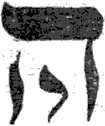

Pardes Rimmonim, English translation with the Hebrew.
We named it "Glossary of Titles" — a sufficient treatment for explaining most of what is found in the Book of the Zohar, for these are the principal ones. Its chapters number twenty-three. [The printing lists twenty-two chapters, one per letter Alef through Tav; the stated count of twenty-three appears to be a discrepancy in this edition. Each chapter contains a dictionary-like listing of the Zohar's titles starting with that letter.]
23:1:1 The Gate of the Glossary of Titles is the Twenty-Third Gate.
שער ערכי הכנויים הוא שער כ"ג:
23:1:2 What is intended in this Gate is to explain all the titles whose explanation is found in the Zohar. And many commentators who preceded us in this work wrote the titles by way of the sefirot, setting down for each and every sefirah the titles that relate to it. But we, in our own way, [proceed otherwise]: because sometimes it happens that when the inquirer seeks one of the titles, his search is hard for him, because its place is hidden from him. Besides this, sometimes one title is related to several sefirot for known reasons; and sometimes its root is in one attribute, and it is related to another for a known reason, and the inquirer pays no attention to the matter, but only to the sefirah to which it is attributed. Therefore we thought fit to write the titles as entries in the order of the letters, and in each to explain the whole matter and the sefirah that is related to it; and by this the inquirer's search will be made easy for him:
והנרצה בשער הזה הוא לבאר כל הכנויים שנמצא ביאורם בזהר ושאר מפרשים רבים אשר קדמונו במלאכה הזאת כתבו הכנויים ע"ד הספירות לכל ספי' וספי' הכנויים המתייחסים לה. ואנו לפי דרכנו מפני שפעמים יקרה למעיין בבקשו כנוי מהכנויים יכבד עליו מבוקשו מפני שנעלם ממנו מקומו. בזולת זה פעמים יהיה כנוי אחד מתייחס אל כמה ספי' לסבות ידועות. ולפעמים עקרו במדה זו ויתייחס אל זולתה מפני סבה ידועה ולא יתן המעיין לבו אל הדבר אלא אל הספירה המכונה אליו לבד. לכן ראינו לכתוב הכנויים בערכים לפי סדר האותיות ובו נבאר כל ענין וספירה המתייחסת אליו ובזה יקל על המעיין מבוקשו:
23:1:3 Chapter One:
פרק ראשון:
23:1:4 Father [אב, av]. Some explained it as Keter, for it is the father of compassion, and likewise from it Tiferet draws [sho'ev] compassion. And some explained it as Chokhmah, which is so called for the reason that it is the father and the source of all the beings, in the way that we explained in the preceding gate, in the first chapter; and this name shows that it bestows, like the father who gives to the sons. And it is near to say that it is in both of them together, and the letters show this, for they are Alef, Keter, and Bet, Chokhmah; and the reason is that the beings are bestowed from Chokhmah, from the source concealed in it, which is Keter, as is known:
אב יש שפי' בכתר כי הוא אב הרחמים וכן ממנו שואב התפארת הרחמים. ויש שפי' בחכמה כי נקרא כן מטעם כי הוא אב ומוצא כל ההויות על דרך שפי' בשער הקודם בפ"ק ושם זה מורה על היותו משפיע כמו האב הנותן לבנים. וקרוב לומר שהוא בשתיהם יחד והאותיות יורו על זה שהם א' כתר ב' חכמה, והטעם שההויות יושפעו מהחכמה ממקור הנעלם בו שהוא הכתר כנודע:
23:1:5 Father of Faith [אב האמונה, av ha-emunah]. Some explained it as Keter, because it is father to Malkhut. And this is far-fetched: for as its relation is with Malkhut, so is its relation with the rest of the Emanation. And it is possible to say, with a strained reading, that sometimes Malkhut rises up to Keter, as is explained in the Gate of Manifestations, and then, when they rise there, she draws nourishment from Keter and bestows on everything; and it is possible that [then] Keter is called "Father of Faith," to hint at the Faith that is there. However, two explanations are attributed to "Faith": either Binah or Malkhut, as we shall explain further, with the help of the Name. And on both of them it would mean that Chokhmah is father to Malkhut, in the secret of "YHVH by wisdom [be-chokhmah] founded the earth" (Prov. 3:19), as we explained in the aforementioned gate; and likewise it is father to Binah, for she was emanated from it. And on all the explanations, Keter or Chokhmah is called "Father of Faith" only in the secret of the aspect of its bestowal on the Faiths:
אב האמונה יש שפי' בכתר מפני שהוא אב אל המלכות. ורחוק כי כיחסו עם המלכות כן יחסו עם שאר האצילות. ואפשר לומר בדוחק, כי לפעמים מתעלה המלכות עד הכתר כמבואר בשער המציאות ואז בעלותם שם יונקת מהכתר ומשפיע על הכל. ואפשר [אז] יקרא הכתר אב האמונה לרמוז אל האמונה אשר שם. אמנם באמונה יתייחסו שני פירו' אם בינה אם מלכות כאשר נבאר עוד בעה"ו. ולשניהם ירצה כי החכמה אב אל המלכות בסוד ה' בחכמה יסד ארץ (משלי ג יט) כדפירשנו בשער הנזכר. וכן הוא אב אל הבינה כי ממנה נאצלה [א]. ולכולהו פי' לא יקרא הכתר או החכמה אב האמונה אלא בסוד בחי' השפעתו באמונות:
23:1:6 The Compassionate Father [אב הרחמן, av ha-rachaman]: Tiferet is so called, for he is father to the souls; and he is called "Compassionate" by the power of (Keter) that bestows upon him in compassion, and in this aspect he is called "Compassionate." It follows accordingly that when he has compassion on the souls, in the secret of the compassion of Keter, he is called "the Compassionate Father." And this name has also been related to Keter, in the view of some of the commentators. And some explained it as Chokhmah; and the main thing is that it is called "Father," and it is "Compassionate" in the secret of the great compassion from Keter:
אב הרחמן נק' הת"ת כי הוא אב לנשמות ונק' רחמן בכח (הכתר) השופע עליו ברחמים ובבחי' זו יקרא רחמן. נמצא לפ"ז כי בהיותו מרחם על הנשמות בסוד רחמי הכתר יקרא אב הרחמן. וכבר יתיחס שם זה בכתר לדעת קצת המפרשים. ויש שפירשו בחכמה ועקר שהוא נקרא אב והוא רחמן בסוד רחמים גדולים מהכתר:
23:1:7 Av [אב, av], in the sense of a shoot, as in the matter of "while it is yet in its greenness [be-ibbo]," etc. (Job 8:12). Certainly it is the matter of the spreading out of the Emanation, and everything according to its context. The example of this is "the shoots [ibbei] of the stream" (Song 6:11): the stream is Tiferet, and "the shoots of the stream" are the branches that spread out from it. Or if we explain "stream" as Yesod, it would mean the branching out of Yesod. And likewise if we explain it elsewhere, everything according to its context. And "the month of Aviv" means the month that spreads out and branches out; for Nisan is the head of the months, which is the havayah in its order, YHVH, and from it the twelve havayot, the twelve months, branch out. And the matter of "fresh ears [aviv] parched with fire" (Lev. 2:14) is from this root. And from this the inquirer can judge whatever is like it:
אב לשון ענף כענין עודנו באבו וכו' (איוב ח'). ודאי שהוא ענין התפשטות האצילות והכל לפי ענינו המשל בזה אבי הנחל. נחל תפארת אבי הנחל הענפים המתפשטים ממנו. או אם נפרש נחל יסוד ירצה הסתעפות היסוד. וכן אם נפרשהו במקום אחר הכל לפי עניינו. וחדש האבי"ב ירצה החדש המתפשט ומסתעף כי ניסן הוא ראש לחדשים שהוא הויה כסדרה יהו"ה וממנו מסתעפים י"ב הויות י"ב חדשים. וענין אבי"ב קלוי באש (ויקרא ב יד) ירצה מגזרה זו ומזה יוכל המעיין לשפוט אל כיוצא בזה:
23:1:8 Willing [אבה, avah] is from the language of will, and wherever it is found it means the rising of the will, that is, the bestowal of Keter, which is called Will; and from this one will judge according to its context:
אבה הוא מלשון רצון ובכ"מ שימצא ירצה אל עלות הרצון דהיינו השפעת הכתר הנקרא רצון ומזה ישפוט לפי עניינו:
23:1:9 Perished [אבד, avad], as in the matter of "the righteous one perishes" (Isa. 57:1): it means the withdrawal of his bestowal; and from this the inquirer may infer:
אבד כענין הצדיק אבד (ישעיה נז) ירצה אל הסתלקות השפעתו ומזה יקיש המעיין:
23:1:10 The point of the sword [אבחת חרב, ivchat cherev] (Ezek. 21:20) is the language of the flame of the sword, and it is the husk, as we explained in its place. And likewise some explained it as "the terror of the sword"; and it is all one matter:
אבחת חרב הוא לשון להט החרב והוא הקליפה כדפירשנו במקומו. וכן יש שפי' בעתה של חרב והכל ענין אחד:
23:1:11 The Mighty One [אביר, abir] is Tiferet; and likewise "the Mighty One of Jacob" and likewise "the Mighty One of Israel." And it is possible that he is so called in the secret of his might in tipping judgment toward compassion, as is known. And Yesod is sometimes so called, as is known, for it is the extension of the Vav:
אביר הוא תפארת וכן אביר יעקב וכן אביר ישראל. ואפשר שנק' כן בסוד אבירותו להכרעת הדין אל הרחמים כנודע. ויסוד נק' כן לעיתים כנודע שהוא משך הו"או:
23:1:12 Mourning [אבל, avel]: the language of mourning is a parable for the withdrawal of the effluence and the dominion of the outer ones to destroy, God forbid; and in this is the very secret of mourning, which is seven days of weeping. And it is possible that it is within holiness. Aval [Indeed] is from the side of the strength of judgment; and it is all one matter, for the effluence withdraws from the side of judgment. And every use of the word aval, as in the matter of "Indeed [aval], Sarah your wife" (Gen. 17:19), and likewise "We are indeed [aval] guilty" (Gen. 42:21), and the like, may be in Malkhut from the side of judgment; and there is evidence for this from the Scriptures:
אבל לשון אבלות הוא משל אל הסתלקות השפע ושלטנות החצוניים להשמיד חס ושלום ובזה הוא הוא סוד האבלות שהם ז' ימים של בכי. ואפשר היותו בתוך הקדושה. אבל הוא מצד תוקף הדין והכל ענין אחד. כי השפע מסתלק מצד הדין. וכל לשון אבל כענין אבל שרה אשתך (בראשית יז יט) וכן אבל אשמים אנחנו (שם מב כא) וכיוצא אפשר היותו במלכות מצד הדין ויש גילוי לזה מן הכתובים:
23:1:13 Stone [אבן, even] is always in the secret of the Yod, and mostly in Malkhut, in the manifestation of the Yod that is in her. And likewise the Yod is a lump in the form of a stone. And likewise Malkhut is a foundation and a stone on which the whole upper building rests; and of her it is said (Zech. 3:9), "upon one stone are seven eyes":
אבן לעולם הוא בסוד יו"ד ורובה במלכות במציאות היו"ד שבה. וכן גולם הי' בצורת אבן. וכן המלכות היא יסוד ואבן שכל הבנין העליון עליה. ועליה נא' (זכריה ג ט) על אבן אחת שבעה עינים:
23:1:14 And sometimes this title is accompanied [by another word], and she is called a tried stone [אבן בוחן, even bochan] (Isa. 28:16). And this is in the secret that she tries and tests the righteous, as in the matter of the ten trials with which Abraham our father, peace be upon him, was tried. And in this aspect there are two aspects: either the aspect of her drawing nourishment from judgment, and from there she tries the righteous; or from the side of her drawing nourishment from compassion, when she rises up to Keter; and she needs purification in order to rise, and then the judgment that is in her is bestowed to try the righteous, and she is purified and withdraws. And this is the secret of the sufferings of love, with which she chastens the righteous:
ולפעמים יתלווה כנוי זה, ונקראת אבן בוחן [ב] וזהו בסוד שמבחנת ומנסה לצדיקים כענין עשר נסיונות שנתנסה א"א ע"ה. ובבחי' זו שתי בחינות. או בחי' יניקתה מן הדין ומשם בוחנת הצדיקים, או מצד יניקתה מן הרחמים ומתעלית עד הכתר והיא צריכה טהרה כדי להתעלות ואז הדין שבה משפעת לבחון הצדיקים והיא נטהרת ומסתלקת [ג] וזה סוד יסורים של אהבה שהיא מייסרת הצדיקים:
23:1:15 Further, she is called the head stone [אבן הראשה, even ha-roshah] (Zech. 4:7), in the aspect in which she is second to Chokhmah, as is explained in the aforementioned gate:
עוד נקראת אבן הראשה בבחי' שהיא שניה לחכמה כמבואר בשער הנזכר:
23:1:16 Further, she is called the stone that the builders rejected [אבן מאסו הבונים] (Ps. 118:22). And the explanation is that the fathers of the world, who built the Chariot, did not take her as their portion, and took as their portion Gedulah, Gevurah and Tiferet. And sometimes she is head of them all, when she rises up to the Ein Sof; and then she is called the crown of priesthood at the head of Chesed, the crown of Levitehood at the head of Gevurah, and the crown of Torah at the head of Tiferet. And this is "has become the head of the corner" [pinnah]. And the commentators explained that she "has become the head of the corner" because everything turns [ponim] to her: the upper ones to bestow into her, and the lower ones to draw from her:
עוד נקראת אבן מאסו הבונים ופירוש שאבות העולם שהם בנו המרכבה לא לקחוה לחלקם ולקחו לחלקם גדולה גבורה ת"ת [ד]. ולפעמים היא ראש לכלם בעלותה עד אין סוף ואז נקראת כתר כהונה בראש החסד, כתר לוי"ה בראש הגבורה, כתר תורה בראש הת"ת. וזהו היתה לראש פינה. והמפרשים פירשו כי היא היתה לראש פינה שהכל פונים אליה. העליונים להשפיע בה, והתחתונים לשאוב ממנה:
23:1:17 Further, she is called the stone of Israel [אבן ישראל], and the reason is "from there is the shepherd, the stone of Israel" (Gen. 49:24): through her even Tiferet is sometimes bestowed upon, and in this aspect she is called "the diadem of Tiferet." And the commentators explained: the provider and shepherd of Israel below:
עוד נקראת אבן ישראל והטעם כי משם רועה אבן ישראל. על ידה נשפע אפי' הת"ת לפעמים ובבחי' זו נקראת עטרת תפארת. והמפרשים פירשו מפרנסן ורועה של ישראל למטה:
23:1:18 Further, she is called the Foundation Stone [אבן השתיה, even ha-shetiyah]. Some explained it from the language of giving drink [hashka'ah], for from there all the flocks are given drink; and this is strained. And its principal explanation is the language of foundation, for she is the foundation of all the upper ones, as is known:
עוד נקראת אבן השתיה יש שפי' מלשון השקאה כי משם ישקו כל העדרים וזה דוחק. ועקר פירושו לשון יסוד כי היא יסוד כל העליונים כנודע [ה]:
23:1:19 Further, she is called the sapphire stone [אבן הספיר, even ha-sappir]. And all of them explained the reason: just as the sapphire receives all the colors, so this attribute receives the actions from above, whether for good or for ill. And in the Tikkunim (Introduction, fol. 6) he explained that she is so called when she is like Chokhmah, which is the one called sapphire, as we explained in the Gate of Colors, chapter 2; and then she is called "the sapphire stone." And when we look at the matter of the colors, [we see] that Chokhmah has no color and Malkhut has no color, as we explained there in chapter 5. It all comes to one place:
עוד נקראת אבן הספיר וכולם פי' הטעם כמו שהספיר מקבל כל הגוונים כן המדה הזאת מקבלת הפעולות מלמעלה בין לטוב בין למוטב. ובתקונים (הקדמה ד"ו) פי' שהיא נק' כן כאשר היא דומה לחכמה שהיא הנקראת ספיר כדפירשנו בשער הגוונים בפרק ב' ואז היא נקראת אבן ספיר. וכשנראה בענין הגוונים שהחכמה אין לה גוון והמלכות אין לה גוון כדפי' שם בפ"ה. הכל עולה אל מקום אחד:
23:1:20 Further, she is called a whole stone [אבן שלימה, even shelemah], from the side of Binah. And the matter is that Chokhmah is a Yod and Malkhut is a Yod. And this is what Rabbi Akiva said to his disciples: "When you reach the stones of pure marble, do not say, 'Water, water'": that they are two kinds of water; for it is all one union, as it is said (Isa. 44:6), "I am the first and I am the last." As the verse says (Prov. 3:19), "YHVH by wisdom founded the earth": for the foundation of Malkhut, which is a Yod, is from the side of Chokhmah; and from there she is called simply "stone," the form of a Yod. However, from the side of Binah she is called "a whole stone," for then she is whole in her building; and of them it is said (Deut. 27:6), "You shall build the altar of YHVH your God of whole stones." And when she is whole in her building, then it is said of her (Dan. 2:34–35): "You saw, until a stone was cut out," etc., from Chokhmah; and she takes the power of judgment from the side of Binah; "and it struck the image," to remove the idols from the earth, "and the idols shall be utterly cut off"; and then "it became a great mountain," in her place, "and filled the whole earth," for she fills the whole earth in the secret of the manifestations. All this is learned from the words of Rashbi in the Tikkunim, one here and one there:
עוד נקראת אבן שלימה מצד הבינה. והענין כי החכמה י' והמלכו' י'. וז"ש רבי עקיבא לתלמידיו כשתגיעו אצל אבני שיש טהור אל תאמרו מים מים. שהם שני מיני מים. שהכל יחוד אחד שנא' (ישעיה מד ו) אני ראשון ואני אחרון. כמו שאמר הכתוב (משלי ג יט) ה' בחכמה יסד ארץ שיסוד המלכות שהיא י' הוא מצד החכמה ומשם נקראת אבן לבד צורת י'. אמנם מצד הבינה נקראת אבן שלימה, כי אז שלימה בבנינה ועליהן נא' (דברים כז ו) אבנים שלמות תבנה את מזבח ה' אלהיך. וכאשר היא שלימה בבניינה אז נאמר עליה (דניאל ב') חזה הוית עד די התגזרת אבן כו', מן החכמה. ונוטלת כח הדין מצד הבינה. ומחת לצלמא, להעביר הגלולים מן הארץ והאלילים כרות יכרתון. ואז הות לטור רב, במקומה. ומלאת כל ארעא, כי היא מלא כל הארץ בסוד המציאיות. כל זה נלמד מתוך דברי הרשב"י בתקונים אחת הנה ואחת הנה:
23:1:21 And there is a stone of stumbling and a rock of offense [אבן נגף וצור מכשול] (Isa. 8:14), and they are the husks. And so Rashbi, peace be upon him, explained in the Zohar, Parashat Vayetze (in the Sitrei Torah, fol. 151) and in Pekudei (fol. 249):
ויש אבן נגף וצור מכשול והם הקליפות. וכן פי' הרשב"י עליו השלום בזהר פ' ויצא (בס"ת ד' קנ"א ובפקודי ד' רמ"ט):
23:1:22 Further, there is a figured stone [אבן משכית, even maskit] (Lev. 26:1), and it is from the side of Beriah: the handmaid of holiness, from the side of Metatron. And it is explained in the Gate of ABYA:
עוד יש אבן משכית והיא מסטרא דבריאה. שפחה דקדושה מצד מטטרון. ופי' בשער אבי"ע:
23:1:23 Slimy stones [אבנים מפולמות, avanim mefulamot] are explained as Chesed. And they said that it is a parable for the source of the waters and their moisture. And in the Zohar is found: "slimy stones that are sunk in the deeps, and from them the waters go out." Further, it explained (in the Ra'aya Meheimna, Pinchas, fol. 227) that there are three husks:
אבנים מפולמות פי' בחסד. ואמרו כי הוא משל אל מוצא המים ולחלוחיהון. ובזהר נמצא אבנים מפולמין דמשקען גו תהומי ומנייהו נפקין מיין. עוד פי' (בר"מ פינחס ד"רכז) כי יש ג' קליפות:
23:1:24 The first is a green line, and that is formlessness [tohu]; and the second is slimy stones, and that is void [bohu], etc.; see there. And according to this they are in the husk. And it is possible to reconcile them: when Chesed is clothed within that husk, it is called "slimy stones"; for the three Patriarchs are clothed in three husks. And this will be explained at length in the Gate of Substitutes, chapter 7, with the help of the Name:
הראשונה קו ירוק והיא תהו, ושניה אבנים מפולמות והוא בהו כו' ע"ש. ולפי זה הם בקליפה. ואפשר להסכימם כי בהיות החסד מתלבשת בתוך הקליפה ההיא נקרא אבנים מפולמות כי ג' אבות מתלבשות בג' קליפות וזה יתבאר בארוכה בשער התמורות בפ"ז בה"ו:
23:1:25 Stones of formlessness [אבני תהו, avnei tohu] (Isa. 34:11) are in Chesed, and they are like "slimy stones," on the two explanations that we explained of them above. And it is also possible that [they are] the husks, which are formlessness, void and darkness, as is known; and it is explained in the Gate of Substitutes, chapter 6:
אבני תהו הם בחסד והם כמו אבנים מפולמות לשני הפי' שפירשנו בהם לעיל. וכבר אפשר היות הקליפות שהם תה"ו בה"ו חש"ך כנודע ופי' בשער התמורות פ"ו:
23:1:26 Dust [אבק, avak]: the husk is so called. And the reason is that it is like the dust, which is the burnt earth under the furnace, which does not make fruit; so too the husk does not make fruit, for it is "burned with fire, cut down" (Ps. 80:17). So it is explained in the Zohar, Parashat Vayishlach (fol. 170):
אבק נק' הקליפה והטעם כי היא כמו האבק שהוא העפר השרוף תחת הכבשן שאינו עושה פירות וכן הקליפה אינה עושה פירות כי היא שרופה באש כסוחה כן פי' בזהר פ' וישלח (דק"ע):
23:1:27 The powders of the merchant [אבקת רוכל, avkat rokhel] (Song 3:6). He explained in the Zohar (Mishpatim, fol. 117) that it is Binah; and it is possible that she is so called for the reason that in her all the forms are included, and in her they are formed, in the secret of "this day the world was conceived." And in the Tikkunim (Tikkun 21, fol. 44) he explained it as Yesod; and it is possible that it is called rokhel because it is like the merchant [rokhel] who compounds spices. And so he explained (there, fol. 54): "He is the merchant, and she is his powder": the explanation, Yesod is the merchant, and Malkhut is his powder:
אבקת רוכל פי' בזהר (משפטים קי"ז) שהיא הבינה ואפשר שהיא נקראת כן מטעם שבה כלולות ובה מצטיירות כל הצורות בסוד היום הרת עולם ובתיקונים (תקונא כ"א ד"מד) פי' ביסוד. ואפשר שהוא נקראת רוכל שהוא כמו הרוכל הרוקח מרקחות וכן פי' (שם ד"נד) איהו רוכל ואיהי אבקת דיליה פירוש היסוד הוא הרוכל והמלכות היא אבקת שלו:
23:1:28 Pinion [אבר, ever]. Rashbi, peace be upon him, explained in the Tikkunim (at the end of Tikkun 13, fol. 28), on the verse "He will cover you with His pinion [be-evrato]" (Ps. 91:4), that ever is the Righteous One; and it is called "a limb [ever] from the living," which is Yesod; and likewise the word ever hints at it, for it is the hidden use. And it is possible that the language of flying is also applied to it as a title, as in "Does the hawk soar [ya'avar]?" (Job 39:26); and it is "the bird of the heavens" and "the winged one" on the Sabbath day, as explained in the Tikkunim:
אבר פי' הרשב"י עליו השלום בתיקונים (בסוף תקונא י"ג ד"כח) בפסוק באברתו יסך לך כי אבר הוא צדיק והוא נק' אבר מן החי שהוא יסוד וכן נרמז בו לשון אבר שהוא תשמיש המוצנע. ואפשר שג"כ בו יכונה לשון התעופפות כענין יאבר נץ (איוב לט כו). והוא עוף השמים ובעל כנפים ביום השבת כדפי' בתיקונים:
23:1:29 Abraham [אברהם, avraham]: its explanation is in Chesed; and for the reason that Abraham was made a chariot for Chesed, it is called by his name. And it is possible that it is called by the name Abraham only in the secret of the aspect for which Abraham is a chariot, which is the aspect called "southward" [negbah], as will be explained (in the entry "south" [negev]); and likewise in that aspect in which it bestows its kindness on human beings: in that aspect he was a chariot for it:
אברהם פירושו בחסד ומטעם כי אברהם נעשה מרכבה לחסד נקרא על שמו. ואפשר שלא נקראת בשם אברהם אלא בסוד הבחינה שאברהם מרכבה אליה שהיא בחינה הנקרא נגבה כאשר יתבאר (בע' נגב) וכן באותה בחינה שהיא שופע חסדו על בני אדם באותה בחינה הי' מרכבה אליה:
23:1:30 Bundle [אגודה, aguddah]: the explanation, the whole Emanation is so called when it is in Malkhut. And it is so called because in her all the sefirot are united and joined, and she binds them all together. And for this reason the lulav does not need a binding, because it is united with the etrog, and its binding is with it. And in the Zohar, Parashat Tzav (fol. 35), he explained on the verse "and has founded His bundle [aguddato] upon the earth" (Amos 9:6) that when the Emanation is united with her in union, she is called "bundle," as we explained:
אגודה פירוש כן נקרא כל האצילות כשהוא במלכות ונקרא כך מפני שבה מתאחדים ומתחברים כל הספירות והיא הקושרת כלם יחד [ו] ומפני זה לולב אין צריך אגד מפני שהוא מיוחד אל האתרוג ואגדו עמו. ובזוהר פ' צו (ד"לה) פי' בפסוק ואגודתו על ארץ יסדה כי בהיות האצילות מיוחד ביחוד עמה נקראת אגודה כדפירשנו:
23:1:31 Drops of dew [אגלי טל, eglei tal] (Job 38:28): its matter is the drops of the effluence and its revelations [gilluyav], which are bestowed from Tiferet, where the place of the dew is, in the secret of Yod-Vav-Dalet, Heh-Alef, Vav-Alef-Vav, which equals tal [39] in numerical value. And from this one will judge according to its place. And it is possible to explain it from the language of "a spring [gal] shut up" (Song 4:12), in Malkhut; see the entry gal:
אגלי טל עניינו טיפות השפע וגלוייו הנשפעים מהתפארת ששם מקום הטל בסוד יו"ד ה"א וא"ו בגימ' טל. ומזה ישפוט לפי מקומו ואפשר לפרשו מלשון גל נעול במלכות יעויין בע' גל:
23:1:32 Nut [אגוז, egoz]. Rashbi, peace be upon him, explained in the Tikkunim (Tikkun 24, fol. 67, and Tikkunei Zohar Chadash, fol. 136) that Malkhut is called "nut." And the reason is that she is clothed within the husks, as the kernel of the nut is clothed within its shells, as we shall explain in the Gate of the Substitute Palaces, chapter 7, with the help of the Name. And the kernel is divided into four parts, to show the four letters of the Name, which are the four legs of the Chariot, and all is unified. And this is close to the hand tefillin, whose four passages are the four letters; and they are four within and one without. And accordingly it is found that Malkhut is so called in the secret of her aspect that is clothed within all the husks. And elsewhere in the Tikkunim (Tikkun 26, fol. 69) he explained that Yesod is called "nut" and Malkhut "the garden of nuts." (And see the Zohar, Shemot, fol. 15):
אגוז פי' הרשב"י ע"ה בתיקונים (תקונא כ"ד ד"סז ותקוני ז"ח ד"קלו) שהמלכות נקרא אגוז והטעם שהיא מתלבשת בתוך הקליפות כמוח האגוז המתלבש בתוך קליפותיו כמו שנבאר בשער היכלי התמורות פרק ז' ב"ה. והמוח נחלק לד' חלקים להראות על ד' אותיות שבשם שהם ד' רגלי המרכבה וכלם מיוחד. וזה קרוב לתפלה של י"ד שד' פרשיות ד' אותיות והם מבפנים ד' ומבחוץ אחד. ונמצא לפי זה שנקראת כן המלכות בסוד בחינתה המתלבשת בתוך כל הקליפות כלם. ובמקום אחר בתיקונים (תקונא כ"ו ד"סט) פי' שהיסוד נקראת אגוז והמלכות גנת אגוז. (וע' זהר שמות ד"טו):
23:1:33 Pool [אגם, agam]: the explanation, "a pool of water" (Ps. 107:35) and the like is Malkhut, when she receives the waters of Chesed, and the field becomes a pool of water. And the matter is evident of itself:
אגם פירוש אגם מי"ם וכיוצא היא המלכות בהיותה מקבלת מימי החסד והשדה נעשית אגם מים והענין מוכרח מעצמו:
23:1:34 Basin [אגן, aggan]. He explained in the Zohar, Parashat Mishpatim (fol. 126), on the verse "and put it in basins" (Exod. 24:6), and these are his words: "Ba-aganot is written defectively, as it is written, 'Your navel is like a round basin, wherein no mingled wine is wanting' (Song 7:3)." Thus far his words.
אגן פי' בזהר פרשת משפטים (ד"קכו) בפסוק וישם באגנות וז"ל באגנת חסר כתיב כמה דכתיב שררך אגן הסהר אל יחסר המזג עכ"ל.
23:1:35 And the intent is that "basin" is Malkhut when she is full and complete in all her circles; and this is the language of aggan and the language of circle [iggul]. And it shows the language of receiving, like this vessel that has a rim [ogen], which receives the thing that is put in it. And this is "wherein no mingled wine [mezeg] is wanting": the intent is that her fullness and her completeness, that is, her blending, should not be wanting:
והכונה כי אגן היא מלכות בהיותה מלאה ושלימה בכל עגוליה וזה לשון אגן ולשון עגול וזה מורה לשון קבול ככלי הזה שיש לו אוגן שמקבל הדבר הנתון בו. וזהו אל יחסר המזג הכונה שלא יחסר מליאות' ושלימותה דהיינו מזיגתה:
23:1:36 Wing [אגף, agaf] is the matter of wings, as the Targum renders gappin; and it is a title for the gathering of the hosts that accompany the Shekhinah or Tiferet. For the language of wings [kenafayim] is also the matter of a company [kenufya] and a gathering. And it is a parable for the hosts that gather to the Shekhinah; that is to say, the spreading out of its aspect to take refuge under the wings of the Shekhinah, as in the matter of "under whose wings you have come to take refuge" (Ruth 2:12), which is expounded in the Zohar on the matter of the proselytes. We shall explain it in its entry:
אגף הוא ענין כנפים כתרגום גפין והוא כנוי אל קבוץ החיילות המתלוים אל השכינה או אל התפארת כי לשון כנפים הוא ג"כ ענין כנופייא וקבוץ. והוא משל אל החיילים המתקבצים אל השכינה. רצה לומר התפשטות בחינתו לחסות תחת כנפי השכינה וכענין אשר באת לחסות תחת כנפיו (רות ב יב) הנדרש בזוהר בענין הגרים נבאר בערכו:
23:1:37 Gathering [אגרת, agoret]: the language of gathering, as in "she gathers [agrah] in the harvest" (Prov. 6:8), etc. And it is a title for Malkhut, who gathers the effluence within her. And when the effluence is from the side of Chesed, she is called "a piece [agorat] of silver" (1 Sam. 2:36). And from this the inquirer may infer to everything found that is like it:
אגרת לשון קבוץ כענין אגרה בקציר (משלי ו') וכו' והוא כנוי אל המלכות שהיא מקבצת השפע בתוכה. ובהיות השפע מצד החסד נקרא אגורת כסף. ומזה יקיש המעיין אל כל הנמצא כיוצא בו:
23:1:38 Mist [א"ד, ed]. He explained in the Tikkunim (Tikkun 52, fol. 84) that it is the last Heh, Malkhut, for ed [Alef-Dalet] comes to five, the number of Heh; and it is the Alef-Dalet of Adonai. And it is a hint at the arousal of Malkhut; and of this aspect it is said (Gen. 2:6), "and a mist went up from the earth." And it is an aspect in which she bestows the arousal upward:
א"ד פירש בתיקונים (תקונא נב ד"פד) כי היא ה' אחרונה המלכות שעולה אד כמנין ה' והוא א"ד מאדנ"י. והוא רמז על התעוררות המלכות ועל בחינה זו נאמר (בראשית ב) ואד יעלה מן הארץ. והיא בחינה שבה היא שופעת ההתעוררות למעלה:
23:1:39 Lord [אדון, adon] is Malkhut; and she is so called in her lower aspect, for she is like a lord sitting on the throne to govern the world, the upper ones and the lower ones. And Rashbi, peace be upon him, explained in the Ra'aya Meheimna (Mishpatim, fol. 118) that Tiferet, when he is in Malkhut, is called "Lord," for he is the self of lordship, and by his name she is called Adonai. And the reason is that through his providence over the world he is called "Lord." If so, it is found that when he is in union with her below, in her place, she is called by his name. And so it is also explained in the Zohar, Bereshit (fol. 34). And in the Ra'aya Meheimna (Pinchas, fol. 242) he further explained "lord" as the Righteous One, on the verse "YHVH says to my lord" (Ps. 110:1), that it is in Yesod; and the reason is to bind it to the right, and this is "Sit at My right hand." And it is possible that it is so called for the reason that we explained for Tiferet:
אדון היא המלכות ונקראת כן בבחינתה התחתונה שהיא כאדון יושבת על הכסא להנהיג העולם עליונים ותחתונים. והרשב"י ע"ה פירש בר"מ (משפטים ד"קיח) כי הת"ת בהיותו במלכות יקרא אדון כי הוא עצם האדנות ועל שמו נקראת היא אדנ"י והטעם שבהשגחתו בעולם נקרא אדון. אם כן נמצא כשהוא ביחוד עמה למטה במקומה נקראת על שמו. וכן נתבאר ג"כ בזהר בראשית (דל"ד). ובר"מ (פינחס ד"רמב) פי' עוד אדון בצדיק בפסוק נאם ה' לאדוני שהוא ביסוד והטעם לקושרו בימין וזהו שב לימיני ואפשר שנקרא כן מטעם שפירשנו בתפארת:
23:1:40 Further, there is Lord of wonders [אדון הנפלאות, adon ha-nifla'ot]. And Rabbi Moshe [de León] explained in Sefer ha-Shem that it is in Netzach; and it is so called because it comes from the power of the wonders of Chokhmah, the right; or because it works wonders for the lower powers, to overpower Hod, which is beneath it. And this is strained, for why should it be called "Lord"? Unless we explain it as Tiferet, and it is called "Lord of wonders" in the secret of its receiving from the supernal Wonder; and so he explained in the Tikkunim. And some explained it as Malkhut. And so there are found in the prayer of Yotzer, from "On high and Holy" to "Lord of wonders," ten levels corresponding to the ten sefirot: "On high" is Keter, "Holy" Chokhmah, etc., "Lord of wonders" Malkhut. And it is possible that it is called by the language of wonders because she receives the thirty-two wondrous paths of wisdom and reveals them among the lower ones:
עוד יש אדון הנפלאות ופירש רבי משה בספר השם שהוא בנצח. ונקרא כן מפני שהוא בא מכח פליאות החכמה ימין או מפני שהוא מפליא פלאות לכוחות תחתונות להכריח ההוד שתחתיו. ודוחק הוא כי למה יקרא אדון. אם לא שנפרשהו על התפארת ונקרא אדון הנפלאות בסוד קבלתו מן הפלא העליון וכן פירש בתיקונים. ויש שפירשו במלכות. וכן נמצא בתפלת יוצר ממרום וקדוש עד אדון הנפלאות עשר מדרגות כנגד עשר ספירות, מרום כת"ר, קדו"ש חכמה וכו', אדון הנפלאות מלכות. ואפשר שנק' בלשון נפלאות כי ל"ב נתיבות פליאות חכמה היא מקבלת אותם ומגלה אותם בתחתונים:
23:1:41 Further, Malkhut is called Lord of lords [אדון האדונים], for she is head of all the princes on high. And it is possible that she is so called when she "gives food to her household and a portion to her maidens" (Prov. 31:15), "each to his work that they do": to Michael, Chesed, and to Raphael, healing; all to bestow upon and govern the lower ones. And therefore she is called "Lord," governing the governing lords that are beneath her, which receive from her:
עוד נקראת מלכות אדון האדונים כי היא ראש לכל שרי מעלה ואפשר שנקרא כן כשהיא נותנת טרף לבית' וחק לנערותיה איש למלאכתו אשר המה עושים. למיכא"ל חסד ולרפא"ל רפואה הכל להשפיע ולהנהיג התחתונים. ולכן היא נקראת אדון מנהיג האדונים המנהיגים אשר תחתיה שמקבלים ממנה:
23:1:42 Mighty [אדיר, adir]: some explained it as Binah. And to me it appears that it is a title for the power of Gevurah, from the side of judgment; and such is the sense of the word, for adir means strength. And it is possible that from the side of Gevurah Malkhut is called aderet [mantle]; all the more so when she is called "a mantle [aderet] of Shinar" (Josh. 7:21), for then it shows that she receives from Gevurah and bestows on the storm and tempest that are beneath her:
אדיר יש שפירשו בבינה. ולי נראה שהוא כנוי לכח הגבורה מצד הדין. וכן משמעות התיבה כי אדיר פירוש חוזק. ואפשר שמצד הגבורה נקראת המלכות אדרת ומה גם בהיותה נקראת אדרת שנער [ז] שאז מורה היותה מקבלת מן הגבורה ומשפעת אל סערה וסופה שתחתיה:
23:1:43 Man [אדם, adam]. "Man" without qualification is Chokhmah; and it is mah [45], the four-letter name in its filling Yod-Vav-Dalet, Heh-Alef, Vav-Alef-Vav, Heh-Alef, which comes to mah [45], the number of adam; and it is Chokhmah [chokhmah], ko'ach mah [the power of What]; so Rashbi, peace be upon him, explained in the Tikkunim. Further, Malkhut is called "man," and she is the lower Man. Further, the supernal Keter is called the Primordial Man [Adam Kadmon]; and so Rashbi, peace be upon him, explained in the Tikkunim (Tikkun 70, fol. 116): "There is no sefirah that is not called adam; but the first, supernal Man of them all is the supernal Keter," etc. And they called it there Adam Kadmon; and it is called kadmon [primordial] to show that it precedes the whole Emanation. And there is no doubt that it is so called only when it is in the utmost concealment, like the primordial light. Further, Tiferet is called "man" when he rises to Chokhmah; and these are the words of the Ra'aya Meheimna (Pinchas, fol. 255): "And in Chokhmah, which is the life of Tiferet, he rises to be called adam; as it is written, 'according to the beauty [tiferet] of a man' (Isa. 44:13)." Thus far his words.
אדם סתם אדם הוא חכמה והוא מ"ה שם בן ד' במלוי יו"ד ה"א וא"ו ה"א עולה מ"ה והוא חכמה כ"ח מ"ה, כ"פ הרשב"י ע"ה בתקונים. עוד נקרא אדם המלכות והוא אדם התחתון. עוד נקרא כ"ע אדם קדמון. וכן פירש הרשב"י עליו השלום בתיקונים (תקונא ע' ד"קטז) לית ספירה דלא אתקרי אדם אבל אדם קדמאה עלאה דכלהו כתר עליון כו'. וקראו שם אדם קדמון. ונקרא קדמון להורות כי הוא קדמון לכל האצילות. ואין ספק שלא יקרא כן אלא בהיות בתכלית ההעלם כמו האור קדמון. עוד נקרא הת"ת אדם בעלותו אל החכמה, וז"ל בספר ר"מ (פנחס ד"רנה) ובחכמה דאיהי חיי תפארת איהו סליק לאתקרי אדם הדא הוא דכתיב כתפארת אדם עכ"ל.
23:1:44 And elsewhere he said that from the side of the upper Man and the lower Man, who are two Chokhmahs, he is called "man" when he unites the upper Man, Chokhmah, with the lower Man, Malkhut; and this is in the secret of the upper Yod and the lower Yod, with the Vav in the middle uniting them; and this is the secret of the Alef. And Tiferet is called "the stored-away man" because he is stored away and laid away in the secret of Da'at. And it is proved in the Zohar, in Parashat Tazria (fol. 48), that adam is more praiseworthy than ish [man]; and there he proved the matter at length, that the name adam is more praiseworthy than the name ish. And the reason is that in adam Malkhut is included with Tiferet: "male and female He created them, and called their name adam" (Gen. 5:2), the completeness of male and female; and ish is the male alone, as will be explained in its entry, with the help of the Name. And in the Zohar, Parashat Bereshit (fol. 34), Rashbi, peace be upon him, explained that the Alef of adam hints at the supernal Keter in its upper, concealed aspect; and the closed Mem is in Binah, in the secret of the Mem of "for the increase [le-marbeh] of the dominion" (Isa. 9:6); and the Dalet is in Malkhut. Accordingly it is found that Tiferet includes these three attributes, and it is a more praiseworthy description than ish; for the word adam also shows the union of Malkhut, as we explained. And on the matter of the face of a man [penei adam]: many agreed that the face of a man is in Tiferet and the face of an eagle in Malkhut. And in the Tikkunim the reverse of this matter is found: for the principal face of a man is in Chokhmah, and it is the upper Man, and Malkhut is the face of the lower Man; and the face of a man is not in Tiferet at all, but the face of an eagle. And it is already possible that the face of a man should be in Tiferet in the way that we explained of adam, that it is by means of Chokhmah. And this matter will be explained more broadly in the book Or Yakar, with the help of Heaven:
ובמקום אחר אמר כי מסטרא דאדם עליון ואדם תחתון שהם שתי חכמות נקרא אדם כשהוא מיחד אדם עליון חכמה עם אדם תחתון מלכות והוא בסוד י' עלאה וי' תתאה ו' באמצע המייחדם וזהו סוד הא. ונקרא התפארת אדם הגנוז על שם שהוא גנוז ונטמן בסוד הדעת. ומוכח בזהר בפרשת תזריע (ד"מח) כי אדם משובח מאיש והכריח שם הענין בארוכה כי שם אדם משובח משם איש. והטעם כי באדם נכללים המלכות עם התפארת זכר ונקבה בראם ויקרא את שמם אדם (בראשית ה ב) שלימא דדכר ונוקבא. ואיש הוא זכר לבדו כמו שיתבאר בערכו בעזרת השם. ובזוהר פרשת בראשית (דל"ד) פירש הרשב"י ע"ה כי אלף של אדם רמז לכתר עליון בבחינתו העליונה הנעלמת, ומ"ם סתומה בבינה בסוד מ' דלמרבה המשרה (ישעיה ט ו), והד' במלכות. נמצא לפ"ז שהת"ת כולל שלשה מדות אלה והוא תואר משובח מאיש כי תיבת אדם ג"כ מורה על יחוד המלכות כדפירשנו. ובענין פנ"י אדם. רבים הסכימו פנ"י אד"ם בת"ת ופני נשר במלכות. ובתקונים נמצא הפך הענין הזה כי עקר פני אדם הם בחכמה והוא האדם העליון והמלכות פני אדם התחתון. ואין פני אדם בתפארת כלל אלא פני נשר וכבר אפשר שיהיה פני אדם בתפארת על דרך שפירשנו באדם שהוא על ידי חכמה וענין זה יתרחב הביאור בספר אור יקר בס"ד:
23:1:45 Earth [אדמה, adamah] is in Malkhut; and she is called adamah to hint that she is beneath all the sefirot, like the earth, which is beneath all the children of the world. And she is called adamah when she draws nourishment from judgment and becomes red [adumah] with the redness of Gevurah. And in the Tikkunim (Tikkun 53, fol. 84) Rashbi, peace be upon him, explained on the verse "And YHVH God formed," etc., "from the earth" (Gen. 2:7), that it is Binah. And it is possible that she is so called in the way that we explained for Malkhut:
אדמה היא במלכות [ח] ונקראת אדמה לרמוז כי היא תחת כל הספירות כמו האדמה שהיא תחת כל בני העולם ונקראת אדמה כשהיא יונקת מן הדין ונעשית אדומה באדמימות הגבורה. ובתיקונים (תקונא נ"ג דפ"ד) פירש הרשב"י ע"ה בפסוק וייצר ה' אלדים כו' מן האדמה שהיא הבינה [ט] ואפשר שנקרא' כן על דרך שפירשנו במלכות:
23:1:46 Ruddy [אדמוני, admoni] is Hod; and it is called "ruddy" and not "red" because there is some whiteness in it; for it draws nourishment from Tiferet too, and therefore there is some whiteness in it, some compassion:
אדמוני הוד ונקרא אדמוני ולא אדום מפני שיש בו קצת לובן כי הוא יונק מן התפארת גם כן ולכן יש בו קצת לובן קצת רחמים:
23:1:47 Adonai [אדני, adonai] is Malkhut; (and she is called) so because she is a receptacle for the effluence that is bestowed on her. And the sockets [adnei] of the Tabernacle, which were a hundred sockets, hint at her: that she receives from ten, each one included of ten, and they are a hundred; and that is the hundred gates:
אדני היא המלכות (ונקראת) כן מפני שהיא בית קיבול לשפע הנשפע אליה ואדני המשכן שהיו מאת אדנים רומזים עליה שהיא מקבלת מעשר כ"א כלולה מי' הם מאה. והיינו מאה שערים:
23:1:48 Master builder [אדריכל, adrikhal] is Malkhut. And the intent is: just as the master builder is the great craftsman who commands the craftsmen to make the building properly, by the mind of the owner of the work, so Malkhut is the one who commands in the building all the builders who are beneath her, to give form to the forms of the things that are in the world, by the power of Tiferet, who is above her. And she is so called when she forms what she is commanded by the upper ones:
אדריכל היא המלכות והכוונה. כי כמו שהאדריכל הוא האומן הגדול המצוה לאומנים לעשות הבנין כראוי מדעת בעל המלאכה, כן המלכות היא המצוה בבנין לכל הבונים אשר תחתיה לצייר צורת הדברים אשר בעולם בכח הת"ת שהוא עליה ונק' כן בהיותה מציירת את אשר תצווה מהעליונים:
23:1:49 Love [אהבה, ahavah] is in Chesed; and therefore Abraham is called "My lover" (Isa. 41:8), for he drew upon himself the power of love. And likewise the Shekhinah, when she draws nourishment from the side of Chesed, is called "love"; and so it is in the Tikkunim (Tikkun 29, fol. 71). And she is called "love" when she draws nourishment from the thread of Chesed, to couple with her husband. And this is what Rashbi, peace be upon him, said in the Tikkunim (Tikkun 36, fol. 76): "When she opens toward her husband she is called love." And so they explained in the Zohar, Parashat Miketz (fol. 196), that when she draws nourishment from the thread of Chesed she is called "love." And elsewhere (in the Ra'aya Meheimna, Pinchas, fol. 257) he explained that she is called "love" when she is included of all the Patriarchs. And we can say that she is called "love" from the side of Chesed; but first she draws nourishment from the north, for such is the order of her longing with her husband, as we explained in the Gate of Essence and Governance, chapter 21, with the help of Heaven; and afterward she receives from the south, and afterward she opens by means of the south and is called "love" from its side; and she is included of them all:
אהבה הוא בחסד ולכן נקרא אברהם אוהבי (ישעיה מא ח) כי המשיך עליו כח האהבה. וכן השכינה כשהיא יונקת מצד החסד נקראת אהבה וכן הוא בתיקונים (תקונא כט ד"עא) ונקראת אהבה כשהיא יונקת חוט של חסד להזדווג עם בעלה. וזה שאמר רשב"י ע"ה בתיקונים (תקונא לו ד"עו) כד אתפתחת לגבי בעלה אתקריאת אהבה. וכן ביארו בזוהר פרשת מקץ (ד"קצו) כי בהיותה יונקת חוט של חסד נקראת אהבה. ובמ"א (בר"מ פנחס ד"רנז) פירש כי אהבה נקראת בהיותה כלולה מכל האבות. ונוכל לומר כי מצד החסד נקרת אהבה אמנם ראשונה יונקת מן הצפון כי כן סדר חשוקה עם בעלה כדפירשנו בשער מהות וההנהגה בפ"כא בס"ד ואח"כ מקבלת מן הדרום ואח"כ נפתחת ע"י הדרום ונקרת אהבה מצדה והיא כלולה מכלם:
23:1:50 Further, she is called the love of YHVH [אהבת ה']. And Rashbi, peace be upon him, explained in the Tikkunim (in the Introduction, fol. 9), and these are his words: "And the love of YHVH is Malkhut, included of all the sefirot." And the reason is that through the joining she becomes included of ten sefirot; and when she is included by means of the bridegroom she is called "the love of YHVH." Further, there is great love [אהבה רבה], and it is Chesed; and Rashbi explained the reason in the Commandments (in the Ra'aya Meheimna, Va'etchanan, fol. 263), and these are his words: "With the right of the Holy One, blessed be He, which is great love. Why is it so called? Because whoever stands in this love is bound to the upper world." Thus far his words.
עוד נקראת אהבת ה' ופירש הרשב"י ע"ה בתיקונים (בהקדמה ד"ט) וז"ל ואהבת ה' היא המלכות כלילא מכל ספירין. והטעם כי על ידי החיבור היא נעשית כלולה מעשר ספירות וכשהיא כלולה על ידי החתן נקראת אהבת ה'. עוד יש אהבה רבה והיא חסד ופירש הרשב"י הטעם בפקודין (בר"מ ואתחנן ד"רסג). וז"ל בימינא דקודשא בריך הוא דאיהו אהבה רבה מאי טעמא איקרי הכי בגין מאן דקאים בהאי אהבה אתקשר בעלמא עלאה עכ"ל.
23:1:51 Behold, it is explicit that when Chesed is joined with Binah it is called "great love," for it is very great:
הנה בפירוש כי כאשר יתחבר חסד בבינה יקרא אהבה רבה כי גדולה ביותר:
23:1:52 Further, there is everlasting love [אהבת עולם, ahavat olam], and it is Malkhut. And Rashbi, peace be upon him, explained the reason (there), and these are his words: "Everlasting love [ahavat olam]: this is the secret of the lower world without separation, to which his love is bound," etc.
עוד יש אהבת עולם והיא מלכות ופירש הרשב"י ע"ה [שם) הטעם וז"ל אהבת עולם רזא דא בעלמא תתאה בלא פרודא דאתקשר ביה רחימו דידיה וכו'.
23:1:53 Behold, it is explicit that she is so called in the secret of her union with Tiferet, who is also called "world" [olam], as will be explained in its entry. And in the Zohar, Parashat Chayyei (fol. 137), he explained that the arousal of love is from the side of the left; and therefore it is said of Isaac, "And Isaac brought her into the tent of Sarah his mother," etc., "and he loved her" (Gen. 24:67). "And as for what is said of Jacob, 'And Jacob loved Rachel' (Gen. 29:18): the side of Isaac that was in him did it to him." Thus far. It appears explicitly that love is from the side of Gevurah. And the resolution of this matter has been made clear to us from his words in Parashat Vayechi (fol. 245), on the verse "Many waters cannot quench love" (Song 8:7): that first it is from the side of Gevurah, in the secret of "His left hand is under my head" (Song 2:6), and that is the receiving of Malkhut from Gevurah, and through it the love and the embrace are crowned; and afterward Chesed bestows. And it is the way of Chesed to quiet the power of judgment; and therefore it would have been fitting that it quench the love aroused by the power of judgment, by means of the compassion of Chesed. And the verse explained to us the reverse of this, in saying "Many waters cannot," etc.: the explanation, the waters of Chesed that she received from it after she had received from the left; and this is "and his right hand embraces me," as we explained in the Gate of Essence and Governance. This is the sum of the words of the Zohar in its place, and we did not think fit to copy it, for love of brevity; and whoever delights in it will find it there. However it may be, the sum of the words is: the beginning of love is through Fear, in the secret of "His left hand is under my head," and afterward through the right, through Chesed, that is, "and his right hand embraces me." And with this resolution the words of Rashbi, peace be upon him, are right in all their aspects:
הנה בפי' שתקרא כן בסוד יחודה עם הת"ת שהוא גם כן נקרא עולם כאשר יתבאר בערכו. ובזהר פרשת חיי (ד"קלז) פי' כי ההתעוררות האהבה הוא מצד השמאל ולכן נאמר ביצחק ויביאה יצחק האוהלה שרה אמו כו' ויאהבה. ומה שנאמר ביעקב ויאהב יעקב את רחל סטרא דיצחק דהוה ביה הוה קא עביד ליה ע"כ. נראה בפי' היות האהבה מצד הגבורה. ופשר הענין הזה נתבאר אלינו מתוך דבריו בפרשה ויחי (ד"רמה) בפסוק מים רבים לא יוכלו לכבות את האהבה שתחלה הוא מצד הגבורה בסוד שמאלו תחת לראשי והוא קבלת המלכות מן הגבורה וע"י מתעטרת האהבה והחבוק ואחר כך משפיע החסד. ומדרך החסד להשקיט כח הדין ולכן היה מן הראוי שיכבה את האהבה המתעוררת מכח הדין על ידי רחמי החסד. והכתוב באר לנו הפך זה באמרו מים רבים לא יוכלו וכו' פי' מימי חסד שקבלה ממנו אחר שקבלה מן השמאל וזהו וימינו תחבקני כמו שבארנו בשער מהות והנהגה. זהו כלל דברי הזוהר במקומו ולא ראינו להעתיקו לאהבת הקיצור והחפץ בו ימצאנו שם. איך שיהיה כלל הדברים תחלת האהבה הוא ע"י הפחד בסוד שמאלו תחת לראשי ואח"כ על ידי הימין ע"י החסד דהיינו וימינו תחבקני ועם הפשרה הזאת צדקו דברי הרשב"י ע"ה בכל פנותיו:
23:1:54 Ahah [אהה, ahah, Alas]. On the verse "Alas, O Lord God" (Jer. 1:6), Rashbi, peace be upon him, explained in the Zohar, Parashat Acharei (fol. 74), that in ahah the Alef is in Keter, and the two Hehs are Binah and Malkhut. And the matter is that the Shekhinah, the last Heh, was cast down from heaven, and the blessings withdrew from Binah too, which is the upper Heh, and were held back in Keter, which is the letter Alef. And therefore one says ahah, to lament over these three levels, each one according to its matter; see there:
אהה בפסוק אהה אלקים פירש הרשב"י ע"ה בזוהר פ' אחרי (ד"עד) כי אהה האלף הוא בכתר ושני ההי"ן בינה ומלכות וענין כי השכינה ה' אחרונה הושלכה משמים ונסתלקו הברכות מבינה ג"כ שהיא ה' עילאה ונתעכבו בכתר שהוא אות א'. ולכן יאמר אהה לקונן על ג' מדרגות אלו כל אחד לפי עניינו ע"ש:
23:1:55 The Tent of Meeting [אוהל מועד, ohel mo'ed] is the Shekhinah, Malkhut. And she is so called because she is the house of meeting [va'ad] for Tiferet and his appointed place [mo'ed]. And likewise the Targum of "tent" is mashkan [dwelling], for she is the dwelling of YHVH. And likewise it is written (Exod. 25:22), "And there I will meet with you": Tiferet, who spoke with Moses inside the tent, face to face. And she is so called when she is adorned with her adornments to receive the face of the King, the bridegroom. And these are the words of the Zohar, Parashat Balak (fol. 200b), on the verse "And He called to Moses from the Tent of Meeting" (Lev. 1:1): "From the holy palace, from the palace that is set right, from the precious palace, toward which the upper ones and the lower ones yearn, and they cannot draw near to it." Thus far his words.
אוהל מועד היא השכינה מלכות ונקר' כן מפני שהיא בית ועד לתפארת ומועד שלו וכן תרגום אהל משכן כי היא משכן ה' וכן כתוב (שמות כה כב) ונועדתי לך שם. התפארת שהי' מדבר עם משה בתוך האהל פנים אל פנים. ונקראת כן כאשר היא מקושטת בקשוטיה לקבל פני המלך החתן. וז"ל בזהר פרשת בלק (ד"ר ע"ב) בפסוק ויקרא אל משה מאהל מועד מהיכלא קדישא מהיכלא מתקנא מהיכלא יקירא דעילאין ותתאין תאיבין לגביה ולא יכלין למקרב לגביה עכ"ל.
23:1:56 Its matter is when the bride is adorned to receive the face of her husband; and then she is included in herself, in the secret of "Do not look upon me, that I am swarthy" (Song 1:6), which is expounded on the Song of Songs in the Zohar; see there. And therefore she is called "the dwelling of time" [mashkan zimna], which means "at times," in which there is not a complete union. And the secret is "and Joshua son of Nun, a youth, did not depart from within" [the tent] (Exod. 33:11), etc.; and he explained in the Zohar, Parashat Terumah (fol. 143), that the Tabernacle was in the secret of the Youth. And then she is called "the dwelling of time," for times. But the principal dwelling is on the holy mountain, for there it is above, in the secret of "an established throne":
עניינו בהיות הכלה מקושטת לקבל פני בעלה ואז היא נכללה בעצמה בסוד אל תראוני שאני שחרחורת הנדרש בשיר השירים מהזהר עיין שם וע"כ נקראת משכן זמנא שפי' לעיתים שאין בו יחוד גמור. והסוד ויהושע בן נון נער לא ימיש מתוך וכו' ופי' בזהר פרשת תרומה (ד"קמג) כי המשכן היה בסוד הנער. ואז נקראת משכן זמנא לזמנים [י] אבל משכן העקרי הוא בהר הקודש כי שם למעלה בסוד כסא נכון:
23:1:57 Or [או, o]: in our view this word hints at the Vav that is drawn from Keter, which is the Alef; and it is the middle line, which is between the right and the left. And therefore, to distinguish between one matter and another, one says this word:
או מלה לדעתנו ירמוז אל הוא"ו הנמשך מכתר שהוא אל"ף. והוא קו האמצעי שהוא בין הימין והשמאל. ולכן כדי לחלק בין ענין לענין יאמר מלה זו:
23:1:58 Goose [אווז, avaz]. We found one of the commentators who explained that "goose" is in Chokhmah; and he found support for this in the words of our Rabbis, of blessed memory (Berakhot 57a): "One who sees a goose in a dream may hope for wisdom," etc. And we have no reason for this hint that would compel it, except that the goose is white and would hint at Chokhmah by its whiteness. And it seems to me that the intent of our Rabbis, of blessed memory, in the Gemara, "may hope for wisdom," is because the goose cries out with voices, in the manner of the sage when he occupies himself with the Torah. Therefore we say that it is in the lower Chokhmah, which is in voices; or in the upper Chokhmah, in the secret of "Wisdom cries aloud in the street" (Prov. 1:20), etc., which is after its revelation to Binah, and from Binah outward, in the secret of "she utters her voice in the squares," as explained in the Zohar (Toledot, fol. 141):
אווז מצאנו לא' מן המפרשים שפי' כי אווז הוא בחכמה ונסתייע לזה מדברי רז"ל (ברכות נ"ז) הרואה אווז בחלום יצפה לחכמה כו' ואין לנו טעם לרמז זה להכריחה אלא מפני שהאווז לבן וירמוז אל החכמה בלבנינותו. ונ"ל שכוונתם ז"ל בגמרא יצפה לחכמה הוא מפני שהאווז צועק בקולות כדרך החכם בעוסקו בתורה. לכן נאמר שהיא בחכמה תתאה שהיא בקולות, או בחכמה עלאה בסוד חכמות בחוץ תרונה וכו' שזהו אחר גלויה אל הבינה, ומהבינה ולחוץ בסוד ברחובות תתן קולה כמבואר בזוהר (תולדות ד"קמא):
23:1:59 Woe [אוי, oy]. On the verse (Jer. 6:4), "Woe to us, for the day has turned away," Rashbi, peace be upon him, explained (in Parashat Acharei, fol. 75) that when Tiferet has withdrawn to Keter, and the effluence is not even in Binah, and repentance does not avail to annul this decree, God forbid, then oy is said. And he explained that [the head of] Yesod [is a Yod], and it is the small Vav; and "the head of the righteous one" is the place of the dwelling of the blessings, as it is said (Prov. 10:6), "Blessings are upon the head of the righteous one": that is, the Vav, which is the extension of Tiferet upon Yesod. And when the effluence withdraws from Yesod to Tiferet, the head of the Vav withdraws upward to the Vav that is in Tiferet; and that is vay [Vav-Yod] (see below in the entry "letter"). And when Tiferet withdraws further to Keter, which is the Alef, so that it is not bestowed even in Binah (as it is known that the union of Chokhmah with Binah is through the Vav, in the secret of Da'at, as we explained in the Gate of Whether the Ein Sof is the Keter, chapter 8), then oy is said, showing the withdrawal of Yesod and Tiferet to Keter; and the channels are broken, and famine comes about, God forbid. All this is explained there at length; and it is a wondrous saying, explained by us in a fair light:
אוי בפסוק (ירמיה ו ד) אוי לנו כי פנה היום פירש הרשב"י ע"ה (בפ' אחרי ד"עה) כי בהיות שנסתלק התפארת אל הכתר והשפע אינו אפילו בבינה ואין תשובה מועיל לבטל גזרה זו ח"ו אז נאמר אוי. ופי' כי [ראש] היסוד [הוא י'] והוא וא"ו זעירא וראש צדיק היינו מקום משכן הברכות שנאמר (משלי י ו) וברכות לראש צדיק היינו ו' שהוא משך הת"ת על היסוד ובהיות שהשפע מסתלק מן היסוד אל הת"ת נסתלק ראש ו' למעלה אל הוא"ו שבת"ת והיינו וי (ע' לקמן בע' אות). וכאשר מסתלק עוד הת"ת אל הכתר שהוא א' לבלתי יושפע אפי' בבינה כמו שנודע שיחוד החכמה בבינה הוא ע"י הוא"ו בסוד הדעת כדפירשנו בשער אם הא"ס הוא הכתר בפ' ח'. אז נאמר אוי מורה הסתלקות היסוד והת"ת אל הכתר והצנורות הם נשברים והרעב הווה ח"ו כל זה נתבאר שם בארוכה והוא מאמר נפלא מבואר אצלנו באור יפה:
23:1:60 Ov [אוב, ov, a ghost]: in the matter of "a ghost [ov] or a familiar spirit [yidd'oni]" (Lev. 20:27), it is a title for the outer husk, and likewise yidd'oni; and they are two husks, and their matter is known. And we know that the inquirer will wonder at the matter of holy letters that show the outer ones, as in the matter of ox and ass and the like. And on the matter of ov I spoke at length in the book Or Yakar, with the help of Heaven:
אוב בענין אוב או ידעוני הוא כנוי אל הקליפה החצוניות וכן ידעוני והם שתי קליפות ועניינם נודע. וידענו כי יתמה המעיין אל ענין אותיות הקודש שיורו על החצונים כענין שור וחמור וכיוצא בזה. ובענין אוב הארכתי בספר אור יקר בס"ד:
23:1:61 A brand plucked from the fire [אוד מוצל מאש, ud mutzal me-esh] (Zech. 3:2) and the like is a title for what goes out from the power of judgment; and what is rescued from its fire and its judgment is called ud, as is known from its matter. And it is possible that it is a title for Malkhut, who is called ed [Alef-Dalet], as explained above; and when she is turned from judgment toward the side of Chesed by means of the Vav that is in her, ud, that is, ed with a Vav, she is called "a brand plucked":
אוד מוצל מאש וכיוצא הוא כנוי אל היוצא מכח הדין והניצול מאשו ומדינו יקרא אוד כנודע מעניינו. ואפשר היותו כנוי אל המלכות שהיא נקרא א"ד כמבואר לעיל ובהיותה מטה מן הדין אל צד החסד על ידי הוא"ו שבה, אוד דהיינו אד ו' תקרא אוד מוצל:
23:1:62 Craved [אוה, ivvah]: [as in] "He has craved [ivvah] it for His dwelling" (Ps. 132:13). He explained in the Tikkunim (perhaps hinting at Tikkun 4, fol. 17) that it is the union of Alef, which is Keter, with Tiferet and Malkhut, which are called Vav-Heh. And the verse does not depart from our matter: for through the will and the effluence that is bestowed from Keter for the adornments of the bridegroom and the bride, they crave one another. And from this the inquirer can infer to the rest:
אוה [כמו אוה] למושב לו (תהלים קלב יג) פירש בתקונים (אולי רומז לתקונא ד' די"ז.) כי הוא יחוד א' שהוא כתר עם הת"ת והמלכות הנקראים ו"ה ואין המקרא יוצא מענייננו כי ע"י הרצון והשפע הנשפע מהכתר לקשוטי חתן וכלה הם מתאוים זה לזה ומזה יוכל המעיין להקיש אל השאר:
23:1:63 Ochim [אוחים, ochim, howling creatures]: the explanation of the verse "and their houses shall be full of howling creatures [ochim]" (Isa. 13:21). They are kinds of beasts, and it is a kind among the kinds of husks that dwell in a ruined place, like the matter of she'iyah [desolation], which our Rabbis, of blessed memory, explained (Bava Batra 21, and in the Zohar, Shelach, fol. 163), and the like. And it is possible that it is Lilith and Samael, who are brothers [achim] in brotherhood:
אוחים פירוש הכתוב ומלאו בתיהם אוחים (ישעי' יג) הם מיני חיות והוא מין ממיני קליפות השורה במקום חרוב כענין שאי"ה שפי' רז"ל (ב"ב דכ"א ובזהר שלח ד"קסג) וכיוצא ואפשר היות לילית וסמאל שהם אחים באחוה:
23:1:64 Enemy [אויב, oyev]: all its matter is from the side of judgment; and sometimes in the outer ones, who are true enemies. And according to the words of Rashbi, peace be upon him, in the Idra (the angels too are called enemies; and this is "a watcher [ir] and a holy one came down from heaven" (Dan. 4:10): the explanation, a holy enemy, from the language of "and it was Er"):
אויב וכל עניינו מצד הדין ופעמים בחיצונים שהם אויבים אמיתים ולפי דברי הרשב"י ע"ה באדרא [יא] (המלאכים גם כן נקראים אויבים וזהו עיר וקדיש מן שמיא נחית פירוש אויב קדיש מלשון ויהי ערך):
23:1:65 Fool [אויל, evil]: the language of folly and the like; and it is a parable for the husk; and likewise every term for madness and the like:
אויל לשון סכלות וכיוצא והוא משל אל הקליפה וכן כל לשון שגעון וכיוצא:
23:1:66 Air [אויר, avir]: the name "air" is attributed in the Ra'aya Meheimna (Pinchas, fol. 255) to Tiferet, and these are its words: "Tiferet is air; and therefore they established that the release of vows flies in the air." And the explanation is that the vow is in Binah, and she flies over Tiferet, as is known. And elsewhere he said there, "Uriel, which is air"; and elsewhere (in the Ra'aya Meheimna, Tzav, fol. 28), "And this is the central pillar, which is air."
אויר שם אויר יחסוהו בספר ר"מ (פנחס ד"רנה) לתפארת וז"ל תפארת אויר ובג"ד אוקמוה התר נדרים פורחים באויר ופי' כי הנדר הוא בבינה והיא פורחת על הת"ת כנודע. ובמ"א אמר שם אוריא"ל דאיהו אויר ובמ"א (בר"מ צו ד"כח) ודא עמודא דאמצעיתא דאיהו אויר.
23:1:67 Behold, from all these places it appears that air is in Tiferet. And on this matter, elsewhere (Pinchas, fol. 245), [he wrote], and these are his words: "For the letter Yod of YHVH wrapped itself in light [or] and became air [avir]; and that is: the air of the land of Israel makes wise, because the letter Yod, which is Chokhmah, is in the air. And this is the light in which He wrapped Himself when He created the world; as it is written, 'who wraps Himself in light as with a garment' (Ps. 104:2). And this is 'Let there be light' [or]: let there be air [avir]. And the masters of the secrets of the Torah established: before anything came into being, the beings came into being; and therefore 'Let there be light, and there was light,' which was there beforehand." Thus far his words.
הנה מכל המקומות האלה נראה היות האויר בת"ת. ובענין זה במ"א (פנחס ד"רמה). [כתב] ז"ל דאת י' מן יהו"ה איהו אתעטף באור ואתעביד אויר והיינו אוירא דארעא דישראל מחכים בגין דאת י' דאיהי חכמה באויר והאי איהו אור דאתעטף ביה כד ברא עלמא הה"ד עוטה אור כשלמה והאי איהו יהי או"ר יהי אויר ואוקמוה מארי סתרי תורה בטרם נתהווה כל דבר נתהוו ההויות ובג"ד יהי אור ויהי אור דהוה מקדמת דנא עכ"ל.
23:1:68 And the explanation: the principal light is Binah, and in her are hinted the five lights mentioned in this passage, and they correspond to the upper Heh; and so Rashbi, peace be upon him, explained in the Tikkunim (Tikkun 30, fol. 72, and Tikkun 47, fol. 82). And Chokhmah wraps itself in Binah, and this is "who wraps Himself in light." And this is the cause of the beings, which are drawn from there through the joining of the two of them; and this is "who stretches out the heavens," etc. However, it is impossible for Chokhmah and Binah to be joined except through Da'at, which unites them, as we explained in the Gate of Whether the Ein Sof is the Keter and in the Gate of Essence and Governance. And since Da'at is the joining of the two of them, it is therefore called by their name, avir [Yod within or], as a likeness of their joining and their union. And only the subtle manifestation in the secret of Da'at is called "air." And with this the saying is explained:
ופי' עיקר האור הוא הבינה ובה נרמזו ה' אורות הנזכרים בפ' זו והם כנגד ה' עלאה וכ"פ הרשב"י ע"ה בתקונים (תקונא ל' ד"עב ותקונא מ"ז ד"פב) והחכמה מתעטפת בבינה וזהו עוטה אור. וזהו סבת ההויות שמשם נמשכות ע"י חבור שניהם וזהו נוטה שמים וכו' אמנם א"א שיתחברו החכמה והבינה כ"א ע"י הדעת המיחדת אותם כדפי' בשער אם הא"ס הוא הכתר ובשער מהות והנהגה. וכיון שהדעת הוא חיבור שניהם לכן נקרא על שמם אוי"ר כדמיון חבורם ויחודם. ולא יקרא אויר אלא המציאות הדק בסוד הדעת ובזה נתבאר המאמר:
23:1:69 Further, Keter too is called "air," and there are two aspects in it. The first aspect is called "air that is not grasped," and it is the one that cleaves to and is united with the Emanator. And the second aspect is called "air that is somewhat grasped." And these are the words of Rashbi, peace be upon him, on the Song of Songs (in the Zohar Chadash, fol. 87): "Since that striking settles in the brain, from within the pure air that is grasped; for there is a pure air that is not grasped at all. And this one that is grasped, when that supernal striking settles in that brain, then all the motions of the cantillation marks go out," etc. Thus far. And the cantillation marks are from Keter; and that is "the air that is grasped," its aspect that settles and rides upon Chokhmah, which is called "the brain," as will be explained with the help of the Name. And there is one aspect that is not grasped, and it is sometimes called "the primordial air," for "primordial" is particular to Keter, as we shall explain. And in saying "not grasped," our intent is not a literal grasping, for even Chokhmah is not grasped; but the explanation is that it is not grasped even by the sefirah Chokhmah, for it is subtle, united with the Ein Sof, as was explained in the Gate of Tzachtzachot. And Keter is called "air" when it rides upon Chokhmah and Binah when they are united in the secret of Da'at; for the secret of their union hints at avir, or with a Yod. And therefore Keter, which gives power to Da'at to unite them, is called "air"; and likewise it is sometimes called "a tower flying in the air," which are Chokhmah and Binah. And in the Tikkunim (22, fol. 62) he called Binah "pure air," and these are his words: "For she is the upper Heh, pure air, the air of the land of Israel, which makes wise from the side of Chokhmah, which is the Yod." Thus far his words. And the matter is not far-fetched, as we explained above:
עוד הכתר ג"כ נקרא אויר ויש בו ב' בחינות בחינ' ראשונה נקרא אויר שאינו נתפס והיא המתדבקת ומתאחדת במאציל. והבחינה שניה נקרא אויר הנתפס קצת. וז"ל הרשב"י ע"ה בשיר השירים (בז"ח ד"פז) כיון דההוא בטישו אתיישב במוחא מגו אוירא דכיא דאתפס. בגין דאית אוירא דכיא דלא אתפס כלל. והאי דאתפס כד אתישבא בההיא מוחא ההוא בטישא עלאה כדין נפקי כל תנועי דטעמי וכו' ע"כ. והטעמים הם מכתר והיינו אוירא דמתפס בחינתו המתיישב ורוכב על החכמה הנקרא מוחא כאשר יתבאר בע"ה. ויש בחינה אחת שאינה נתפסת והיא נקראת לפעמים אויר קדמון כי קדמון מתיחד אל הכתר כאשר נבאר. ואמרנו שאינו נתפס אין הכונה אצלנו נתפס ממשי כי אפי' החכמה אינ' נתפסת, אמנם פי' הוא שאינו נתפס אפי' לספי' חכמה כי הוא דק מתאחד בא"ס כאשר נתבאר בשער הצחצחות. ויקרא הכתר אויר בהיותו רוכב על החכמה והבינה בהיותם מיוחדים בסוד הדעת שסוד יחודם רומז אויר אור י'. ולכן הכתר הנותן כח בדעת לייחדם יקרא אויר וכן לפעמים יקרא מגדל הפורח באויר שהם חכמה ובינה ובתיקונ' (כב ד"סב) קרא לבינה אוירא דכיא וז"ל דאיהי ה' עלאה אוירא דכיא אוירא דארעא דישראל דאיהו מחכים מסטרא דחכמה דאיהי י' עכ"ל [יב] ואין הענין רחוק כדפי' לעיל:
23:1:70 Eater [אוכל, okhel]. On the verse "Out of the eater came forth food" (Judg. 14:14), he explained in the Zohar, Parashat Vayechi (fol. 208), that the eater is the Righteous One, because he eats all the supernal effluence, to bestow it below on Malkhut, as it is written (Prov. 13:25), "The righteous one eats to the satisfying of his soul"; and the food that goes out from him is what is bestowed on the lower ones, which is the food of the Shekhinah:
אוכל בפסוק (שופטים יד יד) מהאוכל יצא מאכל פי' בזהר פ' ויחי (ד"רח) כי האוכל הוא צדיק מפני שהוא אוכל כל שפע עליון להשפיע למטה למלכות כדכתיב (משלי יג כה) צדיק אוכל לשובע נפשו ומאכל היוצא ממנו הוא הנשפע לתחתונים שהוא מאכל השכינה:
23:1:71 Nurturer [אומן, omen]: the explanation, Yesod is called omen because he nurtured [omen] Hadassah (Esther 2:7), who is the Shekhinah, and bestows on her great good from the upper sefirot that are above him:
אומן פי' היסוד נקרא אומן על שם שהוא אומן את הדסה היא השכינה ומשפיע לה רב טוב מהספירות העליונות אשר למעלה ממנו:
23:1:72 Aven [און, aven, iniquity]. In the Zohar, Parashat (Yitro, fol. 67), Rashbi, peace be upon him, explained that aven and oni are all a title for the side of the husk. And these are his words: "The priest of On [Aven] (Gen. 41:45): the Other Side, which is the side of the left. And this is the secret of what Rachel said when she saw that she was dying, as it is written, 'Ben-oni' (Gen. 35:18). And therefore Jacob hastened and said 'Benjamin' [Ben-yamin], and not Ben-oni: the side of the right [yamin], and not the side of the left." Thus far his words. And likewise every use of aven, as in "for iniquity [aven] does not come forth from the dust" (Job 5:6), and likewise every term for fraud [ona'ah] and the like. However, when they said "my might and the first of my strength [oni]" (Gen. 49:3), it means the language of power, and it is a holy power. And it is possible that it is the union of ani [I], which is Malkhut, with the Vav, which is Tiferet; and this oni is on the side of holiness:
און בזוהר פרשת (יתרו ד"סז) פי' הרשב"י ע"ה כי און ואוני הכל כנוי הוא לצד הקליפה. וז"ל כהן און סטרא אחרא דאיהו סטר שמאלא ודא איהו רזא דאמרה רחל כד חמת דמיתת כמה דכתיב בן אוני ובג"ד אוחי יעקב ואמר בן ימין ולא בן אוני סטרא דימינא ולא סטרא דשמאלא עכ"ל וכן כל לשון און כענין כי לא יצא מעפר און (איוב ה') וכן כל לשון אונאה וכיוצא. אמנם אמרו כחי וראשית אוני (בראשית מט) ירצה לשון כח והוא כח קדוש ואפשר שהוא יחוד אני שהוא מלכות עם הוא"ו שהוא התפארת ואוני זה הוא בצד הקדושה ניג]:
23:1:73 Darkness [אופל, ofel] is Gevurah, and it is so called on account of judgment. And there is no doubt that it is called ofel in the third aspect of Gevurah, which is the aspect of darkness, as explained in the Gate of Colors:
אופל היא הגבורה ועל שם הדין נקרא כך ואין ספק כי נקראת אופל בבחינה ג' שבגבורה שהיא בחינת החשך כדפירוש בשער הגוונים:
23:1:74 Wheel [אופן, ofan]: Gedulah is so called because it is the great guide of the whole Chariot; so Rabbi Moshe [de León] explained in Sefer ha-Shem. And in the Tikkunim (Tikkun 69, fol. 103) Rashbi, peace be upon him, explained that the wheels of the Chariot are Netzach and Hod, and the Righteous One is "one wheel" (Ezek. 1:15). And so the Chariot is found to be four living creatures, which are Gedulah, the face of a lion; Gevurah, the face of an ox; Tiferet, the face of an eagle; Malkhut, the face of a man; and the two wheels of the Chariot, Netzach and Hod; and "one wheel upon the earth" is Yesod, which is upon the earth, which is Malkhut. And in the Zohar Chadash on the Song of Songs (fol. 75; see there) [he explained] that Malkhut has three faces looking toward the three Patriarchs, and they are called El, Elohim, YHVH; and below them is one face that receives from the three faces, and it is called "one wheel upon the earth" [ofan echad ba-aretz]: meaning that they ask about it, o pan, that is to say, "where [an] is the one face [pan]?" and they answer, "upon the earth":
אופן הגדולה נקרא כן מפני שהיא המנהיג הגדול לכל המרכבה כן פי' רבי משה בספר השם. ובתיקונים (תקונא ס"ט ד"קג) פי' הרשב"י ע"ה כי אופני המרכבה הם נצח והוד. וצדיק אופן א' ונמצא המרכבה ד' חיות שהם גדולה פני אריה, גבורה פני שור, תפארת פני נשר, מלכות פני אדם. ושני אופני המרכבה נצח והוד, ואופן א' בארץ הוא היסוד שהוא על הארץ שהיא המלכות. ובזוהר חדש שה"ש (ד"עה ע"ש) כי ג' פנים למלכות. מביטים לג' אבות והם נקראים א"ל אלדי"ם יהו"ה. ולמטה מהם פן אחד המקבלת מג' פנים והיא נקראת אופן א' בארץ, ירצה ששואלים עליה א"ו פ"ן כלומר אן פן אחד, ומשיבים בארץ:
23:1:75 Light [אור, or] is attributed to several places. First, in Tiferet, as it is written (Prov. 6:23), "and the Torah is light"; for he bestows light and shines in the pupil of the eye, which is Malkhut. Further, Binah is called "light," for she is the one who shines in five sefirot, which are Gedulah, Gevurah and Tiferet, the three colors of the eye, and the two cherubim of the eye, which are Netzach and Hod. And we have already explained that she is the one who shines in them, in the secret of the fifty gates of Binah. And these are the words of Rashbi, peace be upon him, in the Ra'aya Meheimna (Ki Tetze, fol. 280; see there): "Yod is the pupil of the eye, 'for the commandment is a lamp, and the Torah is light' (Prov. 6:23): Vav, which shines in it. Heh: the three colors of the eye and the two wings of the eye. Light shines in them from within: the upper Heh, which is light," etc. Thus far. However, Tiferet is called "light" when he shines in Malkhut, and Binah is called "light" when she gives light to the five sefirot mentioned, with the light of the fifty gates of Binah. And it is fitting to know that the principal light, although it is in the two places mentioned, has its root in Chesed. And so it is found that on the first day five lights are mentioned, to hint at the five sefirot mentioned, which are five lights; and they are in her from the side of Binah, and they are called lights only from the side of Chesed. And so it is explained in the Zohar, Parashat Terumah (fols. 166–167), in the story of Rabbi Abba and Rabbi Chiyya, who lodged at their inn, and these are his words: "And because these are five levels that were separated and drawn out from this first light, 'light' is written five times; and all of it was from the side of the right, and they were included in it." Thus far his words.
אור יתייחס אל כמה מקומות. א' בת"ת דכתיב (משלי ו כג) ותורה אור. כי הוא משפיע אור ומאיר בבת עין שהיא המלכות. עוד נקרא הבינה אור כי היא המאירה בה' ספירות שהם הגדולה גבורה ת"ת שהם ג' גווני עינא, ותרין כרובי עינא שהם נצח והוד. וכבר בארנו כי היא המאירה בהם בסוד נ' שערי בינה. וז"ל הרשב"י עליו השלום בספר ר"מ (תצא דר"פ ע"ש) י' איהי בת עינא. כי נר מצוה ותורה אור ו' דנהיר בה. ה' ג' גווני דעינא ותרי כנפי דעינא. אור נהיר בהו מלגאו ה' עלאה דאיהי אור וכו'. ע"כ. אמנם הת"ת נק' אור בהיותו מאיר במל'. והבינה נקרא אור בהיותה מנהרת בה' ספירות הנזכר באור נ' שערי בינה. ומן הראוי לדעת כי עקר האור עם היותו בשני המקומות הנז' עקרו בחסד. וכן נמצא כי ביום א' נזכרו ה' אורות לרמוז אל ה' ספירות הנזכר שהם ה' אורות והם בה מצד הבינה ולא נקראו אורות אלא מצד החסד. וכן מבואר בזוהר פרשת תרומה (ד' קסו קסז) עובדא דר' אבא ור' חייא דשרו בבי אשפזייהו וז"ל ועל דאינון ה' דרגין דאתפרשו ואתמשכו מהאי אור קדמאה כתיב אור ה' זמנין וכלא הוי מסטרא דימינא ואתכלילו ביה עכ"ל.
23:1:76 And through it they are called lights, for the principal light is in Chesed. And so it is explained there, above the matter, and these are its words: "'And the Torah is light': which shines for that lamp, and [the lamp] was kindled from it, from the side of the first light, which is the right; for the Torah was given from that side of the right, the first light, as it is written, 'from His right hand a fiery law for them' (Deut. 33:2): it was given from the side of the right. Although the left is included in it, for then it is the completeness of them all. This light is included in two hundred and seven worlds, which are stored away on the side of that light, and it spreads out in all of them. Beneath the supernal, concealed Throne these worlds dwell, from the side of that right; they are three hundred and ten. Two hundred and seven are on the side of the right, a hundred and three are on the side of the left, and they are three hundred and ten. And these are the ones that the Holy One, blessed be He, ever prepares for the righteous; and from these spread out many and many treasuries of delight, and all of them are stored away, for the righteous to take pleasure in them in the world to come. And of these it is written, 'to cause those who love me to inherit substance [yesh]' (Prov. 8:21), etc.; and of these it is written, 'no eye has seen, O God, besides You' (Isa. 64:3). Yesh [310]: these are the three hundred and ten worlds stored away beneath the world to come. And those two hundred and seven, which are from the side of the right, are called the first light; for even the light of the left is called light, but the first light is ready to make offspring for the world to come. And if you say, for the world to come and no more: rather, even on each and every day; for if not for this light the world could not stand, as it is written, 'I have said, The world is built by loving-kindness [chesed]' (Ps. 89:3)." Thus far his words.
ועל ידו נקראו אורות כי עיקר האור בחסד וכן נתבאר שם למעל' מן הענין וז"ל ותורה אור דקא נהיר לההוא נר ואדליקת מניה מסטרא דאור קדמאה דאיהו ימינא דהא אורייתא מההוא סטרא דימינא אור קדמאה אתיהיבת דכתיב מימינו אש דת למו מסטרא דימינא אתיהיבת. אע"ג דאכליל ביה שמאלא דהא כדין איהי שלימא דכלהו. אור דא אתכליל במאתן ושבעה עולמות דאינון גניזין בסטרא דההוא אור ואתפשט בכולהו. תחות כורסייא עלאה טמירא שריין אינון עולמות מסטרא דההוא ימינא תלת מאה ועשר אינון. מאתן ושבע אינון בסטרא דימינא, מאה ותלת אינון בסטרא דשמאלא, ואינון שלש מאה ועשר. ואילין אינון דקב"ה מתקן תדיר לצדיקייא ומאילין מתפשטן כמה וכמה אוצרי חמדה וכלהו גניזין לאתעדנא מנהון צדיקייא לעלמא דאתי ועל אילין כתיב להנחיל אוהבי יש וכו' ועל אילין כתיב עין לא ראתה אלדים זולתך. י"ש אילין תלת מאה ועשר עולמות גניזין תחות עלמא דאתי. ועל אינון מאתן ושבע דאינון מסטרא דימינא איקרון אור קדמאה בגין דאפילו אור שמאלא אור איקרי אבל אור קדמאה איהו זמין למעבד תולדין לעלמא דאתי. ואי תימא לעלמא דאתי ולא יתיר, אלא אפילו בכל יומא ויומא. דאי לא הוה האי אור עלמא לא יכיל למיקם. דכתיב אמרתי עולם חס"ד יבנה עכ"ל.
23:1:77 And the explanation: before this he explained that "the lamp of the commandment" is Malkhut, and "the Torah is light" is Tiferet, who kindles and bestows to Malkhut; and he is the light that illumines and kindles her. And he said that that light is from the side of Chesed, for from there is the principal nourishment of Tiferet; and he brought a proof of this from the verse "from His right hand," etc. And this is what he said, "for the Torah," etc., "although the left is included," etc.; for it was difficult for him that from the verse it appears that the Torah was given from the right and from the left; and therefore it says, "from His right hand a fiery law [esh dat] for them." To this he said that the matter of "a fiery law" is the left that is included in the right; and the right is always the principal, and the inclusion of the left is also for the completeness of Chesed, for its completeness is when the left is included with it. "This light is included," etc.: he proved the matter of light in Chesed from the number of the worlds that are on the right, which is the number of or [207]; and from this it is proved that the left is included in the world on the right, and the right always prevails; for all the lights are included in yesh [310], as we explained: "they are three hundred and ten," etc., and of them two hundred and seven are on the right. And the reason is that these lights are included in three lines: the right line, Chesed, with a hundred and three in it; and likewise in the middle line, compassion, with a hundred and three in it; and because of its inclining toward Chesed, as is known, therefore, since "the law is from His right hand," there are two hundred and seven on the right, and on the left line there are a hundred and three.
ופי' כי קודם לזה פי' כי נ"ר מצוה היא המלכות ותורה אור הוא הת"ת שהוא מדליק ומשפיע למלכות והוא אור המאירה ומדליקה. ואמר כי אותו האור הוא מצד החסד כי משם עיקר יניקת הת"ת והביא ראיה לזה מפסוק מימינו וכו'. וזה שאמר דהא אורייתא וכו', אף על גב דאכליל וכו', כי הוקשה לו כי מן הפסוק נראה שהתורה נתנה מן הימין ומן השמאל ולכן אמר מימינו א"ש דת למו. לזה אמר כי ענין אש דת היינו השמאל שנכלל בימין ולעולם ימין עיקר וכללות השמאל לשלימות החסד ג"כ כי שלימותה בהיות השמאל נכלל עמה. אור דא אתכליל וכו', הכריח ענין אור בחסד ממנין העולמות שהם בימין בחשבון או"ר ומתוך כך יוכרח היות השמאל נכלל' בעלמא בימין ולעולם הימין גובר שהרי האורות כלם נכללים בי"ש כדפי' תלת מאה ועשר אינון וכו' ומהם מאתים ושבע אל הימין. והטעם כי האורות האלו הם נכללים בג' קוים, שהם קו הימין חסד ובו מאה ותלת וכן בקו האמצעי רחמים ובו מאה ושלש ומפני נטייתו אל החסד כנודע לכן בהיות דת מימינו הם בימין מאתים ושבע, ובקו שמאל הם מאה וג'.
23:1:78 And behold, the one left over is the manifestation of their union together. And therefore an Alef comes at the head of the word; and its sign: Alef, o [Alef-Vav], or [Alef-Vav-Resh]; and it is all one.
והנה א' המיותר הם מציאות יחודם יחד. ולכן בא א' בראש התיבה וסימנו א' א"ו או"ר והכל אחד.
23:1:79 And behold, from the matter of these three hundred and ten worlds the name "light" is proved to be in Chesed: for the middle line inclines to the right, toward Chesed, and the number of the lights on the right is found to be the number of or, and on the left a hundred and three alone. And it is also proved that the matter of "a fiery law for them" is the inclusion that is included, as the lights are included, and they come to three hundred and ten lights. And the matter of the light is also proved to belong to Tiferet from the side of Chesed, for through it [the number] comes to or, in the secret of the right. And because the light is drawn from Binah, he therefore said, "And these are the ones that the Holy One, blessed be He": that is Binah. "Ever prepares," etc.: the explanation, she bestows into them and illumines them, and they are lights for the righteous in the world to come; and likewise of them it is said, "no eye has seen, O God, besides You," which is Binah. "And those two hundred and seven, which are from the side of the right," etc.: he comes to give the reason why Chesed is called "the first light." For "light" has already been explained; but "first" [why? To this he said]: the reason is that they act and bring beings into being in the secret of their receiving from Binah, because they are close to her, in the secret of Chesed, second to Binah; therefore it is called "first," in the secret of this priority. For the name "light" alone is also attributed, with a strained reading, to the hundred and three lights of the left. "And if you say, for the world to come," etc.: it was difficult for him: if so, their principal action is for the world to come, and no benefit is drawn from them in this world; if so, why is it said that the Torah was given from the side of the right, and that the matter of "the Torah is light" is from the side of the right, since those lights are only for the world to come? To this he said, "rather, even on each and every day," etc. And the principle that emerges is that the five lights are five sefirot, and they are called "light" from the side of Chesed, for it is the principal light. However, through the drawing out of Binah and Chesed it is called or, a hint at raz [207]; and Tiferet is called "light" when he is drawn from the right; and Malkhut is called orah, which means or Heh [the light of Heh], when she receives from Tiferet from the side of Chesed, as we explained:
והנה מתוך ענין י"ש עולמות אלה יוכרח שם אור בחסד שנטיית הקו האמצעי אל הימין כלפי חסד ונמצאו מנין האורות בימין כמנין אור ובשמאל ק"ג לבד. והוכרח ג"כ כי ענין אש דת למו היינו כללות שנכלל כענין שנכללים האורות ועלים י"ש אורות. והוכרח ג"כ ענין האור אל הת"ת מצד החסד כי על ידו עולה אור בסוד הימין. ומפני שהאור נמשך מהבינה לכן אמר ואילין אינון דקב"ה, שהיא הבינה. מתקן תדיר כו', פי' משפיע בהם ומאירם והם אורות לצדיקייא לעלמא דאתי וכן עליהם נאמר עין לא ראתה אלהים זולתך שהיא הבינה. ועל אינון מאתן וז' דאינון מסטרא דימינא וכו', בא לתת טעם למה נקרא חסד אור קדמאה כי אור כבר נתבאר אבל קדמאה [למה לז"א] כי הטעם מפני היותם פועלים ומהוים הוויות בסוד קבלתם מן הבינה מפני שהם קרובים אליה בסוד חסד שניה לבינה לכן נק' קדמאה בסוד קדמות זה. כי שם האור לבד ג"כ יתייחס בדוחק אל ק"ג אורות השמאליים. ואי תימא לעלמא דאתי וכו', הוקשה לו שאם כן שעקר פעולתם לעלמא דאתי ואין בעוה"ז נמשך מהם תועלת, אם כן למה נאמר שהתורה נתנה מצד הימין וענין ותורה אור הוא מצד הימין שהרי אותם אורות אינם אלא לעלמא דאתי לבד. לזה אמר אלא אפי' בכל יומא ויומא וכו'. והכלל העולה כי ה' אורות הם ה' ספירות והם נקראים אור מצד החסד כי הוא עיקר האור. אמנם בהמשכת הבינה והחסד נק' אור רמז אל ר"ז, והת"ת נקרא אור בהיותו נמשך מן הימין, והמלכות נקראת אורה שפי' אור ה' בהיותה מקבלת מן התפארת מצד החסד כדפירשנו:
23:1:80 Further, Tiferet is called the stored-away light [אור גנוז, or ganuz]. And he is so called when he is stored away and concealed and is revealed only to the Righteous One; and through him it is said, "the light stored away for the righteous"; and his storing away is for the world to come, which is Binah, as is known. And the five lights mentioned are included with him in the secret of the fifty gates that are in Binah, the world to come. And below them there is no light, but a firmament, which is Yesod; and it is the firmament [above] the heads of the living creatures that are in Malkhut. And of it it is said, "And God set them in the firmament of the heavens" (Gen. 1:17), for it is the firmament that stores away all that is above it. All this is explained in the Tikkunim (Tikkun 19, fol. 38), and these are its words: "'The awesome' is the central pillar; and shurek is concealed and stored away from the side of the Righteous One, who is the covenant, the stored-away light, which is raz [207], the number of or; as the masters of the Mishnah established, 'Light is sown [zarua] for the righteous one' (Ps. 97:11); and this is the light stored away for the righteous. For the five [mentions of] light above it are all revealed":
עוד נקרא התפארת אור גנוז ונקרא כן בהיותו נגנז ומתעלם ואינו נגלה אלא לצדיק ועל ידו נאמר אור גנוז לצדיקים וגניזתו לעלמא דאתי שהיא בינה כנודע. וה' אורות הנזכר נכללים עמו בסוד חמישים שערים שבבינה עלמא דאתי. ולמטה מהם אין אור אלא רקיע שהוא היסוד והוא רקיע [על] ראשי החיות שבמלכות ועליו נאמר ויתן אותם אלדים ברקיע השמים כי הוא רקיע הגונז כל מה שלמעלה הימנו. כל זה נתבאר בתיקוני' (תקונא י"ט ד"לח) וז"ל הנורא איהו עמודא דאמצעיתא ושורק איהו טמיר וגניז מסטרא דצדיק דאיהו ברית אור גניז דאיהו ר"ז כחושבן אור כמה דאוקמוה מארי מתניתא אור זרוע לצדיק ודא איהו אור הגנוז לצדיקים. דחמש אור דלעילא מיניה כולהון אינון באתגליא:
23:1:81 Further, there is wondrous light [אור מופלא, or mufla], and it is the supernal Keter; and it is so called because it is wondrous and covered from every eye. And some explained that Chokhmah too is called "wondrous light," because it is wondrous and covered from the eye of all that is below it. And it seems to me that when the first three are united and concealed in the secret of Keter, which is called Pele [Wonder], then all of them are called "wondrous light," each and every one, for they are concealed and covered from the other sefirot. And Rabbi Moshe [de León] explained in Sefer ha-Shem that Yesod too is called "wondrous light," for it is sometimes concealed from Malkhut. And likewise there are clear light [or tzach], sparkling light [or mitnotzetz] and refined light [or metzuchtzach]; and Rabbi Moshe [de León] explained that they are in Binah; and the matter of these lights we explained in the Gate of Tzachtzachot. And some called Chesed white light, in the secret of the whiteness of compassion and Chesed; and Gevurah they called red light, in the secret of the redness of judgment; and Binah is called "sparkling light," and likewise Malkhut, because they turn over to judgment and to compassion. And some called Hod exalted light [or me'uleh], for it is exalted and glorified in its great splendor [hod], to do judgment and to fight battles; and they called Netzach burning light [or ha-yakod], for the reason that its sphere is Venus, which brings burning love into the heart of the one who longs. And likewise he said that Keter is called inner light and shining light: "inner" for the reason that it is inner and stored away from the light of the sefirot; and "shining" for the reason that it shines and gives light to all the sefirot; and concealed light, for the reason that it is concealed in the utmost concealment:
עוד יש אור מופלא והוא כתר עליון ונק' כן מפני שהוא מופלא ומכוסה מעין כל. ויש שפי' שהחכמה ג"כ נקראת אור מופלא מפני שהוא מופלא ומכוסה מעין כל מה שלמטה ממנה. ונ"ל כי בהיותם שלש ראשונות מתאחדות ומתעלמות בסוד הכתר הנקרא פל"א אז כלם נקראים אור מופלא כל אחד וא' שהם נעלמות ומכוסות משאר הספירות. ור' משה פי' בספר השם שגם היסוד נקרא אור מופלא שהוא נעלם לפעמים מהמלכות. וכן יש אור צח אור מתנוצץ ואור מצוחצח ופי' רבי משה שהם בבינה וענין אורות אלו בארנום בשער הצחצחות. ויש שקראו לחסד אור לבן בסוד לבנינות הרחמים והחסד, ולגבורה קראו אור אדום בסוד אדמימות הדין, והבינה נקראת אור מתנוצץ וכן המלכות מפני שהם מתהפכות לדין ולרחמים. ויש שקראו להוד אור מעולה שהוא מתעלה ומתהדר ברוב ההוד לעשות דין וללחום מלחמות, וקראו לנצח אור היקוד מטעם כי גלגלו נוגה שהוא מכניס אהבה היוקדת בלב החושק. וכן אמר שנקרא הכתר אור פנימי ואור מבהיק מטעם שהוא פנימי וגנוז מאור הספירות, ומבהיק מטעם כי הוא מבהיק ומאיר לכל הספירות, ואור מתעלם מטעם כי הוא נעלם תכלית התעלם:
23:1:82 Treasury [אוצר, otzar]: with this word there is the treasury of life. And it is possible in many places, and all of them for one reason: either in Binah, and she is the treasury for the life of Chokhmah, as it is written (Eccl. 7:12), "wisdom gives life to those who have it"; and likewise it is possible in Tiferet, and likewise in Yesod, and likewise in Malkhut. And likewise the treasury of the souls applies to all of them, and likewise His good treasury (Deut. 28:12); and it would mean a treasury for the good, or a treasury that is called good. And the most fitting is in the two Hehs, which are palaces for the two males:
אוצר במלה זו יש אוצר חיים. ואפשר במקומות רבים וכלם מטעם אחד או בבינה והוא אוצר לחיי החכמה כדכתיב (קהלת ז יב) החכמה תחיה בעליה. וכן אפשר בתפארת וכן ביסוד וכן במלכות. וכן יצדק בכלם אוצר הנשמות וכן אוצרו הטוב. וירצה אוצר לטוב או אוצר שנק' טוב. והיותר צודק הוא בשני ההי"ן שהם שהם היכלות לשני זכרים:
23:1:83 Way [אורח, orach]: it is the way that shines into many worlds concealed in Keter; and from it they are emanated into many ways and go out to Tiferet. So it is explained in the Zohar, Parashat Naso, in the Idra. And there are strange ways on the side of the left, and they are called "crooked ways" (Judg. 5:6):
אורח הוא אורח המתנהר לכמה עולמות נעלמים בכתר וממנו מתאצלים לכמה אורחות ויוצאים לת"ת. כן מבואר בזוהר פ' נשא באדרא. ויש ארחות זרים בסטרא דשמאלא והם נקראים אורחות עקלקלות:
23:1:84 Sign [אות, ot]: everywhere, "sign," and likewise "it" [oto], is in Yesod, for it is the sign of the covenant. And so it is explained in many places in the Zohar and in the Tikkunim (Tikkun 18, fol. 34). And in Parashat Vayera (fol. 112), these are his words: "[What is] 'and it' [ve-oto]? This is the holy sign [at] of the covenant, a sign for ever." The explanation of "a sign for ever": a sign from the side of the Vav. And likewise signs are Vavs. And likewise there is a sign for good and a sign for ill: for good from the side of Chesed and compassion, a sign for ill from the side of Gevurah; and from the side of Tiferet it is called "a long sign," for it is the intermediate, the long world. And in the Ra'aya Meheimna (Pinchas, fol. 257): "The Shekhinah is called the sign of the covenant from the side of Yesod, the Righteous One of the world." And there he explained that the sign is a Yod over a Vav; and the Shekhinah is called ot hi [she is a sign], and Chokhmah is called ot hu [he is a sign], for both of them are called Yods, as we explained in the Gate of Manifestations, chapters 3 and 4. And therefore he said that "sign" is Vav; and therefore the Shekhinah, from the side of the Righteous One, is called ot hi, for she is the Yod, a diadem on the head of the Righteous One, who is Vav:
אות בכל מקום אות וכן אותו הוא ביסוד, כי הוא אות הברית. וכן נתבאר במקומות רבים בזוהר ובתקוני' (תקונא ח"י ד"לד). ובפרשת וירא (ד"קיב וז"ל מאי) ואותו דא את ברית קדישא אות לעלמין. פירוש אות לעלמין אות מסטרא דוא"ו. וכן אותות הם ווי"ן [יד] וכן יש אות לטובה ואות לרעה. אלא לטובה מצד החסד והרחמים, אות לרעה מצד הגבורה. ומצד התפארת נקרא אות ארוך שהוא בינוני עולם ארוך. וברעיא מהימנא [פנחס ד"רנז) שכינתא אתתקריאת אות ברית מסטרא דיסוד צדיקא דעלמא. ושם ביאר כי האות הוא י' על ו', ושכינתא נקראת אות הי"א, וחכמה נקראת אות הו"א, ששניהם נקראים יודין כדפירשנו שבשער המציאות בפרק ג' וד'. ולכן אמר כי אות הוא ו', ולכן השכינה מצד הצדיק נקראת אות היא שהיא י' עטרה בראש צדיק שהוא ו':
23:1:85 (See the entry Ayin, fol. 72.) Then [אז, az]: Rabbi Moshe [de León] explained that it is in Chokhmah; and he gave the reason that az in its number is eight, as it is one over seven, from Binah to Yesod. And it is a joining of the One up to the union, inclusive; and it is a hint at the Chet of echad in the reading of the Shema. And of it it is said (Job 28:27), "Then [az] He saw it and declared it," etc.; and that is the seeing of the heart. And it is "the King who alone was exalted from then [me-az]." And in the Tikkunim (Tikkun 18, fols. 32 and 33; see there) Rashbi, peace be upon him, explained that az hints at the joining of two names, which are YHVH Adonai, which are Tiferet and Malkhut, and the joined form Y A H D V N H Y, which is eight letters. And to this "Then [az] you shall call, and YHVH will answer" (Isa. 58:9) hints. And the explanation of "Then you shall call": when you join the eight [az], at once "and YHVH will answer," He and His court. And they are: "He," Chokhmah, and "His court," Binah. And the two of them "will answer," for they do not cause their Shekhinah to dwell below except out of the union.
(ע' בעס"ר ע"ב) אז פי' רבי משה שהוא בחכמה ונתן טעם כי אז בחשבונו שמנה כמו שהוא א' על ז' מן הבינה עד היסוד. והוא חיבור א' עד היחוד ועד בכלל והוא רמז לח' שבאח"ד שבק"ש. ועליה נאמר (איוב כח כז) אז ראה ויספרה וגו' והוא ראיית הלב. והוא המלך המרומם לבדו מא"ז. ובתיקונים (תקונא י"ח ד"לב וד"לג ע"ש) פי' הרשב"י ע"ה כי אז רומז חיבור שני שמות שהם יהו"ה אדנ"י שהם ת"ת ומל' וחבור יאהדונה"י והוא שמונה אותיות. ולזה רמז א"ז תקרא וה' יענה (ישעיה נח ט). ופי' א"ז תקרא כשתחבר א"ז, מיד וה' יענה הוא ובית דינו. והם חכמה הוא, ובית דינו בינה [טו]. ושניהם יענה שאינם משכינים שכינתם למטה אלא מתוך היחוד.
23:1:86 And further, there is another az, and it is two names, Ehyeh and YHVH, Binah and Chokhmah; and their union is Y A H H V Y H H, and that is eight letters, the number of az:
ועוד יש א"ז א' והוא שני שמות אה"י ידו"ד בינה וחכמה ויחודם יאהה"ויהה והיינו ח' אותיות כמנין א"ז:
23:1:87 Gone [אזל, azal]: the explanation, going; and it is because she goes sometimes upward and sometimes downward, and is not in a fixed place. And sometimes it is for ill, as in the matter of "the waters are gone [azelu] from the sea" (Job 14:11), which is a parable for the withdrawal of the effluence:
אזל פי' הילוך והוא מפני שהיא הולכת פעמים למעלה פעמים למטה ואינה במקום קבוע. ופעמים הוא לרעה כענין אזל"ו מי"ם מנ"י י"ם (איוב יד יא), שהוא משל אל הסתלקות השפע:
23:1:88 Ear [אזן, ozen]: the explanation, "ears" is a parable for the powers of Gevurah, and they are called "ears"; and in them is the receiving of prayer and of the outcry, as in the matter of "For the ear tries words" (Job 34:3).
אזן פירוש אזנים הוא משל אל כחות הגבורה והם נקראים אזנים ובהם קבלת התפלה והצעקה כענין כי אזן מלין תבחן (איוב לד ג).
23:1:89 And this matter will be explained at length in the book Or Yakar, with the help of Heaven:
וענין זה יתבאר בארוכה בס' אור יקר בס"ד:
23:1:90 Girdle [אזור, ezor] is a parable for Malkhut, who is united with Tiferet above Netzach and Hod: "As the girdle cleaves to the loins of a man," etc. (Jer. 13:11). The loins are Netzach and Hod, the man is Tiferet, the girdle is Malkhut:
אזור הוא משל אל המלכות המתייחדת בת"ת למעלה מנצח והוד. כאשר ידבק האזור אל מתני איש כו' (ירמי' י"ג). המתנים נצח והוד, איש ת"ת, אזור מלכות:
23:1:91 Hyssop [אזוב, ezov]. Rashbi, peace be upon him, explained in the Zohar, Parashat Metzora (fol. 53), and these are his words: "Hyssop is the small Vav, which nourishes the Assembly of Israel." Thus far his words. And he spoke at length there in its explanation. And the intent is that the Righteous One, the foundation of the world, is called "hyssop" when he bestows to Malkhut and is united with her:
אזוב פי' הרשב"י ע"ה בזהר פ' מצורע (דף נ"ג) ז"ל אזוב דא ו' זעירא דיניק לה לכנסת ישראל עכ"ל והאריך שם בביאורו והכונה כי צדיק יסוד עולם נקרא אזו"ב בהיותו משפיע למלכות ומתייחד עמה:
23:1:92 Brother [אח, ach] is Tiferet, for he is brother to Malkhut; and he is called "brother" from the side of Chesed. And so Rashbi, peace be upon him, explained in the Tikkunim (Tikkun 56, fol. 87), and these are his words: "There Vav is called brother."
אח הוא הת"ת כי הוא אח אל המלכות ונקרא אח מצד החסד. וכן פירש הרשב"י ע"ה בתיקונים (תקונא נ"ו ד"פז). וז"ל תמן אתקרי ו' אח.
23:1:93 And further, he is called ach when he is included of nine sefirot, down to Malkhut; and so he is ach: Alef, the supernal Keter; Chet [8], eight sefirot, from Chokhmah to Yesod. All this is explained in the Ra'aya Meheimna and in the Tikkunim. Further, it explained there (in the Ra'aya Meheimna, Mishpatim, fol. 115) that he is "a brother far off" (Prov. 27:10) when he withdraws to Binah, and he is far from Malkhut:
ועוד הוא נקרא אח בהיותו כלול מט' ספירות עד המלכות [טז] וכן הוא א"ח א' כ"ע ח' שמונה ספירות מחכמה עד היסוד. כ"ז נתבאר בר"מ ובתיקונים. עוד פירוש שם (בר"מ משפטים ד"קטו) כי הוא א"ח רחו"ק בהסתלקו אל הבינה והוא רחוק מהמלכות:
23:1:94 One [אחד, echad]: Tiferet and Malkhut are so called when they are together, included of the ten sefirot. For ach is nine, as we explained; and the Dalet is the Shekhinah; and the tip of the Dalet is Yesod, which unites them together. And this is "One": Tiferet and Malkhut together; and Tiferet without Malkhut is not called "One." And so they explained in the Zohar, Parashat Vayikra (fol. 7), and these are its words: "We have learned: echad, what is echad? This is the Assembly of Israel, who holds [achidat] to the Holy One, blessed be He. For Rabbi Shimon said: the coupling of male and female is called One. In the place where the female dwells, it is called One. What is the reason? Because a male without a female is called half a body, and a half is not one; and when they are joined together, two halves become one body," etc.
אחד נקרא הת"ת והמלכות בהיותם יחד כלולים מי"ס כי א"ח הם ט' כדפי' ודל"ת היא שכינה וקוצה של ד' הוא היסוד המיחדם יחד. וזהו אחד ת"ת ומלכות יחד ות"ת בלא מלכות אינו נק' אחד. וכן בארו בזוהר פ' ויקרא (ד"ז) וז"ל תנינן אח"ד מהו אח"ד דא כ"י דאחידת ביה בקב"ה. דאמר ר"ש זווגא דדכר ונוקבא אקרי אחד, באתר דנוקבא שריא אחד אקרי, מ"ט בגין דדכר בלא נוקבא פלג גופא אקרי ופלג לאו הוא חד, וכד מתחברן כחדא תרי פלגי אתעבידו חד גופא כו'.
23:1:95 And this matter will be explained by what we explained in the Gate of the Diminishment of the Moon, chapters 4 and 5:
וענין זה יתבאר במה שפי' בשער מיעוט הירח בפרק ד"ה:
23:1:96 Behind and back parts [אחור ואחוריים, achor ve-achorayim]: all of it is in Malkhut. Indeed, she is called "back parts" because she is the back of the Emanation; so Rabbi Moshe [de León] explained. However, he explained that only her last levels are called "back parts." And likewise he explained "the levels of the Shekhinah," and explained them as the levels that are below the Shekhinah, and they are her hosts. And likewise the word "behind me" [acharai], as in "And I heard behind me the voice of a great rushing," etc. (Ezek. 3:12):
אחור ואחוריים הכל הוא במלכות. אמנם נקראת אחורים מפני שהיא אחור לאצילות כן פי' ר' משה. אמנם פי' שאין נק' אחורים אלא המדרגות האחרונות אשר לה. וכן פי' דרגין דשכינתא ופי' המדרגות אשר למטה מן השכינה והם חייליה וכן לשון אחרי כגון ואשמע אחרי קול רעש וכו' (יחזקאל א) [יז]:
23:1:97 Seize [אחז, achaz]: every term of seizing [achizah] is the cleaving of the branch that cleaves to what it branches from, as in the matter of "Seize [echezu] for us the foxes" (Song 2:15); and this is the cleaving of the left ones to the edges of the Tabernacle:
אחז כל לשון אחיזה הוא דבקות המתדבק הענף בהמסתעף. כענין אחזו לנו שועלים (שה"ש ב טו) וזהו דבקות השמאליים בכנפות המשכן:
23:1:98 After these things [אחר הדברים, achar ha-devarim]: he explained in the Zohar, in the portion of the Binding (fol. 119), that it is a hint at the husk and the accuser. And he explained that "things" [devarim] is Malkhut, and what is after her is the husk and Samael. And so he explained in Parashat Vayeshev (fol. 189):
אחר הדברים פי' בזוהר בפ' העקידה (ד"קיט) כי הוא רמז אל הקליפה והמקטרג. ופי' כי דברים הוא המלכות ומה שאחריה הוא הקליפה וסמאל. וכן פי' בפ' וישב (דקפ"ט):
23:1:99 End [אחרית, acharit]: Binah is called so, for she is the end of all, in the secret of the Jubilee; and this is the "end" mentioned in Sefer Yetzirah. And there is another end, and it is "the end of days" [acharit ha-yamim], and it is Malkhut, when she is included with all her hosts, bad and good. And so he explained in the Tikkunim that she is the end for the supernal Chokhmah; and this is "declaring the end from the beginning" (Isa. 46:10), for Chokhmah is called "beginning." And likewise in the Zohar (Ki Tetze, fols. 189 and 130) Rabbi Chiyya, of blessed memory, explained: "'The end of days' is the whole tree, from its head to its end, which is the tree of good and evil," etc.; and there the intent is the Shekhinah, as is explained there. And in the Zohar, Parashat Acharei Mot (fol. 65), Rashbi, peace be upon him, explained that the time of the rising of the dawn is called "the end of the sea" [acharit yam] (Ps. 139:9): the explanation, after the time of Malkhut, who is called "sea" [yam]. And the beginning of her time is from midnight onward, and her end is at the end of the night, as the dawn rises:
אחרית נקרא הבינה כי היא אחרית הכל בסוד היובל וזו היא אחרית הנז' בספר יצירה. ויש אחרית אחרת והוא אחרי"ת הימי"ם והוא המלכות בהיותה נכללת עם כל חייליה רעים וטובים. וכן פי' בתיקונים שהיא אחרית לחכמה עלאה וזהו מגיד מראשית אחרית (ישעיה מו י) שהחכמה נק' ראשית. וכן בזוהר (תצא ד"קפט וד"קל) פי' ר' חייא ז"ל אחרית הימים איהו אילנא כולא מראשיה ועד סופיה דאיהו אילנא דטוב ורע וכו' ושם הכונה על השכינה כמבואר שם. ובזהר פ' אחרי מות (דס"ה) פי' הרשב"י ע"ה כי עת עלות השחר נק' אחרית ים פי' אחרי זמן המל' הנק' י"ם. ותחלת זמנה הוא מחצות הלילה ואילך, ואחריתה [יח] היא בסוף הלילה כעלות השחר:
23:1:100 One [אחת, achat, feminine]: Rabbi Moshe [de León] explained that it is in Binah; and she is called achat for the reason that she is one over the seven days of the Structure; and it is the secret of the number of the sprinklings of the Day of Atonement. Thus far his words.
אחת פי' ר' משה שהוא בבינה. ונק' אחת מטעם כי היא אחת בשבע ימות הבנין והוא סוד מנין הזאות של יום הכפורים עכ"ל.
23:1:101 And in the Ra'aya Meheimna (Behar, fol. 108b) he explained that each and every one of the first three is called achat; and these are his words: "And Binah is one, and the lower Shekhinah seven, and above Binah one and one: behold, ten," etc. Thus far. And so it is proved in the Zohar, Parashat Emor (fol. 102). And the reason is that all three of them are seen in each one of them, in the matter of the aspects, as we explained in the preceding gates. And therefore we relate to each one of them the name achat: that is to say, all three that are seen in it are counted as one, and all are united:
ובר"מ (בהר דק"ח ע"ב) פי' כי כל אחת ואחת מג' ראשונות נקרא אחת. וז"ל ובינה איהי אחת ושכינתא תתאה שבע ולעילא מבינה אחת ואחת הא עשר וכו' ע"כ. וכן מוכח בזוהר פ' אמור (דק"ב). והטעם כי כל שלשתם נראות בכל אחת מהם בענין הבחינות כדפי' בשערים הקודמים. ולכן נייחס לכל א' מהם בשם אחת כלו' כל הג' הנראות בה חשובות הן כאחת וכלם מיוחדות:
23:1:102 Gently [אט, at], as in the matter of "and I gently [ve-at] fed him" (Hos. 11:4), and likewise "and I will lead on gently [le-itti]" (Gen. 33:14), and everything like it, is a title for Malkhut, who is one and receives from nine sefirot; and that is Alef-Tet [1 and 9]:
אט כענין ואט אליו אוכיל (הושע י"א) וכן ואני אתנהלה לאטי (בראשית לג יד) וכל כיוצא הוא כנוי אל המלכות שהוא אחת ומקבלת מתשע ספי' והיינו א"ט:
23:1:103 Bramble [אטד, atad]: it is understood from the words of the Zohar in Parashat Vayechi (fol. 249) that Malkhut, from the side of Gevurah and the harsh judgment, is called atad. And likewise atad in numerical value is fourteen, yad [hand]: that is, the left hand, Malkhut from the side of Gevurah: "Your hand [yadkhah]," a hand [yad] of koh [Heh]. And likewise dod comes to fourteen; and it is "a pricking brier" (Ezek. 28:24) for His enemies. And as in the matter (that he explained there): to tell you, what is this bramble? On every side of it there are many thorns and many briers; so the harsh judgment, on every side and quarter, has many harshnesses of judgment, many angels of judgment, and many who go to the left:
אטד משמע מתוך דברי הזהר בפ' ויחי (דרמ"ט) כי המל' מצד הגבורה והדין הקשה נקרא אט"ד וכן אט"ד בגי' י"ד, והיינו יד שמאל מלכות מצד הגבורה, ידכ"ה י"ד כה"ה. וכן דו"ד עולה י"ד והוא סילון ממאיר לאויביו וכענין (שפי' שם) לומר לך מה אט"ד זה בכל צד ממנו כמה קוצים וכמה סלונים כן הדין הקשה מכל צד ופאה כמה קשי דין וכמה מלאכי דין וכמה משמאילים:
23:1:104 Where [אי, ei]. Rashbi explained (in Tikkun 19, fol. 40), on the verse "Where [ei] is Abel your brother?" (Gen. 4:9): "Come and see: these two letters withdrew from him, for by them he sinned; they caused him death: Alef, the wondrous and covered Amon; Yod, Thought." To hint that because of the iniquity these two withdrew from bestowing to Binah:
אי פירש הרשב"י (בתקונא י"ט ד"מ) בפסוק אי הבל אחיך ת"ח תרין אתוון אלין דאסתלקו מיניה דבהון חב גרמו ליה מיתה. א' אמון מופלא ומכוסה, י' מחשבה. לרמוז כי בעבור העון נסתלקו שתים אלה מלהשפיע לבינה:
23:1:105 Terrible [איום, ayom], in the matter of "terrible and dreadful" (Hab. 1:7). The commentators explained ayom as Malkhut; but it is only in Tiferet, from the side of Gevurah. And Malkhut from the side of Gevurah is called ayummah ["terrible as an army with banners," Song 6:4]:
איום ענין איום ונורא פי' המפר' איום במלכות. ואינו אלא בת"ת מצד הגבורה. והמלכות מצד הגבורה נקראת איומ"ה:
23:1:106 How [איך, eikh], and likewise eikhah, is a title for Malkhut when she draws nourishment from the side of judgment, where the desolation is; and its matter is "How [eikhah] has [the Lord] covered with a cloud" (Lam. 2:1). And so Rashbi, peace be upon him, explained it as ei koh [where is Koh?], as one lamenting over her:
איך וכן איכ"ה הוא כנוי אל המלכות בהיותה יונקת מצד הדין ששם השממון וענינו איכה יעיב. וכן פי' הרשב"י ע"ה א"י כ"ה כמקונן עליה:
23:1:107 Tree [אילן, ilan]. In the Tikkunim (Tikkun 49, fol. 83) he explained that Binah is called the root of the tree; and it is plain that she is the root of the direct light, while Malkhut is the root of the returning light. And this is your sign: ilan in numerical value is the name YHVH [and] Adonai [91]. Further, the name YHVH combined into the twelve havayot comes to a sum of 312; so ilan in its filling is twelve letters, Alef-Lamed-Peh, Yod-Vav-Dalet, Lamed-Mem-Dalet, Nun-Vav-Nun, and comes to 312. And "He is not a body, nor a power in a body" [eino guf ve-lo ko'ach be-guf] comes to 312, to hint at this true secret. Further, Rashbi explained in Parashat Pinchas: the upper tree is Binah, and the lower Malkhut:
אילן בתיקונים (תקונא מ"ט דפ"ג) פי' בינה נקרא שורש האילן ופשיטא שהיא שורש אור ישר. אמנם המלכות שורש אור החוזר. וזה לך האות כי איל"ן בגי' שם ידו"ד אדנ"י. עוד שם ידו"ד מצטרף לי"ב הויות עולין לסך שי"ב כך אילן במלואו י"ב אותיות אל"ף יו"ד למ"ד נו"ן ועולה שי"ב. ואינ"ו גו"ף ול"א כ"ח בגו"ף עולה שי"ב לרמו"ז הסוד האמת הזה. עוד פי' הרשב"י בפ' פנחס אילנא עלאה בינה ותתאה מלכות [יט]:
23:1:108 A loving hind [אילת אהבים, ayelet ahavim] (Prov. 5:19) is Malkhut; and she is called "hind" in the secret of the renewal of the moon. And the horns are high, and they are the horns of splendor that she has from the side of the renewal, like this [figure not reproduced]; and sometimes one is higher than the other, like this [figure not reproduced]. So Rashbi, peace be upon him, explained in the Ra'aya Meheimna (Pinchas, fol. 248). And the explanation is according to her renewal: if she receives equally from the right as from the left, and her renewal is equal from the two places, then the horns are equally high. And if she receives more from the side of the right, and the right prevails over the left, then one horn is higher than the other; and then she is called "a loving hind," in the secret of the love of Chesed that prevails over her. And when the side of the left prevails more, then she is called "the hind of the dawn" [ayelet ha-shachar] (Ps. 22:1), on account of the blackness [shacharut] and the sorrow that she has in the exile. And there he further explained the reason she is called "hind": for the reason that the hind distributes food to all her companions; and so it is said, "and gives food to her household and a portion to her maidens" (Prov. 31:15). And likewise it is called ayyal [hart]; and so it is explained in the Zohar, Parashat Acharei (fol. 68), on the verse "As the hart pants after the water brooks" (Ps. 42:2). And in the Zohar, Parashat Terumah (fol. 138), Rashbi, peace be upon him, explained, and these are his words: "'My strength [eyaluti]' (Ps. 22:20): just as the hart and the gazelle, at the time that they go and go far off, at once return to that place that they left, so the Holy One, blessed be He, although He withdraws on high, on high, to the Ein Sof, at once returns to His place. What is the reason? Because Israel below hold on to Him and do not let Him be forgotten by them or go far from them." Thus far his words. According to the sense of his words, it appears that he said it of Tiferet. But the Tav of eyaluti is difficult for us, for it shows a title of the female; and it is possible that it means "his hind." And its explanation would be of Malkhut, as in the saying of the Ra'aya Meheimna and the saying of the Zohar (Parashat Acharei). And there is no wonder at the words "the Holy One, blessed be He," for this name too is related to Malkhut. Also in Parashat Acharei (there) Rashbi, peace be upon him, explained the word eyalot: "they are all those hinds that surround the precious, holy Throne; as it is written, 'sixty mighty men are round about it' (Song 3:7)." Thus far. Because of this we did not wish to explain the saying "My strength: just as the hart and the gazelle," etc., so that the intent would be Binah:
אילת אהבים היא המלכות ונק' אילת בסוד חדוש הלבנה. והקרנים גבוהות והם קרני ההוד אשר לה מצד החדוש כזה [] ולפעמים הא' גבוה מן השני כזה [] כן ביאר הרשב"י ע"ה בר"מ (פנחס דרמ"ח) ופי' לפי חדושה אם תקבל בשוה מן הימין כבשמאל ויהיה חדושה שוה משתי המקומות אז הם הקרנים גבוהות בשוה. ואם תקבל מצד ימין יותר ויגבר הימין על השמאל, אז הקרן האחת גבוה מן השנית ואז נקראת אילת אהבים בסוד אהבת חסד הגוברת עליה. וכאשר יגביר צד השמאל יותר אז נקראת אילת השחר על שם השחרות והצער אשר לה בגלות. ופי' שם עוד הטעם למה נקראת אילת מטעם כי אילת מחלקת מזון לכל חברותיה וכן נא' ותתן טרף לביתה וחק לנערותיה. וכן ג"כ נק' אי"ל וכן פי' בזהר פ' אחרי (ד' ס"ח) בפסוק כאיל תערוג על אפיקי מים. ובזהר פ' תרומה (ד' קלח) פי' הרשב"י ע"ה וז"ל אילותי מה איל וצבי בשעתא דאזלי ומרחקי מיד אהדרן לההוא אתר דשבקו אוף הקב"ה אף על גב דאסתלק לעילא לעילא לא"ס מיד אתהדר לאתריה מ"ט בגין דישראל לתתא אתאחדן ביה ולא שבקן ליה לאתנשיא מיניה ולאתרחקא מנייהו עכ"ל לפי משמעות דבריו כנראה שאמר על הת"ת. אלא דקשיא לן ת' דאילותי שמורה כנוי אל הנקבה ואפשר ר"ל אילת שלו. ויהיה פירושו על המלכות כמאמר הר"מ וכמאמר הזהר (פ' אחרי) ואין תימה על מלת קב"ה שכבר יתייחס שם זה למלכות. גם בפ' אחרי (שם) פי' הרשב"י ע"ה במלת אילו' שהם כל אינון אילתא דסחרני כורסיא יקירא קדישא הה"ד ששים גבורים סביב לה ע"כ. מפני זה לא רצינו לבאר פי' המאמר אילותי מה איל וצבי וכו' שיהיה הכוונה על הבינה:
23:1:109 Terror [אימתה, eimatah], and likewise eimah: all of it is in Gevurah. And on the words "terror and dread" (Exod. 15:16) he explained in the Zohar, Parashat Beshalach (fol. 59), that eimatah is Tiferet; and the proof is the Tav, which is Tiferet. And it cannot be denied that this is Tiferet from the side of Gevurah:
אימתה וכן אימה הכל בגבורה. ובמלת אימתה ופחד פירש בזהר פ' בשלח (ד"נט) כי אימתה הוא הת"ת וראיה הת' שהיא ת"ת [ב] ואין להכחיש דהיינו הת"ת מצד הגבורה:
23:1:110 Nothing [אין, Ayin]: all agreed that this title is in Keter. And it is so called for the reason that there is no apprehension there at all; and to one who asks about it, they will answer him: the apprehension of it is Nothing. And Rabbi Moshe [de León] explained a further reason: in a known language they call the beginning ayin, and so it is the beginning of every beginning. However, the author of Sefer ha-Orah explained, and these are his words: "Alef, the secret of the tip of the Yod, the world of compassion, Ehyeh. Yod, the secret of the world of Chokhmah, the spreading out of the Thought, the first letter of the Name. Final Nun, the secret of the drawing out of the effluence of blessing and compassion from sefirah to sefirah until they reach the sefirah of Malkhut." Thus far his words.
אין כלם הסכימו היות הכנוי הזה בכתר. ונקרא כן מטעם שאין שם השגה כלל. והשואל עליו ישיבו לו ההשגה ביה היא אין. ור' משה פי' עוד טעם אחר כי בלשון ידוע קורין לראשית אין וכן הוא ראשית כל ראשית. אמנם בעל ספר האורה פי' וז"ל א' סוד קוצו של יו"ד עולם הרחמים אהי'. יו"ד סוד עולם החכמה התפשטות המחשבה אות ראשונה של שם. ן' פשוטה סוד המשכת השפע הברכה והרחמים מספי' לספי' עד הגיעם לספי' המלכות עכ"ל.
23:1:111 And behold, he intended to include all ten sefirot in Ayin. And in the Tikkunim (Tikkun 42, fol. 79), close to this matter, these are its words: "The wondrous and covered Amon, which is Ayin, includes three sefirot: Alef, Keter; Yod, Chokhmah; Nun, Binah." Thus far his words.
והנה כוון לכלול כל העשר ספירות באין. ובתקונים (תקונא מב ד"עט) קרוב לענין זה ז"ל אמון מופלא ומכוסה דאיהו אי"ן כליל תלת ספירן א' כתר י' חכמה ן' בינה עכ"ל.
23:1:112 Behold, it is explicit that Ayin is not in Keter alone; rather [it is] as those who say that it is the first three, and those who say that it is in all ten. And there is one who explained that in Ayin the Alef is Ehyeh, the Yod YHVH, and the Nun is in Malkhut, which is Adonai:
הנה בפי' שאין הוא בכתר לבד אלא כהאומרים שזהו ג' ראשונות והאומרים שהוא בכל העשר. ויש מי שפי' כי אי"ן א' אהי' י' ידו"ד ן' במלכות שהוא אדנ"י:
23:1:113 Ein Sof [אין סוף, ein sof] is a hint at the Cause of causes; and the intent is that there is no limit and no end to His exaltedness, and there is nothing that includes Him. And this name is sometimes related to Keter (as is written in the Ra'aya Meheimna, Pinchas, fol. 258); and the reason is that Keter is a throne for the Ein Sof, that is, the first, uppermost throne, above which there is no other throne. And because the Ein Sof rides upon it and is concealed within it, it is called Ein Sof; and it is so called only from the side of the upper aspect, which is united with and cleaves to the Ein Sof. And we have already explained what is sufficient on this name in the Gate of Whether the Ein Sof is the Keter:
אין סוף הוא רמז לעלת העלות והכונה אין קץ וסוף לרוממותו ואין דבר שיכללהו ויתייחס שם זה בכתר לפעמים (כמש"כ בר"מ פנחס ד"רנח) והטעם כי הכתר הוא כסא לא"ס ר"ל כסא הראשון העליון שאין כסא אחר למעלה ממנו. ולפי שא"ס רוכב עליו ומתעלם בתוכו נקרא א"ס ולא יקרא כן אלא מצד הבחינה העליונה המתאחדת ומדבקת בא"ס. וכבר פי' בשם זה דבר מספיק בשער אם הא"ס הוא הכתר:
23:1:114 Ephah [איפה, eifah]: the explanation, the language of a measure; that is, the ephah is the husk, as in the matter of "they were carrying the ephah" (Zech. 5:10), where it is a title for the husk. And likewise the word eifo, as in the matter of "Who then [eifo]?" (Gen. 27:33), where our Rabbis, of blessed memory, explained that Gehinnom entered with him. And sometimes it is related to Malkhut, but from the side of anger and judgment. And every matter of eifah is derived from this, from the side of judgment and the strong fire [afiyah, baking]; and the chief of the bakers [sar ha-ofim] is like Samael, the chief of the accusers:
איפה פי' לשון מדה דהיינו איפה היא הקליפה כענין מוליכות את האיפה (זכריה ה') ששם כנוי אל הקליפה. וכן לשון איפה כענין מי איפה (בראשית כז לג. ושם "איפוא") ופי' רז"ל שנכנס עמו גהינם. ופעמים יתייחס אל המלכות אבל מצד האף והדין. וכל ענין איפה נגזר מזה מצד הדין והאש החק. ושר האופים הוא כענין סמאל שר המקטרגים:
23:1:115 Alef-Yod-Kof [אי"ק, ik]. The commentators explained: if there is no Alef there is no Yod, and if there is no Yod there is no Kof; and this is in the secret of Kohen, Levi and Yisrael. Keter is the Kohen, Chokhmah the Levi, and Binah Yisrael. If so, Israel are obliged to complete a hundred blessings each day; and of the hundred they give ten to the Levite, which is the first tithe; and the Levite gives one to the Kohen, the tithe of the tithe. And if so, if they do not complete a hundred blessings each day, Keter, which is the Kohen, will not give effluence to the Levite, which is Chokhmah; and if there is no effluence for Chokhmah there is no effluence for Binah, from which Israel draws nourishment. And this is the secret of Alef-Yod-Kof: if there is no Kof there is no Yod, and if there is no Yod there is no Alef. Another explanation: if there is no Kof (the explanation, Kof in its filling [Kof-Vav-Peh] comes to 186, the number of makom), for she is called Makom [Place]; that is to say, if Israel do not keep the Oral Torah, which is a hint at Makom, effluence will not come from the supernal Chokhmah, which is called Yod, and it is the Written Torah; and if there is no Written Torah there is no Alef, which is the supernal Keter. And this is the secret of Alef-Yod-Kof: for the Alef hints at the self of the attribute in its root, in its oneness, which is one equal point in which there is no revealing. And from the self of its truth spread out ten points, for it is included of ten; and these ten points are a garment for the middle point, like this (the figure is missing). And further these ten points spread out, and each one is included of ten, and they are a hundred; and those hundred are a garment for the ten points, in the form drawn above. For the relation of the one to the ten is as the relation of the ten to the hundred; and just as the ten are branches covering the root, so the hundred are branches covering their root, for they are a garment for the root. And this is the secret of Kohen, Levi, Yisrael, in the secret of the camp of Israel being a garment for the camp of the Levites, and the camp of the Levites a garment for the camp of the priesthood, that is, the camp of the Shekhinah. And this is the secret of "the priests at their service, the Levites at their song and their music, and Israel at their station." And that is the secret of Keter, the middle point, revealed in Chokhmah, and Chokhmah revealed in Binah; so Binah is found to be a garment for Chokhmah, and Chokhmah a garment for Keter. And this relation [holds for] Gedulah, Gevurah, Tiferet; and this relation for Netzach, Hod, Yesod; and this relation for Keter, Tiferet and Malkhut:
אי"ק פי' המפרשים [כא] אם אין א' אין י' ואם אין י' אין ק' וזה בסוד כהן לוי וישראל. כתר הוא כהן חכמה לוי ובינה ישראל. א"כ ישראל חייבים להשלים בכל יום מאה ברכות ומן המאה יתן עשרה ללוי שהוא מעשר ראשון והלוי יתן א' לכהן תרומת מעשר. וא"כ אם אינם משלימים ק' ברכות בכל יום, הכתר שהוא הכהן לא יתן שפע ללוי הוא החכמה ואם אין שפע לחכמה אין שפע לבינה שמשם יונקים ישראל. וזהו סוד אי"ק אם אין ק' אין יו"ד ואם אין יו"ד אין א'. פי' אחר אם אין ק' (פי' קו"ף במלואה עולה מקום) כי היא נקראת מקום כלומר אם אין ישראל שומרים תורה שבעל פה שהוא רמז למקום לא יבא שפע מהחכמה העליונה שנקרא י' והיא תורה שבכתב ואם אין תורה שבכתב אין א' שהוא כ"ע. וזהו סוד אי"ק כי א' רמז אל עצם המדה בשרשה באחדותה שהוא א' נקודה שוה שאין בה גילוי. ומתפשט מעצם אמתתו י' נקודות שהיא נכללת מעשר ועשר נקודות אלו הם לבוש אל הנקודה האמצעית כזה (חסר הציור) ועוד עשר נקודות אלה מתפשטות ונכללות כל אחת מעשר והם מאה ואותם המאה הם לבוש אל העשר נקודות בצורה המצוירת למעלה כי ערך הא' אל העשר כערך העשר אל המאה וכמו שהעשר הם ענפים מכסים על השורש כן המאה הם ענפים מכסים את שרשם שהם לבוש אל השרש וזהו סוד כהן לוי ישראל בסוד מחנה ישראל לבוש אל מחנה לויה, מחנה לויה לבוש אל מחנה כהונה דהיינו מחנה שכינה, וזהו סוד כהנים בעבודתם ולוים לשירם ולזמרם וישראל למעמדם. והיינו סוד כתר נקודה אמצעית מתגלה בחכמה וחכמה מתגלית בבינה נמצאת הבינה לבוש אל החכמה וחכמה לבוש אל הכתר. וערך זה גדולה גבורה ת"ת. וערך זה אל נצח הוד יסוד וערך זה אל כתר תפארת ומלכות:
23:1:116 Man [איש, ish]: this name is in Tiferet, as is usual, as it is written, "YHVH is a man [ish] of war" (Exod. 15:3), etc., and YHVH is in Tiferet. And in the Tikkunim (Tikkun 49, fol. 85b), these are its words: "'By the greatness of might [onim]' (Isa. 40:26): this is the supernal Keter. 'And because He is strong [ammitz] in power [ko'ach]': this is Chokhmah. What is its power? The supernal Mother. 'Not one [ish] is missing': it is the totality of three sefirot. What is ish? 'YHVH is a man [ish] of war, YHVH is His name.' Ish: Alef, the supernal Keter; Yod, Chokhmah; Shin, the root of the tree, which is the supernal Mother, Repentance [Teshuvah] certainly." And at first sight it is understood that he disagrees with what was explained, that ish is in Tiferet, and his view is that it is in the first three. And one must be precise: he had already explained the first three in the earlier verse, so why should he expound them again in the name?
איש השם הזה הוא בת"ת בהרגל כדכתיב ה' איש מלחמה וגו' וה' הוא בת"ת. ובתקונים (תיקון מ"ט ד' פ"ה ע"ב) וז"ל מרוב אונים דא כתר עלאה. ואמיץ כח דא חכמה. מאי כח דיליה אמא עלאה. איש לא נעדר, איהו כללא דתלת ספירן. מאי איש, ה' איש מלחמה ה' שמו. איש, א' כתר עלאה, י' חכמה, ש' שרשא דאילנא דאיהי אמא עלאה תשובה ודאי. ולכאורה משמע שהוא חולק על מה שפי' איש בת"ת ודעתו שהוא בג' ראשונות. ויש לדקדק כבר פי' בפסוק מקודם ג' ראשונות ומה לו לדרשם עוד בשם.
23:1:117 And further, in saying "What is ish? 'YHVH is a man of war,'" etc., it appears that his intent is to say that "YHVH is a man of war" is in its plain sense in Tiferet, as he explained in many places of the Zohar. Further, why did he double his language, saying "the root of the tree," and afterward "Mother," and afterward "Repentance"? And the matter is that first he expounded in the verse the first three in themselves, and said "'By the greatness of might': this is the supernal Keter"; for onim means powers, the language of strength, and it is the greatest of the powers of the emanated powers. "'And because He is strong in power': this is Chokhmah": the explanation, the one that strengthens and makes strong the power, which is Binah, as will be explained in its entry; and this is what he said, "What is its power?": the explanation, the power that receives from its strength. Or it may mean that Chokhmah is the strong hero, that is, strength in potential and not in act; and its power, which is the act that goes out from the strong one, is Binah; and this is what he said, "What is its power?" etc. "'Not one [ish] is missing': it is the totality," etc.: the explanation, for it is not literally the first three, which have already been expounded; but they are a manifestation included in the first three, and it is called ish, as we shall explain. "What is ish?" etc.: the intent is that since ish is not literally the first three, but a totality included of them, if so, what is ish? The explanation: where is it, in which of the attributes? And he explained it from the verse that said "YHVH is His name," that is, Tiferet, which is the four-letter name, as is well known. "Ish: Alef, the supernal Keter," etc.: he comes to explain how the first three are included in the word ish. "Shin, the root of the tree": it was difficult for him that Shin does not hint at Binah but at the three Patriarchs, that is, three Vavs. To this he says that Binah is the root of the tree: the explanation, the root and source of the three Patriarchs, which are the branches of the tree. And if so, it is possible that Shin hints at Binah, to show the place of the emanation of the extremities from within Binah, and their root, their manifestation and their subtle source concealed in her, as explained in the preceding gates. And because the root of the tree is also in Yesod or in Malkhut, as we explained in the Gate From Below to Above, he therefore said "the supernal Mother": for Binah is called Mother with respect to the fact that in her all the emanated ones from her downward came into being, and she is the mother and their true root. And because the word "Mother" does not prove this matter well, he said "Repentance," to show that she is the root of the branches, and there is the return [teshuvah] of things to their root, in the secret of the Jubilee; and likewise teshuvah shows that she returns [shavah] over the children to suckle them and bestow on them, as we shall explain in its entry:
ועוד דקאמר מאי איש ה' איש מלחמה וכו', נראה שכוונתו לומר ה' איש מלחמה כמשמעו בת"ת וכמו שפי' בכמה מקומות מהזהר. עוד למה כפל לשונו באמרו שרשא דאילנא ואח"כ אמא ואח"כ תשובה. והענין כי קודם דרש בפסוק ג' ראשונות בעצמם ואמר מרוב אונים דא כתר עלאה כי אונים ר"ל כחות לשון חוזק והוא גדול כחות הכחות הנאצלים. ואמיץ כח דא חכמה פי' המחזק ומאמץ לכח שהיא הבינה כאשר יתבאר בערכו, וז"ש ומאי כח דיליה פי' הכח המקבל מאומץ שלו. או ירצה שהחכמה הוא הגבור האמיץ דהיינו אומץ בכח ולא בפועל והכח שלו שהוא הפועל היוצא מהאמיץ הוא בינה, וז"ש מאי כ"ח דיליה וכו'. איש לא נעדר איהו כללא כו' פי' כי אינו ממש ג' ראשונות שכבר נדרשו אמנם הם מציאות הנכלל בג' ראשונות ונקרא איש כאשר נבאר. מאי איש וכו', הכונה שאחר שאיש אינו ממש ג' ראשונות שכבר נדרשו אמנם הם מציאות הנכלל בג' ראשונות ונקרא איש כאשר נבאר. מאי איש וכו', הכונה שאחר שאיש אינו ממש ג' ראשונות אלא כללות הנכלל מהם אם כן מאי איש פירוש היכן הוא באיזו מדה מן המדות. ופירש מן הכתוב שאמר ה' שמו דהיינו הת"ת שהוא שם בן ד' כמפורסם. איש א' כ"ע וכו', בא לבאר כיצד ג' ראשונות נכללות במלת איש. ש' שרשא דאילנא, הוקשה לו שאין שי"ן רומזת בבינה אלא בג' אבות דהיינו ג' ווי"ן. לזה אומר שהבינה היא שרש האילן פי' שרש ומקור אל ג' אבות שהם ענפי האילן. וא"כ אפשר ירמוז ש' בבינה להורות אל מקום האצילות הקצוות מתוך הבינה ושרשם ומציאותם ומקורם הדק הנעלם בה כמבואר בשערים הקודמים. ומפני כי שורש האילן נמי ביסוד או במלכות כאשר בארנו בשער ממטה למעלה, לכן אמר אמא עלאה שהבינה נקראת אם בערך שבה נתהוו כל הנאצלים שממנה ולמטה והיא אם ושרשם האמיתי. ומפני שאין מלת אם מכריח הדבר הזה היטב אמר תשובה, להורות כי שרש הענפים היא ושם תשובת הדברים אל שרשם בסוד היובל וכן ג"כ תשובה מורה שהיא שבה על הבנים להניקם ולהשפיעם כאשר נבאר בערכו:
23:1:118 The sum of the matter is that the hint is in Tiferet, when he includes the first three. And so this matter is explained in Sefer ha-Bahir, and these are its words: "Rabbi Amorai said: What is it that is written, 'YHVH is a man of war'? Rabbi Rechumai bar Bivi said to him: Do not ask about it; the matter is simple. Listen to me and I will counsel you. A parable: to what is the matter like? To a king who had fine dwellings, and he set a name for each one of them, etc., this one better than that one. He said: I will give to my son this dwelling, whose name is Alef; and also this one is good, whose name is Yod. What did he do? He gathered all three of them together, and made of them one name, and made of them one house. He said to him: How long will you close up your words? He said to him: My son, Alef is the head; Yod is second to it; Shin includes the whole world, because repentance [teshuvah] is written in it." Thus far its words.
כלל הדברים הוא הרמז בת"ת בהיותו כולל ג' ראשונות וכן נתבאר הענין הזה בס' הבהיר ז"ל א"ר אמוראי מאי דכתיב ה' איש מלחמה א"ר רחומאי בר ביבי לא תבעי לו מלתא פשיטא שמע לי ואמלכינך. משל למה"ד למלך שהי' לו דירות נאות, שם לכל א' מהם שם וכו' זו טובה מזו אמר אתן לבני דירה זו ששמה א', גם זו טובה ששמה יו"ד מה עשה אספם כלם השלשה יחד ועשה מהם שם אחד ועשה מהם בית אחד. אמר לו עד מתי תסתום דבריך אמר לו בני אל"ף ראש. י' שני לו. ש' כולל כל העולם, מפני שכתוב בו תשובה עכ"ל.
23:1:119 And the explanation: for Rabbi Amorai the whole verse was difficult, in saying "YHVH is a man of war"; for YHVH is Tiferet, and it is a doubling; and further, the reason why Tiferet is called ish. And Rabbi Rechumai answered with a fine parable, of a king who had fine dwellings: the intent is the Emanation, which is a dwelling in which its Emanator dwells; and he called them "fine" to hint at the highest ones, which precede all that is emanated from Him, may He be blessed, and they are the ones that go out first from before Him. "And he set a name for each one of them": the explanation, "name" is a garment and a palace, as we shall explain in its entry; and the intent is that He made a palace for the spirituality of that attribute, as we explained in the Gate of Self and Vessels.
ופי' כי ר' אמוראי הוקשה לו בכל המקרא באומרו ה' איש מלחמה כי ה' הוא ת"ת והוא כפל, ועוד טעם למה הת"ת נקרא איש. ור' רחומאי השיב במשל נאות למלך שהי' לו דירות נאות הכוונה על האצילות שהוא דירה שבו דר מאצילם, וקר' נאות לרמוז אל עלויים שהם קודמות לכל הנאצלים ממנו יתברך, והם היוצאות מאת פניו ראשונה. ושם לכל א' מהם שם, פי' שם הוא לבוש והיכל כאשר נבאר בערכו. והכוונה כי עשה היכל לרוחניות המדה ההיא כדפי' בשער עצמות וכלים.
23:1:120 And behold, the self is called "dwelling," and the vessels are called "name," and throne, and garment for the aforementioned dwelling. "And all of them, this one better than that one": the explanation, although the three sefirot are concealed, nevertheless each one rises above its fellow; for the three of them are not equal, but rise in level each one above its fellow, from effect to cause, as is known. "He said: I will give to my son": the explanation, the son is Tiferet, called ben [son], meaning a branch; and "to my son" means the branches that branch out from the Ein Sof and are emanated from Him; for all ten names are emanated from Him, and the names and the sefirot are all one, as is explained. And the intent is that He emanated three manifestations from the three upper sefirot, Keter, Alef, Chokhmah, Yod, and Binah, Shin, and brought into being from them one name and one garment; for these three manifestations He included together and made a garment for Tiferet, and that is shem [name], as we explained; and that is the "one house" that he spoke of. And because of the force of the figure of this parable, he asked him to explain his words. And he explained that Alef is the head, which is Keter, which is the head of all heads; Yod is second to it, which is Chokhmah; and the Shin is Binah. And he said "includes the whole world," as it is known that Binah is the secret of everything concealed, for in her all the sefirot are included, the six extremities, in the secret of the whole circuit, which is what is called "world" [olam], as will be explained in its entry. And this is "and he shall serve him for ever [le-olam]" (Exod. 21:6): the olam of the Jubilee. And he asked: and why does Shin include the whole world, which means the whole circuit, more than the two preceding sefirot? And he answered, "because repentance [teshuvah] is written in it": it means, because there is the root of all six extremities, and there is the return, in the secret of the Jubilee, as we explained. And this is the reason for relating Shin to this attribute, as we explained above.
והנה העצמות יקרא דירה והכלים איקרי שם וכסא ולבוש לדירה הנזכר וכלן זו טובה מזו פי' כי השלשה ספי' הם נעלמות עכ"ז כל א' מתעלה על חברתה, כי אין שלשתן שוות אלא עולות בדרגה כל אחת על חברתה מעילה לעלול כנודע. אמר אתן לבני, פי' הבן הוא הת"ת הנק' ב"ן פי' ענף ולבני פי' ענפי המסתעף מא"ס ומתאצל ממנו כי כל הי' שמות אצולים מאתו והשמות והספי' הכל אחד כמבואר. והכוונה כי האציל ג' מציאיות מג' ספירות עליונות כתר א' וחכמה י' ובינה ש', והמציא מהם שם א' ולבוש א' כי ג' מציאיות אלה כללם יחד ועשה לבוש אל הת"ת והיינו ש"ם כדפי'. והיינו בית א' דקאמר. ומפני תוקף מליצת המשל הזה שאל לו שיבאר דבריו. ופי' כי א' הוא ראש שהוא כתר שהוא ראש לכל הראשים. י' הוא שני לו שהוא חכמה. והשי"ן הוא הבינה. ואמר כולל כל העולם, כמו שנודע כי הבינה הוא סוד כל הנעלם, שבה נכללות כל הספירות שש קצוות בסוד כל ההיקף שהוא הנק' עולם כאשר יתבאר בערכו. וזהו ועבדו לעולם (שמות כא), עולמו של יובל. ושאל ולמה כולל ש' כל העולם שפי' כל ההיקף יותר משני ספירות הקודמות והשיב מפני שכתוב בו תשוב', ירצה מפני ששם שורש כל שש הקצוות ושם תשובה בסוד היובל כדפי'. וזה טעם יחס ש' אל המדה הזו כדפי' לעיל.
23:1:121 And behold, we have learned from this that Tiferet, when he includes the first three, is called ish; and so it is explained in the Tikkunim in many places. And so he explained in the book Me'irat Einayim, Parashat Miketz: "Ish is the hint of Keter, Chokhmah and Binah; and Tiferet is called ish by their name, for all his actions are by the power of the Thought." Thus far his words. And there is no doubt that he is called ish in the secret of his drawing nourishment from judgment, as it is written, "YHVH is a man of war," as we explained in the entry adam. And Rabbi Moshe [de León] explained "a man of war" as Gevurah. And it is possible that the intent is ish in Tiferet when he draws nourishment from Gevurah, and therefore he is called "a man of war," as we explained. And in the Zohar, Parashat Noach (fol. 59), he explained that Yesod is called "the man of the earth" (Gen. 9:20), which is Malkhut. And it is explained: all that happened to Jacob happened to Joseph:
והנה למדנו מזה כי הת"ת בהיותו כולל ג' ראשונות נקרא איש וכן נתבאר בתיקונים במקומות רבים וכן פי' בספר מאירת העינים פרשת מקץ איש הרמז כח"ב ונקרא התפארת איש על שמם כי כל פעולותיו בכח המחשבה עכ"ל ואין ספק כי נקרא איש בסוד יניקתו מן הדין דכתיב ה' איש מלחמה כדפי' בערך אדם. ור' משה פי' איש מלחמה בגבורה. ואפשר כי הכוונה איש בת"ת בהיותו יונק מן הגבורה ולכן נקרא איש מלחמה וכדפי'. ובזהר פרשת נח (ד' נ"ט) פי' כי יסוד נקרא איש האדמה שהיא המלכות. ומבואר כל מה שאירע ליעקב אירע ליוסף:
23:1:122 Enduring [איתן, eitan] is a title for the strength of Gevurah, as in the matter of "an enduring stream" (Deut. 21:4). And according to what appears from the words of Rashbi, peace be upon him, eitan is a title for Moses our teacher, peace be upon him, in his attribute, as in the matter of "And he looked on the Kenite and said, Enduring [eitan] is your dwelling place" (Num. 24:21) (as is written in the Ra'aya Meheimna, Pinchas, fol. 238b):
איתן הוא כנוי חוזק הגבורה כענין נחל איתן ולפי הנראה מתוך דברי הרשב"י ע"ה כי איתן כנוי אל מרע"ה במדתו כענין וירא את הקני ויאמר איתן מושבך (כמש"כ בר"מ פנחס ד' רל"ח ע"ב):
23:1:123 Only [אך, akh] is explained as Malkhut. And it is right on a condition: that is, when her nourishment is either from the right alone or from the left alone, everything according to the context; for akh is half of the name of forty-two [Alef-Kaf = 21]. And therefore our Rabbis, of blessed memory, explained (Pesachim 5a): "akh divides." And it is possible that it is so from the side of Keter, for it comes to twenty-one, the name Ehyeh; and the name of the long final Kaf is from the side of Binah:
אך פי' במלכות. וצודק הוא בתנאי דהיינו כשיניקתה או מן הימין לבד או מן השמאל לבד הכל לפי העניין כי אך הוא חצי שם מ"ב. ולכן פי' רז"ל (פסחים ה') אך חלק. ואפשר היותה כן מצד הכתר שעולה כ"א שם אהי"ה ושם ך' ארוכה מצד הבינה:
23:1:124 Akhtariel [אכתריאל, akhtari'el]: Rabbi Moshe [de León] gives this name as a title to Malkhut, and he said that this is the one (mentioned in Berakhot 7a) who said to Rabbi Ishmael, "Ishmael, my son, bless Me." And he meant: bless me from the source of the blessings; and therefore he said "from before You" and did not say "before You." And for us it is a hint at Beriah, as we explained in the Gate of ABYA, chapter 2; and it is called Akhtariel, the language of keter [crown], because it binds crowns for its Master, in the way we explained there (see there); and further, it is a crown for all that are formed and made:
אכתריאל ר' משה מכנה שם זה למלכות ואמר כי זהו (הנז' בברכות ד"ז) שאמר לר' ישמעאל ישמעאל בני ברכני. ור"ל ברכני ממקור הברכות ולכן אמר מלפניך ולא אמר לפניך. ולנו רמז אל הבריאה כדפ' בשער אבי"ע בפ"ב ונקרא אכתריא"ל לשון כתר מפני שהוא קושר כתרים לרבו ע"ד שפי' שם ע"ש ועוד הוא כתר לכל הנוצרים ונעשים:
23:1:125 To [אל, el]: the explanation, the el that is not holy, as in "and he went for [el] his life" (1 Kings 19:3), and "and to [el] Moses He said" (Exod. 24:1), and many like it: all of them are in the world of the male. And this is the difference between el and et: that el is in the world of the male, and et is in the world of the female. And so it is explained in the Zohar, Parashat Vayigash (fol. 209), on the verse "and he went for his life"; see there:
אל פי' אל שאינו קודש כמו וילך אל נפשו (מ"א יט), ואל משה אמר (שמות כד א) וכמוהו רבים. כלם בעולם הזכר. וזה חילוק שבין אל לאת. שאל הוא בעולם הזכר, ואת הוא בעולם הנקבה. וכן מבואר בזהר פ' ויגש (דר"ט) בפסוק וילך אל נפשו ע"ש:
23:1:126 God of thanksgivings [אל ההודאות, El ha-hoda'ot]: the commentators explained it as Hod; and every place where the language of thanksgiving [hoda'ah] is found, it is a hint at this attribute. And likewise God Most High [א"ל עליון, El Elyon]: Rabbi Moshe [de León] explained that Keter is called El Elyon because it is uppermost [elyon] over the whole Emanation; and certainly it is so called only when it acts in Chesed; and likewise it is called "supernal Chesed," as will be explained in its entry. And we have already explained in the Gate of Names, chapter 5, the name El Elyon and El Melekh; and there we explained that the name El is always in Chesed. And in the Zohar, Parashat Lekh (fol. 87), on the verse "And Melchizedek king of Salem" (Gen. 14:18), he explained El Elyon as Binah. And it is possible that the word is well known: the one uppermost over El, and that is Binah, which is uppermost over Chesed, which is called El. Further, there is El Shaddai [א"ל שדי]: it is a hint at the joining of Yesod and Malkhut; and the matter of Shaddai in Malkhut has already been explained in the Gate of Names. And El is the language of strength; and the explanation: it bestows with the strength of its compassion, compassion on Malkhut, until their lips wear out from saying "Enough" [dai]; so the commentators explained. And it seems to me that El Shaddai is the union of Keter and Malkhut, for Keter is sometimes called El; and there is some support for this from the Zohar (Lekh, fol. 88), and these are its words: "Rabbi Shimon said: Come and see: before Abraham was circumcised, there was one level speaking with him; and which is it? This is the Vision [machazeh], as it is written, 'who sees the vision of Shaddai' (Num. 24:4). Once he was circumcised, all the levels rested upon this level, and then it spoke with him; as it is written, 'And I appeared to Abraham, to Isaac and to Jacob, as El Shaddai' (Exod. 6:3). And before he was circumcised, those levels did not rest upon it to speak." Thus far his words. And he spoke further at length there on the matter, and this will suffice for our purpose. And the intent is that while Abraham was not yet circumcised, the level of his prophecy was only from Malkhut alone, without the joining of another attribute; and this aspect is called machazeh; and this is what he said, "and which is it? This is the Vision." And he proved the matter from the verse "who sees the vision of Shaddai." And one must not say that Balaam attained in his prophecy the level of holiness, God forbid; and although he said "who sees the vision of Shaddai," the intent is the vision of [the side of] Shaddai, and not that the Vision of Shaddai appeared to him, God forbid. And likewise with respect to Abraham: the vision of the upper ones, and not the upper ones themselves. And there is a great difference between them, for they have no joining together, God forbid: for Abraham's prophecy was in Malkhut, which is the Vision of the upper sefirot; but in Balaam it is the vision of Shaddai, that is, the husks, which are beneath Malkhut, who is called Shaddai, for she overpowers [meshadded] them. And one must not object from the verse "the saying of him who hears the words of El" (Num. 24:4), for it is explained in the Zohar that this is another El. And we return to our matter: after he was circumcised, he attained to look in his prophecy from the side of Malkhut, in her aspect when all the attributes are seen in her; and then she is called El Shaddai: El in Keter, and Shaddai in Malkhut. And this is "I am the first and I am the last" (Isa. 44:6), from the head to the end. The principle is that Malkhut is called El Shaddai when she is included of all the upper attributes. And it is possible to explain that, since this binding and this inclusion are by means of Yesod, Malkhut is called Shaddai by the name of Yesod, which is the principal one in the name Shaddai, as explained in the Gate of Names, chapter 13. And there is support for this explanation from the Zohar there, in saying: "the covenant, the binding of all, is bound in it; and therefore," etc.; see there. And it is explained in Parashat Vayechi (fol. 247) that et Shaddai (Gen. 49:25) is more praise and compassion than saying El Shaddai. Because Malkhut is called et when she receives from Tiferet, who is called the Written Torah; and she is included from Alef to Tav. And Tiferet receives from Chokhmah; so Malkhut is found to receive the thirty-two paths from Chokhmah by means of Tiferet. And this is certainly more praise than saying "and El Shaddai," even though El is a holy name and et is a particle; and even though the name El Shaddai includes from beginning to end, as we explained. Nevertheless et Shaddai is more praiseworthy, because it is in itself the thirty-two paths that she receives from Tiferet by means of Chokhmah; and the Torah is included from Alef to Tav, and in it the ten sefirot are also included:
אל ההודאות פירשו המפרשים בהוד. וכל מקום שנמצא לשון הודאה הוא רמז למדה זו. וכן א"ל עליון פי' ר' משה כי הכתר נק' אל עליון מפני שהוא עליון על כל האצילות. ובודאי שלא יקרא כן אלא בהיותו פועל בחסד. וכן נק' חסד עליון כאשר יתבאר בערכו. וכבר בארנו בשער השמות פ"ה שם א"ל עליון ואל מלך. ושם בארנו שלעולם שם אל בחסד. ובזהר פרשת לך (דפ"ז) בפסוק ומלכי צדק מלך שלם פירש א"ל עליו"ן בבינה. ואפשר היות המלה מפורסמת העליון על א"ל והיא הבינה שהיא עליונה על החסד הנקרא א"ל. עוד יש א"ל שדי הוא רמז חבור יסוד ומלכות. וכבר נתבאר ענין שדי במלכות בשער השמות. וא"ל לשון תוקף ופי' משפיע בתוקף רחמיו רחמים אל המלכות עד שיבלו שפתותיהם מלומר די, כן פי' המפרשי'. ונ"ל כי א"ל שד"י הוא יחוד כתר ומלכות כי כתר נקרא לפעמים א"ל ויש לזה קצת סמך מן הזהר (לך דפ"ח) וז"ל א"ר שמעון תא חזי עד לא אתגזר אברהם הוה חד דרגא ממלל עמיה ומאן איהו דא מחז"ה דכתיב מחזה שד"י יחזה. כיון דאתגזר הוו כולהו דרגין שראן על האי דרגא וכדין ממלל עמיה הה"ד וארא אל אברהם אל יצחק ואל יעקב באל שד"י. ועד לא אתגזר לא הוו אינון דרגין שראן עלוי למללא עכ"ל ועוד האריך שם בענין וזה יספיק אל מבוקשנו. והכונה כי בעוד שלא נימול אברהם לא היתה מדרגת נבואתו כי אם ממלכות לבד בלי הצטרפות מדה אחרת והבחינה הזאת נקרא מחזה וז"ש ומאן איהו דא מחזה. והכריח הענין מפסוק אשר מחזה שדי יחזה. ול"ל דבלעם השיג בנבואתו במדרגת הקדושה ח"ו. ועם היות שאמר מחזה שדי יחזה הכונה מחזה של שדי ולא שיתראה לו מחזה שד"י ח"ו. וג"כ לגבי אברהם מחזה של העליונות ולא העליונות ממש. ויש חלוק גדול ביניהם כי אין להם הצטרפות ח"ו. כי אברהם היתה נבואתו במלכות שהוא מחזה הספי' העליונות. אבל בבלעם הוא מחזה של שד"י דהיינו הקליפות שהם תחת המלכות הנקראת שדי שהיא משדדתם. ואין להקשות מפסוק נאם שומע אמרי אל. שהרי פירש בזהר שהוא אל אחר. ונחזור לענייננו כי אחר שנימול השיג להביט בנבואתו מצד המלכות מבחינתה בהיות כל המדות מתראים בה ואז היא נקרא אל שד"י. א"ל בכתר, ושד"י במלכות. והיינו אני ראשון ואני אחרון מראש ועד סוף. הכלל כי המלכות נק' אל שד"י בהיותה כלולה מכל המדות העליונות. ואפשר לפרש כי ע"י שהקשר הזה והכללות הזה הוא ע"י היסוד נקרא המלכות שדי בשם היסוד שהוא העיקר בשם שדי כמבו' בשער השמות קי"ג ויש סמך לפירוש זה מהזהר שם באמרו ברית קשורא דכלא אתקשר ביה ובג"כ וכו' יעויין שם. ונתבאר בפ' ויחי (דרמ"ז) כי א"ת שד"י הוא שבח ורחמים יותר מאמרו א"ל שד"י. מפני שא"ת נק' מלכות בהיותה מקבלת מהת"ת הנק' תורה שבכתב והיא כלולה מא' ועד ת'. והת"ת מקבל מחכמה נמצאת המלכות מקבלת הל"ב נתיבות מהחכמה ע"י הת"ת. וזה ודאי יותר שבח מאומרו ואל שד"י עם היות שא"ל הוא שם קדוש וא"ת הוא מלה. ועם היות ששם א"ל שד"י הוא כולל מתחלה ועד סוף כדפירשנו. עכ"ז ישובח את שד"י יותר מפני שהוא בעצמו ל"ב נתיבות שמקבלת מן הת"ת ע"י החכמה ואוריי' כלול' מא' ועד תי"ו ובו נכללים ג"כ י' ספירות:
23:1:127 Further, a jealous God [אל קנא, El kanna]: and he explained that it is Hod; and all jealousy is from the side of the strength of the heart and its might, to be jealous over sins. And it is possible that it is so called when it is filled from Gevurah; and therefore it is possible to explain it in the ways that we explained for "the mighty God" [ha-El ha-gibbor] in the Gate of Names:
עוד אל קנא ופי' שהוא ההו"ד וכל קנאה הוא מצד תוקף הלב וגבורתו לקנא בחטאים. ואפשר שנק' כן כשהוא מתמלא מהגבורה ולכן אפשר לפרשו על הדרכים שפי' בהא"ל הגבו"ר בשער השמות:
23:1:128 Curse [אלה, alah], as in the matter of "for because of the curse [alah] the land mourns" (Jer. 23:10), that is, the matter of the oath through the curse, as in the matter of "the curses of the covenant" (Deut. 29:20); and there is no doubt that it is in Malkhut from the side of judgment and Gevurah. And there is elah, the language of a tree [terebinth], and it too is in Malkhut. And it is possible that it is from the side of the strong judgment, and therefore the terebinth does not make fruit. And for this Jacob our father, peace be upon him, hid the foreign gods under the terebinth that was by Shechem (Gen. 35:4). And allon [oak] is the masculine of elah, as he said, "as a terebinth and as an oak" (Isa. 6:13). And it is possible to explain it in the matter of elleh [these], which are the three Patriarchs (see below in the entry elleh):
אלה כענין כי מפני אלה אבלה הארץ (ירמי' כ"ג) דהיינו ענין השבועה על ידי הקללה כענין אלות הברית (דברים כט כ) ואין ספק שהיא במלכות מצד הדין והגבורה. ויש אלה לשון אילן והיא ג"כ במלכות. ואפשר שהוא מצד הדין החזק ולכן האלה אינה עושה פירות. ולזה יעקב אבינו ע"ה טמן אלהי נכר תחת האלה אשר עם שכם (בראשית לה ד). ואלון לשון זכר [עם] האלה כאמרו כאלה וכאלון (ישעי' ו') ואפשר לפרש בו כענין אלה שהם ג' אבות (ע' לקמן בערך אלה):
23:1:129 Idol [אליל, elil], as in the matter of "Do not turn to the idols [elilim]" (Lev. 19:4), and likewise "physicians of no value [elil]" (Job 13:4), and the like: all of it is a parable for the husks, which are "another god" [el acher], as is known. And likewise there is an el that is such, as "who hears the words of El" (Num. 24:4), that is, another el; and likewise "to El I have spoken." And likewise there is the name Eloah in this way, as he said, "to him who brings his god [eloah] in his hand" (Job 12:6); and so it is explained in the Zohar: that is, the spirit of impurity that rests on the hands:
אליל כענין אל תפנו אל האלילים (ויקרא יט ד), וכן רופאי אליל (איוב יג ד), וכיוצא. הכל משל אל הקליפות שהם אל אחר כנודע. וכן יש אל שהוא כן כמו שומע אמרי אל (במדבר כד) דהיינו אל אחר, וכן לאל דברתי [כב]. וכן יש שם אלוה כן כאמרו לאשר הביא אלוה בידו (איוב יב) וכן פי' בזהר דהיינו רוח הטומאה השורה בידים:
23:1:130 These [אלה, elleh]. In the Zohar, Parashat Pekudei (fol. 236), he explained on the verse "These [elleh] are your gods, O Israel" (Exod. 32:4), and these are his words: "And this impure spirit is the evil serpent; and there is one who rides upon it; and they are male and female, and they are called elleh, for they are ready in the world on all their sides." Thus far his words. He spoke further at length there on their blemish, and we have shortened it, for the little holds the much. And the explanation of his words is that for the reason that they make themselves ready of themselves to do evil, they are called elleh; for the word elleh shows that they are always ready, male and female, in their bands and evil companies, to do evil, may the Compassionate One save us. And just as there is elleh on the side of the husk, so there is elleh on the side of holiness; and they are the three Patriarchs: Chesed, Din, Rachamim, [that is,] Gedulah, Gevurah, Tiferet. And of them it is said (Isa. 40:26), "Who created these [mi bara elleh]?", as explained in the Gate of Names.
[כג] אלה בזוהר פ' פקודי (ד"רלו) פי' בפסוק (שמות לב) אלה אלהיך ישראל וז"ל והאי רוח מסאבא איהו חויא בישא ואית מאן דרכיב עלה ואינון דכר ונוקבא ואיקרון אלה דאינון מזדמנין בעלמא בכל אינון סטרין דילהון עכ"ל עוד האריך שם בדופיו ואנו קצרנוהו כי המעט יכיל את המרובה. ופי' דבריו כי מטעם שהם מזדמנים מעצמם לעשות רע נק' אל"ה כי תיבות אל"ה מורה שלעולם הם מזומנים זכר ונקבה בסיעותם וכיתותם הרעות להרע רחמנא ליצלן. וכמו שיש אלה בצד הקליפה כן יש אלה בצד הקדושה והם ג' אבות חב"ד די"ן רחמי"ם, גדול"ה גבור"ה ת"ת. ועליהם נאמר (ישעיה מ כו) מ"י בר"א אל"ה כמבואר בשער השמות.
23:1:131 And further, there is in holiness a second elleh, and they are Netzach, Hod, Yesod; and they are branches of the supernal Chesed, judgment and compassion, as explained in the preceding gates. And this is the secret: "These [elleh] are your gods, O Israel" is husk; "These [elleh] are the accounts of the Tabernacle" (Exod. 38:21) is holiness; though in Parashat Pekudei it is expounded the other way round. So Rashbi, peace be upon him, explained elsewhere (perhaps hinting at what is written in Parashat Pekudei, fol. 221a); and there are seventy faces to the Torah:
ועוד יש בקדושה אלה שניים, והם נצ"ח הו"ד יסו"ד והם ענפים לחס"ד דין ורחמים העליונים כמבואר בשערים הקודמים. וזהו הסוד אל"ה אלהיך ישראל קליפה, אל"ה פקודי המשכן קדושה. עם שנדרש להפך בפ' פקודי, כן פי' הרשב"י עליו השלום במקום אחר (אולי רומז למש"כ בפ' פקודי ד"רכא ע"א) וע' פנים לתורה:
23:1:132 Eloah [אלוה, eloah]: he explained in the Zohar, in Parashat Vayikra (fol. 23), and these are his words: "Eloah: El, this is Abraham, of whom it is written 'the great God [ha-El]'; Vav, this is the Holy One, blessed be He; Heh, this is the Assembly of Israel. And this is Eloah." Thus far his words.
אלוה פי' בזוהר בפ' ויקרא (דף כ"ג וז"ל) אלוה. א"ל דא אברהם דכתיב ביה האל הגדול. וא"ו דא קב"ה. ה' דא כנס"י. ודא הוא אלוה עכ"ל.
23:1:133 And this is the intent: that in this name Gedulah, Tiferet and Malkhut are included; and accordingly this name is simple compassion. And likewise it is expounded in Parashat Lekh (fol. 94), and these are its words: "Eloah is thus: El is the light of Chokhmah; Vav, male; Heh, female. They are joined together and it is called Eloah." And in the Tikkunim (Tikkunei Zohar Chadash, fol. 120b) he wrote that the name Eloah is in Chesed, and proved the matter from the verse "Eloah comes from Teman" (Hab. 3:3). And the commentators said that it is in Tiferet. And who will speak after the lion?
והזה הכונה שבשם זה נכלל הגדולה והת"ת והמלכות. ולפי"ז השם הזה רחמים פשוטים. וכן נדרש פ' לך (דף צ"ד וז"ל) אלוה הכי הוא. א"ל נהירו דחכמתא. ו' דכר. ה' נוקבא. אשתתפו כחדא אלוה אקרי. ובתיקונים (תקוני ז"ח דף ק"כ ע"ב) כתב ששם אלוה בחסד והכריח הענין מפסוק אלוה מתימן יבא. והמפרשים אמרו שהוא בת"ת. ומי ידבר אחר הארי:
23:1:134 Eli [אלי, eli, My God] is everywhere Binah, and likewise it comes to em [mother, 41]. And she is so called when she is included of the first three: Alef, Keter; Yod, Chokhmah; Lamed, Binah. And the reason for the Lamed in the middle is that the Alef corresponds to the aspect that she has from the side of Keter, and the Yod corresponds to the aspect that she has from the side of Chokhmah, and the Lamed is included in the middle, from the aspect of herself. And we have already spoken at length on this in the Gate of Arbiters. And the explanation of this word Rashbi, peace be upon him, explained in the Tikkunim (Tikkun 55, fol. 86b). And there is no doubt that when there are two times "Eli, Eli" (Ps. 22:2), it hints at the two mothers, upper and lower, in the secret of Ayin [Nothing] and Ani [I]; so it seems to me:
אלי בכל מקום הוא הבינה וכן עולה א"ם. ונק' כן בהיותה כלולה מג' ראשונות א' כתר י' חכמ' ל' בינה. וטעם אל הל' באמצע מפני שהוא נגד הבחינה אשר לה מצד הא' שהוא הכתר והי' נגד הבחי' אשר לה מצד החכמה והל' כלולה באמצע מבחינת עצמה. וכבר הארכנו בזה בשער המכריעין. ופירוש תיבה זו ביאר אותו הרשב"י ע"ה בתיקונים (תקונא נ"ה ד"פו ע"ב) ואין ספק כי כאשר יהיו שני פעמים אלי אלי ירמוז על שני אמות עלאה ותתאה בסוד אי"ן אנ"י כך נ"ל:
23:1:135 Elisheva [אלישבע, elisheva]: he explained in the Zohar, Parashat Shemini (fol. 38), that Malkhut is called Elisheva because she draws nourishment from seven [sheva] upper attributes. And there is a great difference between Bat Sheva and Elisheva: for she is called Elisheva from the side of Chesed, and Bat Sheva from the side of Gevurah. And so they explained there; and likewise it is understood that Eli is from the side of Chesed, which is called El:
אלישבע פי' בזוהר פ' שמיני (דל"ח) שהמלכות נק' אלישבע כי היא יונקת משבע מדות עליונות. ויש חלוק גדול בין ב"ת שב"ע לאלישבע. כי אלישבע נק' מצד החסד [כד] ובת שבע מצד הגבורה. וכן בארו שם וכן משמע אלי מצד החסד הנק' א"ל:
23:1:136 Chief [אלוף, alluf]: Tiferet is so called because he is the chief [alluf] and the husband of the youth of Malkhut (Jer. 3:4); and he is so called when he is in union with her, as it appears. And it is possible that he is so called because he bears the burden of the blessing, from the language of "our oxen [allufenu] are laden" (Ps. 144:14). And it is possible that he is so called when he draws nourishment from the side of Gevurah, which is called by the name "ox." Or it is possible that he is so called from the language of greatness and mastery; and he is so called when he draws nourishment from the side of Keter, which is Alef [alef]. And all these explanations settle well on him, and all of them when he is united with Malkhut; for then he draws nourishment from Gevurah and from Chesed, abundance of blessing, in the secret of "His left hand is under my head," etc., and from Keter, for from there is his principal drawing:
אלוף נקרא הת"ת לפי שהוא אלוף ובעל נעורים למלכות. ונקרא כן כשהוא ביחוד עמה לפי הנראה. ואפשר שיקרא כן שהוא נושא משאת הברכה מלשון אלופינו מסובלים (תהלים קמד יד). ואפשר שיקרא כן כשהוא יונק מצד הגבורה שנקראת בשם השור. או אפשר שיקרא כן מלשון גדולה ורבנות ונק' כן בהיותו יונק מצד הכתר שהוא אלף. וכל הפירושים האלה מתישב' בו והכל בהיותו מתייחד עם המלכות שאז יונק מן הגבורה ומן החסד רוב ברכה בסוד שמאלו תחת לראשי כו'. ומן הכתר כי משם עיקר המשכתו:
23:1:137 Our God who is in heaven [אלהינו שבשמים, eloheinu she-ba-shamayim] is Binah; and she is so called because her place is in the heavens [shamayim], which are Gedulah, Gevurah, Tiferet, which are fire [esh] and water [mayim] and their composition together. And after this manner she is also called "our God who is in heaven." And she is called by this name when she bestows into them in particular.
אלהינו שבשמים הוא הבינ"ה ונק' כן מפני שמקומה בשמים שהם גדולה גבורה ת"ת שהם אש ומים והרכבתם יחד. וע"ד זה גם כן נק' אלהינו שבשמים. ותקרא בשם זה בהיותה משפעת בהם בפרטות.
23:1:138 And it is further possible that "heaven" is Tiferet; and it is all one:
ועוד אפשר שמים ת"ת והכל אחד:
23:1:139 The living God [אלהים חיים, Elohim chayyim] is sometimes related to Binah, for the reason that she bestows life on all the sefirot. And life too is from the power of judgment, as the men of the Great Assembly ordained in the blessing of Mighty Deeds, "who revives the dead," and further in the blessing "who formed you in judgment and will in the future revive you in judgment"; and for this reason the resurrection of the dead is with a quaking. And likewise Yesod is called by this name when it receives life from Binah. And when Malkhut receives life from Yesod, she too is called Elohim chayyim.
אלהים חיים יתייחס לפעמים אל הבינה מטעם שהיא משפעת חיים לכל הספירות. והחיים הם ג"כ מכח הדין כמו שתקנו אנשי כנסת גדולה בברכת גבורות מח' המתים, ועוד בברכת אשר יצר אתכם בדין ועתיד להחיותכם בדין. ומפני כן תחיית המתים ברעש. וכן היסוד נק' בשם זה בהיותו מקבל החיים מהבינה. וכאשר תקבל המלכות החיים מהיסוד תקרא ג"כ אלהי"ם חיים.
23:1:140 And further, because she gives life to all that is beneath her. And there is a great difference with Yesod, when it is called El Chai [the living God] or Elohim chayyim: for the one is the secret of life from the side of Chesed, which is called El, and the other from the side of Gevurah, which is called Elohim; though both of them are by means of Binah:
ועוד שהיא מחיה לכל אשר תחתיה. ויש חילוק גדול אל היסוד כשהוא נק' א"ל ח"י, או אלדי"ם חיי"ם. שזה סוד החיים מצד החסד הנק' א"ל, וזה מצד הגבורה הנק' אלדי"ם עם ששניהם ע"י הבינה:
23:1:141 To you [אליך, elekha]: it seems to me that it is the first three: for Alef is Keter, as is known; Yod, Chokhmah; lekha [to you], Binah, as we explained in the entry [Eli] and in the entry li and in the entry lekha:
אליך נ"ל כי הוא ג' ראשונות. כי א' כתר כנודע. י' חכמה. לך בינה כדפי' בערך [אלי] ובערך ל"י ובערך ל"ך:
23:1:142 Your God [אלהיך, Elohekha]: all explain it as Malkhut. And it can already properly be said of Binah or of Gevurah, everything according to its place, for all three of them are called Elohim, certainly, as we explained in the Gate of Names. And some explained it as the whole Emanation; and it is not so:
אלהיך פירוש כולם במלכות. וכבר יצדק בבינה או בגבורה הכל לפי מקומו ששלשתם נק' אלדים וודאי כדפירשנו בשער השמות. ויש שפירשו בכל האצילות ואינו כן:
23:1:143 God of gods [אלהי האלהים, Elohei ha-elohim]: Rabbi Moshe [de León] explained that it is Tiferet; and it is so called because it is the prince of the seventy princes who surround His throne, and it governs them. And some explained that it includes the whole Emanation: how so? Elohei is Chokhmah and Binah; ha-elohim, the seven days of the Structure. And some explained it as the first three: Keter, Elohei; Chokhmah and Binah, ha-elohim. And above all, what seems to me is that Binah is called "God of gods"; for three Elohim are: the first in Binah, the second in Gevurah, and the third in Malkhut; and the last two depend on Binah, and therefore Binah is called "God of gods." And every name Elohei [God of] is to be explained according to its place: "the God of Abraham," Chesed; "the God of Isaac," Gevurah; "the God of Jacob," Tiferet. And it seems to me that Elohei is the aspect of Malkhut; and sometimes her aspect is from the side of Chesed, and she is called "the God of Abraham"; and so it is said (Gen. 17:22), "And God went up from Abraham." And likewise she was united with him in Gevurah from the side of Isaac, and this is "the God of Isaac"; and likewise everything similar. And some explained "the God of Abraham" as Chokhmah, "the God of Isaac" as Binah: that is, that they were Godhead and soul for Chesed and Gevurah, which are Abraham and Isaac; and likewise "the God of Jacob" Keter and Tiferet. And this suits the order of the blessing, although the title does not settle well:
אלהי האלהים פי' רבי משה שהוא התפארת. ונק' כן מפני שהוא שר של שבעים שרים הסובבים כסאו והוא מנהיגם. ויש שפיר' שהוא כולל כל האצילות כיצד אלד"י חכמה ובינה האלדי"ם שבע ימי הבנין. ויש שפירשו בג' ראשונות כתר אלהי, חכמה ובינה האלהי"ם. ועל הכל הנ"ל הוא כי הבינה נקר' אלדי האלדי"ם כי ג' אלדי"ם הם הא' בבינה, והב' בגבורה, והג' במלכות. ושנים האחרונ' תלויים מן הבינה ולכן נקרא הבינה אלדי האלדי"ם. וכל שם אלדי יש לפרשו לפי מקומו. אלדי אברהם חסד, אלדי יצחק גבורה, אלדי יעקב תפארת. ונ"ל כי אלדי היינו בחינת המלכות ולפעמים בחינתה מצד חסד ונקרא אלדי אברהם, וכן נא' (בראשית יז כב) ויעל אלדים מעל אברהם. וכן היתה מיוחדת עמו בגבורה מצד יצחק, וזהו אלדי יצחק. וכן כל כיוצא בזה. ויש שפי' אלדי אברהם חכמה, אלדי יצחק בינה. דהיינו שהי' אלהות ונשמה לחסד וגבורה שהם אברהם ויצחק. וכן אלדי יעקב כתר ותפארת. ונאות לענין סדר הברכה עם היות שאינו מתיישב הכנוי:
23:1:144 God of hosts [אלהי הצבאות, Elohei ha-tzeva'ot] means Tiferet, who is over the hosts, which are Netzach and Hod. Or it is possible that it is Malkhut, who draws nourishment from the hosts, Netzach and Hod; and she is sometimes above, in her true place:
אלהי הצבאות ירצה ת"ת שהוא על הצבאות שהם נצח והוד. או אפשר מלכות יונקת מן הצבאות נצח והוד. והיא לפעמים למעלה במקומה האמתי:
23:1:145 A thousand generations [אלף דור, elef dor] is Malkhut; and she is so called because she comes to a thousand, in the secret of the inclusion of the tens. How so? She is included of ten, and each one of the ten is included of ten: they are a hundred; and each one of those hundred is included of ten: they are a thousand. For she is for the generations of the cycle, as in the matter of "a generation goes and a generation comes, and the earth," etc. (Eccl. 1:4). And when she is called "generation" alone will be explained in its entry, with the help of the Name:
אלף דור היא המלכות ונקראת כן מפני שהיא עולה לאלף בסוד כללות העשריות כיצד היא כלולה מעשר וכל אחד מעשר הוא כלול מעשר הם ק'. וכל אחד מאותם הק' הוא כלול מעשר הם אלף כי הוא לדורות הגלגול כענין דור הולך ודור בא והארץ וכו' (קהלת א). ובאשר היא נקראת דור לבד יתבאר בערכו ב"ה:
23:1:146 Widow [אלמנה, almanah] is Malkhut when Tiferet is not with her. And the intent is that her hundred gates are in darkness, in exile; and that is al maneh, meaning there are not a hundred [maneh] gates. And likewise when she is married her ketubbah is a maneh [a hundred]: that is, the return of the light to the hundred gates (see the entry Adonai above):
אלמנה היא המלכות כאשר אין הת"ת עמה. והכונה כי מאה שעריה הם בחשך בגלות והיינו א"ל מנ"ה פירוש אין מאה שערים וכן כשנשאת כתובתה מנה דהיינו חזרת האור אל מאה שערים (ע' בע' אדני לעיל):
23:1:147 Mother [אם, em]: there are two mothers, the upper Mother and the lower Mother. The upper Mother is Binah, and she receives from the Father, who is Chokhmah, and bestows below; and from her all the lower sefirot are emanated, and in her they came into being, like the fetus that comes into being in its mother's womb, as we explained in the Gate of Titles, chapter 3. And when she is called "mother" it shows that she is female and is judgment; for the female without qualification receives, in the secret of the returning light. And sometimes it shows compassion, for she is like the mother who suckles her children with the milk of compassion:
אם שני אמהות הם א"ם עלאה וא"ם תתאה. א"ם עילאה היא הבינה והיא מקבלת מן האב שהוא חכמה ומשפיע למטה. וממנה נאצלות כל הספירות התחתונות ובה נתהוו כעובר המתהווה בבטן אמו כדפי' בשער הכנויים בפ"ג. וכאשר נק' אם מורה שהיא נקבה והיא דין כי סתם נקבה היא מקבלת בסוד אור החוזר. ולפעמים יורה על הרחמים שהיא כאם המניקה חלב הרחמים לוולדיה:
23:1:148 And sometimes she is called the mother of the children [אם הבנים, em ha-banim] (Ps. 113:9); and two explanations are possible in it. The mother of all the children, as in the matter of Leah, who corresponds to Binah and bore six sons and one daughter; and that is the seven sefirot that go out from her and draw nourishment from her. Or possibly two children, son and daughter, Tiferet and Malkhut. And it is all one matter, for Tiferet includes the six extremities; and both these explanations are possible for "the mother of the children." And these are the words of the Zohar, Parashat Vayechi (fol. 219): "It was taught: Rabbi Isaac said: It is written, 'the joyful mother of the children, Halleluyah' (Ps. 113:9). The Mother is known; the children, who are they? Rabbi Shimon said: We have learned, the Holy One, blessed be He, has two children, one male and one female," etc. And he proved there that it is fitting to explain as the principal [sense] that Tiferet and Malkhut are the children. And perhaps the reason is that when they are in Binah they are all included in the son, who is Tiferet, including the six extremities, and the daughter, who is Malkhut; and that is the Dalet and the Vav in the form of the Heh, Dalet-Vav. And Malkhut too is called "mother," because she is mother to all things that are beneath her, to the end of all the deep; for all of them were created through her, and she is mother to them all, and she brings them into being through Tiferet, who is her husband [ba'al], who is the father [av]. And she is also called "mother" from the side of the souls, for they are all emanated from her through the union, as explained in the Gate of Essence and Governance. And in the Tikkunim he explained that Malkhut is called "mother" from the side of Binah, who is called Mother; and the reason is that through her is the building of the rib, as explained in the Gate of Manifestations. But Binah is called the mother of the souls for the reason that she is the source of the souls, as it is written (Job 32:8), "and the breath [nishmat] of Shaddai gives them understanding [tevinem]," as we explained in the Gate of the Soul. And each one of them is called "the mother of Solomon," as explained in Parashat Vayechi (fol. 248):
ולפעמים נקראת אם הבנים ואפשר בו שני פירושים. אם כל הבנים כענין לאה שהוא כנגד בינה וילדה ו' בנים ובת אחת והיינו שבע ספירות היוצאים ממנה ויונק' ממנה. או אפשר שני בנים בן ובת תפארת ומלכות. והכל ענין אחד כי ת"ת כולל שש קצוות ושתי הפירושים האלה אפשר באם הבנים. וז"ל הזוהר פרשת ויחי (ד"ריט) תניא אמר רבי יצחק כתיב אם הבנים שמחה הללויה. אימא ידיעא, הבנים מאן אינון. אר"ש הא תנינן תרין בנין אית לקב"ה חד דכר וחד נוקבא וכו'. והכריח שם כי ראוי לפרש לעיקר כי ת"ת ומלכות הם בנים ואפשר הטעם כי בהיותם בבינה נכללים כלם בבן שהוא התפארת כולל שש קצוות ובת שהיא המלכות. והיינו ד"ו שבצורת ה' ד"ו. ואם נקראת המלכות ג"כ, מפני שהיא אם לכל הדברים שתחתיה עד סוף כל התהום, כי כלם נבראו על ידה והיא אם לכלם והיא המהוה אותם על ידי הת"ת שהוא בעל הוא הא"ב. וג"כ נקראת אם מצד הנשמות כי כלם אצולות ממנה על ידי הייחוד כמבואר בשער מהות והנהגה. ובתיקונים פי' שהמלכות נק' אם מצד הבינה הנק' אם. והטעם שעל ידה בנין הצלע כמבואר בשער המציאיות. ואולם הבינה נק' אם הנשמות מטעם שהיא מקור הנשמות כדכתיב (איוב לב ח) ונשמת שדי תבינ"ם כדפי' בשער נשמה וכל א' מהם נק' אם שלמה כמבואר בפרשת ויחי (ד"רמח):
23:1:149 Cubit [אמה, ammah] is Tiferet; for every cubit is of six handbreadths, and likewise he is Vav, including the six extremities. And the half cubit is Malkhut, in the secret of the manifestation of the Heh, which is three Vavs, the three colors of the eye, three sefirot, three handbreadths, half a cubit. And she is also a Yod, and two Yods are the measure of a Vav. And by this two sayings of Rashbi, peace be upon him, in the Tikkunim are reconciled; and these are his words (Tikkun 19, fol. 39b): "Everywhere, cubit is Vav; and therefore a cubit is of six handbreadths; and the half cubit is Yod. For two Yods are the measure of the cubit, and the letter Yod, its measure is three handbreadths."
אמה הוא התפארת כי כל אמה בת ששה טפחים וכן הוא ו' כולל שש קצוות. וחצי האמה היא המלכות בסוד מציאות ה שהיא ג' ווי"ן ג' גונין דעינא ג' ספירות ג' טפחים חצי אמה. והיא ג"כ י' ושני יודי"ן שיעור ו'. ובזה יתיישבו שני מאמרים להרשב"י ע"ה בתיקונים וז"ל (תקונא י"ט ד"לט ע"ב) בכל אתר אמה הוא ו'. ובגין דא אמה בת ו' טפחים וחצי אמה דא י'. דתרין יודין אינון שיעורא דאמה. ואת י' שיעורא דיליה ג' טפחים.
23:1:150 Behold, it is explicit that the Heh is the half cubit. And elsewhere (in Tikkun 5, fol. 18) he said, and these are his words: "The cubit is the upper Heh, and the half cubit the lower Heh; 'the length of one curtain' (Exod. 26:2), this is Vav. And why is the lower Heh called the half cubit? Because it is called a broken matzah," etc. And by what we explained, that Yod and Heh are all one matter, it is reconciled: for in the Yod there are three Yods, which are three handbreadths, and likewise in the Heh three sefirot, which are three handbreadths. And therefore she is broken, for she lacks the mingled wine [mezeg], for she is not complete in all her circuit, like this [figure not reproduced], which is the secret of the upper Heh, which is six handbreadths, the six extremities, which are the six days surrounding the middle point, as explained in the preceding gates. However, she is a broken matzah, like this [figure not reproduced], that is, the secret of the half moon. And this will be understood by what we explained in the Gate of Manifestations:
הנה בפי' כי ה' הוא חצי האמה. ובמ"א (בתקונא ה' ד"יח) אמר וז"ל, אמה ה' עילאה, וחצי האמה ה' תתאה. אורך היריעה האחת דא ו'. ואמאי אתקרי ה' תהאה חצי האמה, בגין דאתקרי מצה פרוסה וכו'. ובמה שפי' כי יו"ד וה"א הכל ענין א' יתישב כי י' בה ג' יודי"ן [כה] שהם ג' טפחים וכן בה' ג' ספירות הם ג' טפחים. ולכן היא פרוסה כי היא חסרת המזג שאינה שלימה בכל הקפה כזה [] שהיא סוד ה' עליאה שהיא ששה טפחים ו' קצוות שהם ששת ימים המקיפים הנקודה האמצעית כמבואר בשערים הקודמים אמנם היא מצה פרוסה כזה [] דהיינו סוד חצי ירח וזה יובן במה שבארנו בשער המציאיות:
23:1:151 Handmaid [אמה, amah]: "And if a man sells his daughter to be a handmaid" (Exod. 21:7). This matter Rashbi, peace be upon him, explained in the Tikkunim (in the Introduction, fol. 13): "The handmaid is the Throne of Beriah, which is a handmaid with respect to the Shekhinah, who is 'the king's daughter within' (Ps. 45:14)." And likewise he explained the matter of the verse "and she sent her handmaid" (Exod. 2:5), etc.:
אמה וכי ימכור איש את בתו לאמה. ענין זה פי' הרשב"י עליו השלום בתקונים (בהקדמה ד"יג) אמה היא כסא דבריאה דאיהי אמה לגבי שכינתא דאיהי בת מלך פנימה. וכן ג"כ פירש ענין הכתוב (שמות כב) ותשלח את אמתה וגו':
23:1:152 Amen [אמן, amen]: explanations of it are many, and the principal is the words of Rashbi, peace be upon him, in the Tikkunim (Tikkun 18, fol. 35): that Amen is in Yesod, which binds and unites the bridegroom with the bride. And likewise the two names together, YHVH Adonai, Y A H D V N H Y, come to [the number of] Amen [91]. And through Yesod they are united, as it is written (1 Chron. 29:11), "for all that is in heaven and on earth," and its Targum: "which holds on to heaven and to earth."
אמן רבו בו הפירושים והעקר דברי הרשב"י ע"ה בתיקוני' (תקונא ח"י ד"לה) כי אמן היא ביסוד הקושר והמייחד החתן עם הכלה וכן עולה ב' שמות יחד ידו"ד אדנ"י יאהדונהי סוד אמן. ועל ידי היסוד מתייחדים דכתיב (דה"א כט יא) כי כל בשמים ובארץ ותרגומו דאחיד בשמיא ובארעא.
23:1:153 And behold, when it does this action it is called Amen, which is a hint at the three of them together: bridegroom and bride and groomsman:
והנה בהיותו פועל הפעולה הזאת יקרא אמן שהוא רמז אל שלשתן יחד חתן וכלה ושושבין:
23:1:154 Amon [אמון, amon]: in Bereshit Rabbah (section 1) four explanations of it are given, and these are its words:
אמון בבראשית רבה (פ"א) פי' בו ד' פירושים וז"ל:
23:1:155 "Amon, a tutor; amon, covered; amon, hidden away; amon, great." And they proved these four explanations there from the Scriptures. "Amon, a tutor": the explanation, from the language of omen [nurturer], and it is in Yesod, as we explained above in its entry. "Amon, covered" is in Keter; and so Rashbi, peace be upon him, explained in many places that the wondrous and covered Amon is in Keter, because it is concealed. "Amon, hidden away" is Tiferet, in the secret of what is called "the stored-away light," as we explained in its entry, for it is concealed in the supernal Keter. "Amon, great" is Binah. This is what seems to me in the explanation of this saying:
אמון פדגוג, אמון מכוסה, אמון מוצנע, אמון רבתי. והכריחו שם ד' פירושים אלו מהכתובים. אמון פדגוג פי' מלשון אומן והוא ביסוד כדפי' לעיל בערכו. ואמון מכוסה הוא בכתר. וכן פירש הרשב"י ע"ה במקומות רבים, שאמון מופלא ומכוסה הוא בכתר לפי שהוא נעלם. ואמון מוצנע הוא התפארת בסוד הנקרא או"ר גנוז כדפי' בערכו כי הוא מתעלם בכ"ע. אמון רבתי היא הבינה. זה נ"ל בפי' המאמר הזה:
23:1:156 Faith [אמונה, emunah]: the explanation, this title is in two places, each one according to its matter. The first is in Binah, and it is from the matter of faith; and so Rashbi, peace be upon him, explained in the Tikkunim (in the Introduction, fol. 5), on the verse "And He shall be the faithfulness [emunat] of your times" (Isa. 33:6), and these are his words: "Faith is the supernal Mother, from the side of Chesed, for in her is the reading of the Shema, which is faith." Thus far his words.
אמונה פי' כנוי הזה הוא בשני מקומות וכל אחד לפי ענינו. הא' הוא בבינה והוא מענין האמונה וכן פי' הרשב"י עליו השלום בתקונים (בהקדמה ד"ה) בפסוק והיה אמונת עתך וז"ל אמונה איהי אימא עילאה מסטרא דחסד דבה ק"ש דאיהי אמונה עכ"ל.
23:1:157 And the intent is that the reading of the Shema means the matter of the union of the sefirot, and it is from the side of Chesed; and that is faith, that we believe in His union; and this is in Binah. And there is Faith in Malkhut, and she is so called from the side of the Righteous One, when she is united with the bridegroom. And these are the words of Rashbi, peace be upon him, there: "The lower Shekhinah is Faith from the side of the Righteous One, in whom two names are included, Amen, which are Y A H D V N H Y." Thus far his words.
והכוונה כי ק"ש ר"ל ענין יחוד הספירות והוא מצד החסד והיינו אמונה שאנו מאמינים ביחודו וזה בבינה. ויש אמונה במלכות והיא נקראת כן מצד הצדיק בהתייחדה עם החתן. וז"ל הרשב"י ע"ה שם. שכינתא תתאה איהי אמונה מסטרא דצדיק דביה כלילן תרין שמהן אמן דאינון יאהדונה"י עכ"ל.
23:1:158 And they said "in whom are included" to hint that she receives the bridegroom upon her by means of Yesod. And these are the words of Rabbi Hezekiah in the Zohar, Parashat Balak (fol. 198b): "At the time that truth [emet] is joined with her for joy, and all the faces shine, then she is called Faith." Thus far his words.
ואמרו דביה כלילן, לרמוז אל היותה מקבלת עליה החתן על ידי היסוד. וז"ל ר' חזקיה בזהר פרשת בלק (ד"קצח ע"ב) בשעתא דאתחבר בה אמ"ת לחדוה וכל אנפין נהירין כדין אקרי אמונה עכ"ל.
23:1:159 And his words are clear and refined. And in Parashat Pekudei (fol. 223a) he said that the Shekhinah is called Faith for the reason that she receives upon her all the upper streams and brings them out by the number in which she took them in, in faithfulness; and therefore she is called Faith. And it is true that she is called Faith when she is included of them. And this does not disagree with what he explained in Parashat Balak; for through the union of Tiferet with her she receives the upper streams and is included of them, as is known. And in the Tikkunim he explained that from the side of the Cause above all the upper ones she is called the Faith of Israel. And he explained: from the side of her emanation, without the joining of her nourishment from the sefirot, but in the secret of the simplicity of her sefirah, emanated from the Emanator, blessed be He, she is called the Faith of Israel. And the reason appears to be that she is nurtured [amunah] and reared by Chokhmah, in the secret of the supernal Da'at, which is called Israel; and that is the one called Yod, as we explained in the Gate of Manifestations. Or it is possible to say that in this aspect of hers, which is her selfhood, the manifestation of the Yod, which shows the oneness of the sefirot in the secret of the Yod, a tip above and a tip below and a body in the middle, which shows "I am the first and I am the last, and besides Me there is no God" (Isa. 44:6) in the middle. And this is the Faith of Israel: to believe in this union and this faith; and this is through the revealing of the Ein Sof in all His attributes through the union (and even on) [of Tiferet with] Malkhut; and through it He watches even over the point of the deep, as explained in the Gate of the Order of Their Standing. And behold, in the secret of this matter she is called the Faith of Israel. And so it is further explained in the Tikkunim (Tikkunei Zohar Chadash, fol. 120b), these are its words: "And therefore he called her the great Faith of Israel; by her the upper ones and the lower ones are known, and the Cause above all the upper ones. And whoever unifies Him in her, it is as if he unifies Him and makes Him king over all the upper ones and the lower ones." Thus far his words.
ודבריו מתבארים ומזוקקים. ובפרשת פקודי (ד"רכג.) אמר שהשכינה נקראת אמונה מטעם שהיא מקבלת עליה כל הנחלים העליונים ומוציאה אותם במספר שהכניסם באמונה ולכן נקר' אמונה. ואמת שנקראת אמונה בהיותה כלולה מהם. ואין זה חולק עם מה שפי' בפרשת בלק, כי על ידי יחוד התפארת עמה היא מקבלת הנחלים העליונים ונכללת מהם כנודע. ובתיקונים פי' דמסטרא דעלת כל עילאין נקראת אמונה דישראל. ופירש מפאת אצילותיו בלי הצטרף יניקתה מהספי' אלא בסוד פשטיות ספירתה הנאצלת מן המאציל ב"ה נקר' אמונתן של ישראל. ונר' הטעם כי היא אמונה ומגודלת מהחכמה בסוד הדעת העליון הנקרא ישראל והיינו הנקראת י' כדפירשנו בשער המציאיות. או אפשר לומר כי בבחינתה זו שהוא עצמיותה מציאות יו"ד המורה על האחדות של ספירות בסוד יו"ד קוצא לעילא וקוצא לתתא וגיו באמצע [כו] המורה אני ראשון ואני אחרון ומבלעדי אין אלהים באמצע. וזו היא אמונתן של ישראל להאמין ביחוד הזה והאמונה הזאת וזה ע"י התגלות הא"ס בכל מדותיו על ידי היחוד (ואפילו על) [ת"ת עם] המלכות וע"י הוא משגיח אפילו בנקודת התהום כמבואר בשער סדר עמידתן והנה בסוד הענין הזה נקרא אמונה דישראל. וכן נתבאר עוד בתיקונים (תקוני ז"ח ד"קך ע"ב) ז"ל ובג"ד קרא לה אמונה דישראל רבה אשתמודען עלאין ותתאין ועילת על כל עילאין. ומאן דמייחד ליה בה כאלו מייחד ליה ואמליך ליה על כל עילאין ותתאין עכ"ל.
23:1:160 Behold, it is explicit, as we explained, that on her depends the whole faith of Israel, because on her depends their whole faith, in her union with the Ein Sof; and this is impossible except through the union, for the Ein Sof is not revealed in the sefirot except in the secret of the strong union; and this is one of the special virtues of the union. And the matter is that the Emanation is not complete except in the secret of male and female; and then "male and female He created them, and called their name adam" (Gen. 5:2), complete. And the Ein Sof causes His Shekhinah to dwell only in a complete place, not in a blemished place, God forbid. And therefore the principal thing is through the union, as we explained:
הנה בפי' כדפי' כי בה תלייא כל אמונתם של ישראל מפני שבה תלויה כל אמונתם ביחודה עם הא"ס וזה אי אפשר אם לא על ידי הייחוד שאין הא"ס מתגלה בספירות אם לא בסוד היחוד החזק וזהו אחד מסגולות היחוד. והענין כי אין האצילות שלם אלא בסוד זכר ונקבה ואז זכר ונקבה בראם ויקרא את שמם אדם שלם. ואין הא"ס משכין שכינתו אלא במקום שלם לא במקום פגום ח"ו ולכן העיקר על ידי היחוד כדפירשנו:
23:1:161 Nurse [אומנת, omenet]: Rabbi Moshe [de León] explained that Malkhut is called "nurse" when the nurturer [omen] is within her, for then she nurses and rears everything. But it seems to me that "nurse" is Binah; for so it is said of Naomi (Ruth 4:16), "and she became his nurse." And it is well known that Naomi is in Binah and Ruth in Malkhut; and she is the nurse of the son, who is Vav, as is known:
. אומנת פירש ר' משה כי המלכות נקראת אומנת כשהאומן בתוכה כי אז היא אומנת ומגדלת לכל. אמנם נ"ל כי אומנת היא הבינה שכן נאמר בנעמי (רות ד טז) ותהי לו לאומנת. ומפורסם שנעמי בבינה ורות במלכות והיא אומנת הבן שהוא ו' כנודע:
23:1:162 Amora'im [אמוראים, amora'im]: Rashbi, peace be upon him, explained in the Tikkunim (Tikkun 21, fol. 42) that the three Patriarchs, Gedulah, Gevurah, Tiferet, are called Amora'im, and Netzach, Hod, Yesod are called Tanna'im. And at first sight it would have been fitting to be the reverse, for the Tanna'im are greater than the Amora'im. But it is possible to say that it is in the manner of "understanding" [navon] and "wise" [chakham]: for the understanding one is greater than the wise, though understanding is in Binah and the wise is in Chokhmah. Rather, the reason is that the higher something rises, the less the knowledge of it. And likewise the matter: the Tanna'im are greater than the Amora'im, for they go down to the secret of the depth of the matter; and the Amora'im know the matter as by tradition, without so much revealing of the reason, like the actions of Chesed, Gevurah and Tiferet, the knowledge of whose action is concealed:
אמוראים פי' הרשב"י עליו השלום בתיקונים (תקונא כ"א ד"מב) כי ג' אבות גדולה גבורה תפארת נקראים אמוראים ונצח הוד יסוד נקראים תנאים. ולכאורה היה ראוי שיה' להפך כי תנאים גדולים מאמוראים. אלא שאפשר לומר שהוא על דרך נבון וחכם כי נבון גדול מחכם ונבון בבינה וחכם בחכמה. אלא הטעם כי כל עוד שיתעלה יתמעט הידיעה בו וכן הענין כי תנאים גדולים מאמוראים שהם יורדים לסוד עומק הענין. והאמוראים יודעים הענין כמו בקבלה בלי גילוי טעם כ"כ כפעולות החסד גבורה ת"ת שהידיעה בפעולתם נעלמת:
23:1:163 Word [אמרת, imrat] is Malkhut, as in "He has fulfilled [bitza] His word [imrato]" (Lam. 2:17); and he explained in the Zohar, Parashat Noach (fol. 61): "He tore [bazza] His purple robe": the explanation, a garment. And likewise the Shekhinah is a garment and a palace for Tiferet, for the four-letter name may be mentioned only in its palace, that is, Adonai. And she is called by the language of imra when she is a diadem on the head of her husband, a hint at her being at the head, a top branch [amir], when she draws nourishment from the first three. And the language of imrato is the language of height and exaltation, from the root of "Say [imru] of the righteous that it shall be well" (Isa. 3:10):
אמרת הוא המלכות כמו בצע אמרתו (איכה ב יז) ופי' בזהר פרשת נח (ד"סא) בזע פורפירא דיליה פי' לבוש. וכן השכינה לבוש והיכל אל הת"ת כי אין להזכיר שם בן ד' אלא בהיכלו דהיינו אדנ"י. ונקראת לשון אמרא בהיותה עטרה בראש בעלה רמז להיותה בראש אמיר בהיותה יונקת משלש ראשונות. ולשון אמרתו הוא לשון גובה ועלוי מגזרת אמרו צדיק כי טוב (ישעיה ג י):
23:1:164 Strong [אמיץ, ammitz], as in the matter of "Be strong, and let your heart take courage [ve-ya'ametz]" (Ps. 27:14), and the like: according to what appears from the matter of the verses, it is from the side of the strength of the strong Gevurah, but from the side of Binah, which bestows on it. And the proof is in saying "and strong in power" (Isa. 40:26; Job 9:4), which is the power of Binah (see above in the entry ish):
אמיץ כענין חזק ויאמץ לבך (תהלים כז יד) וכיוצא לפי הנראה מענין הכתובים שהוא מצד אומץ הגבורה החזקה אמנם מצד הבינה השופע עליה. וראיה באמרו ואמיץ כח (ישעיה מ כו. איוב ט ד) שהוא כח הבינה (ע' לעיל בערך איש):
23:1:165 Saying [אמירה, amirah]: on this the commentators are many. One explained it as Malkhut, and proved it from the verse (Ps. 68:12), "Adonai gives the word [omer]"; and speech [dibbur] [he gave] to the attribute of Gevurah, and brought a proof of this from the verse (Exod. 6:2), "And Elohim spoke to Moses": he mentioned the language of speaking with the name Elohim, which is Gevurah; "and said to him, I am YHVH": he mentioned saying with the word ani [I]. And others explained the reverse: speech in Malkhut and saying in Tiferet. And in the Zohar, in Parashat Vayikra (fol. 17b), on the verse "and all this land that I have said [amarti]" (Exod. 32:13), he explained: "I have willed," that is, the language of will, which is her rising to the Forehead of Will; and he proved this from several verses. And so it is explained in the Zohar, Parashat Noach (fol. 60), these are its words: "Lemor [saying]: this is the female." It appears explicitly that saying is in Malkhut; and likewise "Thus says YHVH," certainly. And in Parashat Yitro (fol. 83), on the word lemor, Rabbi Isaac explained: "Lemor: this is what is written, 'A woman of valor is the diadem of her husband' (Prov. 12:4); for it is written, 'Lemor: If a man send away [his wife],' etc. (Jer. 3:1)." And this needs explanation; and with precision in his language the explanation of what saying is will emerge for us. And one must be precise: why did he say, "this is what is written, 'A woman of valor,'" etc.? Are the titles of Malkhut too few? Second, what is the matter of his proof from the verse "Lemor: If a man send away," etc.? For in Parashat Noach he did not need a proof at all; and further, on the contrary, from there the reverse appears. And to this we say that the intent of Rabbi Isaac is not to prove to us that the word lemor is in Malkhut, for this is plain. Rather his intent was to say that she is so called when she rises to be a diadem; and therefore he said, "this is what is written, 'A woman of valor is the diadem of her husband'": the explanation, lemor is when she is a diadem on the head of the man. And this is the explanation of lemor: that it is from the language of "You have avouched [he'emarta] YHVH this day ... and YHVH has avouched you [he'emirkha] this day" (Deut. 26:17–18); "Say [imru] of the righteous that it shall be well" (Isa. 3:10); and many like it, which are from the language of exaltation. And the intent is that "these words," etc., were to raise Malkhut to be a diadem on the head of her husband. And he brought the verse that said "Lemor: If he send away," etc., because it was difficult for him, being contrary to his view, for lemor is said of her sending away. And to this he said: on the contrary, from there is a proof that lemor means that she is so called when she is the diadem of her husband, and she is sent away, God forbid; for when she is above, before she is sent away, she is called his wife. And this is what he intended in bringing the verse, as he said: when we look into this verse, on the contrary, we find that it proves our intent and is a proof for us. And now by this the words of the commentators are also right, in saying that saying is in Tiferet, since it is in Malkhut from the side of her being the diadem of her husband. And in the Zohar, Parashat Vayera (fol. 102), these are its words: "In every place where it says 'and he said' without qualification, or 'and he called' without qualification, or 'said' without qualification, it is the angel of the covenant and no other. 'And he said,' as it is written, 'And he said, If you will diligently hearken' (Exod. 15:26), and it does not say who it is. 'And he called,' as it is written, 'And he called to Moses' (Lev. 1:1), and it does not say who it is," etc. "So too," etc., "it was the angel of the covenant," etc. Thus far his words.
אמירה בזה רבו המפרשים יש שפירש במלכות והכריחו כן מן הפסוק (תהלים סח יב) אדנ"י יתן אומ"ר. והדיבור למדת הגבורה והביא ראיה לזה מפסוק (שמות יב) וידבר אלדים אל משה הזכיר לשון דבור בשם אלדים שהוא גבורה ויאמר אליו אני ה' הזכיר אמירה במלת אני. ואחרים פירשו להיפך דיבור במלכות ואמירה בת"ת. ובזהר בפרשת ויקרא (די"ז ע"ב) בפסוק (שמות לב יג) וכל הארץ הזא"ת אשר אמרת"י, פי' רציתי דהיינו לשון רצון שהיא עלותה אל מצח הרצון והכריח כן מכמה פסוקים. וכן נתבאר בזהר פרשת נח (ד"ס) וז"ל. לאמר, דא נוקבא. נראה בפי' כי האמירה במלכות. וכן כה אמר ה' ודאי. ובפרשת יתרו (ד"פג) בתיבת לאמר פי' ר' יצחק לאמר דא הוא דכתיב אשת חיל עטרת בעלה דכתיב לאמר הן ישלח איש וגו'. וצריך ביאור ועם דקדוק לשונו יצא לנו פי' האמירה מהו. ויש לדקדק למה אמר דא הוא דכתיב אשת חיל וגו' הקצור קצרה ידי הכנויים אשר למלכות. ב' מה ענין ראייתו מפסוק לאמר הן ישלח איש והלא בפרשת נח לא הוצרך אל ראייה כלל, ועוד אדרבא משם נרא' הפך. ולזה נאמר כי אין כוונת ר' יצחק להכריחנו כי מלת לאמר הוא במלכות, כי זה פשיטא. אמנם הי' כוונתו לומר כי היא נקראת כן כשהיא מתעלת להיותה עטרת ולכן אמר דא הוא דכתיב אשת חיל עטרת בעלה. פי' לאמר הוא בהיותה עטרה לראש גבר. וזה פי' לאמר שהוא מלשון את ה' האמרת היום וה' האמירך היום (דברים כו יז), אמרו צדיק כי טוב (ישעיה ג י). וכמוהו רבים שהם מלשון עלוי. והכוונה כי הדברים האלה וגו' הי' להעלות המלכות להיותה עטרת לראש בעלה. והביא הכתוב שאמר לאמר הן ישלח וגו', מפני שהוקשה לו ממנו שהוא הפך דעתו כי בשלוחי' נאמר לאמר. ולזה אמר כי אדרבא משם ראיה כי לאמר הפי' שהיא נקראת כן בהיותה עטרת בעלה והיא נשלחת ח"ו. כי בהיותה למעלה קודם היותה נשלחת היא נקראת אשתו. וזהו כוון בהבאת הכתוב כאמרו כשנעיין בפסוק הזה אדרבא נמצאהו מכריח כוונתנו וראיה אלינו. ועתה בזה גם צדקו דברי המפרשים באמרם שאמירה הוא בת"ת מאחר שהיא במלכות מצד היותה עטרת בעלה. ובזהר פ' וירא (ד"קב) וז"ל בכל אתר דקאמר ויאמר סתם או ויקרא סתם או אמר סתם הוא מלאכא דברית ולא אחרא. ויאמר דכתיב ויאמר אם שמוע תשמע ולא קאמר מאן הוא. ויקרא דכתיב ויקרא אל משה ולא קאמר מאן הוא כו'. אוף הכי כו' מלאכא דברית הוה כו' עכ"ל.
23:1:166 And he also explained there that "And he said, I will surely return" (Gen. 18:10) is also the Shekhinah, who is called "the angel of the covenant." And it is understood from here that the language of saying is in Malkhut only when it is without qualification, and does not say who. And it is possible that when it says "And YHVH said," the saying is in Malkhut, and the intent is that Tiferet speaks by means of Malkhut; and when the saying is without qualification, it means by means of Malkhut alone. And so he was precise in his language in saying "it is the angel of the covenant and no other": for certainly if it is the angel of the covenant it is none other. Rather the intent is certainly that when it states saying or calling explicitly, the intent is by means of Malkhut. And on the matter of speech we shall speak at length in its entry, with the help of the Name:
ופי' שם ג"כ ויאמר שוב אשוב היא ג"כ השכינה שהיא נקראת מלאך הברית. ומשמע מכאן שאין לשון אמירה במלכות אלא בהיותה סתם ולא אמר מי. ואפשר כשיאמר ויאמר ה' יה' האמירה במלכות והכוונה הת"ת מדבר על ידי המלכות, וכאשר יה' האמירה סתם ירצה על ידי המלכות לבדה. וכן דקדק בלשונו באמרו הוא מלאכא דברית ולא אחרא. כי ודאי שאם הוא מלאך הברית אינו זולתו. אלא ודאי הכוונה, כי כאשר אמר האמירה או קריאה מפורשת הכונה היא על ידי המלכות. ובענין הדבור נאריך בערכו בעה"ו:
23:1:167 AMeSh [אמש, emesh, yesterday]: the explanation, air [avir], water [mayim], fire [esh]. And it is explained as Chesed and judgment, with compassion arbitrating between them. And in Sefer Yetzirah: "Shin hisses, Mem is silent, Alef is breath, the law arbitrating between them." And the explanation is that the pronouncing of Shin is with a hiss, with the lowering of the letter downward, and it hints at the power of judgment; and the pronouncing of Mem is in the likeness of a [closed] Mem, hinting at the power of compassion; and the Alef is intermediate between them, hinting at the arbiter. And some read "Shin hisses, Mem is silent, the tongue," etc., and explained the reverse: for Shin is with a hiss, and as long as the breath is drawn out in it the hiss is drawn out; but Mem is silent, for it is not drawn out but falls silent. And the intent: Shin with a hiss, to hint at judgment, as in the matter of "they hiss and gnash the teeth [shen]" (Lam. 2:16); but Mem in the secret of Chesed, as in the matter of "a still small voice [demamah]" (1 Kings 19:12), from the side of the right and purity. And Alef is always intermediate, arbitrating. And these three letters are hinted at in Keter, Chokhmah, Binah, which are mothers to the whole Emanation; for they are three heads, Chesed, judgment and compassion, and from there three lines spread out, as we spoke at length on this, as much as needed, in the preceding gates. And indeed one says emesh of a day that has passed, which is concealed in these three, which were concealed: as if one said, "today" is Gedulah, Gevurah, Tiferet, morning, evening and noon; and the day that has passed is in the three preceding ones, which are Keter, Chokhmah and Binah, the concealed ones:
אמש פי' אויר מים אש. ופי' בחסד דין, ורחמים מכריעים בנתיים. ובספר יצירה שי"ן שורקת, מ' דוממת, א' רוח חק מכריע בנתיים. ופי' כי הזכרת הש' הוא בשריקה בהשפלת האות למטה והוא רומז אל כח הדין. והזכרת המ"ם הוא בדמות מ' רומז אל כח הרחמים. והא' בינונית בנתיים רומז אל המכריע. ואית דגרסי שי"ן שורקת מ' דוממת לשון וכו' ופי' להפך כי ש' בשריקה וכל עוד שימשך הנשימה בה ימשך השריקה אבל מ' היא דוממת שאינה נמשכת אלא נדממת. והכוונה שי"ן בשריקה לרמוז אל הדין כענין שרקו ויחרקו שן (איכה ב טז). אבל מ"ם בסוד החסד כענין קול דממה דקה (מ"א יט יב) מצד הימין והטהרה. ואלף לעולם בינונית מכרעת וג' אותיות אלה נרמזות בכתר חכמה בינה שהם אמות לכל האצי'. שהם ג' ראשים חסד דין ורחמים ומשם מתפשטים ג' קוים כאשר הארכנו בזה כל הצורך בשערים הקודמים. ואמנם יאמר אמ"ש על יום שעבר שהוא נעלם בשלש אלו שנתעלמו. כאלו נאמר היום שהוא גדולה גבורה תפארת בקר וערב וצהרים. ויום שעבר בג' הקודמות שהם כח"ב הנעלמים:
23:1:168 Truth [אמת, emet]: all the commentators agreed that this word hints at Tiferet, and it is an explicit verse (Micah 7:20): "You will give truth to Jacob," and Jacob is a chariot for Tiferet. Except for Nachmanides, peace be upon him, from whose words it appears that Yesod is the attribute of Jacob, and it is the attribute of truth; and this is the reverse of the view of Rashbi, peace be upon him, in several places. And after we went over all the commentators, we found them saying of this word that it is included of beginning, end and middle [the first, last and middle letters of the alphabet], to show that this attribute is so included. Thus far. However, in the book of the Zohar (Parashat Shelach, fol. 163b) he explained that emet is a hint at Tiferet, as we explained in many places, and in particular in the Gate of Names, chapter 6, on the word tam: what remains of emet [Mem-Tav] is a hint at Yesod and Malkhut; for Yesod is called "a whole [tam] ox," and by its name Malkhut is called tam. But tam hints at their upper manifestation, as we shall explain in its entry, with the help of the Name.
אמת כל המפרשים הסכימו היות התיבה הזו רומז אל הת"ת ופסוק מלא הוא (מיכה ז כ) תתן אמת ליעקב ויעקב מרכבה לת"ת. זולתי הרמב"ן ע"ה שנראה מדבריו כי יסוד מדת יעקב והיא מדת אמת וזה הפך דעת הרשב"י ע"ה בכמה מקומות. ואחרי שחזרנו על כל המפרשים מצאנום אומרים בתיבה זו כי היא כלולה מרא"ש וסו"ף ואמצ"ע. להורות כי המדה הזו כלולה כן ע"כ. אמנם בספר הזהר (פ' שלח ד"קסג ע"ב) פי' כי אמת הוא רמז לת"ת. כדפי' במקומות רבים ובפרט בשער השמות בפ"ו במלת ת"ם מאמת הנשאר הוא רמז ליסוד ומלכות. כי היסוד נקרא שור תם ועל שמו נק' המלכות תם. אמנם תם תרמז למציאותם העליון כאשר נבאר בערכו בעה"ו.
23:1:169 And behold, when she is united with Tiferet above, then her manifestation is called [as belonging] to him, in the secret of "Set me as a seal [chotam]" (Song 8:6); and he is called by her name, emet. And because he is like the seal that is reversed, the manifestation that remains in him becomes [the letter Mem before Tav], the reverse of tam, in the secret of the combination and the sealing (see the Gate of Titles, at "Jacob came"):
והנה בהיותה מתייחדת בת"ת למעלה אז נקרא מציאותה אליו בסוד שימני כחותם (שה"ש ח ו) ונקרא הוא על שמה אמ"ת. ומפני שהוא כחותם המתהפך מציאות הנשאר בו נעשה [אות מ' קודם לת'] הפך ת"ם בסוד הצירוף והחתימה (ע' בשער הכנוים בד"ה בא יעקב):
23:1:170 Anna [אנא, anna, We beseech]: of this title the commentators explained that it is Binah, included in the first three. And they said that it also comes to [the] fifty gates of Binah [Nun], and two extra [Alefs] to hint at Keter and Chokhmah. And the root of the word is in Binah; and therefore an Alef on one side, which is Keter, and an Alef on the other side, which is Chokhmah, and the Nun in the middle, Binah, as we explained:
אנא בכנוי זה פי' המפרשים שהוא בינה כלולה בג' ראשונות. ואמרו כי עולה גם כן נ' שערי בינה וב' יתרים לרמז אל כתר והחכמה. ועיקר המלה בבינה ולכן א' מכאן שהיא כתר וא' מכאן שהיא חכמה ונו"ן באמצע בינה כדפי':
23:1:171 Sigh [אנחה, anachah]: we have some revealing from the Zohar, Parashat Shemot (fol. 19b), that the sigh is in Tiferet; and the verse "and the children of Israel sighed by reason of the bondage" (Exod. 2:23) [means] not that they sighed; for it did not say va-yit'anchu but va-ye'anchu [and they were sighed over], as it were, above: that is to say, Tiferet sighs over them, for they had no strength to raise a sigh above. And there is no wonder at this matter, for greater than this our Rabbis, of blessed memory, said on the verse "In all their affliction He was afflicted" (Isa. 63:9), [written] lo with an Alef and read with a Vav, in the Zohar at the end of Parashat Vayera, fol. 120:
אנחה יש לנו קצת גילוי מהזהר פ' שמות (די"ט ע"ב) כי האנחה היא בהת"ת ופסוק ויאנחו בני ישראל מן העבודה (שמות ב כה) לא שהם נאנחו, שלא אמר ויתאנחו אלא ויאנחו כביכול למעלה כלומר שהת"ת מתאנח עליהם שלא היה בהם כח לעלות אנחה למעלה. ואין לתמוה על ענין זה כי גדולה מזו אמרו ז"ל ע"פ (ישעיה סג ט) בכל צרתם לא צר לא באל"ף וקרי בוא"ו בזהר שלהי פ' וירא ד"קך:
23:1:172 I [אני, ani]: this word is shared by two attributes, Binah and Malkhut. And he explained in the Tikkunim that of both of them it is said (Deut. 32:39), "See now that I, I am He": one for Malkhut and one for Binah. And in Sefer ha-Orah he explained this word as Malkhut, and said that it shows judgment; and therefore it says, "then I too [af ani] will chastise you" (Lev. 26:28), and likewise "I kill and I make alive" (Deut. 32:39), and likewise "and you shall fear your God: I am YHVH" (Lev. 19:14). Thus far. And in Sefer ha-Shem Rabbi Moshe [de León] explained that this attribute speaks to and chastises Israel lest they sin, and sometimes promises and comforts Israel; and the word ani is as one speaking face to face with his fellow, and it is a promise for good and also for ill. Thus far. And it is correct that Malkhut is called ani in the secret of the upper union, that is, that she receives from what is above. And so it is explained in the Zohar, Parashat Noach (fol. 65), on the verse "And I [va-ani], behold, I am bringing" (Gen. 6:17). And what is sometimes found showing judgment, as he said, "then I too will chastise you," is in the way of "Cursed are the wicked, who turn the attribute of compassion into the attribute of judgment"; and this is what he said, af ani: the explanation, even in the attribute ani, which is not according to its nature. And this is the reason that sometimes it comes for judgment and sometimes it comes for compassion:
אני מלה זו שתופה לשתי מדות לבינה ומלכות ופי' בתקונים כי על שתיהן נאמר (דברים לב) ראו עתה כי אני אני הוא, אחד למלכות ואחד לבינה. ובספר האורה פי' המלה זו למלכות ואמר כי מורה על הדין ולכך אמר ויסרתי אתכם אף אני (ויקרא כו), וכן אני אמית ואחיה (דברים לב), וכן ויראת מאלהיך אני ה' (ויקרא יט) ע"כ. ובספר השם פי' ר' משה כי המדה הזו מדברת ומיסרת לישראל פן יחטאו ולפעמים מבטחת ומנחמת לישראל ומלת אני כמדבר לנכח עם חברו והיא הבטחה לטובה גם לרעה ע"כ. ומן הנכון כי מלכות תקרא אני בסוד היחוד העליון ר"ל שמקבלת ממה של מעלה. וכן מבואר בזהר פ' נח (ד"סה) בפסוק ואני הנני מביא וגו'. ומה שנמצא לפעמים מורה על הדין כאמרו ויסרתי אתכם אף אני, הוא על דרך ארורים הם הרשעים שמהפכים מדה"ר למדת הדין. וז"ש אף אני פי' אפילו במדת אני שלא מטבעה. וזהו טעם שפעמים בא לדין פעמים בא לרחמים:
23:1:173 Ship [אניה, oniyyah]: the explanation, a vessel. And the matter is that the sea is in Malkhut, as will be explained in its entry, with the help of the Name; and the ships within it are her powers that are emanated from her. And so it is explained in the Zohar in many places.
אניה פי' ספינה. והענין כי הים היא במלכות כאשר יתבאר בערכו בע"ה. והאניות שבתוכו הם כחותיה הנאצלים ממנה. וכן מבואר בזהר במקומות רבים.
23:1:174 And behold, when Malkhut receives judgment, then the sea grows more and more tempestuous, in the secret of the storm of judgment; and the ships have no quiet and rest, for they too draw nourishment from judgment:
והנה בהיות המלכות מקבלת דין אז הים הולך וסוער בסוד סערת הדין והאניות אין להם שקט ומנוחה כי הם יונקות ג"כ מן הדין:
23:1:175 Plumb line [אנך, anakh] is in Malkhut from the side of judgment; and the proof is from the verse "and behold, the Lord stood upon a wall made by a plumb line" (Amos 7:7). And it is possible to explain it somewhat of the outer ones:
אנך היא במלכות מצד הדין וראיה מהכתוב (יחזקאל ז ז) והנה ה' נצב על חומת אנך. ואפשר לפרשו על החצונים קצת:
23:1:176 Anokhi [אנכי, anokhi, I] is also a word shared by Malkhut and Binah; and it is "I, I am He who comforts you" (Isa. 51:12): one for Malkhut and one for Binah; so he explained in the Tikkunim (Tikkun 30, fol. 72b). And in the Zohar he explained Anokhi: "Alef, male, Tiferet; Nun, female, this is certainly the lower Shekhinah." And the male receives from the upper male and female, which are Kaf-Nun: that is, Kaf, Keter, [and] Nun, Binah, female, as will be explained in its entry; Yod, male, Chokhmah. And they, male and female, receive from male and female. And the totality of the word is in the secret of Malkhut or Binah:
אנכי הוא ג"כ מלה משותפת למלכות ולבינה והוא אנכי אנכי הוא מנחמכם (ישעיה נא יב) א' למלכות וא' לבינה, כן פי' בתקונים (תקונא תלתין ד"עב ע"ב). ובזהר [כז] פי' אנכי א' דכר תפארת נ' נוקבא דא שכינתא תתאה ודאי. והזכר מקבל מזכר ונקבה עליונים. שהם כ"נ דהיינו כ' כתר נ' בינה נקבה כאשר יתבאר בערכו י' זכר חכמה, והם זכר ונק' מקבלים מזכר ונקב'. וכללות המלה בסוד המלכות או בינה:
23:1:177 Be angry [אנף, anaf], as "lest He be angry" (Ps. 2:12), "Also with me YHVH was angry" (Deut. 1:37): it is from the side of the very strongest judgment:
אנף כמו פן יאנף (תהלים ב יב), גם בי התאנף ה' (דברים א לז). הוא מצד הדין החזק ביותר:
23:1:178 Great faces, small faces [אנפי רברבי אנפי זוטרי, anpei ravrevei, anpei zutrei]: according to what appears from the words of Rashbi, peace be upon him, in some places in the Tikkunim (in Tikkun 70, fol. 125), the great faces are in the secret of the upper Vav, which has two faces in the secret of its filling, Vav-Alef-Vav: one Vav on the right, one face; the second Vav on the left, the second face. And they are in the secret of va-yissa, va-yavo [Exod. 14:19–20]: that is, Tiferet sometimes draws nourishment from the right and its inclining is there, and sometimes draws nourishment from the left and its inclining is there. And the two faces are united in the Vav, the long world, Tiferet, which unites them; and that is the Alef in the middle of two Vavs, and this is the secret of erekh appayim [long of faces]. And the small faces are in the Vav that is in Yesod, whose filling is also Vav-Alef-Vav; and they too are two faces, which are Netzach and Hod; and as is the way of Tiferet between Gedulah and Gevurah, so is the way of Yesod between Netzach and Hod. This is what appears in one place. And in another place it is understood that the cherubim, the great faces, are Netzach and Hod, in the way expounded above; and they are cherubim through whom the bridegroom and bride are united. And the small faces are Metatron and Sandalfon, who are lower cherubim, and through them too is the union. And the matter is still evenly balanced for us, and needs study:
אנפי רברבי אנפי זוטרי לפי הנר' מתוך דברי הרשב"י ע"ה בקצת מקומות בתקונים (בתקונא שבעין דקכ"ה) כי אנפי רברבי בסוד וא"ו עלאה שיש לה שתי פנים בסוד מלואה וא"ו. ו' מן הימין פן א', ו' שני מן השמאל פן שני. והם בסוד ויס"ע ויב"א והיינו התפארת לפעמים יונק מן הימין ונטייתו שם ולפעמים יונק מן השמאל ונטייתו שם. ושתי הפנים מתייחדים בוא"ו עולם ארוך ת"ת המייחדם והיינו א' באמצע ב' ווי"ן וזהו סוד ארך אפים. ואנפי זוטרי הם בוא"ו שביסוד שמלואה ג"כ וא"ו והם ג"כ שני פעמים שהם נצח והוד וכדרך התפארת בין גדולה וגבורה כן דרך היסוד בין נצח והוד. זהו הנראה במקום א'. ובמקום אחר משמע כי הכרובים אנפי רברבי הם נצח והוד. ועל הדרך הנדרש למעלה והם כרובים (שעליהם) שעל ידם מתייחדים חתן וכלה. ואנפי זוטרי הם מטטרו"ן וסנדלפו"ן שהם כרובים תחתונים ועל ידיהם גם כן היחוד. ועדיין הדבר שקול אצלינו וצ"ע:
23:1:179 Stomach [אסטומכא, istomkha]: Malkhut is called istomkha. For just as the stomach is what cooks the food and digests it, and separates the residue to cast it away, and sends the choice part to the place where it will be cooked and sent to the organs of the body; so Malkhut receives in her selfhood spiritual effluence from above, and sets that effluence right, and gives it body and form in coarseness, so that the chariots and her maidens can be sustained from it; for they are not in the subtlety of the Emanation, to receive the effluence according to the measure of its emanation. And the remainder she apportions to the side of the left; and this matter will be explained in the Gate of Substitutes, with the help of Heaven. And likewise the altar, which corresponds to her in this world, is the stomach, and digests the food by means of the lion crouching upon it; and the residue, which is the limbs and the fats, goes on being consumed all night; and to the side of the north, to the side of the husks, its smoke bends, as is explained in the Zohar (Terumah, fol. 130) and in the Gate of Substitutes (chapter 1). And for this reason the Torah said (Lev. 6:5), "and the fire on the altar shall be kept burning on it, it shall not go out," so that it should not hold back the food:
אסטומכא המלכות נקר' אסטומכא. כי כמו שהאסטומכא היא המבשלת המזון ומעכלת אותו ומבדלת המותר להשליכו, ושולחת המבחר אל המקום שבו יתבשל וישתלח אל אברי הגוף. כן המלכות היא מקבלת שפע רוחני בעצמותה מלמעלה ומתקנת אותו השפע ומגלימו ומציירו בעביות כדי שיוכלו המרכבות ונערותי' להתפרנס ממנו. שאינם בדקות האצילות לקבלת השפע כפי שיעור אצילותו. והנשאר מחלקת לצד השמאל וזה הענין יתבאר בשער התמורות בסייעתא דשמייא. וכן המזבח שהוא כנגדה בעולם הזה הוא האסטומכא ומעכלת המזון ע"י הארי הרבוץ עליו. והמותר שהם אברים ופדרים הולכים ומתעכלים כל הלילה. ולצד צפון לצד הקליפות מתעקם עשנו כמו שנתבאר בזוהר (תרומה ד"קל) ובשער התמורות (פ"א) ומפני זה אמרה תורה (ויקרא ו ה) והאש על המזבח תוקד בו לא תכבה שלא יעכב המזון:
23:1:180 Barns [אסם, asam], as in the matter of "YHVH will command the blessing upon you in your barns" (Deut. 28:8): certainly they are treasuries that are in Malkhut, in which she receives the effluence and lays it away:
אסם כענין יצו ה' אתך את הברכה באסמיך (דברים כח ח) ודאי שהם אוצרות שבמלכות שבם מקבלת השפע והצנעתו:
23:1:181 Harm [אסן, ason], as in the matter of "and harm befall him" (Gen. 44:29): it is the hard husk, which accuses in the time of danger:
אסן כענין וקרהו אסון (בראשית מד כט) הוא הקליפה הקשה שהיא המקטרגת בשעת הסכנה:
23:1:182 Mirror [אספקלריא, ispaklarya]: they are two, the one that shines and the one that does not shine. The one that shines is Tiferet, and the one that does not shine is Malkhut. And Rabbi Moshe [de León] explained in Sefer ha-Shem that Tiferet is the shining and clear mirror; and Moses our teacher, peace be upon him, prophesied and saw within it, and saw things clearly, without vision and riddle. But Malkhut is the mirror that does not shine; and one who prophesies by means of it prophesies by riddle and parable; and this is "I make Myself known to him in a vision" (Num. 12:6). Thus far his words.
אספקלריא הם שנים. מאירה ושאינו מאיריה. המאירה הוא הת"ת ושאינו מאירה הוא מלכות. ופי' ר' משה בספר השם כי הת"ת אספקלריא המאירה וצחה. ומרע"ה היה מתנבא ורואה בתוכה והיה רואה הדברים על בוריין בלי מראה וחידה. אבל מלכות אספקלריא שאינה מאירה ומתנבא על ידה מתנבא ע"י חידה ומשל. וזהו במראה אליו אתודע (במדבר יב ו) עכ"ל.
23:1:183 And in the Tikkunim (Tikkunei Zohar Chadash, fol. 125b) it seems at first sight to oppose him, and these are its words: "Seven palaces: the palace of love; second, the palace of fear; third, the palace of compassion; fourth, the first palace, the palace of prophecy of the mirror that shines; fifth, the palace of prophecy of the mirror that does not shine," etc.
ובתקוני' (תקוני ז"ח דקכ"ה ע"ב) לכאור' מנגד ליה וז"ל שבעה היכלין היכלא דאהבה. ב' היכלא דיראה. ג' היכלא דרחמי. ד' היכלא קדמאה היכלא דנבואה דאספקלריא דנהרא. ה' היכלא דנבואה דאספקלריא דלא נהרא וכו'.
23:1:184 And behold, the palace of love is Chesed, the palace of fear is Gevurah, the palace of compassion is Tiferet, and "shines" and "does not shine" are Netzach and Hod; and this is the reverse of what he explained above. And reason supports it, for the principal [source] of the prophets is Netzach and Hod; and if so, how did he put the mirror that shines and does not shine in Tiferet and Malkhut? And this matter will be understood from a second saying in the Tikkunim (Tikkun 18, fol. 33), these are its words: "Come and see: YHVH and Adonai are the Holy One, blessed be He, and His Shekhinah in the two thighs, YHVH on the right and Adonai on the left; and they are the mirror that shines and the mirror that does not shine." Thus far his words.
והנה היכל אהבה הוא חסד היכל יראה הוא הגבורה היכל דרחמי הוא הת"ת ונהרא ולא נהרא הם נצח והוד וזה הפך מה שפי' לעיל. והדין נותן כי עקר הנביאים הם נצח והוד וא"כ איך נתן אספקלריא דנהרא ולא נהרא בתפארת ומלכות. ודבר זה יובן במאמר שני בתקונים (תקונא יח ד"לג) ז"ל ת"ח ידו"ד אדנ"י אינון קב"ה ושכינתיה בתרין שוקין ידו"ד לימינא אדנ"י לשמאלא ואינון אספקלריא המאירה ואספקלריא שאינה מאירה עכ"ל.
23:1:185 And behold, it is explained that Malkhut is the one that does not shine and Tiferet the one that shines. However, this matter is when they are in the place of prophecy, which is Netzach and Hod, "the two prophets of truth," where the nourishment of the prophets is; that is, in the secret of their union, as we spoke at length on this in the Gate of Names, chapter 12. And elsewhere in the Tikkunim (Tikkun 22, fol. 63, and in Tikkunei Zohar Chadash, fol. 129) he explained that Malkhut, when Tiferet is united with her, is called the mirror that shines, and when Tiferet withdraws from her she is called the mirror that does not shine. And this does not disagree with what he explained, that the principal clearness and shining is from the side of Tiferet. And all of it is in the secret of their union in Netzach and Hod, by means of Yesod: YHVH in Netzach, Adonai in Hod, and in Yesod both as one, Y A H D V N H Y:
והנה נתבאר שהמלכות היא שאינה מאירה והת"ת מאירה. אמנם הענין הזה הוא בהיותם במקום הנבואה שהם נצח והוד תרי נביאי קשוט ששם יניקת הנביאים והיינו בסוד יחודם וכמו שהארכנו בזה בשער השמות בפ' י"ב. ובתיקונים במקום אחר (תקונא כ"ב ד"סג ובתקוני ז"ח ד"קכט) פי' כי המלכות בהיות תפארת מתייחד עמה נקראת אספקלריא המאירה וכאשר תסתלק תפארת מעליה תקרא אספקלריא שאינה מאירה. ואין זה חולק עם מה שפי' כי עקר הצחות וההארה הוא מצד הת"ת. והכל בסוד יחודם בנצח והוד ע"י היסוד ידו"ד בנצח אדנ"י בהוד [כח] וביסוד שניהם א' יאהדונה"י:
23:1:186 Bind [אסר, asar]: there are three matters in it. The matter of a vow, as "and binds herself by a bond" (Num. 30:4): it is in Binah, the place of the vow. And the sense of being bound, as in the matter of "a king held captive [asur] in the tresses" (Song 7:6): that is, the binding of Tiferet with Malkhut, and it is their prison house; and the explanation of "who releases the bound" is that both of them are bound.
אסר יש בו ג' עניינים ענין נדר כמו ואסרה אסר (במדבר ל ד) הוא בבינה מקום הנדר. ומשמעות אסור כענין מלך אסור ברהטים (שה"ש ז ו) היינו קשר הת"ת עם המל' והוא בית אסורים שלהם ופי' מתיר אסורים ששניהם אסורים.
23:1:187 And the matter of forbidden [asur] and permitted: the forbidden is from the side of Gevurah, for there is the standing of the forbidden; and we spoke at length in the book Or Yakar:
וענין אסור ומותר אסור הוא מצד הגבורה כי שם מעמד האסור והארכנו בס' אור יקר:
23:1:188 Anger [אף, af]: this word is attributed to Malkhut, as it is said, "And yet for all that [ve-af gam zot]" (Lev. 26:44). But she is so called specifically in receiving strong judgment from Gevurah, which is "the heat of great anger." However, among the Substitutes there is Af; and this is "and many a time He turned His anger [appo] away" (Ps. 78:38). And it is possible that when she receives from Gevurah and acts by means of the Substitutes, which are called Af, then she is called af:
אף התיבה זו מיוחסת למלכות שנא' ואף גם זאת (ויקרא כו מד). אמנם נק' כן דוקא בקבלת דין חזק מן הגבורה שהיא חרי אף הגדול אמנם יש בתמורות אף וזהו והרבה להשיב אפו. ואפשר כשהיא מקבלת מהגבורה ופועלת ע"י התמורות הנק' אף אז תקרא היא אף:
23:1:189 Ephod [אפוד, efod]: there are two aspects in it. The first is from the side of the back parts, adorned from the side of Gevurah; and this is the language of adornment, as in the matter of "and gird him [ve-afadta] with the band of the ephod" (Exod. 29:5). And there is [an ephod] from the side of the husks, as in the matter of "the ephod and the teraphim" (Judg. 18:20). This one from the side of the wine that gladdens, and that one from the side of the wine that intoxicates, which is poured out for idolatry:
אפוד יש בו ב' ב' בחינות הא' מצד האחוריים המקושטים מצד הגבורה וזהו לשון קישוט כענין ואפדת לו בחשב האפד (שמות כט ה). ויש מצד הקליפות כענין אפוד ותרפים (שופטים יח כ). זה מצד יין המשמח, וזה מצד יין המשכר המתנסך לע"ז:
23:1:190 The ceasing of thought [אפיסת הרעיון, afisat ha-ra'ayon]: the supernal Keter is so called. And Rabbi Moshe [de León] explained the reason: because thought adds nothing in it at all. And it seems to me that the reason is that there thought ceases; for from there upward it is not grasped in reflection and thought; and of it it is said in Sefer Yetzirah, "If your heart runs, return to the place":
אפיסת הרעיון נק' כ"ע. ופי' ר' משה הטעם לפי שאין המחשבה תוספת בו כלל. ונ"ל הטעם כי שם כלתה המחשבה כי משם ולמעלה אינו נתפס ברעיון ומחשבה ועליו נאמר בספר יצירה אם רץ לבך שוב לאחור:
23:1:191 Channels of water [אפיקי מים, afikei mayim] are Netzach and Hod. And the matter is that for the most part their titles are the two of them together, which is not so with the other sefirot. And he said in the Zohar and the Ra'aya Meheimna that they are twins, two halves, both of them together one; and therefore most of their titles are alike. And they are called "channels of water" when both of them together draw the waters of the upper river from Binah by means of Tiferet; for he is the one who gives them drink together, equally. And when they encamp upon Yesod, then they are called "channels of water," for their bestowal is upon it, as explained in the Gate of Channels; and all this is explained in the Zohar (Acharei, fol. 68):
אפיקי מים הם נצח והוד. והענין שעל פי הרוב הכנוים שלהם הם שניהם ביחד מה שאין כן בשאר הספירות. ואמר בזהר ור"מ כי הם תואמים שני חצאים שניהם יחד אחד, ולפיכך רוב כנוייהם הם משתוים. ונקראים אפיקי מי"ם בהיותם שואבים שניהם יחד מימי הנהר העליון מן הבינה ע"י התפארת כי הוא המשקה אותם יחד בשוה. וכשהם חונים על היסוד אז נקראים אפיקי מים כי השפעתם עליו כמבו' בשער הצנורות וכל זה מבואר בזהר (אחרי דף ס"ח):
23:1:192 Thick darkness [אפלה, afelah] is Gevurah; and this is their saying, of blessed memory, "the water conceived and bore thick darkness." And it is a title for judgment close to compassion, like thick darkness, which is the thin cloud close to the waters. And this is their saying, "conceived and bore thick darkness": that is to say, the judgment that goes out from compassion; and it is the side of compassion that draws near to Gevurah and begins to thicken, and it is closer to judgment than to compassion because of its darkness. Therefore Gevurah is called afelah:
אפלה היא הגבורה וזהו אמרם ז"ל המים הרו וילדו אפלה והוא כנוי לדין הקרוב אל הרחמים כמו האפלה שהוא העב הדק הקרוב אל המים וזה אמרם הרו וילדו אפלה כלו' הדין היוצא מן הרחמים והוא צד הרחמים המתקרב אל הגבורה ומתחלת להתעבות והיא קרובה אל הדין יותר מן הרחמים מפי חשכו. לפיכך נקרא הגבורה אפלה:
23:1:193 The ends of the earth [אפסי ארץ, afsei aretz]: the explanation, Malkhut from the side of her last aspects; and they are the aspects of Netzach and Hod that are in her. And the witness to this is "waters to the ankles [afsayim]" (Ezek. 47:3), which are the lowest part of the legs:
אפסי ארץ פי' המלכות מצד בחינותיה האחרונות. והם בחינות נצח והוד שבה והעד על זה מי אפסים (יחזקאל מז), שהם היותר למטה שברגלים:
23:1:194 Fledgling [אפרוח, efroach]: in the Ra'aya Meheimna (Naso, fol. 121b) Rashbi, peace be upon him, explained that the fledgling is Tiferet, included of [six] extremities, which are six wings, flying [pore'ach] upward and downward. However, in the Tikkunim, at the beginning of the book, in the tale of Rabbah bar bar Chanah, he explains that the fledglings are from the side of the Righteous One, in the secret of the returning light, from below to above. And the explanation: the fledglings are like blossoms [perachim], which are not the completion of fruit; and they are the sefirot from the side of the tree that turns its face from below to above, from the side of Yesod, which is a more praiseworthy aspect than its return from the side of Malkhut, as we explained in the Gate From Below to Above. And it is possible that Tiferet too is so called from the side of the Righteous One, as we explained this matter in the aforementioned gate:
אפרוח בר"מ (נשא ד"קכא ע"ב) פי' הרשב"י ע"ה כי האפרוח הוא התפארת כלול (שם) [שש] קצוות שהם שש כנפים פורח למעלה ולמטה. אמנם בתיקונים בריש ספרא בהגדה דרבה בב"ח מפרש בו האפרוחים הם מצד הצדיק בסוד האור החוזר ממטה למעלה. ופי' האפרוחים הם כמו פרחים שאינם גמר פרי והם הספירות מצד האילן ההופך את פניו ממטה למעלה מצד היסוד שהוא בחינה משובחת מחזרת' מצד המלכות כמו שביארנו בשער ממטה למעלה. ואפשר שגם התפארת נקרא כן מצד הצדיק כמו שבארנו ענין זה בשער הנזכר:
23:1:195 Cry out [אפעה, ef'eh]: the matter of crying out, as "like a woman in travail will I cry out" (Isa. 42:14).
אפעה ענין צעקה כמו כיולדה אפעה (ישעיה מב).
23:1:196 And the matter of "and that which is crushed breaks out into a viper [ef'eh]" (Isa. 59:5) is the matter of the power of the husk that is harder than the serpent, as its matter is known:
וענין תבקע אפעה (שם נ"ט) הוא עניין כח הקליפה הקשה יותר מן הנחש כנודע ענינה:
23:1:197 Palanquin [אפריון, appiryon] (Song 3:9): Rashbi, peace be upon him, explained in the Zohar, Parashat Terumah (fol. 127), that appiryon is Malkhut when she is included of ten sefirot, and each one of them included of ten, until they come to a hundred; and this is Yod; and she receives them by means of the Righteous One, Yod, the sign of the covenant. And appiryon is a palace, and the language of beauty. And Malkhut is so called when she is somewhat like Binah, as will be explained in the entry afarsemon, with the help of the Name. And the root of the word is apiryin. And this name is also related to Binah; and so Rashbi, peace be upon him, explained in Parashat Bereshit (fol. 29); and it is when Binah too is included of ten by means of Chokhmah, which is Yod:
אפריון פי' הרשב"י ע"ה בזהר פ' תרומה (ד"קכז) כי אפריון היא המלכות בהיותה נכללת מעשר ספירות וכל אחת מהם כלולה מעשר עד שיעלו למאה. וזהו י' ומקבלת אותם ע"י הצדיק י' אות ברית. ואפריון הוא היכל ולשון יופי. ונקר' המלכו' כן בהיותה דומה קצת לבינה וכמו שנתבאר בערך אפרסמון בע"ה. ועקר התיבה הוא אפרין. וגם יתייחס שם זה לבינה. וכן ביאר הרשב"י ע"ה בפ' בראשית (ד"כט) והוא בהיות בינה נכללת ג"כ מעשר ע"י החכמה שהיא י':
23:1:198 Balsam [אפרסמון, afarsemon]: Rashbi, peace be upon him, explained in Parashat Terumah there that it is Binah when she is included of six extremities, and each one of the extremities included of ten, which come to sixty, and this is Samekh [60]; and when she surrounds four extremities, and each one of the extremities is included of ten, it comes to forty [Mem]. And the root of the word is apiryon, with Mem and Samekh to hint at the secret expounded: that she is called afarsemon when she wishes to surround the children. For before, when she withdraws from over them, she is hinted at by the closed Mem; and when she surrounds them she is called the open Mem. And when she had withdrawn and is returning, and has not yet truly returned but wishes to return, she is hinted at by afarsemon:
אפרסמון פי' הרשב"י ע"ה בפ' תרומה שם שהוא הבינה בהיותה נכללת משש קצות וכל אחד מהקצוות כלול מעשר שעולים ששים וזהו ס'. ובהיותה סובבת על ארבע קצוות וכל א' מהקצוות כלול מעשר עולה מ' ועיקר התיבה הוא אפרון ומ"ם וסמ"ך לרמוז אל הסוד הנדרש שהיא נק' אפרסמון ברצותה להיות סובבת על הבנים כי קודם בהיותה מסתלקת מעליהם נרמזת במ"ם סתומה ובהיותה סובבת עליהם נק' מ"ם פתוחה. ובהיות שהיתה מסולקת והיא שבה ועדיין לא שבה בעצם אלא רוצה לשוב נרמזת באפרסמון:
23:1:199 Fingers [אצבעות, etzba'ot] are in two ways. The first: ten fingers hint at the ten sefirot, as we explained their matter in the Gate "Ten and Not Nine," chapter 1.
אצבעות היא בשתי פנים. הא' הוא י' אצבעות הם רומז' לי' ספירות כמו שפי' עניינם בשער י' ולא ט' בפ' א'.
23:1:200 And there is a further manifestation, as expounded in the book of the Zohar (Parashat Balak, fol. 186): that the five bars [of the Tabernacle] are five fingers; and the middle bar is the middle line, Tiferet; it is the middle finger, the highest of them all, for its head passes "from end to end" (Exod. 26:28). And the five fingers are Gedulah [and] Gevurah, on one side, two bars, or Gedulah [and] Netzach; and the two that remain are on the other side. And the self of the totality of the right hand is in Chesed, and of the left hand in Gevurah. The fingers are in the hands, for each one is included of ten, as is known. And on the words "the finger of God" Rabbi Moshe [de León] explained in Sefer ha-Shem, these are his words: "For the finger is one of five in the hand, and it is the finger that acts by the power of Elohim"; accordingly they explained it as Malkhut:
ועוד יש מציאות אחר כנדרש בס' הזהר (פ' בלק ד"קפו) כי חמשה בריחים הם ה' אצבעות והבריח התיכון הוא קו האמצעי ת"ת הוא אצבע אמצעי הגבוה מכלם כי ראשו מבריח מן הקצה אל הקצה והה' אצבעות הם גדולה גבורה מצד א' שני בריחים או גדולה נצח. ושנים הנשארים מצד השני. ועצם כללות יד ימין הוא בחסד ויד שמאל בגבורה. האצבעות הם בידות כי כל א' כלולה מעשר כנודע. ובמלת אצבע אלהים פי' ר' משה בספר השם ז"ל כי האצבע א' מחמשה ביד והוא האצבע הפועל בכח אלדים לפי זה ביארו במלכות:
23:1:201 Purple [ארגמן, argaman]: he explained in the Zohar, Parashat Terumah (fol. 139): "Purple: this is the gathering of all the colors," as we explained in the Gate of Colors. And by way of acronym, argaman is Uriel, Raphael, Gabriel, Michael, Nuriel. And the explanation: Alef-Resh-Gimel-Mem is Gedulah, Gevurah, Tiferet and Malkhut. And Uriel and Nuriel are all one thing, according to its receiving, whether from the right or from the left, whether or [light] or nur [fire]; and we explained it in the Gate of Palaces, chapter 6:
ארגמן פי' בזהר פ' תרומ' (ד"קלט) ארגמן דא כנופיא דכל גוונים כדפי' בשער הגוונים ובדרך נוטריק"ן ארגמן א'וריאל ר'פאל ג'בריאל מ'יכאל נ'וריאל ופי' ארג"מ הוא גדולה גבורה ת"ת ומלכות. ואוריא"ל ונוריא"ל הכל דבר אחד לפי קבלתו אם מהימין אם מהשמאל אם או"ר ואם נו"ר ובארנוהו בשער ההיכלות פרק ו':
23:1:202 Long [ארוך, arokh] is Tiferet; and it is called "the long world," for it is the long Vav. So Rashbi, peace be upon him, explained in many places in the Tikkunim and in the Ra'aya Meheimna; and he explained there that "in another length" is from its side; and likewise every place in the Torah where length is found is from its side. And likewise he explained (in the Ra'aya Meheimna, Pinchas, fol. 232) that it is called erekh appayim [long-suffering]: Alef, erekh; the Vavs, appayim, the thirteen attributes of compassion. And they are twelve boundaries, six in Tiferet and six in the Righteous One, this one to the right and that one to the left: they are twelve; and one in the middle unites them, for body and covenant are counted as one. And he explained this in another way in the entry Arikh Anpin. Further, he explained there that what is written, "and you shall prolong your days" (Deut. 22:7), "for the world that is wholly long," is in Tiferet (and it is in the Ra'aya Meheimna, Pinchas, fol. 252):
ארוך הוא התפארת והוא נק' עולם ארוך שהוא ו' ארוך כן ביאר הרשב"י ע"ה במקומות רבים בתיקונים ובר"מ ופי' שם כי בארכא אחרא הוא מצדו [כט] וכן כל מקום בתורה שנמצא בו אורך הוא מצדו. וכן פי' (בר"מ פנחס דרל"ב) שנק' ארך אפים א' ארך. ו"ו אפים י"ג מדות של רחמים. והם י"ב גבולין ו' בת"ת ו' בצדיק זה לימין זה לשמאל הם י"ב. וא' באמצע הוא מיחד אותם דגוף וברית חשבינן חד. ופי' זה בענין אחר בערך ארך אנפין. עוד פי' שם כי מה שכתוב והארכת ימים,. לעולם שכלו ארוך, הוא בת"ת (והוא בר"מ פנחס ד"רנב):
23:1:203 Ark [ארון, aron] is the Shekhinah; and she is called "ark" because she is the ark [coffer] of Tiferet, and he is stored away within his ark; and this is the covenant, and she is the one called "the ark of the covenant." However, when she is called "the ark of the covenant," the Righteous One is in union with her within and without; and so he expounded by way of hint on the verse (Exod. 25:11), "within and without you shall overlay it." And so he explained in Parashat Noach (fol. 59), these are his words: "'And you shall come into the ark [tevah]' (Gen. 6:18): and then it is tevah, the ark of the covenant." And the explanation: before Noah, who is called "covenant," entered, Malkhut was called only tevah; but when Noah entered her, that is, was united with her, then she is called "the ark of the covenant." And in the Zohar, Parashat Vayakhel (fol. 214a): "This ark is the secret for the Written Torah to enter into it and be stored away in it. And they are six boards surrounding [it], and this is called aron. When these six surround [it] to be as one, then it is one body, for the secret of the Torah to enter into it in six sides. And these boards are five, and five books enter into it; and these five are six in one level that enters into it in storing away, which is called the secret of all; and this is the secret of the covenant. When this enters within these five boards, then the ark and the Torah stand in the secret of nine levels, which are two names, YHVH Elohim. And afterward one board stands, one secret, a supernal secret, which covers all; and that is the secret of that firmament that surrounds and covers all, and all stand in storing away." Thus far his words.
ארון היא השכינה ונקראת ארון לפי שהיא ארונו של תפארת והוא נגנז בתוך ארונו וזהו הברית והיא הנקראת ארון הברית. אמנם כאשר היא נקראת ארון הברית הוא ביחוד עמה הצדיק מבית ומבחוץ וכן דרש ברמז בפסוק (שמות כה יא) מבית ומחוץ תצפנו. וכן פי' בפ' נח (ד"נט) וז"ל ובאת אל התיבה וכדין הוא תיבה ארון הברית. ופי' כי קודם שנכנס נח שהוא נק' ברית הי' המלכות נקראת תיבה לבד אמנם כאשר נכנס בה נח שנתייחד בה אז נקראת ארון הברית. ובזוהר פ' ויקהל (ד"ריד.) ארון דא איהו רזא למיעל בה תורה שבכתב ואתגניז ביה ואינון שית לוחין מסחרן ודא אקרי ארון. כד סחרין אינון שית למהוי כחדא כדין איהו גופא חד לעאלא ביה רזא דאורי' בשית סטרין. ואינון לוחין אינון חמש ועאלין ביה חמש ספרים ואינון חמש אינון שית בחד דרגא דעאל בה בגניזו דאקרי רזא דכלא והאי איהו רזא דברית. כד עאל דא גו אינון חמש לוחין כדין קיימא ארונא ואורי' ברזא דתשע דרגין דאינון תרין שמהן יהו"ה אלהי"ם. ולבתר קיימא לוחא חדא רזא חדא רזא עלאה דחפי על כלא. וההוא הוי רזא דההוא רקיעיא דסחרא וחפי על כלא וכלא קיימי בגניזו עכ"ל.
23:1:204 And the intent in brief is that Malkhut is the ark in which Tiferet, which is the Torah, is stored away. And behold, just as Tiferet is included of six extremities, so Malkhut is included of six extremities; and the six are a palace for the six; and likewise the ark certainly had six sides. Afterward he said that the ark is of five, for Malkhut is called Heh, which comes to five; and they are Gedulah, Gevurah, Tiferet, Netzach, Hod. And likewise Tiferet, which is the Torah, has in it five books, which are the five sefirot mentioned above. And the Shekhinah is completed to six in the secret of the middle groomsman, which is Yesod, who enters into her in concealment, in the secret of the union of male and female; and in him both of them are completed in the secret of six [and] six. And therefore she is called "the ark of the covenant," that is, the master of the Torah. And the cover [kapporet] that covers over the whole is Binah. And by this the saying and the matter of the title are explained:
והכונה בקצור כי המלכות הוא ארון בו נגנז התפארת שהוא התורה והנה כמו שהתפארת כלול משש קצוות כן מלכות כלולה משש קצוות. ושש הם היכל לשש וכן הארון היו בו שש קצוות ודאי. אחר כך אמר כי הארון היא מחמש שכן מלכות נקראת ה' שעולה חמש והם גדולה גבורה תפארת נצח הוד. וכן התפארת שהיא התורה בו חמשה ספרים שהם ה' ספירות הנ"ל ונשלמת השכינה לששה בסוד השושבין האמצעי שהוא היסוד שהוא נכנס בה בהעלם בסוד יחוד זכר ונקבה ובו נשלמים שניהם בסוד ששה ששה ולכן נק' ארון הברית דהיינו אדון התורה. והכפורת חופף על הכלל היא הבינה ובזה מבואר המאמר וענין הכנוי:
23:1:205 The cedars of Lebanon [ארזי לבנון, arzei levanon] are the sefirot in their subtle manifestation, of which our Rabbis, of blessed memory, said (in the Zohar, Bereshit, fol. 35, "we have learned"): "they were like the horns of locusts," etc. And that is Lebanon, the place of whiteness [loven]; and this is "the cedars of Lebanon, which He planted" (Ps. 104:16). And in Parashat Balak (fol. 203) he explained "the cedars of Lebanon" as the three Patriarchs, Gedulah, Gevurah, Tiferet; and possibly because, being near, they draw nourishment from Lebanon:
ארזי לבנון הם הספירות במציאותם הדק. אשר עליהם אז"ל (בהר בראשית ד"לה תנן) כקרני חגבים הוו וכו' והיינו לבנון מקום הלובן וזהו ארזי לבנון אשר נטע (תהלים קד). ובפ' בלק (דר"ג) פי' ארזי לבנון ג' אבות גדולה גבורה תפארת. ואפשר מפני שהם קרובים יונקים מן הלבנון:
23:1:206 Cedar [ארז, erez] without qualification: he explained in the Zohar, Parashat Vayikra, that it is Tiferet in the secret of Da'at, which rises to draw nourishment from Lebanon, the supernal Keter. And so he explained in Parashat Metzora (fol. 53):
ארז סתם, פי' בזהר פ' ויקרא שהוא הת"ת בסוד הדעת המתעל' לינק מן הלבנון כ"ע. וכן פי' בפ' מצורע (ד"נג):
23:1:207 Lion [אריה, aryeh] is Chesed, in the secret of "and the face of a lion on the right side, the four of them" (Ezek. 1:10), in the secret of the upper Chariot. And likewise the hint to the letters of the name of seventy-two, which come to 216 [the number of aryeh]:
אריה חסד. בסוד ופני ארי"ה אל הימין לארבעתם (יחזקאל א) בסוד המרכבה העליונה. וכן הרמז אל אותיות שם ע"ב שעולים רי"ו:
23:1:208 Long-suffering [ארך אפים, erekh appayim] is Tiferet; and in the Tikkunim he explained that it is long-suffering from the side of Chesed.
ארך אפים הוא התפארת ובתקונים פי' כי הוא ארך אפים מצד החסד.
23:1:209 And the matter of erekh appayim we explained in the entry "long" and in the entry "great faces":
וענין ארך אפים בארנו בע' ארוך ובע' אנפי רברבי:
23:1:210 Palace [ארמן, armon] is certainly Malkhut, as it is written (Jer. 30:18), "and the palace shall be inhabited upon its own plan [al mishpato]"; and there is no doubt that she is so called when she is above, as in the matter of "upon its mishpat": that is, upon Tiferet, which is called mishpat [justice]; that is, when she is in Binah:
ארמן ודאי שהיא המלכות כדכתיב (ירמיה ל יח) וארמון על משפטו ישב ואין ספק שהיא נק' כך בהיותה למעלה. כענין על משפטו דהיינו על התפארת הנק' משפט דהיינו בהיותה בבינה:
23:1:211 Palaces [ארמנות, armenot]: he explained in the Zohar, Parashat Vayikra (fol. 5), on the verse "God in her palaces" (Ps. 48:4), that Netzach and Hod are the palaces of Malkhut, for the reason that at the time of the coupling the effluence is gathered in them, in the likeness of the testicles in the male, in which the seed is gathered, and by means of the covenant it is bestowed into the womb of the female. So the effluence is gathered in Netzach and Hod, "which are the two testicles of the male, and it goes out by means of the Righteous One." And when they are full and ready for this they are called palaces full of effluence:
ארמנות פי' בזוהר פ' ויקרא (ד"ה) בפסוק אלהים בארמנותיה (תהלים מח ד) כי נצח והוד הם ארמנות המלכות. מטעם כי בשעת הזווג מתקבץ בהם השפע כדמיון הביצים שבזכר שבהם קבוץ הזרע וע"י הברית נשפע למעי הנקבה. כן השפע מתקבץ בנצח והוד דאינון תרין ביעין דדכורא ונפיק על ידא דצדיק. וכאשר הם מלאים ומזומנים לזאת נקראים ארמנות מלאות שפע:
23:1:212 Earth [ארץ, eretz] without qualification is the Shekhinah, who is earth from the side of all the sefirot. And so it is explained in the Tikkunim (Tikkun 51, fol. 84): "'Et ha-shamayim' (Gen. 1:1): Tiferet and Malkhut; 've-et': Yesod and Malkhut; 'ha-aretz': this is the vessel of them all": the explanation, the vessel that receives all that is above, like the earth, which receives all that is bestowed from the upper ones. And we explained this saying at length in the Gate of Essence and Governance. Further, in the Ra'aya Meheimna (Pinchas, fol. 243b): "Old man, old man, the Shekhinah is called the earth of the Holy One, blessed be He, as it is said, 'and the earth is My footstool' (Isa. 66:1); from the side of Chesed she is called," etc., "from the side of Gevurah," etc.; "and she is earth, the ground for all of them." Thus far. And it is that lower side in her, which is the last aspect in her selfhood, which receives from all of them together; and therefore she is "the vessel of them all." However, she is called eretz from the language of will [ratzon], for she has already been made content [nitratztah] by the good effluence that she received. And so Rashbi, peace be upon him, explained in the Zohar, Parashat Bereshit (fol. 12), on the verse "And God called the dry land earth" (Gen. 1:10), and these are his words: "And what was dry land was made earth," etc., "ar'a, a complete desire [ra'ava] as is fitting." Thus far his words.
ארץ סתם, היא השכינה שהיא ארץ מצד כל הספירות. וכן נתבאר בתקונים (תקונא נ"א ד"פד) את השמים תפארת ומלכות, ואת יסוד ומלכות, הארץ דא מנא דכלהו פי' כלי המקבל כל מה שלמעלה כמו הארץ שהיא מקבלת כל הנשפע מן העליונים ובארנו המאמר הזה בארוכה בשער מהות והנהגה. עוד בר"מ (פנחס ד"רמג ע"ב) סבא סבא שכינתא אתקריאת ארץ דקב"ה שנאמר והארץ הדום רגלי מסטרא דחסד אתקריאת וכו' מסטרא דגבורה כו' ואיהי ארץ קרקע לכלהו ע"כ. והוא אותו הצד התחתון שבה שהיא הבחינה האחרונה שבעצמותה שהיא המקבלת מכלם יחד ולכן היא מנא דכלהו. אמנם נקראת ארץ מלשון רצון שכבר נתרצה מהשפע הטוב שקבלה. וכן פי' הרשב"י ע"ה בזהר פ' בראשית (ד"יב) בפסוק ויקרא אלהים ליבשה ארץ וז"ל ומה דהות יבשה אתעבידת ארץ וכו' ארעא רעוא שלים כדקא יאות עכ"ל.
23:1:213 And when eretz is joined to another word, there are these explanations of them. The upper earth is Binah; and she is called "earth" because she is, with respect to the first three, as Malkhut is with respect to what is above her. Or because, just as the earth brings forth all kinds of growth and offspring, so Binah brought forth all the beings and brought them into actuality; and this reason is related to Malkhut too. And she is called "upper" to distinguish between the upper, which is Binah, and the lower, which is Malkhut. And there is the land of the living [eretz ha-chayyim], and this is related to both of them. And of Malkhut it is written in Sefer ha-Orah that when this attribute draws from the upper pools and kinds of effluence and emanation from the Tree of Life, by means of the attribute called El Chai, she is called "the land of the living." Thus far his words.
וכאשר יתלווה ארץ אל תיבה אחרת יש בהם פירושים האלו. ארץ עליונה היא הבינה ונקראת ארץ כי היא בערך ג' ראשונות כערך המלכות אל שלמעלה ממנה. או מפני שכמו שהארץ מוציאה כל מיני צמיחה ותולדות כן הבינה הוציאה כל ההויות והמציאם לפועל. ויתייחס טעם זה אל המלכות ג"כ. ונקראת עליונה, לחלק בין העליונה שהיא הבינה, לתחתונה שהיא המלכות. ויש ארץ החיים וזה יתייחס על שתיהן. ובמלכות כתב בספר האורה כי בהיות המדה הזאת שואבת בריכות עליונות ומיני שפע ואצילות מעץ החיים על ידי המדה הנקראת א"ל ח"י, נקראת ארץ החיים עכ"ל.
23:1:214 And this is not related to Binah. And Rabbi Moshe [de León] explained the reason in Binah: because Chokhmah dwells within her, and Chokhmah is called life, for from there life is drawn, as it is written (Eccl. 7:12), "wisdom gives life to those who have it." And it seems to me that because the life of the sefirot, their food and their effluence, depends on Binah, and likewise the life of the lower ones on Malkhut, therefore they are called "the land of the living": the explanation, their aspect that bestows life on all who draw their life from it. And we found support for this explanation in the Zohar, Parashat Bereshit (fol. 1b), these are its words: "'The land of the living,' which is the world to come." Thus far his words. Behold, it is explicit that the aspect of the world to come, that is, the bestowing side, is called "the land of the living." And in the Tikkunim Rashbi, peace be upon him, explained that because Malkhut is included of seven, all of them in her are called "the lands of the living":
וזה אינו מתייחס אל הבינה. ור' משה פי' הטעם בבינה מפני שהחכמה שוכנת בתוכה והחכמה נקראת חיים כי משם חיים נמשכים כדכתיב (קהלת ז יב) החכמה תחיה בעליה. ונ"ל מפני שחיי הספירות ומזונם ושפעם תלוי בבינה, וכן חיי התחתונים במלכות, לכן נקראים ארץ החיים פי' בחינת' המשפעת חיים בכל השואבים חייהם ממנה ומצאנו לפי' זה סמך בזהר פ' בראשית (ד"א ע"ב) ז"ל ארץ החיים שהוא העה"ב עכ"ל הנה בפי' כי בחי' העה"ב דהיינו הצד המשפיע היא נקראת ארץ החיים [ל]. ובתקונים פי' הרשב"י ע"ה כי מפני שהמלכות כלולה מז', נקראים כלם בה ארצות החיים:
23:1:215 Further, each one of them is called the land of delight [eretz chefetz] (Mal. 3:12). And the correct reason is that the sefirot delight in Binah, to receive from her; and the upper ones [delight in] her, to bestow into her; and all of them, to bestow into Malkhut, for the reason that "the Shekhinah among the lower ones is a need on high," as explained in the preceding gates. And chefetz [delight] is the language of bestowal:
עוד נקרא כל אחת מהן ארץ חפץ והטעם הנכון מפני שהספירות חפצות בהם את הבינה לקבל ממנה והעליונים ממנה להשפיע בה וכלם להשפיע במלכות מטעם כי שכינה בתחתונים צורך גבוה כמבואר בשערים הקודמים וחפץ היינו לשון השפעה:
23:1:216 Further, Malkhut is called the pleasant land [eretz chemdah] (Jer. 3:19); and that is when she is included of what is above. For so chemdah means included: "and God finished [va-yekhal]" (Gen. 2:2), the Jerusalem Targum, "and He desired [ve-chamid]." The reason: when she is included in all her adornments she is desired by the upper ones and the lower ones:
עוד נקראת המלכות ארץ חמדה והיינו כשהיא כלולה ממה שלמעלה. שכן פי' חמדה כלולה. ויכ"ל אלהי"ם תרגום ירושלמי וחמיד. הטעם כי בהיותה כלולה בכל קשוטיה היא חמודה מעליונים ותחתונים:
23:1:217 Further, she is called a good land [eretz tovah]; and this is when she draws the light from the side of the good, that is, Chesed. And the explanation is "shining," as in "when he dresses [be-heitivo] the lamps" (Exod. 30:7). And "good" will be explained in its entry:
עוד נקראת ארץ טובה וזה כשהיא יונקת האור מצד הטוב דהיינו החסד ופי' מאירה כמו בהיטיבו את הנרות (שמות ל ז) והטוב יתבאר בערכו:
23:1:218 Further, she is called a broad land [eretz rechavah] (Exod. 3:8) when she draws nourishment from Binah, from the lower aspect in her, which is called "the broad places [rechovot] of the river," "she utters her voice in the broad places" (Prov. 1:20), as will be explained in its entry, with the help of the Name:
עוד נקראת ארץ רחבה בהיותה יונקת מהבינה מן הבחינה התחתונה שבה שהיא נקראת רחובות הנהר, ברחובות תתן קולה (משלי א כ). כאשר יתבאר בערכו בעה"ו:
23:1:219 Further, in the husk there is a land cut off [eretz gezerah]; and it is "and the goat shall bear upon him all their iniquities to a land cut off" (Lev. 16:22); so he explained in the Tikkunim (Tikkun 21, fol. 50b). And it is possible that it is also "a salt land and not inhabited" (Jer. 17:6). And the word eretz is difficult for us, for its explanation is the language of will. But we may say that here the explanation is the language of running [ratz], as "for their feet run [yarutzu] to evil" (Isa. 59:7):
עוד יש בקליפה ארץ גזרה והיא ונשא השעיר עליו את כל עונותם אל ארץ גזר"ה (ויקרא טז כב) כן פי' בתקונים (תקונא כ"א ד"ן ע"ב) ואפשר שגם היא ארץ מלחה ולא תשב (ירמיה יז ו). וקשיא לן לשון ארץ כי הפי' לשון רצון. אלא שנאמר שפי' כאן לשון רץ לשון ארץ כי הפי' לשון רצון. אלא שנאמר שפי' כאן לשון רץ כמו כי רגליהם לרע ירוצו (ישעיה נט ז):
23:1:220 Fire [אש, esh]: in every place where "fire" is found without qualification, it is in Gevurah; and it is a name that shows judgment, like fire in its strength. However, there are many fires [ishim], and they are five; and this is what he said, "and wholly for the fire-offerings [ishim]": which are the five fires from the side of Gevurah. And she is called "a devouring fire," which blazes and consumes all:
אש בכל מקום שנמצא אש סתם הוא בגבורה והוא שם מורה על הדין כאש בחזקו. אמנם יש אישים הרבה והם ה'. וזהו שאמר וכליל לאישים שהם ה' אישים מצד הגבורה והיא נקראת אש אוכלת ומלהטת ומכלה כל:
23:1:221 And there is a weak fire [esh chalushah], and it is Binah; and she is so called because from her judgment began, as we explained in the Gate of Essence and Governance. And in the Ra'aya Meheimna (Tzav, fol. 34) he called Binah "a fire that descends, compassion," and Malkhut "a fire that ascends, judgment"; for from the side of her drawing nourishment from Gevurah she is fire. And likewise Gevurah is called the great fire, to exclude Malkhut, which is small. And likewise Gedulah, Chesed, is called white fire, to hint at the judgment close to compassion, in the secret of whiteness. And some attribute this name to Tiferet, which is fire from the side of Gevurah, white from the side of Chesed. And Gevurah is called fire from water, for it is emanated from Chesed, which is water, in the way that we explained in the Gate of the Order of the Emanation. And Tiferet is called fire [and] water, as we shall explain in the entry shamayim.
ויש אש חלושה והיא הבינה ונקראת כן מפי שממנה התחיל הדין כדפי' בשער מהות והנהגה. וברע"מ (צו דל"ד) קרא לבינה אש יורד רחמים. ולמלכות אש עולה דין. כי מצד יניקתה מן הגבורה היא אש. וכן הגבורה נקראת אש הגדולה לאפוקי המלכות שהיא קטנה. וכן הגדולה חסד נקראת אש לבנה לרמוז אל הדין הקרוב אל הרחמים בסוד הלבנינות. ויש מיחסים שם זה לתפארת שהוא אש מצד הגבורה, לבנה מצד החסד. ונקראת הגבורה אש ממים כי היא נאצלת מחסד שהוא מים ע"ד שפי' בשער סדר האצילות. ותפארת נק' אש מים כאשר נבאר בערך שמים.
23:1:222 And further there is glowing fire [esh nogah]; and Rashbi, peace be upon him, explained in the Ra'aya Meheimna (Ki Tetze, fol. 282a; and also in the Introduction to the Tikkunei Zohar, fol. 6,
ועוד יש אש נוגה ופי' הרשב"י ע"ה בר"מ (תצא ד"רפב. וגם בהקדמת ת"ז ד"ו:
23:1:223 he called her glowing fire) that the Shekhinah is called "glowing fire" from the side of Netzach and Hod: fire from the side of Hod, glowing [nogah] from the side of Netzach:
קראה אש נוגה) כי השכינה נקראת אש נוגה מצד נצח והוד. אש מצד הוד. נוגה מצד נצח:
23:1:224 Woman [אשה, ishah]: Malkhut is called ishah. And there is one who explained the reason: that the fires [ishim] that are below receive from her. And this is strained, for all that is beneath her, of the world of the separate ones, is fed from her. Rather, she is called ishah because she is the power of the female, which receives bestowal from the whole Emanation and bestows on the chariots; and further, that she is wife [ishah] to her husband, the bridegroom, as is known in the gates: Tiferet is her husband. And there is no doubt that the derivation of this word is esh [fire] drawing nourishment from the side of Gevurah, and Heh, in the secret of the female; which is not so of ish [man], which is esh [with] Yod, in the secret of the male; and the two of them together are esh [and] Yod-Heh. And there is no doubt that one fire is from the side of the right, white fire, and one fire from the side of the left, red fire; and that is Yod-Heh, Yod on the right, Heh on the left:
אשה המלכות נקראת אשה. ויש מי שפי' הטעם כי האישים שהם למטה מקבלים ממנה. וזה דוחק כי כל אשר תחתיה מעולם הנפרדים נזונים ממנה. אמנם נקראת אשה מפני שהיא כח הנקבה המקבלת השפעה מכל האצילות ומשפעת במרכבות ועוד שהיא אשה לבעלה החתן כנודע בשערים ת"ת בעלה. ואין ספק כי גזרת המלה הזאת היא אש יונקת מצד הגבורה והיא ה' בסוד הנקבה. מה שאין כן איש שהוא אש י' בסוד הזכר ושתיהם יחד אש י"ה. ואין ספק שאש אחד מצד הימין אש לבנה, ואש אחד מצד שמאל אש אדומה. והיינו י"ה י' בימין ה' בשמאל:
23:1:225 Fire-offering [אשה, isheh] is Malkhut from the side of the lower aspect that is in her, for there all the powers of judgment are united with compassion; and when all of them are united and gathered to her, that aspect is called isheh. So Rashbi explained on the Song of Songs (in the Zohar Chadash, fol. 73), on the verse "Draw me, we will run after you" (Song 1:4), etc.:
אשה היא המלכות מצד בחינתה התחתונה אשר בה ששם מתייחדים כל כחות הדין עם הרחמים ובהיות כלם מיוחדים ומקובצים אליה אותה הבחינה תקרא אשה. כן בארו הרשב"י בשה"ש (בז"ח ד"עג) בפסוק משכני אחריך נרוצה וגו':
23:1:226 Flagons [אשישות, ashishot]: he explained in the Tikkunim (19, fol. 38) that ashishot are two fires: fire [with] Yod and fire [with] Heh. And he explained that the coupling is through the two colors, which are red fire and white fire, in the secret of the embrace through north and south, as we explained in the Gate of Essence and Governance. And when Abba and Imma, that is, Yod-Heh, encamp upon these two fires, Yod, Abba, to the south, to the right, Heh, Imma, to the north, to the left; and this is ish and ishah. And of this he said, "Sustain me with flagons [ashishot]" (Song 2:5): with two fires; and it hints at the embrace, in the secret of "His left hand is under my head, and his right hand embraces me" (Song 2:6); and it is the saying of the Shekhinah. But in the Zohar, Parashat Shemini (fol. 40), he explained, and these are his words: "Ashishot: these are the Patriarchs, for these are filled first from that good wine that is preserved." Thus far his words.
אשישות פי' בתיקונא (י"ט ד"לח) כי אשישות הם תרי אישות אש י' ואש ה'. ופי' כי הזווג הוא ע"י ב' הגוונים שהם אש אדום ואש לבן בסוד החיבוק ע"י צפון ודרום, כדפי' בשער מהות והנהגה. וכאשר חונה על ב' אשות אלה אבא ואימא דהיינו י"ה, י' אבא אל הדרום לימינא, ה' אמא לצפון לשמאלא, וזהו איש ואשה, וע"ז אמר סמכוני באשישות (שה"ש ב ה) בתרי אישות ורמז אל החיבוק. בסוד שמאלו תחת לראשי וימינו תחבקני (שם שם ו) והוא מאמר השכינה. אבל בזהר פ' שמיני (ד"מ) פי' וז"ל אשישות אילין אינון אבהן דאילין אתמליין בקדמיתא מן ההוא חוזר טב דמנטרא עכ"ל.
23:1:227 It means that the three Patriarchs are called ashishot when they are full of the preserved wine, that is, the effluence of Binah. And as [we explained above], it is possible to say that that is ish and ishah, which are so called in the secret of their standing in Gedulah and Gevurah, which are clothed in fire, that is, the preserved wine, which gladdens and arouses the craving of love:
ירצה כי ג' אבות נקראים אשישות בהיותם מלאים מיין המשומר דהיינו שפע הבינה. וכאשר [פי' לעיל] אפשר לומר דהיינו איש ואשה שהם נקראים כן בסוד עמידתן בגדולה וגבורה שהם מתלבשין באש דהיינו יין המשומר המשמח ומעורר תאות האהבה:
23:1:228 Clusters [אשכלות, eshkolot] are Netzach and Hod, which are clusters for the Righteous One, in which the secret of the preserved wine in its grapes is drawn; and he is the one who treads it in the winepress through the union. They are Netzach and Hod; and they are so called when they are full of new wine and wine, to draw them to the Righteous One in the secret of the union. And over against these holy ones there are two outside, and they are called "clusters of bitterness [they have]" (Deut. 32:32); and they are the language of "bereaved [shekhulah] and solitary" (Isa. 49:21), for they are drawn from "a land that bereaves" [meshakkelet] (Num. 13:32; Ezek. 36:13), "and the earth shall wear out like a garment" (Isa. 51:6): Lilith the wicked:
אשכלות הם נצח והוד שהם אשכלות לצדיק שבו הוא נמשך סוד היין המשומר בענביו והוא הדורך אותו בגת ע"י היחוד הם נצח והוד והם נקראים כן בהיותם מלאים תירוש ויין להמשיך לצדיק בסוד היחוד. וכנגד אלו הקדושים, יש שנים מבחוץ והם נקראים אשכלות מרורות למו (דברים ל"ב) [לא] והם לשון שכולה וגלמודה (ישעיה מט כא) שהם נמשכים מארץ משכלת. והארץ כבגד תבלה (שם נ"א ו'). לילית הרשעה:
23:1:229 Watch [אשמורת, ashmoret]: he explained in the Zohar, Parashat Beshalach (fol. 54), on the verse "Arise, cry out in the night, at the beginning [rosh] of the watches" (Lam. 2:19), that "the head" is Yesod, and "the watches" are Netzach and Hod, for Yesod is head to both of them, as explained in the Gate of the Order of the Emanation. And Rabbi Abba explained there that ashmoret is [written] defectively, for it is one watch; and so it is Yesod, the Life of the Worlds [the head of the watch]. And it is possible that Netzach, Hod and Yesod are called by the language of ashmoret because they are the language of guarding [shemirah], for the night is divided among them, for she draws nourishment from the three of them, sometimes from this one and sometimes from that one:
אשמורת פי' בזהר פ' בשלח (ד"נד) בפסוק (איכה ב') קומי רוני בלילה לראש אשמורות. כי ראש הוא יסוד ואשמורות הם נצח והוד שיסוד ראש לשניהם כמבואר בשער סדר האצילות. ור' אבא פי' שם אשמורת הוא חסר, שהיא אשמורה אחת וכן הוא יסוד ח"י עלמין [הראש לאשמורה]. ואפשר שנקראים נצח הוד יסוד לשון אשמורת להיות שהם לשון שמירה שהלילה מתחלק' אליהם כי היא יונקת משלשתם פעם מזה פעם מזה:
23:1:230 Tamarisk [אשל, eshel]: the verse (Gen. 21:33) "And he planted a tamarisk," etc., is explained as Malkhut. And to me it seems to be Tiferet; and that is in Malkhut, where its planting is, as it is written, "And he planted a tamarisk in Beersheba." And so they explained the word: a great tree. And it is called eshel from the side of Binah, for these three letters hint at her, as explained in many places:
אשל פסוק (בראשית כא לג) ויטע אשל וכו' פי' במלכות. ולי נראה הת"ת והיינו במלכות ששם נטיעתו כדכתיב ויטע אשל בבאר שבע. וכן פי' המלה אילן גדול. ונקרא אשל מצד הבינה כי ג' אותיות אלה הם רומזים בה כמבואר במקומות רבים:
23:1:231 Asher [אשר, asher]: on the word asher, Rashbi, peace be upon him, gave two explanations in the Tikkunim (Tikkun 39, fol. 77b). One is Binah, as it is said (Gen. 30:13), "Happy am I [be-oshri], for the daughters will call me happy [ishsheruni]"; and this Leah said. And so he explained in the Zohar, Parashat Vayechi (fol. 246), these are his words: "Come and see: 'Out of Asher' (Gen. 49:20): this is the place that all call happy [me'ashrin]. And what is it? The world to come, which the upper ones and the lower ones call happy and long for." Thus far his words.
אשר במלת אשר פי' הרשב"י ע"ה בתיקונים (תקונא ל"ט ד"עז ע"ב) שני פירושים. א' אל הבינה כד"א (בראשית ל יג) באשרי כי אשרוני בנות וזה אמרה לאה. וכן פי' בזהר פ' ויחי (ד"רמו) וז"ל ת"ח מאשר דא הוא אתר דכולא מאשרין ליה ומאי איהו עלמא דאתי דעילאי ותתאי מאשרין ליה ונכספין ליה עכ"ל.
23:1:232 And behold, he explained the law and its reason. And afterward in the Tikkunim there he gave another explanation, close to this: that asher is in Keter, but from the side of the Mother; and these are his words: "Asher is certainly the asher of 'Ehyeh asher Ehyeh'; and this supernal Keter, from the side of the female, is called asher," etc.:
והנה פי' הלכתא וטעמא. ואח"כ פי' בתיקונים שם פירוש אחר קרוב לזה שאשר הוא בכתר אמנם מסטרא דאימא. וז"ל אשר איהו אשר אהי"ה ודאי ודא כתר עלאה מסטרא דנוקבא אתקרי אשר וכו':
23:1:233 And on the Song of Songs (in the Zohar Chadash, fol. 73b), on the verse "which is Solomon's [asher li-Shelomo]" (Song 1:1), he explained asher as Tiferet, and explained that it is "running and returning" (Ezek. 1:14): it rises to Binah and descends to Malkhut; and this is asher, meaning "it stands here and here." And elsewhere in the Tikkunim he explained that asher is in Chokhmah, and these are his words: "From the side of the supernal Keter three sefirot are called Ehyeh asher Ehyeh." Behold, accordingly, asher is in three places: in Binah, in Chokhmah, in Tiferet. And likewise further in the Tikkunim: "Asher is hinted in the word bereshit: asher is the Mother, which is Ehyeh asher Ehyeh." And to set this matter right we say that asher is in the secret of the bestowal of Chokhmah into Binah, in the secret of the union, in the secret of Da'at. And by this it is explained in the Zohar, Parashat Acharei Mot (fol. 65), these are its words: "We found in the book of King Solomon: asher: in the binding of bliss, the supernal citadel [kastira], companionship is found; as it is said, 'Happy am I, for the daughters will call me happy.'" Thus far his words. And the explanation of the word kastira is palace; and so the Jerusalem Targum (Gen. 25:16), "and these are their names, by their villages [and by their encampments]," [renders] "and by their citadels [kastrohon]."
ובשה"ש (בז"ח דף ע"ג ע"ב) בפסוק אשר לשלמה פי' אשר בת"ת ופי' כי הוא רצוא ושוב עולה אל הבינה ויורד אל המלכות וזהו אשר פי' קאים הכא והכא. ובמ"א בתיקונים פי' כי אשר הוא בחכמה וז"ל מסטרא דכתר עלאה אתקריאו תלת ספירן אהי"ה אשר אהי"ה. הרי לפי זה אשר בשלשה מקומות בבינה בחכמה בתפארת. וכן עוד בתיקונים אשר איהו רמיז במלת בראשית אשר דא אימא דאיהו אהי"ה אשר אהי"ה. ולתקן הענין הזה נאמר כי אשר הוא בסוד השפעת החכמה בבינה בסוד היחוד בסוד הדעת. ובזה נתבאר בזהר פ' אחרי מות (דף ס"ה) וז"ל אשכחנא בספרא דשלמה מלכא. אשר בקטורא דעדונא קסטירא עילאה חברותא אשתכח כד"א באשרי כי אשרוני בנות עכ"ל ופי' מלת קסטירא היכל וכן תרגום בירושלמי (בראשית כה טז) ואלה שמותם בחצריהם [ובטירותם] ובקסטרותהון.
23:1:234 And behold, accordingly, kastira means palace, and kitura means binding and union. And the explanation of his words: "in the binding of bliss" means in the union and binding of Eden, which is Chokhmah, with Binah, which is the upper palace, that is, "the supernal citadel"; "companionship is found" means in complete union is found, that is, the word asher is found. And its matter is that the aspect of Chokhmah that is united with Binah is called asher; and so asher is found to be the last aspect of Chokhmah and the first of Binah. And this is what Leah said, "Happy am I, for the daughters will call me happy": the explanation, the effluence bestowed on her from Chokhmah, by which she is made happy among the daughters, that is, the other sefirot. Thus far the explanation of the saying. And we find ourselves taught that Chokhmah in the aspect of its union with Binah, and likewise Binah in the aspect of its union with Chokhmah, is called asher. And by this it will not be far from us that asher is also in Tiferet, for it is what unites them and couples them, in the secret of Da'at, as explained in the Gate of Whether the Ein Sof is the Keter, chapter 8, and likewise in the Gate of Essence and Governance, chapter 17. And because happiness [osher] is bestowed through it from Chokhmah to Binah, therefore it is called asher. And in the Zohar Chadash on the Song of Songs mentioned above, it appears that it is called asher from the language of walking, as "none of his steps [ashurav] shall slide" (Ps. 37:31); and this is what he said, "it stands here and here": the explanation, it stands in Binah and it stands in Malkhut, as is proved there. And it is possible to say that it rises to Binah in the secret of Da'at, to be united. And so, along with the one, two are found: the language of walking and the language of happiness itself; that is, it rises and unites Abba and Imma, and descends and is united with Malkhut, and all at once. Further, asher is found in Yesod; and so Rashbi explained in Parashat Bereshit (fol. 47b) on the verse "Out of Asher, his bread shall be fat" (Gen. 49:20). And it is possible that it is so called when it draws nourishment from Tiferet at the time of the concealed union; and all the more so by what we explained, that it rises and unites Abba and Imma, and descends and is united with Malkhut by means of Yesod; and through the effluence bestowed from Chokhmah to Binah, and from there it bestows on Yesod, and from there on Malkhut. And therefore she is called asherah, as we shall explain with the help of the Rock and His salvation:
והנה לפי זה קסטירא פי' היכל, קטורא פי' קשור ויחוד. ופי' דבריו בקיטורא דעדונא פי' ביחוד וקשר העדן שהוא החכמה עם הבינה שהוא ההיכל העליון דהיינו קסטירא עלאה, חברותא אשתכח פי' ביחוד גמור אשתכח פי' נמצא תיבת אשר. ועניינו כי הבחינה אשר לחכמה המתייחדת עם הבינה היא נקראת אשר. ונמצא אשר בחינה אחרונה של החכמה וראשונה של הבינה. וזהו שאמרה לאה באשרי כי אשרוני בנות פי' השפע נשפע אליה מהחכמה שבו היא מתאשרת בין הבנות דהיינו שאר הספירות ע"כ פירוש המאמר. ונמצינו למדים שהחכמה בבחי' יחודה עם הבינה, וכן הבינה בבחי' יחודה עם החכמה נקרא אשר. ובזה לא יתרחק אלינו היות גם אשר בת"ת כי הוא המייחדם ומזווגם בסוד הדעת כמבואר בשער אם הא"ס הוא הכתר בפ' ח', וכן בשער מהות והנהגה בפ' י"ז. ומפני היות האושר נשפע ע"י מן החכמה לבינה לכן הוא נקרא אשר. ובז"ח שה"ש הנ"ל נראה שאשר נקרא מלשון הליכה כמו לא תמעד אשוריו (תהלים לז לא) וז"ש קאים הכא והכא פי' עומד בבינה ועומד במלכות כדמוכח התם. ואפשר לומר שהוא עולה אל הבינה בסוד הדעת להתייחד. ונמצא אגב חדא תרתי לשון הליכה ולשון אושר ממש דהיינו עולה ומייחד אבא ואימא ויורד ומתייחד עם המלכות והכל בבת אחת. עוד נמצא אשר ביסוד וכן פי' הרשב"י בפרשת בראשית (דף מ"ז ע"ב) על פסוק מאשר שמנה לחמו ואפשר שנקרא כן בהיותו יונק מן הת"ת בעת היחוד הנעלם ומה גם במה שפיר' כי עולה ומייחד או"א ויורד ומתייחד במלכות ע"י היסוד וע"י השפע נשפע מחכמה אל הבינה ומשם משפיע אל היסוד ומשם אל המלכות ולכן נקראת אשרה כאשר נבאר בעזרת הצור וישועתו:
23:1:235 Asherah [אשרה, asherah]: he explained in the Zohar, Bereshit (fol. 49a), that Malkhut is called asherah when she draws nourishment from Tiferet, who is her husband, when he is called in the aspect of asher: he is asher and she is asherah. For such is the way of most of their titles, in the pattern of tzaddik, tzedek, ofer, afar:
אשרה פי' בזהר בראשית (דף מ"ט.) כי מלכות נקראת אשרה בהיותה יונקת מן התפארת שהוא בעלה בהיותו נק' בבחי' אשר. הוא אשר והיא אשרה. כי כן דרך רוב כינוייהם במשקל צדיק צדק עופר עפר:
23:1:236 Et [את, et]: all the commentators agreed that this word is in Malkhut, for she is female. However, Rashbi (in the Zohar Chadash, fol. 77) explained: "Alef, male; Tav, female." And he said that Malkhut is so called when the power of the male, which she has already received upon her, is drawn within her. And we have already explained the saying itself in the Gate of Names, chapter 6. And likewise he explained elsewhere: "The Torah is included from Alef to Tav"; for through receiving the male the letters were engraved in her, as will be explained in the Gate of Letters. Further, they explained in the Zohar, Parashat Vayechi (fol. 247a), that when the thirty-two paths are bestowed on Tiferet from the upper Torah, "the Torah is the unripe fruit of the wisdom above"; and Tiferet bestows on Malkhut the thirty-two mentioned; then Malkhut is called et, because et shows that she is included in the twenty-two letters; and the thirty-two paths are twenty-two letters and ten utterances. Accordingly it is found that et is in Malkhut and shows the inclusion of the thirty-two by means of Tiferet; that is, the union of Alef, male, with Tav, female, by means of Chokhmah, which bestows the thirty-two paths into Tiferet, as we explained. And in the Tikkunim he explained that Yesod is called et, and explained it from the language of ot [sign], that is, "sign," as we explained above in its entry:
את כל המפרשים הסכימו היות התיבה הזאת במלכות כי היא נקבה. אמנם הרשב"י (בז"ח דף ע"ז) פי' א' דכר ת' נוקבא. ואמר שנקראת המלכות כן כאשר מצוייר בתוכה כח הזכר שקבלה עליה כבר. וכבר בארנו המאמר בעצמו בשער השמות בפ"ו. וכן פי' במקום אחר אורייתא כלילא מא' עד ת' כי ע"י קבלת הזכר נתחקקו בה האותיות כאשר יתבאר בשער האותיות. עוד בארו בזוהר פ' ויחי (דף רמ"ז.) כי בהיות הל"ב נתיבות נשפעות לתפארת מהתורה העליונה נובלת חכמה של מעלה תורה, והתפארת משפיע למלכות הל"ב הנזכר. אז נקראת המלכות את. מפני כי את מורה היותה נכללת בכ"ב אותיות. והל"ב נתיבות הם כ"ב אותיות וי' מאמרות. נמצא לפי זה כי את הוא במלכות ומורה על כללות הל"ב ע"י התפארת דהיינו יחוד א' דכר עם ת' נוקבא ע"י החכמה המשפעת הל"ב נתיבות בתפארת כדפי'. ובתיקונים פי' היסוד נקרא א"ת ופי' מלשון אות דהיינו אות כדפי' לעיל בערכו:
23:1:237 At [את, at, you, feminine] is explained in the Zohar, Parashat Lekh (fol. 81b), on the verse "Behold now, I know that you [at] are a woman fair to look upon" (Gen. 12:11): that this word is the hint at Malkhut. And though she is called attah, as we shall explain, it will be in the way of leil, laylah, na'ar, na'arah, as we explained in the Gate of the Order of the Emanation, chapter 2:
את נתבאר בזהר פ' לך (דף פ"א ע"ב) בפסוק הנה נא ידעתי כי אשה יפת מראה את כי המלה הזאת הרמז למלכות. עם היות שנקראת אתה כמו שנבאר, יהיה על דרך ליל לילה נער נערה כדפי' בשער סדר האצילות בפ' שני:
23:1:238 Attah [אתה, attah, You]: in Sefer ha-Orah he explained that Tiferet is called Attah, and brought a proof: "You, You are awesome" (Ps. 76:8); "awesome" is certainly in Tiferet, as will be explained in its entry. And the reason that he is called Attah is that he is the secret of the middle line, Tiferet, from which spread out all the branches and the boughs and the chariots, in the secret of their creation; and through the alphabets they were all created, in the secret of Sefer Yetzirah; and therefore the Alef and the Tav come in this name. And the Heh hints at the five places of articulation of the mouth, which go out from Binah; and therefore he is called Attah. This is the gist of his intent in the utmost brevity. And Rabbi Moshe [de León] added to him and said that because he was emanated from Binah, it says (Ps. 93:2), "You are from everlasting [me-olam]." And so Rashbi, peace be upon him, agreed in the Tikkunim (Tikkun 19, fol. 38a) that Attah is in Tiferet. But we found Rashbi, peace be upon him, in the Commandments, the commandment to bless (in Parashat Ekev, fol. 271), [saying] the reverse of this; and these are his words: "Attah is the beginning of being revealed outward; and therefore it is called Attah. And which is it? This is the secret of the right."
אתה בספר האורה פי' כי התפארת נקרא אתה והביא ראיה אתה נורא אתה (תהלים עו ח). נורא ודאי בת"ת, כאשר יתבאר בערכו. והטעם שנקרא אתה מפני שהוא סוד הקו האמצעי תפארת שממנו מתפשטות כל הענפים והפארות והמרכבות בסוד בריאתם וע"י האלפ"א ביתות נבראו כלם בסוד ס"י ולכן בא הא' והת' בשם זה. וה' רמז אל חמשה מוצאות הפה היוצאת מהבינה ולכן נקרא אתה. זה תורף כוונתו בקצור נמרץ. והוסיף עליו ר' משה ואמר כי מפני שנאצלה מהבינה אמר (תהלים צג ב) מעולם אתה. וכן הסכים הרשב"י ע"ה בתקונים (תקונא י"ט דף ל"ח.) כי אתה הוא בתפארת. אבל מצאנו להרשב"י ע"ה בפקודין פקודא לברכא (בפ' עקב דף רע"א) הפך זה. וז"ל אתה שרותא לאתגלייא לבר. ובג"כ אקרי אתה ומאן איהו דא רזא דימינא.
23:1:239 Behold, he explained that Chesed is called Attah, in the second person, to show the beginning of the revealing and the appearing; which is not so in the first three, which are concealed, as we explained in the Gate of Essence and Governance; and likewise there we copied from the Zohar what he explained on this verse, "YHVH, my God, are You [attah]." And we can set this right by what he further explained in the Commandments (there, fol. 271b): "Even the light that does not shine, at the time that it cleaves to the right, is called Attah."
הנה פי' כי החסד נק' אתה לנוכח להורות על תחלת הגלוי וההתראות מה שאין כן בשלש ראשונות שהם נעלמות כדפי' בשער מהות והנהגה וכן שם העתקנו מהזהר שפי' בזה הפסוק ה' אלדי אתה. ונוכל לתקן זה במה שבאר עוד בפקודין (שם ע"ב) אפי' לנהורא דלא נהיר בשעתא דאתדבק בימינא איקרי אתה.
23:1:240 Behold, accordingly, Tiferet, because he inclines to the right, for from there he is called the Written Torah, as will be explained in its entry with the help of the Name, is therefore then called Attah; and likewise Malkhut, because she inclines to the right, as in the matter of the cup of blessing, which is in the right hand, is therefore called Attah. And in the Sava (of Mishpatim, fol. 104) he explained the reverse: that Attah is principally Malkhut, and because Chesed is united with her, Chesed is called Attah; and he disagrees explicitly with what Rashbi, peace be upon him, said. And these are his words: "For 'You [attah] are a priest for ever,' etc. (Ps. 110:4): here the cup of blessing is bound to the right, as is fitting." Thus far his words.
הנה לפי זה התפארת מפני היותו מטה אל הימין כי משם נקרא תורה שבכתב כמו שיתבאר בערכו ב"ה לכן אז נקרא אתה וכן המלכות מפני היותה מטה אל הימין כענין כוס של ברכה שהוא בימין לכן נק' אתה. ובסבא (דמשפטים דף ק"ד) פי' איפכא כי עקר אתה הוא המלכות ומפני שמתייחד החסד עמה נקרא החסד אתה ופליג בהדיא למאי דקאמר הרשב"י ע"ה. וז"ל דהא אתה כהן לעולם וגו' הכא אתקשר כוס של ברכה בימינא כדקא יאות עכ"ל.
23:1:241 And there he says explicitly that he disagrees somewhat with Rabbi Shimon. And in the Zohar (Balak, fol. 193b), on the verse "YHVH, my God, are You" (Ps. 104:1), he explained Attah as Chesed, and proved the matter from the verse "You are a priest for ever." However, he said: "And we have established that there are three places, each one of which is called Attah." And the intent is that Tiferet is called Attah; and likewise Malkhut is called Attah; and so he explained in the Zohar, in Parashat Vayetze (fol. 154), that she is the revealed world, and therefore she is called Attah. And some explained the reason: et [with] Heh. And to me it seems that since she is called et, that is, "the Torah," etc., as we explained in its entry, so when she adds good to her good she is called attah, in the secret of na'ar, na'arah, leil, laylah; and all of it is in the secret of the right, for from there is the beginning of the revealing of the letters, and from there Tiferet is called the Written Torah. And in Parashat Pekudei (fol. 221), these are his words: "Attah is the secret of the mirror that does not shine, which shows in it all those images." Thus far. And some say that Chokhmah too is called Attah. And some explained that Binah is called Attah, and the secret is the language of "and He came [ve-atah] from the myriads of holiness" (Deut. 33:2), for so the world to come is called. And we have found no revealing of this in the Zohar:
והתם קאמר בפי' דפליג בקצת אר"ש. ובזוהר (בלק דף קצ"ג ע"ב) בפסוק ה' אלדי אתה פי' אתה בחסד והכריחו הענין מפסוק אתה כהן לעולם. אמנם אמר והא אוקימנא דתלת דוכתי אינון דכל חד אקרי אתה. והכונה כי התפארת נקרא אתה. וכן המלכות נקרא אתה וכן פי' בזוהר בפ' ויצא (דף קנ"ד) שהוא עולם הנגלה, ולפיכך נקרא אתה. ויש שפי' הטעם את ה'. ולי נראה שכיון שהיא נקראת את דהיינו אורייתא וכו' כדפי' בערכו וכן בהוסיפה טובה על טובתה נקרא אתה בסוד נער נערה ליל לילה והכל בסוד הימין כי משם תחלת התגלות האותיות ומשם נק' התפארת תורה שבכתב. ובפרשת פקודי (דף רכ"א) וז"ל אתה רזא דאספקלריאה דלא נהרא דאחזי ליה בגווה כל אינון דיוקנין ע"כ. וי"א שגם החכמה נקרא אתה. ויש שפי' שהבינה נקרא אתה והסוד לשון ואתה מרבבות קדש (דברים לג) כי כן נקרא עולם הבא. ולא מצינו לזה גילוי בזוהר:
23:1:242 Etanim [אתנים, eitanim]: Rashbi, peace be upon him, explained in the Tikkunim (Tikkun 21, fol. 42a) that Netzach, Hod and Yesod are called etanim, which means, by permutation, tanna'im; and on the matter of the Tanna'im and Amora'im he explained in the entry Amora'im. Further, there is eitan, which Rashbi, peace be upon him, explained as the permutation tanya [it was taught]; and we shall explain it in its entry, with the help of the Name:
אתנים פי' הרשב"י ע"ה בתיקונים (תקונא כ"א דף מ"ב.) כי נצח הוד יסוד נקראים אתנים שפי' בצירוף תנאים ובענין תנאים ואמוראים פי' בערך אמוראים עוד יש אית"ן פי' הרשב"י ע"ה בצרוף תניא ונבאר בערכו בעה"ו:
23:1:243 Itkafta [אתקפתא, itkafta, strengthening]: it is explained in the entry itkafta [spelled with Heh]; see there:
אתקפתא פי' בערך התקפתא יעו"ש:
23:1:244 Etrog [אתרוג, etrog] is Malkhut, and it hints at the heart, which is the Shekhinah. And indeed the word etrog means, from the language of "and the tree was desirable to make one wise" (Gen. 3:6), whose Targum is u-meragag [desirable]. And the intent is that she is desirable, as expounded above; and therefore it must be without blemish, as in the matter of "My dove, my undefiled, is but one; she is the choice one of her that bore her" (Song 6:9). However, she is called etrog when she grows over all waters, for she is close to Chokhmah; and so Rashbi, peace be upon him, explained in the Ra'aya Meheimna (Mishpatim, fol. 121). Further, he explained there what we learned (Bikkurim, chapter 2): "The etrog is like a tree in three ways"; for she receives from three sides, which are Chesed, judgment and compassion, like the tree, Tiferet. Thus far our faltering and feeble strength has reached in the explanation of the entry Alef, with the help of God; and behold, we are entering to explain the entry Bet, with the help of the Name, may He be blessed:
אתרוג היא המלכות והיא רמוזה אל הלב שהיא שכינה. ואמנם מלת אתרוג ירצה מלשון ונחמד העץ להשכיל ותרגומו ומרגג. והכוונה כי היא חמודה כנדרש למעלה, ולכן ראוי להיות בלי מום כענין אחת היא יונתי תמתי ברה היא ליולדתה (שה"ש). אמנם נקרא' אתרוג כשהיא גדלה על כל מים שהיא קרובה אל החכמה וכ"פ הרשב"י ע"ה בספר ר"מ (משפטים דף קכ"א). עוד פי' שם מה ששנינו (בכורים פ"ב) אתרוג שוה לאילן בג' דרכים כי היא מקבלת מתלת סטרין שהם חסד דין ורחמים כמו האילן ת"ת. עד הנה הגיע כחינו הכשל והחלש בביאור ערך א' בעזרת אלדים והננו נכנסים לבאר ערך ב' בע"ה ית':
23:2:1 The letter Bet itself we shall explain in the Gate of Letters; and so we have done for all the letters:
אות הב' בעצמה נבאר בשער האותיות וכן נהגנו לכל האותיות:
23:2:2 Well [באר, be'er] is Malkhut; and the reason is that she is a well springing with living waters, from the side of the spring and the source that is within her. However, sometimes this attribute is called bor [pit] and sometimes be'er [well]. And the pit is at the time that she has no spring and source within her, but only what she has received, gathered waters, and she is in poverty. And when she is called "well" she springs with water by means of the spring and the source that is within her. And so he explained in the Zohar, Parashat Noach (fol. 60); and we copied it and explained it in the Gate of Essence and Governance, chapter 19. And there it was explained that what springs from within her is the souls of the righteous. And in the Zohar, Parashat Beha'alotekha (fol. 150), on the verse "The well, which the princes dug" (Num. 21:18), it is understood that she is called "well" only at the time that she receives from Binah by means of Gevurah. And it is possible that the source within her is the bestowal of Binah, bestowed by means of the souls of the righteous; and this needs study there in its place, for the matter is evenly balanced. And sometimes the well is called be'erah; and he explained in the Zohar, Parashat Chukkat (fol. 183), and these are his words: "'And from there to Be'er, that is the well' (Num. 21:16). Why is it here be'erah and afterward be'er? Rather, be'erah after the waters are gathered into the sea and go down below; be'er at the time that Isaac fills it." Thus far his words. And he said explicitly that she is called be'er in her receiving from the side of Gevurah, while she does not yet bestow but receives the effluence within her; and she is called be'erah when she bestows on the lower ones after she has been filled from the upper ones. And behold, accordingly be'erah is found to be Malkhut alone, after the male who bestows has withdrawn from her; and therefore she bestows. For this principle is in our hands: that an attribute does not bestow while it is receiving, but after the completion of its receiving it bestows, as we explained in the preceding gates. And there is no wonder from the matter of "the river that does not cease"; for that is in Binah above, and there is the source of the blessings, in the secret of her union with Eden, and it never ceases. But the sefirot in general do not bestow while they receive. And therefore she is called by the masculine be'er, for in the presence of the male the female does not rise in name. But after her receiving, when the effluence has withdrawn, she bestows and is called be'erah alone. And by this will be explained what is written there afterward: "Why first be'erah and now be'er? Rather, at first the female alone; and now that it says it, it is the totality of male and female, [and] it is called be'er. And in the place where the male is found, even a feminine word, we call all of it masculine." Thus far his words. And he proved that be'er is when she is with the male, who fills the well. And at first sight this appears to disagree with what we copied above; but by what we explained, the words of Rashbi are found to be all one matter, and all of them go up on one stalk. And sometimes she is called a well of living waters (Gen. 26:19) when it draws abundantly from the upper waters, or in the way that we explained in Elohim chayyim. And she is called Be'er-lahai-roi [the well of the Living One who sees me] (Gen. 16:14) when she keeps watch and looks to Yesod, which is called Chai [Living], to receive from it in her way. And she is called Beersheba [be'er sheva, the well of seven] when she is included of seven upper sefirot. And Binah is sometimes called Beersheba because she bestows into seven, and she is the one from whom all draw their effluence. And so he explained in the Zohar, Parashat Vayetze. And in the Zohar, Parashat Toledot (fol. 135b), it appears that Malkhut from the side of Gevurah is called "a well of living waters"; and the reason is that from there are the mighty acts [gevurot] of the rains. And there are a pit and a well among the Substitutes; and of this pit it is said (Gen. 37:24), "and the pit was empty, there was no water in it"; and our Rabbis, of blessed memory, explained (Shabbat 22a): "there was no water in it, but there were snakes and scorpions in it." And of it it is said (Exod. 21:33), "And if a man digs a pit, and [an ox] falls into it," etc.; "and He brought me up out of the pit of roaring" (Ps. 40:3). And likewise it is called "a narrow well, the alien woman" (Prov. 23:27); and of it it is said (Ps. 69:16), "and let not the well shut its mouth upon me." And the male among the husks is called bor; and from there "the boor [bor] does not fear sin" (Avot 2:5). And his female is called borah; and of her it is said (Gen. 37:24), "and they cast him into the pit [ha-borah]"; may the Compassionate One save us:
באר הוא המלכות והטעם כי הוא באר נובע מים חיים מצד המעיין והמקור אשר בתוכה. אמנם לפעמים המדה הזאת נקראת בור ולפעמים בא"ר. והבור היא בשעה שאין לה מעיין ומקור בתוכה אלא מה שקבלה מים מכונסים והיא בעניות. וכשהיא נקראת באר היא נובעת מים ע"י המעין והמקור אשר בתוכה. וכ"פ בזוהר פ' נח (ד"ס) והעתקנוהו ופרשנוהו בשער מהות והנהגה בפ' י"ט. ושם נתבאר כי מה שהוא נובע מתוכה היינו נשמתן של צדיקים. ובזוהר פ' בהעלתך (דף ק"ן) בפסוק באר חפרוה שרים משמע שלא נקראת באר אלא בעת שמקבלת מבינה ע"י הגבורה. ואפשר המקור שבתוכה היינו השפעת הבינה הנשפע ע"י נשמתן של צדיקים וצ"ע שם במקומו כי הדבר שקול. ולפעמים הבאר נקרא בארה ופי' בזוהר פרשת חקת (דף קפ"ג) וז"ל ומשם בארה היא הבאר מ"ש הכא בארה ולבתר באר. אלא בארה לבתר דמתכנשי מייא לגו ימא ונחתי לתתא. באר בשעתא דיצחק מליא ליה עכ"ל. ובפי' אמר שנקרא באר בקבלתה מצד הגבורה ועדיין אינה משפעת אלא מקבל השפע בתוכה, ונקרא בארה בהיותה משפעת לתחתונים אחר שנתמלאה מן העליונים. והנה לפי"ז נמצא בארה היא המלכות לבדה אחר שנסתלק ממנה הזכר המשפיע ולכן היא משפעת. כי כלל זה בידינו כי אין מדה משפעת בעוד שהיא מקבלת, אלא אחר תשלום קבלתה תשפיע כדפי' בשערים הקודמים. ואין לתמוה מענין נהר דלא פסיק. כי היא בבינה למעלה ושם הוא מקור הברכות בסוד יחודה עם העדן ולעולם אינה פוסקת. אמנם בספי' סתם אינם משפיעים בעוד שמקבלים ולכן נקרא בלשון זכר באר שבפני הזכר אין הנקבה עולה בשם. אמנם אחר קבלתה והסתלק השפע היא משפעת ונקרא בארה לבדה. ובזה יתבאר מש"כ שם אח"כ מ"ש בקדמיתא בארה והשתא באר אלא בקדמיתא נוקבא בלחודהא והשתא דקאמר הוא כללא דדכר ונוקבא אקרי באר ובאתר דאשתכח דכר אפי' (מאה) מלה נוקבא דכר קרינן לכלא עכ"ל. והכריח שבאר הוא בהיותה עם הזכר שממלא הוא הבאר. ולכאור' הנה נראה חולק עם מה שהעתקנו לעיל. ובמה שפי' נמצאו דברי הרשב"י הכל ענין אחד וכלם עולים בקנה א'. ולפעמים נקרא' באר מים חיים בהיותו יונק בשופע מן המים העליונים, או ע"ד שפי' באלהים חיים. ונקראת באר לחי ראי בהיותה משמרת ורואה ליסוד הנקרא ח"י לקבל ממנו כדרכה. ונקראת באר שבע בהיותה כלולה משבע ספירות העליונות. והבינה לפעמים נקרא באר שבע מפני שהיא משפעת בשבע והיא שממנה דולים כלם שפעם. וכן פי' בזוהר פרשת ויצא. ובזוהר פ' תולדות (דף קל"ה ע"ב) נראה שנקרא באר מים חיים המלכות מצד הגבורה. והטעם כי משם גבורות הגשמים. ויש בור ובאר בתמורות ועל הבור הזה נאמר (בראשית לז כד) והבור רק אין בו מים, ופי' רז"ל (שבת דכ"ב) מים אין בו אבל נחשים ועקרבים יש בו. ועליו נאמר (שמות כא לג) וכי יכרה איש בור ונפל שמה וגו', ויעלני מבור שאון וגו' (תהלים מ ג). וכן נקרא באר צרה נכריה (משלי כג כז). ועליו נא' (תהלים סט טז) ואל תאטר עלי באר פיה. והזכר שבקליפות נקרא בור. ומשם אין בור ירא חטא (אבות פ"ב). ונקבתו נקראת בורה ועליה נאמר (בראשית לז כד) וישליכו אותו הבורה הרחמן יצילנו:
23:2:3 Garment [בגד, beged] is the Shekhinah, and she is the garment of the King of the world, as we explained in the entry imrato. And likewise it comes to nine, for she is included of nine points:
בגד היא השכינה והיא לבוש מלכו של עולם כדפי' בערך אמרתו. וכן עולה תשע שכן הוא כלול' מט' נקודות:
23:2:4 Void [בהו, bohu] is Gedulah; and our Rabbis, of blessed memory, explained (Hagigah 12a): "slimy stones," etc., "from which water goes out." And it is a hint at the going out of the letters from Binah, which are included in Chesed and bestow water, in the secret of "light, water, firmament," which he explained as the letters. And bohu is a thing that has substance, and it clothes the tohu [formlessness], which is Binah, a thing that has no substance, for it is not grasped; as in the matter of "you shall surely let the mother go" (Deut. 22:7). And the things go out from Binah, which is called ko'ach [power]: from potential [ko'ach] to actuality, Chesed (see Tikkun 19, fol. 39):
בהו היא הגדולה ופירשו רז"ל (חגיגה י"ב) אבנים מפולמות כו' שמהן יוצאין מים. והיא רמז אל מוצא האותיות מבינה ונכללות בחסד ושופעת מים בסוד אור מים רקיע שפי' האותיות. והבהו דבר שיש [בו] ממש והוא המלבש את התהו שהוא הבינה דבר שאין בו ממש שאינה נתפסת. כענין שלח תשלח את האם (דברים כב ז). והדברים יוצאים מהבינה הנקרא כ"ח. מהכ"ח אל הפועל חס"ד (ע' תי' יט ד"לט.):
23:2:5 Boaz [בועז, bo'az] is Hod; and corresponding to this attribute was the left pillar that was in the Temple. And it is explained as bo oz, "in it is strength" and might, because of its principal nourishment from Gevurah. And it is called by this name when it strengthens the power of craving for the coupling:
בועז הוא הוד וכנגד המדה הזו היה העמוד השמאלי שהיה במקדש. ופי' ב"ו ע"ז ותעצומות מפני עקר יניקתו מן הגבורה. ויקרא בשם זה כשיחזיק כח התאוה אל הזווג:
23:2:6 Morning [בוקר, boker]: there are two mornings, besides dawn [shachar], which will be explained in its place with the help of the Name. The first is the morning of Abraham. And the reason may be that, just as the morning is the beginning of light in the world, so Chesed is the beginning of the light that is revealed. And further, the morning is under the rule of Abraham, the attribute of Chesed; and therefore it is written (Gen. 19:27; 22:3), "And Abraham rose early in the morning." And the second morning is the Righteous One, the attribute of Joseph; and of it it is said (Gen. 44:3), "The morning was light," etc. And it is possible that it is so called from the side of Chesed. And these two mornings are explained in the Zohar, Parashat Balak (fol. 204a):
בוקר שני בקרים הם זולת שחר שיתבאר במקומו ב"ה. הא' הוא בוקר דאברהם. ואפשר הטעם כמו שהבקר תחלת האור בעולם כן חסד תחלת אור המתגלה. ועוד כי הבקר תחת ממשלת אברהם מדת החסד ולכן כתיב (בראשית יט כז. כב ג) וישכם אברהם בבקר. והבקר שני צדיק מדתו של יוסף ועליו נאמר (שם מד ג) הבוקר אור וכו'. ואפשר שנק' כן מצד החסד וב' בקרים אלו נתבארו בזוהר פ' בלק (דף ר"ד.):
23:2:7 Womb [בטן, beten] is Binah, as it is said (Job 38:29), "Out of whose [mi] womb came the ice?" And Mi [Who] is Binah, as will be explained in its entry, with the help of the Name. However, it is not the self of Binah but the womb of Binah; and her womb is Malkhut when she is above, and she is called beten. And of her it is said (Song 7:3), "Your belly is a heap of wheat." And there is no belly without a body, for the belly is united with the body, which is Tiferet; and all of it by means of Binah, in the secret of their concealment there. And Rabbi Moshe [de León] explained it as Tiferet, and that is not the principal [view]:
בטן הוא הבינה [ב] כד"א (איוב לח כט) מבטן מי יצא הקרח. ומי הוא הבינה כאשר יתבאר בערכה בע"ה. אמנם אינה עצם הבינה אלא בטן הבינה ובטנה היא המלכות בהיותה למעלה והיא נקראת בטן. ועליה נאמר (שה"ש ז ג) בטנך ערמת חטים. ואין בטן בלא גוף כי הבטן מתייחד בגוף שהוא הת"ת והכל על ידי הבינה בסוד העלמם שם. ור' משה פי' בת"ת ואינו עקר:
23:2:8 Binah [בינה, binah]: Rashbi, peace be upon him, explained in the Tikkunim (Tikkun 69, fol. 103), and these are his words: "For she is called Binah above when she is with her husband." And elsewhere he wrote (there, fol. 108), and these are his words: "Binah: there are Yod-Heh, Abba and Imma, and the son [ben] within them, the pillar that supports them," etc. Thus far his words. From all this it will be seen that when Chokhmah is united with Binah by means of Tiferet, in the secret of Da'at, as we explained in the Gate of Essence and Governance, then she is called Binah, to hint at the three of them; and its permutation is ben Yah [son of Yod-Heh]:
בינה פי' הרשב"י ע"ה בתיקוני' (תקונא ס"ט דף ק"ג) וז"ל דבינה אתקריאת לעילא כד איהי עם בעלה. ובמ"א כתב (שם ד"קח) וז"ל בינה תמן י"ה אבא ואימא ובן בגווייהו עמודא דסמך לון וכו' עכ"ל. מכל זה יראה כי כאשר תתייחד חכמה בבינה ע"י הת"ת בסוד הדעת כדפי' בשער מהות והנהגה אז נקראת היא בינה לרמוז אל שלשתן וצרופו בן י"ה:
23:2:9 Egg [ביצה, beitzah]: in the matter of "Hamotzi" over the measure of an olive and an egg, Rashbi, peace be upon him, explained in the Ra'aya Meheimna (Pinchas, fol. 244b) that the egg is the Yod of the four-letter name, which is in Chokhmah. However, in the Tikkunim he explained that all the sefirot are called eggs from the side of Malkhut, and these are his words (in the Introduction, fol. 2b): "For the eggs are from the side of the lower Mother, who is an egg." Thus far his words. And the sefirot are called eggs from her side, in the secret of the returning light, from below to above. And it is possible that the Yod for Hamotzi, the Yod of the Name, is the lower Yod [the Yod of Adonai], from the side of the returning light that was in Malkhut; and she is certainly an egg (see there in the Ra'aya Meheimna mentioned above):
ביצה בענין המוציא בשעור כזית וכביצה פי' הרשב"י ע"ה בספר ר"מ (פנחס ד"רמד ב') ביצה הוא י' שבשם בן ד' שהוא בחכמה אמנם בתיקונים פירש כי כל הספי' נקראים ביצים מצד המלכות וז"ל (בהקדמ' דף ב' ע"ב) דהא ביצים מסטרא דאימא תתאה אינון דאיהי ביצה עכ"ל. ונקראי' הספי' ביצים מסטרא דידה בסוד האור החוזר ממטה למעלה. ואפשר היו"ד שהוא להמוציא י' של שם היינו י' התחתונה [יוד של אדני] מצד האור החוזר שהי' במלכות והיא ביצה ודאי (ע"ש בר"מ הנ"ל):
23:2:10 House [בית, bayit] is related to Malkhut and to Binah. And the reason is that both of them are houses: Binah is a house for Chokhmah, which is her husband, as is known; and they are father and mother [to all] the lower ones. And further, in another aspect, she is called "house" because Binah is a house for the whole Emanation below her; for in her they were, and from her they went out, and into her they return. And Malkhut is a house for Tiferet [her husband, and she is also a house for the whole Emanation; see the entry "ten"], with respect to the fact that to her they return to go, as is known, for all of them bestow into her and all of them enter into her. And a third reason in Malkhut: just as the house includes many things, and vessels of different kinds, so Malkhut too includes many things and many aspects and powers without end. And this is also related somewhat to Binah.
בית מתיחס אל המלכות והבינה. והטעם כי שניהם בתים הבינה בית לחכמה שהוא בעלה כנודע. והם אב ואם [לכל] התחתונים ועוד בבחינה אחרת נקרא' בית מפני שהבינה בית לכל האצילות התחתונים ממנה שבה היו וממנה יצאו ובה חוזרים. והמלכות בית לת"ת [בעלה וגם הוא בית לכל האצילות. עס"ר] בערך שאליה שבים ללכת כנודע שכלם משפיעים בה וכלם נכנסים בתוכה. ועוד טעם ג' במלכות כי כמו שהבית כוללת ענינים רבים וכלים מכלים שונים כן המלכות כוללת ג"כ עניינים רבים ובחינות רבות וכחות לאין תכלית. וכבר יתייחס זה קצת אל הבינה.
23:2:11 And the matter of the two reasons in these houses is two different aspects in each one of them. Binah has an aspect with respect to Chokhmah, for she is a palace for it, or with respect to the whole Emanation stored away within her. And likewise Malkhut has these two aspects: an aspect with respect to the whole upper Emanation, which is hidden in her, or with respect to Tiferet alone. And she has other houses besides these, with respect to her powers, with respect to the lower ones that are created, formed and made through her; and this is the third reason that we explained in her. And sometimes a name is joined to the houses, such as Beth-el [the house of El]; and Malkhut is so called when she is bestowed upon from the side of the right, which is called El. And therefore Abraham, the master of the right, made all his journeys "from the east [mi-kedem]" (Gen. 12:8), in the secret of Keter and Chokhmah, both of which are primordial [kedumim], as will be explained with the help of the Name; "toward Beth-el," in the secret of Malkhut; and likewise "Beth-el on the west [mi-yam]," in the secret of the south. And likewise all his matters were to bestow on this attribute and set it right, in the secret of the thread of Chesed. And likewise Isaac bestowed to the left and called her the house of Elohim. And when Jacob saw this he said, "This is none other than the house of Elohim" (Gen. 28:17), from the side of Isaac, in the secret of "His left hand is under my head" (Song 2:6); so he explained in the Zohar, Parashat Vayetze (fol. 151a). Further, Rashbi, peace be upon him, explained there that she is so called from the side of Binah, which is also called Elohim, as is known. And in the Zohar, Parashat Vayishlach (fol. 173), it appears that Binah is called Beth-el; and it is possible to say the reason: that from there is the drawing of food and effluence to Chesed, which is called El; and this is Beth-el, meaning the house and treasury from which El, which is Chesed, is sustained; and in this aspect she is so called:
וענין שני הטעמים בבתים האלה הם שני בחינות שונות שבכל אחת ואחת. הבינה יש לה בחינה בערך החכמה שהיא היכל אליה או בערך כל האצילות הגנוז בתוכה. וכן המלכות יש לה שתי בחינות אלה. אך בחינה בערך האצילות העליון כלו המסתתר בה או בערך התפארת לבד. ויש לה בתים אחרים זולת אלה הוא בערך הכחות שלה בערך התחתונים הנבראים ונוצרים ונעשים ע"י והוא הטעם הג' שפי' בה [ג]. ולפעמים יתלווה אל הבתים שם אחד כמו בית אל ונקראת המלכות כן בהיותה נשפעת מצד הימין הנקרא א"ל. ולכן אברהם בעל הימין כל מסעיו היו מקד"ם (בראשית יב ח) בסוד כתר וחכמה ששניהם קדומים כאשר יתבאר ב"ה. לבי"ת א"ל בסוד המלכות וכן בית אל מים בסוד הדרום. וכן כל עניניו להשפיע ולתקן המדה הזאת בסוד חוט של חסד. וכן יצחק השפיע לשמאל וקראה בית אלהים. ובראות יעקב כך אמר אין זה כי אם בית אלהים (שם כח יז) מצד יצחק בסוד שמאלו תחת לראשי (שה"ש ב) כן פי' בזהר פ' ויצא (דף קנ"א.). עוד פי הרשב"י ע"ה שם כי נקי כך מצד הבינה הנקרא אלהים ג"כ כנודע. ובזהר פ' וישלח (דף קע"ג) נראה שהבינה נקראת בית אל ואפשר לומר הטעם כי משם המשכת מזון ושפע לחסד הנק' א"ל וזהו בית אל פי' בית ואוצר שממנו מתפרנס א"ל שהוא חסד ובבחינה זו נקראת כן:
23:2:12 Further, Malkhut is called the house of assembly [beit ha-keneset, the synagogue] when she gathers in and collects blessings and effluence from all the upper attributes that are above her. And these are the words in the Tikkunim (Tikkun 44, fol. 72a): "The house of assembly is the gathering of all blessings." Thus far his words:
עוד נקראת המלכות בית הכנסת כאשר תכנס ותקבץ ברכות ושפע מכל מדות העליונים אשר למעלה ממנה. וז"ל בתקונים (תקונא מ"ד דף ע"ב.) בית הכנסת איהו כנופיא דכל ברכאן עכ"ל:
23:2:13 Further, she is called the house of the Sanctuary [beit ha-mikdash, the Temple]; and the reason is that she is a house for the Sanctuary, which is Tiferet. And this Temple that will be built, speedily in our days, will be in the measures of the Temple above, which is Malkhut, who dwells in it. However, the title "the house of the Sanctuary" is more particular than Jerusalem; and it includes courts and chambers, etc., as we explained in the Gate of Manifestations:
עוד נקראת בית המקדש והטעם כי היא בית למקדש שהוא הת"ת ובית המקדש הזה שיבנה בב"י יהיה במדות בית המקדש שלמעלה שהוא המלכות השוכנת בו. אמנם כנוי בית המקדש הוא יותר פרטי מירושלים והוא כולל עזרות ולשכות וכו' כאשר בארנו בשער המציאות:
23:2:14 And she is further called the house of the King; and Rabbi Moshe [de León] explained the reason: for she is a house for the supernal King, Binah. And this is not compelling, for it is only "the house of the King," Tiferet; for he too is called King, and she is his house:
ונקראת עוד בית המלך ופי' ר' משה הטעם כי היא בית למלך העליון בינה. ואינו מוכרח כי אינו אלא בית המלך תפארת כי הוא ג"כ נקרא מלך והיא ביתו [ד]:
23:2:15 Further, there is the house of the world [beit ha-olam]; and Rabbi Moshe [de León] explained that it is Chokhmah, for it is a house for all that is emanated and created; and "He is the place of the world, and the world is not His place":
עוד יש בית העולם ופי' ר' משה שהיא החכמה כי היא בית לכל הנאצל והנברא והוא מקומו של עולם ואין העולם מקומו:
23:2:16 Further, Malkhut is called a house of habitation [beit zevul] (1 Kings 8:13); and he explained in the Zohar, Parashat Beha'alotekha (fol. 150), these are his words: "When all the treasures of the King are deposited in her hands and she rules over them, then she is called beit zevul." And the reason is that beit zevul means a house in which there is a habitation for the Shekhinah and all the household above:
עוד נקראת המלכות בית זבול ופי' בזהר פרשת בהעלותך (דף ק"ן) ז"ל כד אתפקדין בידתא כל גנזי דמלכא ושלטא בהו כדין אתקרי בית זבול והטעם כי בית זבול ר"ל בית שבו זבול לשכינה וכל פמליא של מעלה:
23:2:17 Further, there is a court [beit din] without qualification: it is Malkhut. And she is called a court of three; and so Rashbi explained in the Ra'aya Meheimna (Mishpatim, fol. 117), these are his words: "A court: the Shekhinah with three, the three living creatures of her Chariot." And the intent is that she includes three faces, the face of a lion, the face of an ox, the face of an eagle; for the man is the rider, and she too is herself a man, as we explained in the entry adam. And then, when she is included in three faces, she is called a court of three; that is, she receives from the right and from the left and from the middle. Further, there are the court of habitation, the upper court and the lower court; and they are the soft attribute of judgment and the harsh attribute of judgment. And likewise the great court and the small court. However, she is called the great court when Gevurah is full of merits from the side of Gedulah; and this is when Binah goes down to Gevurah and fills it from the side of Gedulah; then she is called the great court. And so it is explained in the words of Rashbi:
עוד יש בית דין סתם, היא המלכות. ונקראת ב"ד של שלשה וכן פי' הרשב"י בר"מ (משפטים דף קי"ז) וז"ל בית דין שכינתא בג'. תלת חיון דמרכבתא דילה. והכונה כי היא כוללת שלשה פני' פני אריה פני שור פני נשר כי האדם הוא הרוכב וגם אדם היא עצמ' ג"כ כדפי' בערך אדם. ואז בהיותה נכללת בשלשה פנים היא נקראת ב"ד של ג' והיינו שתקבל מן הימין ומן השמאל ומן האמצעי. עוד יש ב"ד זבול ב"ד עליון וב"ד תחתון והם מדה"ד הרפה ומדת הדין הקשה. וכן ב"ד גדול וב"ד קטן אמנם נקרא ב"ד הגדול כאשר הגבורה מלאה זכיות מצד הגדולה. וזה כאשר תרד הבינה אל הגבורה ותמלאה מצד הגדולה אז נקראת ב"ד הגדול וכן נתבאר בדברי הרשב"י [ה]:
23:2:18 And so [בכן, u-vekhen] is Chesed; and likewise it comes to it in number [72]. And he explained in the Tikkunim that every use of u-vekhen is in Chesed:
בכן היא חסד וכן עולה במספר ופי' בתקונים כי כל לשון ובכן הוא בחסד:
23:2:19 Firstborn [בכור, bekhor]: Rabbi Moshe [de León] wrote that the firstborn is Keter, for it is the firstborn of the whole Emanation, as is known. And some explained it as Chokhmah. However, in the Commandments (in Parashat Bo, fol. 43b) Rashbi, peace be upon him, wrote that the firstborn is Tiferet, for he is the firstborn son, including six extremities. And in the Ra'aya Meheimna (there, fol. 42a) Rashbi, peace be upon him, explained the firstborn as Tiferet from the side of Chesed; and therefore the redemption of the firstborn is with five sela'im of silver. And indeed the number five corresponds to the Heh that was added to Abraham, that is, the Heh of Binah. And Rabbi Moshe [de León] also explained "firstborn" as Chokhmah and Malkhut. And the matter is reconciled by what he explained in the Tikkunim (in Tikkun 14, fol. 28b): that of Chokhmah it is said, "Sanctify to Me every firstborn" (Exod. 13:2), and therefore all the firstborn are from the side of Chokhmah. And Malkhut is called bekhorah [birthright]. And the first fruits [bikkurim] from the side of Chokhmah are called first fruits for Malkhut, as it is written (Exod. 23:19; 34:26), "The first fruits of your land you shall bring," etc. And from the side of Chokhmah they are also called first fruits for Yesod; and of them it is said (Ezek. 44:30), "and the first of all the first fruits of all." And therefore we say that the principal firstborn is Chokhmah, but when it is in the masculine. And Tiferet, if he is called firstborn, is so from the side of Chokhmah, which makes him firstborn; and Malkhut, if she is called by the word bekhorah, is so called because of the manifestation of the Yod that she has from its side. And their saying in the Ra'aya Meheimna, "from the side of Chesed," is with respect to the silver; but with respect to the firstborn itself, it is from the side of Chokhmah. And the reason is that it is the firstborn of all that comes within the definition of emanated. And though Keter is before Chokhmah, there is a reason for this, as we explained in the Gate of Whether the Ein Sof is the Keter:
בכור. רבי משה כתב כי בכור הוא כתר כי הוא בכור לכל האצילות כנודע. ויש שפירשו בחכמה. אמנם בפקודין (בפ' בא דף מ"ג ע"ב) כתב הרשב"י ע"ה כי בכור הוא ת"ת כי הוא בן בכור כולל ו' קצוות. ובר"מ (שם דף מ"ב.) פי' הרשב"י ע"ה כי בכור בתפארת מצד החסד ולכן פדיון בכור הוא בה' סלעים כסף. ואמנם מספר חמשה כנגד ה' שנתוסף באברהם דהיינו ה' של הבינה. ופי' רבי משה ג"כ בכור בחכמה ומלכות. והענין מתיישב במה שפי' בתקונים (בתקונא י"ד דף כ"ח ע"ב) כי בחכמה נאמר קדש לי כל בכור ולכן כל הבכורות מצד החכמה. והמלכות נקראת בכורה. והנצחים מצד החכמה נקראים בכורים למלכות כדכתיב (שמות כג יט. לד כו) בכורי אדמתך תביא וכו'. ומצד החכמה ג"כ נקראים בכורים ליסוד ועליהם נא' (יחזקאל מ"ד) וראשית כל בכורי כל. ולכן נאמר כי עיקר בכור היא החכמה, אבל בהיותו לשון זכר. והתפארת אם נק' בכור הוא מצד החכמה שהוא המבכרו, והמלכות אם נקראת לשון בכורה נקראת מפני מציאות היו"ד אשר לה מצדה. ואמרם בר"מ מצד החסד היינו לענין הכסף, אבל לענין הבכור בעצמו הוא מצד החכמה. והטעם כי הוא הבכור לכל הבא בגדר נאצל. ועם שיש הכתר קודם לחכמה יש לזה סבה כדפי' בשער אם הא"ס הוא הכתר:
23:2:20 High places [במות, bamot] are the Patriarchs; and so Rashbi, peace be upon him, explained in the Tikkun (52, fol. 84a), and these are his words: "'And He makes me tread upon my high places' (Hab. 3:19): these are the Patriarchs." And Rabbi Moshe [de León] explained "the high places of the earth" as Binah, which is higher than all the lands. And this does not settle, for bamotei is plural. Rather, Binah is called "upon the high places of the earth"; and this is "and I will make you ride upon the high places of the earth" (Isa. 58:14): for the earth is Malkhut, and the high places are the Patriarchs, and "upon the high places" is Binah:
במות הם האבות וכ"פ הרשב"י ע"ה בתקונא (נ"ב דף פ"ד ע"א) וז"ל ועל במותי ידרכני אלין אבהן. ור' משה פי' במותי ארץ בבינה שהיא גבוה מכל הארצות. ואינו מתישב כי במותי לשון רבים. אמנם נקרא הבינה ע"ל במותי ארץ וזהו והרכבתיך על במותי ארץ (ישעיה נ"ח) כי הארץ מלכות ובמותי הם האבות ועל הבמות הבינה [ו]:
23:2:21 And there are strange high places; and of them it is said (Deut. 33:29), "and you shall tread upon their high places": they are the husks, which are below holiness:
ויש במות זרות ועליהם נאמר (דברים לג) ואתה על במותימו תדרוך שהם הקליפות שהם למטה מהקדושה:
23:2:22 Son [בן, ben] without qualification is in Tiferet; and so it is explained in the Zohar and in the Tikkunim in places too many to count:
בן סתם, בתפארת. וכן נתבאר בזהר ובתקונים במקומות רבו מספר:
23:2:23 Further, he is called the son of Jesse [ben Yishai]; and it is explained as ben yesh Yod [the son of Something, Yod]: for Chokhmah is called Yesh [Something], and it is also Yod, as is known; and Tiferet is its son, and it is his father, as we explained:
עוד נקרא בן ישי. ופי' בן י"ש י' כי החכמה נקרא יש והוא ג"כ י' כנודע. והתפארת בנו והוא אביו כדפי':
23:2:24 Further, he is called a son of free men [ben chorin] (Eccl. 10:17); and the reason is explained in the Zohar, in Parashat Lekh (fol. 96): that he draws nourishment from two free ones [chorin], Binah and Chokhmah, when they are together. And he is called a son of freedom [ben cherut], which is singular, when he draws nourishment from Binah alone, in the secret of the Jubilee:
עוד נקרא בן חורין ופי' הטעם בזהר בפרשת לך (דף צ"ו) שהוא יונק משני חורין הבינ' והחכמ' בהיותם יחד. ונקרא בן חירות שהוא לשון יחיד בהיותו יונק מן הבינ' לבדה בסוד יובל:
23:2:25 Further, it explained there that he is called a son of oil [ben shemen] (Isa. 5:1); and it is like "son of free men," for he draws nourishment from the upper oil, which is the effluence bestowed from the right when Chokhmah prevails over Binah. And this is the difference between "son of free men" and "son of oil": the "free men" is when Binah prevails, and therefore all of it is in the secret of the compassion of Binah, which is freedom; and "oil" is when Chokhmah prevails over Binah, for from the right is the secret of the oil:
עוד פי' שם שנקרא בן שמן והוא כמו בן חורין שהוא יונק מן השמן העליון שהוא השפע הנשפע מן הימין בתגבורות החכמה על הבינה. וזה חילוק שבין בן חורין לבין בן שמן. כי החורין הוא בהיות גוברת הבינה ולכן כלם בסוד רחמי הבינה שהיא חירות. ושמן בהיות גובר החכמה על הבינה כי מן הימין הוא סוד השמן:
23:2:26 Further, he is called a son of the house [ben bayit] to Binah, which is a house for Chokhmah. And there Moses was a chariot, and from her side he is called "son of the house"; and this is the aspect of Da'at:
עוד נקרא בן בית לבינה. שהיא בית לחכמה. ושם היה משה מרכבה ומסטרא דילה נקרא בן בית וזהו בחינת הדעת:
23:2:27 Further, there is children [banim], in the plural, and there are two explanations of it: either the six days of the Work, six sons and one daughter; or Tiferet and Malkhut, son and daughter, are called banim. And it is explained in the entry "mother"; see there. And some explained banim as Netzach and Hod, for two reasons: either because whoever needs children should pray and ask from there first, and from there it rises to mazal, as we explained in the Gate of Essence and Governance; or because it is the language of building [binyan], for they build the lower ones and emanate the hosts above and below:
עוד יש בנים לשון רבים ובו שני פירושים. או ששת ימי המעשה ששה בנים ובת אחת. או התפארת ומלכות בן ובת נקראים בנים. ופי' בערך אם יעויין שם. ויש שפי' בנים נצח והוד לשני סבות. אם מפני שמי שצריך בנים יתפלל (ויבקר) [ויבקש] משם תחלה ומשם יעלה אל המזל כדפירשנו בשער מהות והנהגה. ואם מפני שהוא לשון בנין שהם בונים התחתונים ומאצילים צבאות מעלה ומטה:
23:2:28 Further, Netzach and Hod are called (in Tikkun 48, fol. 82b) the children of Israel, for they are children of Tiferet, and from there is their nourishment. And we can say that for this reason they are called "children," and they are so called at the time of their nourishment from there:
עוד נקראו נו"ה (בתקונא מ"ח דף פ"ב ע"ב) בני ישראל כי הם בנים לתפארת ומשם יניקתם ונוכל לומר כי מן הטעם הזה נקרא בנים ונקראים כן בשעת יניקתם משם:
23:2:29 The daughters of Jerusalem [בנות ירושלים, benot Yerushalayim]: he explained in the Zohar, Parashat Vayechi (fol. 242a). One explanation: that they are the souls of the righteous; and they are so called because they are bestowed from the upper Jerusalem, which is Malkhut. And the second explanation is that they are the twelve oxen on which the sea is set (1 Kings 7:25), and they are her twelve lower boundaries, and she crouches upon them; and they are called "the daughters of Jerusalem." And it is difficult for me why he did not explain that they are "the seven maidens fit to be given to her" (Esth. 2:9); and this needs study (see the book Me'orei Or):
בנות ירושלים פי' בזהר פ' ויחי (דף רמ"ב.) פי' אחד כי הם נשמתן של צדיקים והן נקראים כן מפני שהם נשפעים מירושלים העליונה שהיא המלכות. ופי' שני הוא שהם י"ב בקר שעליהם הים מוצב והם י"ב גבולים תחתונים אשר לה והיא רובצת עליהם והם נקראים בנות ירושלים. וקשיא לי למה לא פי' שהם שבע הנערות הראיות לתת לה וצ"ע (ע' בס' מאורי אור):
23:2:30 Son [בר, bar]: in the Tikkunim (Tikkun 21, fol. 44) Rashbi, peace be upon him, explained on the verse "Kiss the son [bar]" (Ps. 2:12): that the Righteous One, when he is exiled and goes down from his place, is called bar, the language of baraita, which is outside, exiled from its place, etc. And it is baraita, outerness; for "the righteous one has perished" (Isa. 57:1), "and the river shall be wasted and dried up" (Isa. 19:5), and she has gone into exile:
בר בתקונים (תי' כא ד"מד) פי' הרשב"י ע"ה בפסוק (תהלים ב) נשקו בר. כי הצדיק כשהוא גולה ויורד ממקומו נקרא בר לשון ברייתא שהוא חצון גולה ממקומו וכו'. והוא ברייתא חצוניות כי הצדיק אבד ונהר יחרב ויבש והיא בגלה הלכה:
23:2:31 Hail [ברד, barad]: Rabbi Moshe [de León] explained that hail is in Chesed, and its principal nature is water, and it is the opposite of fire. However, it is explained in the Zohar (Vayetze, fol. 161) that by means of Gevurah the waters of the effluence are frozen and are not bestowed below. And likewise it is found that the nature of the north wind is to cool and to freeze; and by this it is proved that the power of Gedulah that draws near to Gevurah is hail. And this is "and fire flashing in the midst of the hail" (Exod. 9:24); and this is "hail and coals of fire" (Ps. 18:13), close to one another:
ברד פי' רבי משה כי ברד הוא בחסד ועיקר טבעו מים והוא הפך לאש. אמנם נתבאר בזהר (ויצא דף קס"א) כי ע"י הגבורה נקפאים מימי השפע ואינם נשפעים למטה. וכן נמצא שרוח צפון טבעו לקרר ולקפות ולזה יוכרח היות כח הגדולה המתקרב אל הגבור' ברד. וזהו ואש מתלקחת בתוך הברד [ז]. וזהו ברד וגחלי אש קרובים זה לזה:
23:2:32 Blessed [ברוך, barukh]: explanations of it are many, even in the words of Rashbi, peace be upon him. And there is a difference between the blessings of enjoyment and the other blessings, and this is not its place. However, in brief, Rashbi, peace be upon him, explained that barukh includes ten sefirot; and these are his words in the Tikkunim (Tikkun 70, fol. 116b): "Barukh: Bet shows two, the upper and the lower Shekhinah; Resh, reshit [beginning], Chokhmah; Vav shows six sefirot; Kaf shows the supernal Keter." Further, he explained there that the initials of barukh are rosh u-mekor kol berakhot [head and source of all blessings]: "For this is head and source of all the blessings; and therefore Bet is Chokhmah, and it shows Keter, which is the head and the spring of all blessings." Thus far his words. Behold, in his explanation he meant barukh as Chokhmah, showing Keter. And in the Commandments (in Parashat Ekev, fol. 271a) he said that barukh is in Binah, and these are his words: "Barukh: this is the secret of the source higher than all, to water and to draw out and to light all the lamps; and it is ever blessed, for its waters do not cease. And from there is the beginning of what is called the world to come." Behold, he said explicitly that barukh is in Binah. And elsewhere he said, "whoever bows, bows at barukh," etc. Behold, he said explicitly that it is in Malkhut; and for this reason one bows at barukh. And in the Tikkun (Tikkun 18, fol. 35, and Tikkun 70, fol. 119) he explained barukh as Yesod; and likewise "whoever bows, bows at barukh," etc., for there the sefirot go down to bestow. And we have already appointed this matter for the commentary on the Tikkunim, if the Name decrees life:
ברוך רבו בו הפירושים אפי' בדברי הרשב"י ע"ה. ויש חילוק בין ברכת הנהנין לשאר הברכות ואין מקומו הנה. אמנם בקצרה פי' הרשב"י ע"ה כי ברוך כולל עשר ספירות. וז"ל בתיקונים (תקונא ע' דף קט"ז ע"ב) ברוך ב' אחזי תרין, שכינתא עלאה ותתאה. ר' ראשית חכמ'. ו' אחזי שית ספירן. כ' אחזי על כתר עלאה. עוד פי' שם כי ר"ת ברוך ר'אש ו'מקור כ'ל ב'רכות. דדא איהו ראש ומקור לכל הברכות. ובג"כ ב' איהו חכמה ומורה על הכתר דאיהו רישא ומבועא דכל ברכאן עכ"ל. הנה רצה בפי' ברוך בחכמה ומורה על הכתר. ובפקודין (בפ' עקב דף רע"א.) אמר כי ברוך הוא בבינה וז"ל ברוך דא רזא דמקורא עלאה מכלא לארקא ולאמשכא ולאנהרא כל בוצינין ואיהו בריך תדיר דלא פסקין מימוי. ומתמן שרותא דאקרי עלמא דאתי. הנה בפי' אמר כי ברוך הוא בבינה. ובמ"א אמר כל הכורע כורע בברוך וכו'. הנה בפי' אמר כי הוא במלכות. ומטעם זה כורעים בברוך. ובתקונא (תקונא י"ח דף ל"ה ותקונא ע' דף קי"ט) פי' ברוך ביסוד וכן כל הכורע כורע בברוך כו' כי שם יורדים הספי' להשפיע. וכבר יעדנו ענין זה בפירוש התיקונים אם יגזר השם בחיים:
23:2:33 Iron [ברזל, barzel]: in the Zohar (Va'era, fol. 24) he explained that it is in Malkhut. And elsewhere it appears that it is in Tiferet. And it is possible that of both of them it is said (Prov. 27:17), "Iron sharpens iron together." And nevertheless it is from the side of judgment and war, and it is plain in the matter. And likewise "nor any tool of iron was heard in the house" (1 Kings 6:7), because the outer ones hold on to it. And so he explained in the Zohar on the Song of Songs:
ברזל בזהר (וארא דף כ"ד) פי' כי הוא במלכות. ובמקום אחר נראה שהוא בתפארת. ואפשר שעל שניהם נאמר (משלי כז יז) ברזל בברזל יחד. ועכ"ז הוא מצד הדין והמלחמה ופשוט הוא בענין. וכן כל כלי ברזל לא נשמע בבית (מ"א ו ז). על שבו אחוזים החיצונים. וכן פי' בזהר שיר השירים:
23:2:34 Bars [בריחים, berichim]: we have already explained somewhat, in the entry "fingers," the matter of the five bars and the middle bar, which is a hint at the middle line. And behold, the bars were five on the right and five on the left; and we explained there that they are Gedulah, Gevurah, Tiferet, Netzach, Hod. And according to what appears from the words of Rashbi, peace be upon him, in the Tikkunim, the five sefirot mentioned are called bars on account of the middle bar, which is Tiferet, which passes from end to end; that is, "from one end of heaven," the upper Heh, "to the other end of heaven" (Deut. 4:32), the lower Heh:
בריחים כבר פי' קצת בערך אצבעות ענין ה' בריחים ובריח התיכון שהוא רמז אל הקו האמצעי. והנה הבריחים היו ה' מימין וה' משמאל ובארנו שם כי הם גדולה גבורה תפארת נצח הוד. ולפי הנראה מדברי הרשב"י ע"ה בתקונים שה' ספירות הנז' נקר' בריחים על שם הבריח התיכון שהוא התפארת שהוא מבריח מן הקצה אל הקצה דהיינו מקצה השמים ה' עילאה ועד קצה השמים ה' תתאה:
23:2:35 Baraita [ברייתא, baraita, the outer]: Malkhut, at the time that she wanders and is exiled from her place because of the exile, is called baraita, that is, the outer one, for she is outside her place. And elsewhere he explained in the Tikkunim (Tikkun 21, fol. 44b) that she is so called from the side of Gevurah, for through the strength of judgment she is exiled and wanders:
ברייתא המלכות בשעה שנודדת וגולה ממקומה בסבת הגלות נקרא ברייתא ר"ל החיצונה שהוא חוץ ממקומה. ובמקום אחר פי' בתיקונים (תקונא כ"א דף מד ע"ב) כי היא נקראת כן מצד הגבורה שמצד תוקף הדין היא גולה ונודדה:
23:2:36 Covenant [ברית, berit]: this word, when it is without qualification, is related to three places: to Malkhut, to Yesod and to Tiferet; and all three are found often in the words of the Zohar. However, when it is joined to another word it changes, as we shall explain. And there is the covenant of the tongue, and it is in Binah; but the principal is in Tiferet, as we explained in the Gate "Ten and Not Nine." And in Sefer ha-Orah he explained that Binah is called the covenant of the tongue, and the covenant of the mouth, and the covenant of the lips; and in Yesod it is the covenant of the member, the covenant of the Sabbath, the covenant of the rainbow; and Malkhut, when she is bound between Yesod and Binah, is also called covenant. And this is the secret of the uncovering [peri'ah]: for circumcision hints at Yesod, and uncovering at Malkhut. And of this it is said, "one who circumcised and did not uncover, it is as though he did not circumcise," because he lacks the gate of entry, which is Malkhut, which is the uncovering. Lo, these are some of the ways of Sefer ha-Orah, though they are not literally his words. Further, Yesod is called the covenant of peace (in Tikkunei Zohar Chadash, fol. 132a). And now all the covenants that we mentioned have been explained. The covenant of the tongue was explained above; and by the reason that we explained in the Gate "Ten and Not Nine" it is also settled. And it will be explained that the covenant of the mouth, the covenant of the lips, the covenant of the member, the covenant of the flesh and the covenant of circumcision are all one thing. And "the covenant of peace," to hint that it makes peace [mashlim] between Tiferet and Malkhut, in the way of "for all that is in heaven and on earth" (1 Chron. 29:11), and its Targum: "which holds on to heaven and to earth." And "the covenant of circumcision" means that which cuts off the foreskin and abolishes it from the world:
ברית התיבה הזאת בהיותה סתם, מתייחסת אל ג' מקומות אל המלכות ואל היסוד ואל התפארת. ושלשתם נמצאים הרבה בדברי הזהר. אמנם בהתחברה אל תיבה אחרת תשתנה כאשר נבאר. ויש ברית לשו"ן והוא בבינה והעקר בתפארת כדפי' בשער י' ולא ט'. ובספר האורה פי' כי הבינה נקרא ברית לשון, וברית הפה, וברית השפתים. וביסוד הוא ברית המעור ברית שבת. ברית הקשת והמלכות בהיותה נקשרת בין יסוד ובינה נקראת ג"כ ברית. וזהו סוד הפריעה כי המילה רמז ליסוד ופריעה למלכות. וע"ז נאמר מל ולא פרע כאלו לא מל לפי שהוא חסר שער הכניסה שהוא המלכות שהיא הפריעה. הן אלה קצת דרכי ספר האורה, ואם אינם דבריו ממש. עוד היסוד נקרא ברית שלום (בתקוני ז"ח דף קל"ב.). ועתה נתפרש כל הבריתות אשר אמרנו. ברית לשון פי' לעיל ומן הטעם שפי' בשער עשר ולא תשע יתיישב ג"כ. ויתבאר שנקרא ברית הפה וברית השפתים וברית המעור וברית בשר וברית מילה הכל דבר אחד. וברית שלום לרמוז כי הוא המשלים בין תפארת למלכות ע"ד כי כל בשמים ובארץ (דה"א כט) ותרגומו דאחיד בשמיא ובארעא. וברית מילה פי' הכורת את הערלה והמבטלה מן העולם:
23:2:37 Pool [בריכה, berekhah] is Malkhut, for she is the pool that gathers all the effluence from all the upper sources. And sometimes Binah too is called a pool. And the source of the lower pool is Tiferet, by means of the spring, which is Yesod; and the source of the upper pool is Keter, by means of the spring, which is Chokhmah:
ברכה היא המלכות כי היא הבריכה המקבצת כל השפע מכל המקורות העליונים. ולפעמים הבינה ג"כ תקרא בריכה ומקור בריכה התחתונה הוא התפארת ע"י המעין שהוא היסוד. ומקור הבריכה העליונה הוא הכתר ע"י המעין שהוא החכמה:
23:2:38 Blessing [ברכה, berakhah] is also in Malkhut, but at the time that she draws nourishment from the side of the right. And so it is explained in the Ra'aya Meheimna and in other places. And Binah too is called "blessing"; and so he explained in the Tikkunim (Tikkun 55, fol. 86a). And they gave a sign: "The blessing of YHVH, it makes rich" (Prov. 10:22), in the secret of "whoever wishes to become rich, let him turn northward." And there is a difference between berekhah and berakhah: the pool is from the side of her being a receptacle for the effluence that is bestowed, and the blessing is her bestowing the blessing below:
ברכה ג"כ היא במלכות אמנם בשעה שהיא יונקת מצד הימין. וכן נתבאר בס' ר"מ ובמקומות אחרים [ח] וג"כ הבינה תקרא ברכה. וכן פי' בתקונים (תקונא נ"ה דף פ"ו.) ונתנו סימן ברכת ה' היא תעשיר (משלי י כב), בסוד הרוצה להעשיר יצפין. ויש חילוק בין בריכה לברכה הבריכה היא מצד היותה בית קבול לשפע הנשפע, וברכה הוא היותה שופעת הברכה למטה:
23:2:39 Lightnings [ברקים, berakim]: in the book of the Tikkunim Rashbi, peace be upon him, explained that the lightnings that were at the giving of the Torah are from the side of Yesod, for it is what is called lightning. And these are his words: "Lightnings, from the side of the Righteous One, of whom it is said, 'and His arrow shall go forth as the lightning' (Zech. 9:14)." And he explained that the Righteous One is an arrow, and he is the bow that shoots the seed, which shoots like an arrow:
ברקים בספר התיקונים פי' הרשב"י ע"ה כי הברקים שהיו במתן תור' הם מצד היסוד כי הוא הנקרא ברק. וז"ל ברקים מסטרא דצדיק דאתמר ביה ויצא כברק חצו. ופי' כי צדיק הוא חץ והוא קשת הזורק הזרע היורה כחץ:
23:2:40 Spices [בשמים, besamim] are seven sefirot; and the three Patriarchs are called "chief spices" (Exod. 30:23), and Tiferet, in the secret of Da'at, is called "the chief spice":
בשמים הם ז' ספי' והג' אבות נקראים ראשי בשמים והת"ת בסוד הדעת נקרא ראש בושם:
23:2:41 Flesh [בשר, basar] is for the most part in Malkhut; and this is "and flesh of my flesh" (Gen. 2:23): they are two fleshes (flesh in Tiferet, and in the lesser [sense]) "and He closed up the flesh in its place" (Gen. 2:21); and that is her manifestation in him (and flesh is her manifestation below; and this is "and they shall be one flesh" (Gen. 2:24)). And likewise Moses our teacher, peace be upon him, with respect to his chariot: "for that he also is flesh" (Gen. 6:3): be-shagam [for that also] comes to [the number of] Moses. And all this is hinted at in the Tikkunim. And there is flesh from the side of judgment; and this is "the flesh was yet between their teeth" (Num. 11:33). And this is because reversed, basar comes to shever [breaking]; for the Shekhinah from the side of judgment is called flesh, and she is red; but she blazes with flames from the side of her love for her husband, from the side of the north, to couple. And when there is no completion of blessing and the coupling is not found, because of the iniquity of the generation, then she is shever. And in the time of famine, when there is no coupling, it is said (Gen. 42:19), "and carry grain [shever] for the famine," etc.; and likewise "there was grain in Egypt" (Gen. 42:1). And this is the iniquity of those who craved, who asked for flesh and pushed away the bread from heaven, which is the coupling: bread, the Shekhinah; heaven, Tiferet; and they wanted flesh. And this is "and the anger of YHVH was kindled against the people" (Num. 11:33). And the flesh in man is from the side of the left, and it rots, as is known; and we shall speak at length in the entry etzem [bone]:
בשר על הרוב היא במלכות וזהו ובשר מבשרי (בראשית ב) שני בשרים הם [ט] (בשר בת"ת ובמיעוט) ויסגר בשר תחתנה והיינו מציאות' בו (ובשר מציאות' למטה וזהו והיו לבשר א') וכן מרע"ה לענין מרכבתו בשגם הוא בשר (שם ו' ג') בשגם עולה משה וכל זה נרמז בתיקונים. ויש בשר מצד הדין וזה הבשר עודנו בין שיניהם (במדבר יא לג). וזה כי בהיפוך בשר עולה שבר כי השכינה מצד הדין נקרא בשר והיא אדומה אמנם היא מלהטת להבות מצד חביבות בעלה מצד הצפון להזדווג. וכאשר אין גמר ברכה והזווג אינו נמצא לעון הדור, אז היא שבר. ובזמן הרעב שאין הזווג נאמר (בראשית מב יט) ושבר רעבון וגו' וכן שבר במצרים (שם שם א), וזהו עון המתאוים ששאלו בשר ודחו לחם מן השמים שהיא הזווג, לחם שכינה, שמים תפארת. ורצו בבשר. וזהו ואף ה' חרה בעם (במדבר יא לג). והבשר באדם הוא מצד השמאל ונרקב כנודע ונאריך בערך עצם:
23:2:42 Daughter [בת, bat] without qualification is Malkhut, but in her aspect that is called Yod, as we explained in the Gate of Manifestations. And this aspect is also called the pupil of the eye [bat ayin, the daughter of the eye]; and when she is called bat ayin it means that around her are three colors, which are the Patriarchs, as is known in the matter of the eye, as explained in the aforementioned gate and in the Gate of the Soul. And the Yod is called daughter in relation to Chokhmah; but in relation to Binah, the manifestation of the Heh is called bat ayin; and that is "a woman and her daughter," who are the two Hehs: the woman, Binah, and her daughter, Malkhut. And sometimes [a word] is joined, and she is called bat kol [a heavenly voice, the daughter of a voice]; and Rabbi Moshe [de León] explained the reason: for Binah is the voice and Malkhut the daughter. And though his words are right, nevertheless Rashbi, peace be upon him, did not explain it so (in Tikkunei Zohar Chadash, fol. 133b), and these are his words: "And she is bat kol from the side of the central pillar, which is called 'the voice of the shofar,' 'the voice is the voice of Jacob' (Gen. 27:22)," etc. Thus far his words. Behold, it is explicit that she is called bat kol on account of Tiferet; but specifically when Tiferet is close to Binah and goes out from her, for then he is called "the voice of the shofar," and she is called daughter to him; in the way our Rabbis, of blessed memory, explained (Megillah 13a): "'and she was to him as a daughter' (2 Sam. 12:3): do not read 'as a daughter' [le-vat] but 'as a house' [le-vayit]"; and every woman is daughter to her husband. And she is called a king's daughter; and Rabbi Moshe [de León] explained the reason: for she is the daughter of the supernal King, Binah. And it is possible to explain it as Chokhmah, which is also called King, as will be explained in its entry; and the manifestation of the Yod from the side of Chokhmah is called "the king's daughter is all glorious within" (Ps. 45:14), for she is concealed in the manifestation of the building, which is the Heh, like this

, as was explained in the Gate of Manifestations (chapter 3). And she is called mate [bat zug]; and the reason is that she is the mate of Tiferet; and it is possible that she is so called when she is coupling with her husband. And she is called daughter of waves [bat gallim] (Isa. 10:30); and he explained in the Tikkunim that she is the daughter of ten wheels [galgallim], which are the ten sefirot included in her; this name shows the inclusion. And there is another explanation, explained in the entry gallim. And she is called Bath-sheba [bat sheva, daughter of seven] when she is included of seven. And the intent is not "included" in that she receives from seven, for then she is called Beersheba; but she is called Bath-sheba when seven sefirot shine in her selfhood. And in the Zohar, Parashat Shemini (fol. 38), he explained that she is called Bath-sheba from the side of Gevurah; and it is explained in the entry Elisheva. And it is already possible that Binah too is called Beersheba, as we explained in its entry. And she is sometimes called prince's daughter [bat nadiv] (Song 7:2), in the secret of "Abraham our father, peace be upon him, had a daughter"; for when she is united with him and receives from him the thread of Chesed drawn over her, then she is called bat nadiv, for Abraham, Chesed, is called nadiv [generous]. And she is further called daughter of many [bat rabbim] (Song 7:5); and so he explained in Parashat Pinchas (fol. 202b). And the reason may be that she receives from the three Patriarchs, who are called "many," as we shall explain in its entry. And she is called "daughter of waves" when she draws nourishment from Binah or from Chesed, and "waves" according to the explanation that he explained:
בת סתם, היא המלכות. אמנם בבחינתה הנקרא יו"ד כאשר בארנו בשער המציאיות והבחינה הזאת נקראת ג"כ בת עין וכאשר נק' בת עין ירצה שסביבה ג' גוונים שהם האבות כנודע בענין העין [י] כמבואר בשער הנזכר ובשער הנשמה. וענין הי' נקראת בת לגבי חכמה. אבל לגבי בינה מציאות הה' נקרא בת עין והיינו אשה ובתה שהם שני ההי"ן אשה בינה, ובתה מלכות. ולפעמים תתלוה ותקרא בת קול ופי' ר' משה הטעם כי קול הבינה והמלכות בת. ועם היות שדבריו צודקים הם עכ"ז לא כן באר הרשב"י ע"ה (בתקוני ז"ח דף קל"ג ע"ב) וז"ל ואיהי בת קול מסטרא דעמודא דאמציעתא דאקרי קול השופר הקול קול יעקב וגו' עכ"ל הנה בפי' כי על שם התפארת נקראת בת קול. אמנם דוקא כשהתפארת קרוב אל הבינה ויוצא ממנה שאז נקרא קול השופר ונקראת בת אליו. ע"ד שפי' רז"ל (מגילה דף י"ג.) ותהי לו לבת אל תקרי לבת אלא לבית וכל אשה בת לבעלה. ונקראת בת מלך ופי' ר' משה הטעם כי היא בת מלך העליון בינה. ואפשר לפרשה בחכמה שהוא נקרא ג"כ מלך כאשר יתבאר בערכו ומציאות היוד מצד החכמה נקראת כבודה בת מלך פנימה שהיא מתעלמת במציאות הבנין שהיא הה' כזה
כמו שנתבאר בשער המציאות (פ"ג) [יא]. ונק' בת זוג והטעם כי היא בת זוג של תפארת ואפשר שקראה כן ביותה מזדווגת עם בעלה. ונק' בת גלים ופי' בתיקונים שהיא בת י' גלגלים שהם י' ספירות הכלולות בה מורה שם זה על הכללות. ויש פי' אחר נתבאר בערך גלים. ונקראת בת שבע כשהיא כלולה משבע ואין הכוונה כלולה שהיא מקבלת משבע שאז נקראת באר שבע אמנם נקראת (בת) שבע בהיות מאירות ז' ספי' בעצמותה. ובזוהר פרשת שמיני (דף ל"ח) פי' שהיא נק' בת שבע מצד הגבורה ופי' בערך אלישבע. וכבר אפשר שתקרא הבינה ג"כ באר שבע כדפי' בערכו. ונקראת לפעמים בת נדיב בסוד בת היתה לאברהם אבינו ע"ה. כי בהיותה מתיחדת ומקבלת ממנו חוט של חסד המשוך עליה אז נקראת בית נדי"ב. כי אברהם חסד נדיב אקרי. ונקראת עוד בת רבים וכן פי' בפ' פינחס (דף רב ע"ב) ואפשר הטעם מפני שהיא מקבלת משלשה אבות שנק' רבים [יב] כאשר נבאר בערכו. ונקראת בת גלים בהיותה יונקת מבינה או מחסד, וגלים לפי הפי' שפי':
23:2:43 Inner houses or outer [בתי גוואי או בראי, batei gavvai o barai]: the inner are the first three sefirot, the concealed ones; and the outer are the seven sefirot, which are the seven days of the Structure. And the matter of "sadness in the inner houses and not in the outer houses" is explained in the Gate of Essence and Governance, chapter 12. Thus far our poor strength has reached in the explanation of the Bet, with the divine help that is bestowed upon us; and behold, we are entering into the explanation of the entry Gimel, with the help of the Name:
בתי גוואי או בראי, הפנימיים הם ג' ספירות ראשונות הנעלמות. והחצוניים הם ז' ספירות הם ז' ימי הבנין. וענין עצבות בבתי גוואי ולא בבתי בראי נתבאר בשער מהות וההנהגה פי"ב [יג]. עד הנה הגיע כחינו הדל בביאור הב'. בעזר אלהי השופע עלינו והננו נכנסים בביאור ערך הג' בעה"ו:
23:3:1 Redemption [גאולה, ge'ulah] is Binah; for the principal redemption is in the secret of "it may be redeemed, and in the Jubilee it shall go out" (Lev. 25:31). For there, that is, in the redemption, is freedom, as is known; for the judgments of the accusers rise only up to Binah, and not up to and including it. And from it Yesod draws the redemption; and it is called "redeemer" from the side of Binah, and it bestows the redemption on Malkhut. And this is "if he will redeem you, good [tov]" (Ruth 3:13), as it is said (Isa. 3:10), "Say of the righteous one that it shall be good [tov]"; "and if not" [that is,] if he is not able, "then I [anokhi] will redeem you": Binah, as we explained in its entry. So Rashbi, peace be upon him, explained in the Tikkunim. And in the Zohar, Parashat Emor (fol. 95b), he explained that Malkhut is called "redeemer" by means of Yesod, which bestows in her by means of Netzach and Hod, which assist the coupling, as it is known that they are the two testicles of the male. And he said there that therefore the four of them together, Netzach, Hod, Yesod and Malkhut, are called "four redemptions":
גאולה היא הבינה כי עיקר הגאולה בסוד גאולה תהיה לו וביובל יצא (ויקרא כה לא). כי שם ר"ל בגאולה החרות כנודע. כי אין דיני המקטרגים עולים אלא עד הבינה ולא עד בכלל. וממנו שואב היסוד הגאולה. ונקרא גואל מצד הבינה ומשפיע הגאולה אל המלכות. וזהו אם יגאלך טוב (רות ג יג). כד"א (ישעיה ג י) אמרו צדיק כי טוב. ואם לאו שאין יכולת, וגאלתיך אנכי בינה כדפי' בערכה כן פי' הרשב"י ע"ה בתקונים. ובזוהר פרשת אמור (דף צ"ה ע"ב) פי' כי המלכות נקרא גואל ע"י היסוד המשפיע בה ע"י הנצח וההוד שהם מסייעים אל הזווג כמו שנודע שהם שני ביצי הזכר. ואמר שם כי לפיכך ארבעתם יחד נצח הוד יסוד ומלכות נקראים ארבע גאולות:
23:3:2 Pride [גאון, ga'on]: Rabbi Moshe [de León] explained it as Tiferet; and these are his words: "the pride of Jacob" (Amos 6:8; Nah. 2:3; Ps. 47:5); "I will sing to YHVH, for He is highly exalted [ga'oh ga'ah]" (Exod. 15:1). And they are not a full proof. And it is possible that the matter of pride is according to the manifestation of effluence through which the sefirah is exalted and clothed in exaltation and elevation through it; and there are faint glimmerings of proof for this in the Zohar:
גאון פי' ר' משה בתפארת. וז"ל גאון יעקב (עמוס ו ח. נחום ב ג, תהלים מז ה) אשירה לה' כי גאה גאה (שמות טו א). ואינם הכרח גמור. ואפשר היות ענין הגאון לפי מציאות שפע שעל ידו מתגאה הספי' ומתלבש בגאות ועלוי על ידו. ויש לזה דמדומי ראיה בזהר:
23:3:3 The swelling of the sea [גאות הים, ge'ut ha-yam] (Ps. 89:10): he explained [in the Zohar], in Parashat Noach (fol. 69b), that the thread of Chesed drawn down to Malkhut is called "the swelling of the sea"; and the reason is that through it the sea [which is Malkhut] is raised up, and it lifts her upward to be united with her husband, as in the matter of "and his right hand embraces me" (Song 2:6):
גאות הים פי' [בזהר] בפ' נח (דף ס"ט ע"ב) כי חוט של חסד המשוך עד המלכות נקראת גאות הים והטעם כי ע"י הוא המתגאה הים [שהיא המלכות] ומעלה אותה למעלה להתייחד עם בעלה כענין וימינו תחבקני (שה"ש ב):
23:3:4 High [גבוה, gavoha] without qualification: "high" is the hint at the Ein Sof, for it is higher than all, without end. However, sometimes, incidentally, it is related to other attributes too, as it is said (Eccl. 5:7), "for one higher than the high watches, and there are higher ones over them":
גבוה סתם, גבוה הרמז לא"ס כי הוא גבוה מהכל עד אין תכלית. אמנם לפעמים על צד המקרה תתיחס גם אל מדות אחרות כד"א (קהלת ה ז) כי גבוה מעל גבוה שומר וגבוהים עליהם:
23:3:5 Boundary [גבול, gevul]: he explained in the Tikkunim that Malkhut is called gevul for the reason that she is the boundary of the four-letter name; for up to her the Emanation reaches, and no further. And she is the last Heh, and she is the end and limit of the Emanation. And she is so called from the side of Binah and Chokhmah; for from the side of the Emanator she rises without limit, and the Emanator is concealed and united in Keter:
גבול פי' בתקונים כי המלכות נקרא גבול מטעם שהיא גבול לשם בן ארבע. שעדיה מגיע האצילות ולא תוסיף. והיא ה' אחרונה והיא אחרית וסוף לאצילות. והיא נקראת כן מצד הבינה והחכמה כי מצד המאציל היא עולה לבלי גבול והמאציל מתעלם ומתאחד בכתר:
23:3:6 Gevurah [גבורה, gevurah]: the attribute of Isaac, the harsh attribute of judgment, is so called. And in the book Sha'arei Tzedek it is explained [as] the strength of judgment and the power of might; besides [the sense of] "the mighty in strength" who tremble [before God] and conquer their inclination, as it is said (Avot 4:1), "Who is mighty? He who conquers his inclination." And he explained that the mighty one is a chariot for Gevurah, and fit to enter its palace. And the rains, for the reason that they come down by the power of judgment, are called "the might [gevurot] of the rains," as our Rabbis, of blessed memory, said (Ta'anit 8b): "a day of rain is as hard as a day of judgment." And in Sefer ha-Shem Rabbi Moshe [de León] explained that it is called Gevurah for the reason that it prevails and grows mighty to do judgment and vengeance, as is fitting for the upper ones and the lower ones. And in Sefer ha-Orah (Gate 6) he wrote fine words on this matter, and this is the summary of his words: "This attribute grows mighty to do judgment on the transgressors, and it is the one that takes vengeance on those who rise up; and it is the court above; and through the power of Gevurah all the judgments are completed; and it is the one that repays all who are fit for repayment. And when Israel sinned, the power of Gevurah is weakened; and this is what the prophet said (Isa. 63:15), 'Where are Your zeal and Your mighty acts [gevurotekha]?' And above this Gevurah there is a bestowing power, and it is Binah; [many powers of might spring from her,] and they are called gevurot, as it is written (Ps. 106:2), 'Who [mi] can utter the mighty acts of YHVH?'; and Mi is Binah, as will be explained. And when Israel are good and meritorious, those mighty acts are bestowed on Gevurah, and it takes the vengeance of YHVH; and then Israel prevail over the nations of the world." Thus far from Sefer ha-Orah. And in the book Sha'arei Tzedek, on the matter of the gevurot, he explained that Binah is called gevurot because her mighty acts annul the power of Gevurah, as it is said (Isa. 14:27), "and His hand is stretched out, and who shall turn it back?" Thus far his words. And of Gevurah Rashbi, peace be upon him, explained in the Tikkunim that Fear [Pachad] is called gibbor [mighty], in the masculine, and Malkhut gevurah, in the feminine, as we shall explain in the entry gedulah, with the help of the Name. And Tiferet, from the side of Gevurah, is called gibbor. And likewise the angel Gabriel, from the side of his nourishment from there, is called "the doer of mighty acts." And he explained in the Zohar, Parashat Yitro (fol. 83), and these are his words: "'Who can utter [yemallel],' etc. 'Who can utter'? It should have said 'Who can speak [yedabber]'! Rabbi Chiyya said: As it is said (Deut. 23:26), 'then you may pluck the ears [melilot] with your hand.' 'The mighty acts of YHVH,' for they are many, and from one Gevurah they go out. And one taught: the supernal Gevurah, the diadem of diadems [itra de-itrin], is crowned [mit'atra], and from it go out fifty gates, some of them right and some of them left; and each and every one is called Gevurah, and each and every one is crowned with engraved, shining crowns [kardetei]; and all of them are called 'the mighty acts of YHVH.' Rabbi Chiyya said: gevurot is written defectively, for all of them are included in this one." Thus far his words. And the explanation: it was difficult for him that it should have said yedabber, which is the language of speech; for yemallel is the language of the Targum and has no place in the holy tongue. And to this Rabbi Chiyya answered that yemallel is not the language of speech but the language of gathering and collecting, from the language of "then you may pluck the ears," which is the matter of binding sheaves and gathering the ears. And the measure of the verse: Mi, which is Binah, as will be explained in its entry with the help of the Name, is the one that gathers and includes all the mighty acts. And this is what he meant in saying "for the mighty acts are many, and from one Gevurah," which is Mi, "they go out" and are emanated; and his intent in this is that Binah too is called Gevurah. And for this he brought a proof: "one taught: the supernal Gevurah," which is Binah; and he called it "the diadem of diadems" because there is another Gevurah, and it is the attribute of Gevurah without qualification, and it too is called the supernal Gevurah, because there is a lower Gevurah, which is Malkhut; therefore he called it "the diadem of diadems," which is Binah, which is a diadem on the head of the Emanation, which are diadems over all. "Is crowned, and from it go out," etc.: the explanation, it is crowned in the secret of the inclusion of the sefirot in it, so that fifty gates may be included in it, which are five sefirot, each one included of ten, as we explained in the Gate of Gates. "Some of them right and some of them left": as we explained there. "And each and every one is called Gevurah": for since they are the offspring of the great supernal Gevurah, which is Binah, mother of them all, they are called gevurot by her name. "And each and every one is crowned with engraved, shining crowns": the explanation, each and every Gevurah of them has powers beneath it without number, into which it spreads; and their gathering together, all of them are called "the mighty acts of YHVH." And therefore of them it is said, Mi, which is Binah, "gathers" and collects "the mighty acts of YHVH," for it includes them. "Rabbi Chiyya said," etc., "all of them are included in this one": the explanation, for in the Tosefta it was not mentioned that it itself is called Gevurah, but it is called Mi and includes all the sefirot. And Rabbi Chiyya says that the word gevurot is written defectively, to show that all of them are included in one Gevurah, which is Binah itself; and of it is written "the might of YHVH" defectively. Behold, we have learned from this the matter that Binah too is called "the might of YHVH," and five gevurot are included in it, and each one spreads out into many gevurot. And one must not explain in this saying that yemallel is the language of mal [circumcising] and cutting, for the saying does not settle with this at all; and it is proved as we explained:
גבורה מדת יצחק מדת הדין הקשה נקרא כך. ופי' בספר שערי צדק תוקף הדין וכח הגבורה בלתי גבורי כח החרדים וכובשים את יצרם כמה דאת אמר (אבות פ"ד מ"א) איזהו גבור הכובש את יצרו. ופי' כי הגבור הוא מרכבה לגבורה וראוי להכנס בהיכלה. והגשמים מטעם שהם יורדים בכח הדין נקראים גבורת גשמים כמ"ש רז"ל (תענית דף ח' ע"ב) קשה יומא דמטרא כיומא דדינא. ובס' השם פי' ר' משה שנקראת גבורה מטעם שהיא גוברת ומתגברת לעשות דין ונקמה כפי הראוי לעליונים ולתחתונים. ובספר האורה (שער ו') כתב בענין זה דברים יפים וזה קיצור דבריו המדה הזאת מתגברת לעשות דין בפושעים והיא הנוקמת ממתקוממים והיא ב"ד שלמעלה וע"י כח הגבורה נגמרים כל הדינין והיא הגומלת לכל הראויים לגמול. וכשחטאו ישראל נחלשת כח הגבורה. וזהו שאמר הנביא (ישעיה סג טו) איה קנאתך וגבורתיך. ולמעלה מהגבורה הזאת יש כח משפיע והיא הבינה [נובעים ממנה כמה כוחות של גבורה] ונקראים גבורות כדכתיב (תהלים קו יב) מ"י ימלל גבורות ה', ומי היא הבינה כאשר יתבאר. ובהיותם ישראל טובים וזכאים אותם הגבורות נשפעים אל הגבורה ונוקמת נקמת ה' ואז ישראל מתגברים על אומות העולם ע"כ בס' האורה. ובס' שערי צדק בענין הגבורות פי' כי הבינה נקראת גבורות לפי שגבורותיה מבטלים כח הגבורה כד"א (ישעיה יד כז) וידו הנטויה ומי ישיבנה עכ"ל. ובגבורה פי' הרשב"י ע"ה בתיקונים כי הפחד נק' גבור ל' זכר והמלכות גבורה ל' נקבה, כמו שנבאר בערך גדולה ב"ה. והתפארת מצד הגבורה נק' גבור. וכן המלאך גבריא"ל מצד יניקתו משם נקרא פועל גבורות. ופי' בזהר פ' יתרו (דף פ"ג) וז"ל מי ימלל כו', מי ימלל, מי ידבר מבעיא לי'. א"ר חייא כד"א (דברים כג) וקטפת מלילות בידך. גבורות יהו"ה דסגיאין אינון ומגבורה חד נפקין. ותנא חד גבורה עלאה עטרא דעטרין מתעטרא ונפקין מינה נ' תרעין, מנהון ימינא ומנהון שמאלא. וכל חד וחד גבורה אקרי וכל חו"ח מתעטרא בקרדיטי גליפין נהורין. וכלהו אקרין גבורות ה'. אמר ר' חייא גבורות ה' חסר כתיב, דהא כלהו בדא כלילן עכ"ל. ופי' הוקשה לו כי היה ראוי שיאמר ידבר שהוא לשון דבור כי ימלל לשון תרגום ואין לו ענין ללשון הקודש. ולזה תירץ ר' חייא כי ימלל אינו לשון דבור אלא לשון קבוץ ואסיפה מלשון וקטפת מלילות שהוא ענין עימור ואסיפת השבלים. ושיעור הכתוב מי שהוא הבינה כאשר יתבאר בערכו בע"ה, הוא המאסף וכולל לכל הגבורות. וזה רצה באמרו דסגיאין אינון גבורות ומגבורה חד שהוא מ"י הם יוצאים ומתאצלים, וכוונתו בזה כי הבינה ג"כ נקראת גבורה. ולזה הביא ראייה תנא חד גבורה עלאה, שהוא הבינה וקראה עטרא דעטרין לפי שיש גבורה אחרת והיא מדת הגבורה סתם והיא ג"כ נקראת גבורה עלאה. לפי שיש גבורה תתאה שהיא המלכות לכן קראה עטרא דעטרין שהיא הבינה שהיא עטרה על ראש האצילות שהם עטרות על כל. מתעטרא ונפקין כו', פי' מתעטרא בסוד כללות הספירות בה כדי שיוכללו בה חמשים שערים שהם ה' ספי' וכל אחת כלולה מעשר כדפי' בשער השערים. מנהון ימינא ומנהון שמאלא, כדפי' שם. וכל חד וחד גבורה אקרי, כי אחר שהם תולדות הגבורה הגדולה העליונה שהיא הבינה אם לכלם, נקראו על שמה גבורות. וכל חד וחד מתעטר בקרדיטי גליפין נהורין, פי' כל גבורה וגבורה מהם יש לה כחות תחתיה עד לאין מספר שהיא מתפשטת בהם. וקבוצם יחד כלהו אתקריאו גבורות ה'. ולכן עליהם נאמר מ"י שהוא הבינה ימלל ויקבץ גבורות ה' שהיא כוללת אותם. א"ר חייא כו' כלהו בדא כלילן, פי' כי בתוספתא לא הוזכר שהיא עצמה נקראת גבורה, אלא היא נקראת מ"י וכוללת כל הספירות. ור' חייא קאמר כי תיבת גבורות כתיב חסר להורות שכלם נכללים בגבורה אחת שהיא ממש הבינה ועליה נכתב גבורת ה' חסר. הנה למדנו מזה ענין הבינה נקראת ג"כ גבורת ה' וחמש גבורות נכללים בה וכל אחת מתפשטת לכמה גבורות. ואין לפרש במאמר הזה כי ימלל לשון מל וכריתה שאין המאמר מתיישב בזה כלל. ומוכרח כדפי':
23:3:7 Mistress [גבירה, gevirah]: Malkhut is called so, for she is the mistress. And there is a handmaid, as it is said (Prov. 30:23), "and a handmaid when she is heir to her mistress"; and this is explained in the Gate of Substitutes, with the help of the Name:
גבירה נקראת המלכות כי היא הגבירה. ויש שפחה כד"א (משלי ל כג) ושפחה כי תירש גבירתה וזה מבואר בשער התמורות בע"ה:
23:3:8 Hills [גבעות, geva'ot]: Binah and Malkhut, each one of them is called giv'ah [hill]; and so it is explained in the Zohar (Va'era, fol. 52a). However, "hills" are "the virgins her companions that follow her" (Ps. 45:15); and so it is explained in the Zohar (Tissa, fol. 189b), on the verse "and shall be exalted above the hills" (Isa. 2:2): that the hills are "the virgins her companions that follow her," and she is above them. And in the Zohar, Parashat Vayechi (fol. 237b), he explained that Binah and Malkhut are called geva'ot, in the plural; and this is the principal explanation of geva'ot, because they are hills and high over what is beneath them: Malkhut is high over all her lower hosts, and Binah is high over the whole Structure. And what he explained there, that the hills are "the virgins her companions that follow her," was compelled by the matter; for since "the house of YHVH" is Malkhut, and it says "and shall be exalted above the hills," it is impossible to explain "hills" in its usual way, which is Binah and Malkhut. Therefore he explained "hills" as "the virgins her companions that follow her," which are her seven palaces; and the principal [sense] of "hills" is always Binah and Malkhut. Further, Malkhut is called the hill of frankincense [giv'at ha-levonah] (Song 4:6), in the secret of the moon [levanah], as will be explained in its entry with the help of the Name:
גבעות בינה ומלכות כל אחד מהם נקרא גבעה וכן מבואר בזהר (וארא דף נ"ב.). אמנם גבעות הם בתולות אחריה רעותיה (תהלים מה טו) וכן מבואר בזהר (תשא דף קפ"ט ע"ב) בפסוק (ישעיה ב ב) ונשא מגבעות דגבעות הם בתולות אחריה רעותיה והיא למעלה מהם. ובזהר פ' ויחי (דף רל"ז ע"ב) פי' כי גבעות לשון רבים נק' הבינה ומלכות. וזה עיקר פי' גבעות. מפני שהם גבעות וגבוהות על מה שלמטה מהם. המלכות גבוה על כל חייליה התחתונים. והבינה היא גבוה על כל הבנין. ומה שפי' שם גבעות שהם בתולות אחריה רעותיה הוכרח מפני הענין כי אחר שבית ה' היא המלכות. ואמר ונשא מגבעות א"א לפרש גבעות כדרכו שהוא בינה ומלכות. לכן פי' גבעות בתולות אחריה רעותיה שהם ז' היכלות שלה ולעולם עיקר גבעות הם בינה ומלכות. עוד המלכות נקראת גבעת הלבונה בסוד הלבנה כמו שיתבאר בערכה בע"ה:
23:3:9 The roof of the canopy [גג החופה, gag ha-chuppah]: the supernal Keter is so called; and it is so called because it is high over the whole Emanation like a roof, and it covers over it, in the likeness of a palanquin and a canopy, as we shall explain in the entry chuppah:
גג החופה נקרא כ"ע ונקרא כן מפני שהוא גבוה על כל האצילות כגג והוא החופף עליו כדמיון אפריון וחופה כמו שנבאר בערך חופה:
23:3:10 Gad [גד, gad] is the Shekhinah; and she is called Gad, which is from the side of the right; and so he explained in the Tikkunim (Tikkun 19, fol. 39b). Further there: "Why is she called Gad? Because she is included of seven sefirot, which come to the number of gad [7]." Thus far his words. Behold, it is explicit that Malkhut, when she is included of seven from the side of Chesed, is called Gad. And in the Zohar, Parashat Vayechi (fol. 244), he explained that Gad means Gimel-Dalet: Gimel is Binah, which gives drink to the Dalet, which is Malkhut, who is poor [dalah], as is known. And it is possible that the hint of the word is that the Gimel hints at the three Patriarchs, Gedulah, Gevurah, Tiferet, and the Dalet beneath them, which are Netzach, Hod, Yesod, Malkhut; for by way of these the effluence comes. And the reason that she is called Gad from the side of Chesed is that Binah is called "the one who bestows kindness [gomelet chesed]," and this is the explanation of Gimel [gimel, gomel]; and this is its point [stretching] downward toward the right side. And in the Tikkunim elsewhere (Tikkun 21, fol. 52b): "Gad is right and left: gomel dallim [who bestows on the poor]." Thus far his words. And that is: the right is gomel, Binah, who bestows, and her inclining is toward the right; and the poor is Malkhut, the place of the poor, and her inclining is toward the left, in the secret of poverty:
גד הוא השכינה ונקרא ג"ד שהוא מצד הימין וכן פי' בתקונים (תקונא י"ט דף ל"ט ע"ב). עוד שם אמאי אתקריאה ג"ד בגין דאיהי כלילא משבע ספיראן דסלקין לחשבון גד עכ"ל הנה בפי' כי המלכות בהיותה כלולה מז' מצד החסד נקרא ג"ד. ובזהר פ' ויחי (דף רמ"ד) פי' כי ג"ד פי' גימ"ל דלי"ת. גימ"ל הוא בינה משקה לדלת, שהיא מלכות שהיא דלה כנודע. ואפשר שרמז המלה שהג' רומז לג' אבות גדולה גבורה ת"ת. וד' תחתיהם שהם נצח הוד יסוד מלכות כי דרך אלו בא השפע. וטעם שהיא נקראת גד מצד החסד מפני שהבינה נקראת גומלת חסד וזהו פי' גימ"ל. וזהו עוקצה לצד מטה לצד הימין. ובתקונים במ"א (תקונא כ"א דף נ"ב ע"ב) גד איהי ימינא ושמאלא גמו"ל דלי"ם עכ"ל. והיינו כי הימין הוא גמול, בינה הגומלת ונטייתה אל הימין. ודלים היא המלכות אתרא דמסכני ונטייתה אל השמאל בסוד העניות:
23:3:11 Gedulah [גדולה, gedulah, Greatness]: Chesed is so called; and the reason is explained by the commentators, and these are their words: "It is called Gedulah because all the sefirot and the powers grow great [mitgaddelim] from this sefirah, even the accusers. And this is what the verse says (Ps. 104:21): 'The young lions roar after their prey and seek their food from El.' The young lions are the accusers; 'roar' means to bring out slander and to accuse the lowly world; and although they are emanated from the side of the left, they 'seek their food from El,' for El is the attribute of Chesed, and they seek bestowal. And therefore it is called Gedulah." Thus far his words; and his words are clear. And in the Tikkunim (Tikkunei Zohar Chadash, fol. 118a) it appears that Chesed is called gadol [great], and Malkhut from its side is called gedulah; and likewise Gevurah, Fear, is called gibbor, and Malkhut from its side gevurah, etc. And these are the words there: "And from the side of the three Patriarchs, who are called El, Elohim, YHVH, who are 'the great, the mighty and the awesome God' (Deut. 10:17), she is called Gedulah, Gevurah, Tiferet." Thus far his words. And behold, he explained that Malkhut is called Gedulah, Gevurah, Tiferet from the side of the three Patriarchs; and the Patriarchs themselves are called great, mighty and awesome. And the word gedulah is in Malkhut: that is, gadol [with] Heh; and the explanation: the Heh clothed in the garment of the great one, which is Chesed. And after this manner it appears in Tiferet, which is [glorious, mefo'ar], and the Heh is called tiferet in the feminine; and it will be explained, with the help of the Name, in the entry tiferet:
גדולה נקרא החסד והטעם נתבאר מן המפרשים וזה לשונם נקרא גדולה מפני כי כל הספירות והכחות כלם מתגדלים מזאת הספירה ואפילו המקטרגים. וזה שאמר הכתוב (תהלים קד) הכפירים שואגים לטרף ולבקש מאל אכלם. הכפירים הם המקטרגים, שואגים ר"ל להוציא דבה ולקטרג על עולם השפל, ואע"פ שהם נאצלים מצד שמאל הם מבקשים מאל אכלם כי אל מדת חסד ומבקשים השפעה ולכן נקרא גדולה עכ"ל ודבריו מבוארים. ובתקונים (תקוני ז"ח דף קי"ח.) נראה שהחסד נקרא גדול ומלכות מצדו נקרא גדולה וכן גבורה הפחד נקרא גבור והמלכות מצדו גבורה כו' וז"ל שם ומסטרא דתלת אבהן דאתקריאו אל אלקים יהו"ה דאינון האל הגדול הגבור והנורא אתקריאת גדולה גבורה ת"ת עכ"ל. והנה פי' כי המלכות נקרא גדולה גבורה ת"ת מצד ג' אבות. והאבות עצמם נקראים גדול גבור ונורא ולשון גדולה היא במלכות דהיינו גדול ה' ופי' הה' מתלבש בלבוש הגדול שהוא חסד וע"ד זה נראה בת"ת שהוא [מפואר] והה' נקראת תפארת לשון נקבה ויתבאר בע"ה בערך תפארת:
23:3:12 Body [גויה, geviyyah]: the commentators wrote, and in particular Rabbi Moshe [de León], that it is in Yesod; and it is far-fetched. And it is true that Yesod, the covenant of circumcision, is called "the head of the body" [rosh ha-geviyyah] in the language of the Mishnah. And in the Tikkunim he explained that Tiferet is called geviyyah, and these are his words: "'And two covered their bodies' (Ezek. 1:11): this is the central pillar, which is the body." Thus far his words. And the matter is clear:
גויה כתבו המפרשים ובפרט ר' משה שהוא ביסוד ורחוק הוא ואמת שהיסוד ברית מילה נקראת ראש הגויה בלשון המשנה. ובתקונים [יד] פי' כי הת"ת נקרא גויה וז"ל ושתים מכסות את גוויותיהנה (יחזקאל א יא) דא עמודא דאמצעיתא דאיהו גופא עכ"ל. והענין מבואר:
23:3:13 Skull [גלגלת, gulgolet] is a title for the first three in general. However, in particular, in the skull there are three airs and three brains; and they are Yod-Vav-Dalet, Heh-Yod, Vav-Alef-Vav, Heh-Yod: three Yods in Keter; and Yod-Vav-Dalet, Heh-Alef, Vav-Alef-Vav, Heh-Alef: three Alefs in Chokhmah. The Alefs are female, and airs in which the Yods, which are the concealed drops of the brains, are concealed. And just as the drops are concealed in the airs that are in them, as mentioned, so Keter is concealed in Chokhmah; and all of it is a title for the head. However, Keter is called karkafta [the cranium]: for just as that bone is over the brain and over everything, so Keter is over all the sefirot and crowns them:
גלגלת הוא כנוי לג' ראשונות בכלל. אמנם בפרטות בגלגלת יש ג' אוירים וג' מוחות. והם יו"ד ה"י וא"ו ה"י. ג' יודי"ן בכתר. ויו"ד ה"א וא"ו ה"א ג' אלפין בחכמה. האלפים נקבות ואוירים שבהם מתעלמים היודי"ן שהם טיפי מוחין המתעלמים [טו]. וכמו שמתעלמים הטיפים באוירים שבהם כנזכר, כן הכתר מתעלם בחכמה והכל כנוי לראש. אמנם קרקפתא נקרא הכתר, כי כמו שהעצם ההוא הוא על המוח ועל הכל, כן הכתר הוא על כל הספירות וכותר אותם:
23:3:14 Wheel [גלגל, galgal] is a title for the Shekhinah, through whom the souls are cycled [in reincarnation]; and see the Ra'aya Meheimna (Pinchas, fol. 216b):
גלגל כנוי הוא אל השכינה שעל ידה מתגלגלים הנפשות ועיין בר"מ (פנחס דף רט"ז ע"ב):
23:3:15 The bowls of the capitals [גולת הכותרות, gullot ha-koteret] (1 Kings 7:41): it is already known that they are on the heads of the pillars that Solomon made in the Temple; and he called them Jachin and Boaz, and they correspond to Netzach and Hod. And on their heads are the bowls of the capitals, and they correspond to Gedulah [and] Gevurah, this one to the right and that one to the left. And therefore Gedulah is called the right bowl, and Gevurah the left bowl. However, Yesod is called the bowl of gold (Zech. 4:2–3), which empties the good oil into the head of the lampstand; and the pure gold is from the side of judgment, as expounded in the Gate of Particulars of Names, on the name Elohim:
גולת הכותרות כבר נודע כי הם על ראש העמודים שעשה שלמה בבית המקדש. וקראם יכין ובועז והם נגד נצח והוד ועל ראשם גולת הכותרות והם נגד גדולה גבור"ה זו לימין וזו לשמאל ולכן הגדולה נקרא גולת הימינית וגבורה גולת השמאלית. אמנם היסוד נקרא גולת הזהב היא המריקה השמן הטוב בראש המנורה. והזהב הטהור מצד הדין. כנדרש בשער פרטי השמות בשם אלדים:
23:3:16 Body [גוף, guf]: Tiferet is so called. And the reason is that, just as from the body the hands and the feet spread out to four sides, so Tiferet has two arms, which are Gedulah and Gevurah, this one to the right and that one to the left, and two thighs, Netzach and Hod; and it is the extension of the body in the middle. And just as from the body the organ is drawn between the thighs, so from Tiferet Yesod is drawn. And just as the body has the head above it, so Tiferet has the first three above it. And just as the body has a belly, so the Shekhinah is a belly to Tiferet. And so Rashbi, peace be upon him, explained (in Tikkun 18, fol. 35a): "The Shekhinah is the belly, and her body is the central pillar." The intent is her manifestation in the house of her husband before the diminishment. And by this will be understood what Rabbi Moshe [de León] wrote in Sefer ha-Shem, that Tiferet is called "the body of the Shekhinah," although in the reason he goes another way; and these are his words: "The body of the Shekhinah: know that the whole Structure together is called Shekhinah, and Malkhut too is called Shekhinah; and in the matter of the Emanation together, Tiferet is the body and the first three are the head," etc., "and with the helpmate corresponding to him it is a complete man, as it is said, 'male and female He created them,'" etc. Thus far his words. And what I wrote seems to me the principal [explanation], for they are the words of Rashbi, peace be upon him:
גוף נקרא הת"ת. והטעם כי כמו שהגוף ממנו מתפשט הידים והרגלים לד' צדדים. כן הת"ת יש לו שתי זרועות והם גדולה וגבורה זו אל הימין וזו אל השמאל ושתי שוקים נצח והוד, והוא משך הגוף באמצע. וכמו שהגוף נמשך ממנו האבר לבין השוקים כן הת"ת נמשך ממנו היסוד. וכמו שהגוף יש למעלה ממנו הראש כן הת"ת למעלה ממנו ג' ראשונות. וכמו שהגוף יש לו בטן כן השכינה בטן לת"ת. וכן פי' הרשב"י ע"ה (בתיקונא ח"י דף ל"ה.) שכינ' בטן וגוף דילה עמודא דאמצעיתא. הכונה אל מציאותה בבית בעלה קודם המיעוט. ובזה יובן מה שכתב ר' משה בס' השם כי ת"ת נקרא גוף השכינה, עם היות שהוא דרך בטעם זה דרך אחרת וזה לשונו גוף השכינה דע כי כל הבנין יחד יקרא שכינה וגם המלכות יקרא שכינה ובענין האצילות יחד הת"ת הוא גוף וג' ראשונות היא הראש וגו' ועם העזר כנגדו הוא אדם שלם שנאמר זכר ונקבה בראם וגו' עכ"ל. ומה שכתבתי נ"ל עיקר שהם דברי הרשב"י ע"ה:
23:3:17 Gezerah shavah [גזרה שוה, gezerah shavah, an equal cut]: he explained in the Tikkunim that Tiferet is so called for the reason that it cuts [gozer] and divides between the husks, so that they are not joined and do not couple, but are kept apart. And it is also called shavah [equal] because it makes equal between the two (extremities) [arms] that are in holiness, in the secret of the arbitration:
גזרה שוה פי' בתקונים כי הת"ת נקרא כן מטעם שהוא גוזר ומחלק בין הקליפות שלא יתחברו ויזדווגו אלא שיהיו מופרשים. ונק' ג"כ שוה מפני שהוא משוה בין שני (קצוות) [זרועות] שבקדושה בסוד ההכרעה:
23:3:18 Coal [גחלת, gachelet]: Chokhmah is called "coal" when it is clothed in the secret of Gevurah; and likewise Malkhut is called "coal" in her receiving from there, to show that they are divided in the great fire. And likewise Chokhmah by itself is called "coal"; and this is the matter of "like the flame bound to the coal" [Sefer Yetzirah 1:7]. And the explanation: just as the coal brought out from its potential the flame, and it is not a new thing in it, for the flame was in its potential from the first, and nothing was added to it except bringing the flame out from concealment to revealing; so it is already known that the Yod emanated the letters Heh-Vav-Heh, as is known. And behold, the Yod is the coal and the Vav the flame; and the first Heh is the five lights that shine in the five colors of the last Heh, as is known (from Tikkun 21, fol. 43b), and it is explained in the Gate of Colors. And we have already explained in the Gate From Below to Above that, just as the Yod, Chokhmah, from above to below is coal and flame, so the Yod from below to above is coal and flame, in the secret of "I am the first and I am the last" (Isa. 44:6); and the form of Alef will prove it, as we explained in the preceding gates:
גחלת החכמה נקרא גחלת כאשר היא מתלבשת בסוד הגבורה וכן המלכות נקרא גחלת בקבלתה משם להראות שהם נחלקות באש הגדולה. וכן נקרא החכמה בפ"ע גחלת וזהו ענין כשלהבת הקשורה בגחלת [טז] ופי' כי כמו שהגחלת הוציאה מכחה השלהבת ואינו דבר מחודש בה כי בכחה היתה השלהבת מעיקרא ולא נתוסף בה כי אם הוצאת השלהבת מהעלם אל התגלות. וכן כבר נודע כי היו"ד האצילה אותיות הו"ה כנודע. והנה היו"ד גחלת והוא"ו שלהבת וה' ראשונה הם ה' אורות המאירות בה' גוונים של ה' אחרונה כנודע (מתקונא כ"א דף מ"ג ע"ב) ומבואר בשער הגוונים. וכבר בארנו בשער ממטה למעלה כי כמו שהיו"ד חכמה מלמעלה למטה גחלת ושלהבת, כן י' ממטה למעלה גחלת ושלהבת בסוד אני ראשון ואני אחרון (ישעיה מד ו). וצורת א יוכיח כדפירשנו בשערים הקודמים:
23:3:19 The sinew of the thigh-vein [גיד הנשה, gid ha-nasheh]: Rashbi, peace be upon him, explained (in Tikkun 19, fol. 39, and fol. 52b) that the sinew of the thigh-vein is the Shekhinah with the Righteous One: for the Shekhinah is called Gad, as we explained in its entry, and with the Yod of the Righteous One it becomes gid [Gimel-Yod-Dalet]. And we have already explained the matter of Gad above. And indeed the matter of "and the hollow of Jacob's thigh was put out of joint" (Gen. 32:26) does not belong here, but in the Gate of the Thigh of Jacob:
גיד הנשה פירש הרשב"י ע"ה (בתקונא י"ט דף ל"ט ובדנ"ב ע"ב) כי גיד הנשה הוא השכינה עם הצדיק כי שכינה נקראת ג"ד כדפירשנו בערכו ועם י' דצדיק אתעביד גי"ד. וכבר פי' למעל' ענין גד. ואמנם ענין ותקע כף ירך יעקב (בראשית לב כה) אין זה מקומו אלא בשער ירך יעקב:
23:3:20 Gehinnom [גיהנם, gehinnom]: all the commentators agreed that it is in Gevurah. And Rabbi Moshe [de León] explained the reason: "for it is from the side of the accusers, within and without; and it is a fire not blown, and it is a parable for the power of the harsh judgment." Thus far his words. And he explained it well. For this title is for the black color, as we explained in the Gate of Colors. And it is called gei, the language of depth, for "the mouth of strange women is a deep pit" (Prov. 22:14):
גיהנם כל המפרשים הסכימו כי הוא בגבורה. והטעם פי' ר' משה כי היא מצד המקטרגים מבית ומחוץ והוא אש לא נופח והוא משל לכח הדין הקשה עכ"ל ויפה פי' כי כנוי זה לגוון השחור כדפירשנו בשער הגוונים ונקרא ג"י לשון עומק כי שוחה עמוקה פי זרות (משלי כב יד):
23:3:21 The valley of vision [גי חזיון, gei chizzayon] (Isa. 22:1): Malkhut is so called; and so he explained in the Zohar, Parashat Miketz (fol. 203a): for she is a mirror into which all the prophets look; and she is so called at the time of her nourishment from the seers, the prophets, Netzach and Hod. And she is called gei, the language of depth, as our Rabbis, of blessed memory, said, "he went down to the Chariot," which is the depth of the matters in their hiddenness; and therefore Malkhut is the depth of prophecy:
גי חזיון נקרא המלכות וכן פי' בזהר פ' מקץ (דף ר"ג.) כי הוא מראה שכל הנביאים צופים בה ונקראת כן בשעת יניקתה מן החוזים הנביאים נצח והוד. ונקרא ג"י לשון עומק כאמרם ז"ל ירד למרכבה [יז] שהוא עומק הדברים בהסתרתם ולכן המלכות עומק הנבואה:
23:3:22 A spring shut up [גל נעול, gal na'ul] (Song 4:12): the Shekhinah is so called because she is a virgin, "and no man had known her" (Gen. 24:16), in the secret of the rib, her concealed manifestation; and then "no man had known her" yet, as we explained in the Gate of the Diminishment [of the Moon], chapter 10; and so they explained in the Tikkunim:
גל נעול נקרא השכינה לפי שהיא בתולה ואיש לא ידעה בסוד הצלע מציאותה הנעלם ואז ואיש לא ידעה עדיין כדפירשנו בשער המיעוט בפרק י' וכן בארו בתקונים:
23:3:23 The wheels of the Chariot [גלגלי המרכבה, galgalei ha-merkavah]: Rabbi Moshe [de León] explained that they are Netzach and Hod. And the matter is that the Chariot itself is: the face of a lion, Chesed; the face of an ox, Gevurah; the face of a man or of an eagle, Tiferet; the face of an eagle or of a man, Malkhut. And the wheels of the Chariot are Netzach and Hod (see above in the entry ofan):
גלגלי המרכבה פי' ר' משה שהם נצח והוד. והענין כי המרכבה עצמה הם פני אריה חסד, פני שור גבורה, פני אדם או נשר ת"ת. פני נשר או אדם מלכות. וגלגלי המרכבה הם נצח והוד. (ע' לעיל בע' אופן):
23:3:24 Waves [גלים, gallim]: he explained in the Zohar, Parashat Noach (fol. 63a), on the verse "Cry aloud with your voice, O daughter of Gallim" (Isa. 10:30): "The daughter of Gallim: the daughter of Abraham our father; so they established. Daughter of gallim, as it is said, 'a spring [gal] shut up.' Gallim are rivers that gather and go and enter into her and fill her; as it is said, 'Your shoots are an orchard of pomegranates' (Song 4:13)." And the explanation: the daughter of Gallim is Malkhut; and she is called daughter of Abraham our father; and the reason is that through him she draws the thread of Chesed drawn over her. And this is the explanation of gallim: they are the sefirot, when they are all united to bestow on Malkhut; and they are called gallim by her name, when they enter there; for she is called gal, and they are gallim by her name. And when she is full of them she reveals [megallah] their manifestation; for she is the one full of the waters, "and its waves [gallav] roar" (Jer. 31:35). And he brought a proof of what he said, "and enter into her and fill her," from the verse "Your shoots are an orchard of pomegranates": the explanation, "your shoots" [shelachayikh], the rivers sent [sheluchim] to you, make you "an orchard of pomegranates," for you are full, like an orchard of pomegranates; as they said, of blessed memory, "full of commandments like pomegranates." And accordingly it is found that the seven sefirot, the seven rivers, are called gallim when they are in the gal, which is Malkhut. And in Parashat Vayechi (fol. 249) Rashbi, peace be upon him, explained that Binah is called gallim, and these are his words: "The world to come is called gallim, because everything stands in it and is included in it, heaps upon heaps [tillei tillim], and it goes out from it to all." Thus far his words. And behold, he explained that Binah is called gallim for the reason that the effluence fit for all the sefirot, as what is fit for Gevurah for Gevurah and what is fit for Malkhut for Malkhut, and likewise for the other sefirot, all of it stands there in heaps upon heaps, and from there it is bestowed on all of them. And behold, accordingly, just as Malkhut is called gallim, so Binah is called gallim: this one from the side of her bestowing and that one from the side of her receiving.
גלים פי' בזוהר פ' נח (דף ס"ג.) בפסוק (ישעיה ל י) צהלי קולך כו' בת גלים ברתיה דאברהם אבינו הכי אוקמוה בת גלים כד"א גל נעול. גלים אינון נהרין דמתכנשי ואזלי ועאלין לגווה ומליין לה כד"א שלחיך פרדס רמונים. ופי' בת גלים היא המלכות ונקרא בת לאברהם אבינו והטעם כי על ידה היא יונקת חוט של חסד המשוך עליה. וזה פי' גלים פי' הם הספירות בהתייחדם כלם להשפיע אל המלכות ועל שמה נקראים גלים בהכנסתם שם כי היא נקראת גל והם גלים על שמה. וכאשר היא מלאה מהם היא מגלה מציאותם כי היא המלאה מהמים והומים גליה. והביא ראייה למה שאמר ועאלין לגווה ומליין לה מפסוק שלחייך פרדס רמונים. פי' שלחייך הנהרות השלוחים אליך הם עושים אותך פרדס רמונים שאת מלאה כפרדס של רמונים כאמרם ז"ל מלאים מצות כרמונים. ונמצא לפ"ז ששבע הספירות שבע נהרות נקראים גלים בהיותם בגל שהיא המלכות. ובפ' ויחי (דרמ"ט) פי' הרשב"י ע"ה שהבינה נקרא גלים וז"ל עלמא דאתי אקרי גלים בגין דכלא קיימא ביה ואתכליל ביה תלי תלים ונפקא מיניה לכלא עכ"ל. והנה פירש כי הבינה נקרא גלים מטעם כי השפע הראוי לכל הספי' כמו הראוי לגבורה לגבורה והראוי למלכות למלכות וכן לשאר הספירות הכל עומד שם תלי תלים ומשם נשפע לכלם. והנה לפי"ז שגם כן מפאת שתקרא המלכות גלים תקרא הבינה גלים זה מצד השפעתה וזה מצד קבלתה.
23:3:25 And further he gave there another explanation: that Binah is called gallim, and the waves are the seven sefirot, which go out from Binah and come to Malkhut, like the waves of the sea that are never quiet. And on all the explanations, both Binah and Malkhut are called gallim on account of the sefirot, which are called gallim, as we explained. And in Parashat Noach (fol. 69b) he explained that the waves of the sea are powers that are in Malkhut; they roar and demand to tear prey, and they are the ones that swell in the strength of judgment; and of them it is said (Ps. 104:21), "The young lions roar after their prey." And it is possible to say that they are the waves that are revealed in her from the upper waves; and it is all one matter:
ועוד פי' שם פי' אחר שהבינה קרא גלים והגלים הם שבע הספירות שהם יוצאים מהבינה ובאים אל המלכות כגלי הים שאינם שקטים לעולם. ולכלהו פירושים בין הבינה בין המלכות נקראו גלים על שם הספירות הנקראים גלים כדפירשנו. ובפרשת נח (דף ס"ט ע"ב) פירש כי גלי הים הם כחות אשר במלכות הם שואגים ותובעים לטרוף טרף והם המתגאים בתוקף הדין ועליהם נאמר (תהלים קד) הכפירים שואגים לטרף. ואפשר לומר שהם הגלים המתגלים בה מגלים העליונים והכל ענין אחד:
23:3:26 Camel [גמל, gamal]: he explained in the Zohar, Parashat Pekudei (fol. 236a), and these are his words: "The end of harsh agitation is a camel below; and this is the secret of death," etc. "Come and see: this camel is the secret of what is written, 'and his recompense [gemulo] shall be repaid to him' (Prov. 19:17); this is the recompense of the wicked," etc. "And this is the camel that stands to devour all and to destroy all." Thus far his words; see there:
גמל פירש בזהר פ' פקודי (דף רל"ו.) וז"ל סיום דרוגזא קשיא איהו גמל לתתא ודא איהו רזא דמותא וכו' ת"ח האי גמל היינו רזא דכתיב וגמולו ישלם לו דא גמול דאינון חייביא כו' והאי איהו גמל דקיימא לאכלא כלא ולשצאה כלא עכ"ל ע"ש:
23:3:27 The bestowing of kindnesses [גמילות חסדים, gemilut chasadim]: Malkhut is so called from the side of Chesed; so it is explained in the Tikkunim (in Tikkunei Zohar Chadash, fol. 114b, these are his words: "For the Shekhinah from the side of Chesed is called the bestowing of kindnesses"):
גמילות חסדים המלכות נק' כן מצד החסד כן מבואר בתקונים (בתקוני ז"ח דף קי"ד ע"ב וז"ל דהא שכינתא מסטרא דחסד אתקריאת גמ"ח):
23:3:28 Garden [גן, gan]: Binah and Malkhut are so called; and the reason is clear. For Binah is a garden for the plantings that were "like the horns of locusts," as we explained above in the preceding gates. And Malkhut is called "garden" because she is a garden for the lower plantings: for all that is the delight and will of the Emanator to emanate there, all comes to the lower garden. And in the Zohar, Parashat Shemot (fol. 4), he explained, and these are his words: "For Rabbi Eleazar said: Just as this garden needs to be hoed, to be guarded and to be watered," etc.; see there. Thus far his words. And he explained the matter of guarding as "I have set watchmen upon your walls, O Jerusalem" (Isa. 62:6), and likewise "every man has his sword upon his thigh," etc. (Song 3:8). And in the Tikkunim Rashbi, peace be upon him, explained that she is called gan because she is included of the fifty-three [gan] portions of the Written Torah, to show that she draws nourishment and emanates the plantings of the garden that belong to her husband, as is known; and he is the one who waters them, to make her plantings grow, as is known. Further, there are gardens, and they are the five sefirot; for each one of them brings out fruit after its kind; and likewise they have a spring that waters them, and it is the garden, Binah. And after the garden is made a spring, it waters the gardens. And likewise the lower garden, Malkhut, from a garden becomes a spring and waters the gardens that are beneath her, "the virgins her companions that follow her" (Ps. 45:15); and so Rabbi Pinchas ben Yair explained in the Zohar (Parashat Balak, fol. 201b). And likewise Binah and Malkhut, each one of them is called the Garden of Eden. And in the Zohar, Parashat Toledot (fol. 141b), he explained that Malkhut is called a watered garden (Isa. 58:11) when Yesod is within her and fills her and waters her with the upper waters, in its good custom. Further, she is called the garden of nuts (Song 6:11), for she is a garden sown from the nut that is in Yesod:
גן נקרא הבינה והמלכות והטעם מבואר כי הבינה היא גן לנטיעות שהיו כקרני חגבים כדפירשנו לעיל בשערים הקודמים. ומלכות נקרא גן כי היא גן לנטיעות התחתונות לכל אשר יהיה חפץ ורצון המאציל להאציל שם הכל בא אל הגן התחתון. ובזוהר פ' שמות (דף ד') פי' וז"ל דאמר רבי אלעזר מה הגן הזה צריך לעדור לשמור ולהשקות כו' ע"ש עכ"ל ופי' ענין לשמור כמו על ירושלים הפקדתי שומרים (ישעיה סב ו), וכן איש חרבו על ירכו וכו' (שה"ש ג ח). ובתיקונים פירש הרשב"י ע"ה שנקראת גן שהיא כלולה מג"ן סדרים שבתורה שבכתב. להורות כי היא יונקת ומאצלת נטיעות הגן אשר לבעלה כנודע והוא המשקה אותם להגדיל נטיעותיה כנודע. עוד יש גנים והם חמש הספירות כי כל אחד מהם מוציא פרי למינהו וכן יש להם מעין משקה אותם והוא הגן בינה. ואחר שנעשה מהגן מעין משקה את הגנים. וכן הגן התחתון מלכות מגן נעשה מעין ומשקה את הגנים אשר תחתיה בתולות אחריה רעותיה (תהלים מה טו) וכן פירש רבי פנחס בן יאיר בזוהר (פרשת בלק דף ר"א ע"ב). וכן בינה ומלכות כל אחת מהן נקראת גן עדן. ובזהר פ' תולדות (דף קמ"א ע"ב) פי' כי המלכות נקרא גן רו"ה בהיות היסוד בתוכה וממלא אותה ומרוה אותה מים עליונים כמנהגו הטוב. עוד נקראת גינת אגוז כי היא גן נזרעת מן האגוז אשר ביסוד:
23:3:29 Vine [גפן, gefen]: the Shekhinah is so called, for she is "a fruitful vine" (Ps. 128:3); and she is "a vine You brought out of Egypt" (Ps. 80:9), when they went out of the exile. And of her it is said, "Look down from heaven, and behold, and remember this vine" (Ps. 80:15): a vine which is certainly zot [this]. And the reason she is called vine is that just as the vine does not receive grafting from another kind, so Malkhut receives only from her husband; so he explained in the Zohar, Parashat Vayechi (fol. 238a). And in her are three branches, which are the clusters that we explained in their entry; and she draws from the wine preserved in its grapes; they are grapes good to dream of, the effluence bestowed from Binah, as we shall explain in the entry yayin:
גפן נקראת השכינה כי היא גפן פוריה (תהלים קכח ג) והיא גפן ממצרים תסיע (שם פ ט) בצאתם מן הגלות. ועליה נאמר הבט משמים וראה ופקוד גפן זאת (שם שם טו) גפן דהיא זאת ודאי. והטעם שנקראת גפן כי כמו שהגפן אינה מקבלת הרכבה ממין אחר כן המלכות אינה מקבלת אלא מבעלה כ"פ בזוהר פ' ויחי (דף רל"ח.). ובה ג' שריגים שהם האשכלות שפירשנו בערכם והיא יונקת מן היין המשומר בענביו הם ענבים יפים לחלום שפע הנשפע מן הבינה כאשר נבאר בערך יין:
23:3:30 And there is a vine called "the degenerate plant of a strange vine" (Jer. 2:21), "their grapes are grapes of gall, their clusters are bitter" (Deut. 32:32); and they are the husks. And there is an intermediate vine, and it is the vine and the grapes that are not good to dream of, which are from the side of judgment:
ויש גפן הנקרא סורי גפן נכריה וענביה ענבי ראש אשכלות מרורות למו. והם הקליפות. ויש גפן בינונית והיא הגפן והענבים שאינם יפים לחלום שהם מצד הדין:
23:3:31 Stranger [גר, ger]: sometimes Tiferet is outside his place, and he is exiled because of the iniquities, as is known: "As a bird that wanders from her nest, so is a man that wanders," etc. (Prov. 27:8). And, as it were, he bestows on the outer ones; and then he is called ger. And of this Moses our teacher, peace be upon him, whose level is Tiferet, said, "for I have been a stranger in a strange land" (Exod. 18:3). And for this reason the one who converts is called ger: for until now he was standing in the place of the husk, in a strange land, drinking "the wine of their drink offerings" (Deut. 32:38), the bestowal of the degenerate plant of the strange vine, may the Compassionate One save us. Thus far the poverty of our knowledge has reached in the explanation of the letter Gimel; and behold, we have entered into the explanation of the letter Dalet, with the help of Binah, which bestows understanding [binah] on His creatures:
גר לפעמים הת"ת חוץ ממקומו והוא גולה בסבת העונות כנודע. כצפור נודדת מקנה כן איש נודד וגו' (משלי כז ח). וכביכול משפיע אל החיצונים ואז נקרא ג"ר וע"ז אמר מרע"ה שמדרגתו הת"ת כי גר הייתי בארץ נכריה (שמות יח ג). ומטעם זה נקרא המתגייר גר כי הוא היה עומד עד עתה במקום הקליפ' בארץ נכריה יונק יין נסיכם השפעת סורי הגפן נכריה רחמנא ליצלן. עד הנה הגיע דלות דעתינו בביאור אות גימל. והננו נכנסנו בביאור אות ד' בעזרת הבינה השופע בינה על בריותיו:
23:4:1 Speech [דבור, dibbur] is the Shekhinah, Malkhut; and she is so called for the reason that Tiferet is called voice and Malkhut speech. Just as speech is the dividing of the voices, the movements of the articulation, so Malkhut is the revealing of Tiferet, and shows him in his movements. And she is so called from the side of Gevurah, for every dibbur is a language of harshness. And not on this account do we deny that it is found in the other levels, as he explained in the Zohar, Parashat Lekh (fol. 86b), and these are his words: "Rabbi Eleazar said: We have been roused [to note that] va-yagged [and he told], va-yedabber [and he spoke] and va-yomer [and he said] are each explained according to its reason. Va-yedabber is in the revealing of the outer level, which is not the inner level like those upper levels; and this is 'I speak righteousness' (Isa. 45:19). Va-yagged is a hint at the inner, upper level, which rules over speech; and this is 'I declare [maggid] things that are right [meisharim]' (there). What is meisharim? This is the upper level, in which Jacob dwells, as it is written, 'You have established equity [meisharim]' (Ps. 99:4). And therefore maggid is written and not dover. Rabbi Isaac said: But it is written, 'And He declared [va-yagged] to you His covenant' (Deut. 4:13)! He said to him: It is certainly so: it is a level that rules over the lower one, which is 'I speak righteousness'; and in all of it there is [something] to look into. Come and see: although speech is lower, do not say that it is not upper; rather it is certainly full of everything, and it is an upper level. And your sign: 'For it is not an empty thing [davar] for you' (Deut. 32:47)." Thus far his words. And the intent is that Rabbi Eleazar explained that the words va-yagged, va-yedabber and va-yomer are different levels: for va-yagged is from the side of Chokhmah, as will be explained in the entry haggadah; va-yomer is Malkhut from the side of Tiferet, as we explained in its entry; and va-yedabber is in Malkhut herself. And for this reason the verse did not say "I speak righteousness and equity," [or] "I declare righteousness and equity," but "I speak righteousness, I declare equity": for with tzedek [righteousness], which is Malkhut, it used the language of speech, which is right for her; and with meisharim, which is Tiferet, it used the language of haggadah, which is a language right for the one who emanates the meisharim. And by this the words of Rabbi Eleazar are explained. And because Rabbi Eleazar said that maggid is found only with meisharim, and it was not possible to say "I declare righteousness and equity," for the language of haggadah is not right for Malkhut, therefore [Rabbi Isaac] objected to him from the verse "And He declared to you His covenant." And there is no doubt that it was not hidden from him that "covenant" may be in Yesod, as we explained in its entry; and nevertheless it was difficult [for him], for there is no haggadah in the place that Rabbi Eleazar assigned to us. And Rabbi Eleazar answered that since it is above Malkhut, it is possible that it is related to Yesod; and this covenant is an upper level relative to tzedek, and therefore maggid can properly be said of it; but in tzedek it is not found in any way, and therefore it did not say "I declare righteousness and equity." And in order to guard against objection, he said that although we assign these places to them, not on this account do we deny that, in a remote way, they are found outside their places. And this is what he said, "and in all of it there is [something] to look into": the explanation, they need looking into, for sometimes it is found outside their places for known reasons, in the matter of the aspects and the manifestations. And this is what he said, "Come and see: although speech is lower, do not say," etc.: for sometimes it too is found related to upper levels. And the reason is that it always means Malkhut, but [sometimes the intent is] the upper level that is revealed in Malkhut. And this is what he said, "rather it is certainly full of everything": for this attribute that is related to speech is an attribute in which all the attributes are seen; and therefore through her it is related also to the upper attributes. "And your sign: 'For it is not an empty thing'": the explanation, the word dibbur is only from the attribute hu [He], which is Tiferet. Thus far the explanation of the saying. And from it it is explained that the principal [place] of speech is in Malkhut, and it is related also to the upper attributes, remotely and by means of Malkhut:
דבור הוא השכינה מלכות ונקראת כן מטעם כי הת"ת נקרא קול והמלכות דבור. כמו שהדבור הוא חילוק הקולות תנועות ההברה, כן המלכות גילוי התפארת ומראה בתנועותיו. ונקראת כן מצד הגבורה כי כל דיבור לשון קושי. ולא מפני זה נשלול שלא ימצא בשאר המדרגות כדפי' בזוהר פ' לך (דף פ"ו ע"ב) וז"ל אמר רבי אלעזר הא אתערנא ויגד וידבר ויאמר כלהו לטעמייהו אתפרשן. וידבר איהו באתגליא דרגא דלבר דלאו איהו דרגא פנימאה כאינון דרגין עלאין ודא איהו דובר צדק. ויגד איהו רמז לדרגא פנימאה עלאה דשלטא על דבור ודא איהו מגיד משרים. מאן משרים דא דרגא עילאה דיעקב שארי ביה הה"ד אתה כוננת מישרים ובג"כ מגיד כתיב ולא דובר. אמר רבי יצחק והא כתיב ויגד לכם את בריתו א"ל הכי הוא ודאי איהו דרגא דשלטא על תתאה דאיהו דובר צדק וכלא בה לאסתכלא איכא. ת"ח דאע"ג דדבור איהו תתאה לא תימא דלאו איהו עלאה אלא ודאי מלייא איהו מכלא ודרגא עלאה איהו וסימנך כי לא דבר רק הוא מכם עכ"ל והכונה כי ר' אלעזר פי' כי מלת ויגד וידבר ויאמר הם מדרגות חלוקות. כי ויגד הוא מצד החכמה וכאשר יתבאר בערך הגדה. ויאמר מלכות מצד הת"ת כדפי' בערכו. וידבר במלכות בעצמה. ומפני כך לא אמר הכתוב דובר צדק ומשרים מגיד צדק ומשרים, אלא דובר צדק מגיד מישרים כי צדק שהיא המלכות נקט לישנא דדיבור שהיא צודק בה ובמישרים שהוא הת"ת נקט לישנא דהגדה שהוא לשון צודק במאציל המישרים ובזה נתבאר דברי רבי אלעזר. ומפני שרבי אלעזר אמר כי מגיד לא ימצא אלא לגבי מישרים ולא היה אפשר לומר מגיד צדק ומישרים שאינו צודק לשון הגדה במלכות לכן הקשה עליו מפסוק ויגד לכם את בריתו. ואין ספק שלא נעלם ממנו שברית אפשר היותו ביסוד כדפי' בערכו ועכ"ז הוקשה שהרי אין הגדה במקום שיחס לנו רבי אלעזר ותירץ ר"א כי מאחר שהוא למעלה ממלכות אפשר שיתייחס ביסוד. וברית זה הוא מדרגה עליונה מצדק ולכן יצדק עליו מגיד, אבל בצדק לא ימצא בשום אופן ולכן לא אמר מגיד צדק ומישרים. וכדי להשמר מקושיא אמר כי עם היות שנייחס להם המקומות האלה לא מפני זה נכחיש על דרך הרחוק שימצא בזולת מקומתם. וז"ש וכלא בהו לאסתכלא איכא, פירוש צריך העיון בהם כי פעמים ימצא חוץ למקומותם לסבות ידועות בענין הבחינות והמציאיות. וז"ש ת"ח אע"ג דדבור איהו תתאה לא תימא וגו', כי גם פעמים ימצא מתייחס במדרגות עליונות. והטעם שירצה לעולם במלכות אבל [לפעמים הכונה] במדרגה עליונה המתגלה במלכות. וזהו שאמר אלא ודאי מליא איהו מכלא, כי המדה הזאת המתייחס אל הדבור היא מדה שבה מתראות כל המדות ולכן על ידה יתייחס גם להמדות העליונות וסמניך כי לא דבר רק הוא. פי' אין מלת הדבו"ר רק ממדת הו"א שהוא הת"ת. ע"כ פי' המאמר ומתוכו מתבאר כי עקר הדבור במלכות ויתיחס גם אל המדות העליונות בריחוק ועל ידי המלכות:
23:4:2 Word [דבר, davar] is Malkhut; and this is "mighty in strength, that fulfil His word [devaro]" (Ps. 103:20); and it is explained in the Zohar (Balak, fol. 191): "who set right this davar," etc. And likewise "after the order [al divrati] of Melchizedek" (Ps. 110:4), which is the Shekhinah; and he called her divrati because she was the attribute of David. And Rabbi Moshe [de León] explained that she is also called dever [pestilence], as "Before Him goes the pestilence," etc. (Hab. 3:5); for she is certainly "the hand of YHVH [that] is" (Exod. 9:3). And he said that some say that pestilence comes from Yesod, for pestilence is a mixing of the air, and likewise Yesod is not simple in its compassion, for it is the gathering of all the sefirot, as is known (and God forbid to say so; so it is written in the book Kehillat Ya'akov, entry dever):
דבר היא המלכות וזהו גבורי כח עושי דברו (תהלים קג כ) ופירוש בזהר (בלק דף קצ"א) דמתקנין ליה להאי דבר וכו'. וכן על דברתי מלכי צדק (שם קי ד) שהיא השכינה [יח] וקראה דברתי כי היא היתה מדתו של דוד. ורבי משה פי' כי גם כן נקראת דבר כמו לפניו ילך דבר וכו' (חבקוק ג ה) כי היא יד ה' הויה (שמות ט ג) ודאי. ואמר כי יש אומרים שהדבר בא מיסוד כי הדבר ערוב האויר וכן היסוד אינו פשוט ברחמיו, כי הוא קיבוץ כל הספי' כנודע (וח"ו לומר כן. כן כ' בס' קה"י ערך דבר):
23:4:3 Things [דברים, devarim]: he explained in the Zohar (Vayera, fol. 149) that Malkhut is also called devarim. And it is possible that she is so called with the joining to her of her seven maidens; for each one of them is called davar, and their union is devarim. And as proof from there, he called the husk "after the things" [achar ha-devarim], which is behind the devarim; and that is certainly behind all the maidens, as explained in the Gate of the Substitute Palaces and the Gate of Substitutes:
דברים פירש בזוהר (וירא דקמ"ט) כי המלכות נקראת ג"כ דברים [יט] ואפשר שנקרא כן בהצטרפות אליה שבעה נערותיה כי כל אחד מהם נקרא דבר ויחודם דברים. ולראיה משם כי קרא לקליפ' אחר הדברים שהוא אחר לדברים [ס] והיינו ודאי אחור לכל [כא] הנערות כמבואר בשערי היכלי התמורות ושער התמורות:
23:4:4 Honey [דבש, devash] is from the left side, in the power of Gevurah; and therefore its color is red. And though it is sweet, nevertheless of it it is said (Prov. 25:16), "Have you found honey? Eat as much as is enough for you." And so it is explained in the Tikkunim (Tikkun 19, fol. 39b), and these are his words: "'And its taste was like wafers with honey' (Exod. 16:31): from the side of the left." Thus far his words. And therefore it is said (Lev. 2:11), "for any leaven and any honey"; for honey is close to leaven, except that leaven is on the left altogether, in the secret of the husk, and honey in the secret of the strength of judgment. And in the Zohar, Parashat Vayechi (fol. 240), he explained that Malkhut, the Oral Torah, is called honey; and it is all one matter, for from the side of the left she is called honey:
דבש היא מצד שמאל בכח הגבורה ולכן גוונו אדום. ואם הוא מתוק על כל זה עליו נאמר (משלי כה טז) דבש מצאת אכול דיך. וכן נתבאר בתיקונים (תקונא י"ט דף ל"ט ע"ב) וז"ל וטעמו כצפיחת בדבש מסטרא דשמאלא עכ"ל ועל כן נאמר (שמות טז לא) כי כל שאור וכל דבש כי הדבש קרוב לשאור היא אלא ששאור הוא בשמאל מכל וכל בסוד הקליפ' והדבש בסוד תוקף הדין. ובזוהר פרשת ויחי (דר"מ) פי' שהמלכות תורה שבעל פה נקרא דבש והכל ענין אחד כי היא מצד שמאל נקרא דבש:
23:4:5 Two-faced [ד"ו פרצופין, du partzufin]: they are in Tiferet and Malkhut, for both of them were emanated as one, as in the matter of Adam and Eve, who were two-faced.
ד"ו פרצופין הם בת"ת ומלכות כי שניהם נאצלים כאחד כענין אדם וחוה שהיו ד"ו פרצופין.
23:4:6 And this matter I wrote at length in the Gate of the Diminishment of the Moon. However, they are so called when she is in that concealed manifestation that they had before the sawing apart, as will be explained there:
וענין זה כתבתי בארוכה בשער מיעוט הירח. אמנם נקראים כך בהיותה באותו המציאיות הנעלם שהיו קודם נסירה כאשר יתבאר שם:
23:4:7 The faithful beloved [דוד נאמן, dod ne'eman]: he explained in the Zohar (Balak, fol. 189) that the Righteous One is called the faithful beloved; and so he explained there on the words "that goes down sweetly for my beloved [le-dodi]" (Song 7:10). And it is possible that he is so called for the reason that he is the beloved of Malkhut, for he is the secret of joining Redemption to Prayer. And in the Zohar, Parashat Vayikra (fol. 4), he said that Tiferet and Malkhut are called dodim [lovers]; and we explained it at length in the Gate of Essence and Governance. And accordingly Yesod is called dod, for it unites the two lovers, for through it is the union of Tiferet and Malkhut, as is known. And in Parashat Shemini (fol. 39b) he explained that dod without qualification is Gevurah; and so he explained on the Song of Songs. And the reason may be that affection and love are aroused by the fire of Gevurah, and for this reason Gevurah is called dod. And accordingly it is found that they are three matters: the faithful beloved in Yesod; dodim, Tiferet and Malkhut; and dod, Gevurah. And it is possible that it is in Yesod from the side of Gevurah:
דוד נאמן פירש בזוהר (בלק דף קפ"ט) כי צדיק נקרא דוד נאמן וכן פירש שם בתיבת הולך לדוד"י למישרים (שה"ש ז י). ואפשר שנקרא כן מטעם כי הוא דוד המלכות כי הוא סוד סמיכות גאולה לתפלה. ובזוהר פרשת ויקרא (דף ד') אמר כי הת"ת והמלכות נקראים דודים ובארנו בארוכה בשער מהות וההנהגה ולפי זה יקרא היסוד דוד שהוא המיחד שני דודים שעל ידו יחוד הת"ת והמלכות כנודע. ובפ' שמיני (דף ל"ט ע"ב) פי' כי דוד סתם הוא הגבורה וכן פי' בשיר השירים. ואפשר הטעם כי החבה והאהבה מתעוררות ע"י אש הגבורה ומטעם זה נקרא הגבורה דוד. ונמצא לפי זה כי הם ג' ענינים דוד נאמן ביסוד, ודודים ת"ת ומלכות, ודוד הגבורה. ואפשר היותו ביסוד מצד הגבורה:
23:4:8 David [דוד, david]: Malkhut is so called for the reason that David, from the side of Malkhut, was made a chariot for this attribute. And likewise it is found that he set her right, when he sought her with his songs and his psalms; for all his praises depend on her, as is known. And indeed it was his attribute from the side of Hod; and therefore [David, with the word counted as one,] comes to the number of hod [15]. And so it is explained in the Ra'aya Meheimna (Vayikra, fol. 4a) that the attribute of David is the attribute of Hod; and there are the straits of the husks; and therefore he contended with those who rose up. And from the side of Hod she is called David:
דוד נקראת המלכות מטעם כי דוד מצד המלכות נעשה מרכבה למדה הזאת וכן נמצא שתקן אותה בהיותו משחר אותה בשירותיו וזמירותיו כי בה תלוים כל הלוליו כנודע. ואמנם היא היתה מדתו מצד ההוד ולכן [דוד עה"כ] עולה כמנין הוד וכן נתבאר בר"מ (ויקרא דף ד'.) כי מדתו של דוד מדת הוד. ושם מצוקות הקליפות ולכן היה מתגרה במתקוממים. ומצד ההוד נקרא דוד:
23:4:9 Generation [דור, dor]: the explanation, Tiferet and Yesod. From the side of Yesod they are six extremities; and in Tiferet, which is included more because of its great light, they come to sixty. And this is "All the souls that came with Jacob [into Egypt] ... were sixty-six" (Gen. 46:26): for sixty is from the side of Tiferet, and six from the side of Yesod. And when it rises to the Alef it will be sixty thousand; and when it rises further to the supernal Keter it will be sixty myriads. So Rashbi, peace be upon him, explained in the Tikkunim (Tikkun 69, fol. 37a). And all these generations cycle in Malkhut, for she is the cycle of all. And this is "A generation goes and a generation comes, and the earth stands for ever" (Eccl. 1:4). You learn that Tiferet and Yesod are each called dor. And this is "Generation to generation shall praise Your works" (Ps. 145:4): for "work" is Malkhut, and "from generation to generation" they bestow into her; for this is the intent of "praise" everywhere, as will be explained with the help of the Name. However, there is one who explained dor as Binah, in the secret of the Jubilee, which is "liberty [deror] to all its inhabitants" (Lev. 25:10), for she is the place of freedom; and the second dor is Malkhut, in the secret of the two Hehs, for both of them are equal:
דור פירוש הת"ת והיסוד. מצד היסוד הם שש קצוות ובת"ת שהוא נכלל יותר מפני רוב אורו עולים לששים. וזהו כל הנפש הבאה ליעקב [וגו'] ששים ושש (בראשית מו כו), כי ששים מצד התפארת ושש מצד היסוד. ובעלותו אל הא [כב] יהיה ס' אלף. ובעלותו יותר אל כתר עליון [כג] יהיה ששים רבוא. כ"פ הרשב"י ע"ה בתיקונים (תקונא ס"ט דף דף ל"ז.). וכל הדורות הללו מתגלגלים במלכות כי היא גלגול הכל. וזהו דור הולך ודור בא והארץ לעולם עומדת (קהלת א). נמצאת למד כי התפארת והיסוד כל אחד מהם נקרא דור. וזהו דור לדור ישבח מעשיך (תהלים קמה) כי מעשה הוא המלכות ומדור לדור משפיעים בה כי זה כוונת שבח בכל מקום כאשר יתבאר בעזרת השם. אמנם יש מי שפירש דור הבינה בסוד היובל שהוא דרור לכל יושביה כי היא מקום החירות, ודור שני היא המלכות בסוד שני ההי"ן כי שתיהן שוות:
23:4:10 Ink [דיו, deyo] is Binah. And the explanation: just as the ink is black and concealed, so the world to come, Binah, is concealed; and the world to come is attained only by one who blackens himself in this world. And it is one of the permutations of the Yod [Yod-Vav-Dalet], which is in Chokhmah. And these things Rashbi, peace be upon him, explained in the Ra'aya Meheimna [in Parashat Terumah, fol. 159]:
דיו היא הבינה ופירוש כמו שהדיו שחור ונעלם כך עולם הבא בינה נעלם ואין עולם הבא מושג אלא על ידי שמשחיר אדם עצמו בעולם הזה. והוא אחד מצרופי היו"ד שהיא בחכמה והדברים האלה פי' הרשב"י עליו השלום בספר ר"מ [בפ' תרומה דף קנ"ט]:
23:4:11 Judge [דיין, dayyan]: all the commentators explained that dayyan is a title for Gevurah. But in the Ra'aya Meheimna, in various places, he explained that Tiferet from the side of Malkhut is called dayyan; and this is "the true Judge," for he is called truth. And who is as expert for us in the titles as Rashbi, peace be upon him? And the reason is that Malkhut is judgment [din], as they said, of blessed memory, "the law of the kingdom [malkhuta] is law [dina]"; and likewise a permutation of Adonai is dina; and from that side Tiferet is called dayyan:
דיין כל המפרשים פי' כי דיין הוא כנוי לגבורה. אבל בר"מ במקומות שונים פי' כי הת"ת מצד המלכות נקרא דיין וזהו דיין אמת כי הוא נקרא אמת ומי לנו בקי בכנויים כרשב"י ע"ה. והטעם כי המלכות דין כאמרם ז"ל דינא דמלכותא דינא. וכן צרוף אדני דינ"א ומאותו הצד נק' הת"ת דיין:
23:4:12 The judgment of Torah and the judgment of truth [דין תורה ודין אמת, din torah ve-din emet] is the Shekhinah; and she is called din for the reason that we explained. And she is called truth and Torah from the side of Tiferet, in whom are truth and Torah, as was explained; and each one will be explained in its entry. And this matter is explained in the Ra'aya Meheimna (Mishpatim, fol. 117):
דין תורה ודין אמת היא השכינה והיא נקראת דין מן הטעם שפירשנו. ונק' אמת ותורה מצד הת"ת שבו אמת ותורה כמו שנתבאר. ויתבאר כאו"א בערכו. וענין זה נתבאר בר"מ (משפטים דף קי"ז):
23:4:13 Crushed [דך, dakh]: he explained in the Tikkunim (in the Introduction, fol. 13) that Yesod is called dakh, for it includes the twenty-four [Kaf-Dalet] letters of "Blessed be the name of His glorious kingdom for ever and ever." And when there is effluence and water of blessing in it, it is called kad [pitcher], for it is a pitcher full of water. And when "the river is wasted and dried up" (Isa. 19:5), it is called dakh; and of it it is said (Ps. 74:21), "Let not the crushed one [dakh] turn back ashamed." And Malkhut is called dakkah in the secret of the lack, as she is called kaddah [her pitcher] in the secret of the fullness, as we shall explain in its entry:
דך פי' בתקונים (בהקדמה דף י"ג) כי היסוד נקרא דך שהוא כולל כ"ד אותיות דבשכמל"ו. וכאשר יש בו שפע ומי ברכה נקרא כד שהוא כד מלא מים. וכאשר נהר יחרב ויבש נקרא דך ועליו נאמר (תהלים עד כא) אל ישוב דך נכלם. והמלכות נקרא דכ"ה בסוד החסרון כמו שנקרא כד"ה בסוד המלוי כמו שנבאר בערכו:
23:4:14 Dokhyam [דכים, dokhyam, their pounding] (Ps. 93:3): he explained in the Tikkunim (Tikkun 21, fol. 46) that Malkhut from the side of Yesod is called dokhyam; and the explanation is dakh yam [the sea is crushed]: her sea, which has no effluence. And the reason is that it is below her, and it is not in its hand to bestow plenty of blessings. And further, because she is included of the twenty-four letters of "Blessed be the name of His glorious kingdom for ever and ever," which are in Yesod. And their hint I explained in the Gate of the Fifty Gates:
דכים פי' בתיקונים (תקונא כ"א דף מ"ו) כי המלכות מצד היסוד נקראת דכים ופי' ד"ך י"ם שלה שאין לה שפע והטעם שהוא למטה ממנה ואין בידו להשפיע שובע ברכות. ועוד מפני שהיא כלולה מכ"ד אותיות דבשכמל"ו שהם ביסוד. והרמז שלהם פירשתי בשער נ' שערים:
23:4:15 Poor [דל, dal]: the Righteous One is so called. And the reason is that he is poor in relation to Tiferet, who is rich. Further, he is called dal for the reason that "it has nothing of its own [de-leit leih]." And so it is explained in the Ra'aya Meheimna (Tissa, fol. 188). And then Malkhut is called dallah, as is known, and it will be explained there, with the help of the Name:
דל נקרא הצדיק. והטעם כי הוא עני בערך אל תפארת שהוא עשיר. עוד נקרא דל מטעם דלית ליה מגרמיה כלום. וכן נתבאר בספר ר"מ (תשא דף קפ"ח). ואז המלכות נקרא דלה כנודע ויתבאר שם בה"ו:
23:4:16 Blood [דם, dam]: this is explained in the Zohar Chadash on the Song of Songs (fol. 86b): that the final Mem hints at Binah when she is closed in the closed Mem, so as not to bestow; and then Malkhut is in the form of Dalet. And for this reason dam shows judgment, for these two are the causes of judgment, as is known; see there:
דם זה נתבאר בז"ח שה"ש (דף פ"ו ע"ב) כי ם' רמז על הבינה בהיותה סתומה במ"ם סתומה שלא להשפיע ואז המלכות בצורת ד' ומטעם זה דם מורה דין כי שתים אלה סבות הדין כנודע ע"ש:
23:4:17 The twilight of the sun [דמדומי חמה, dimdumei chammah] is explained as Malkhut; and the reason is that she is taken from the sun, which is Tiferet. And it is possible to explain other reasons: that there the sun is concealed and silent [domem] and is not heard; or it is possible that it is the coupling of the sun, that is, a coming-in in silence:
דמדומי חמה פי' במלכות והטעם שלוקחה מן החמה שהוא תפארת. ואפשר לפרש טעמים אחרים ששם נעלם ודומם החמה ואינו נשמע. או אפשר שהוא זווג החמה דהיינו ביאה בחשאי:
23:4:18 Likeness [דמיון, dimyon] is Malkhut; and she is so called when she sits on the Throne of Glory, as was explained in the Gate of ABYA. And then, when she is included of all the visions and faces of the prophets, she is called dimyon. And so Rashbi, peace be upon him, explained in the Tikkunim (Tikkun 18, fol. 30a), and these are his words: "Because all the faces of the prophets are inscribed in her, she is called dimyon." And the intent is that all the matters that are likened [mitdammim] in the true prophets, Netzach and Hod, are revealed in her. And Rabbi Moshe [de León] explained this word as Netzach; and the matter is as we explained:
דמיון הוא המלכות ונקראת כן כאשר היא יושבת בכסא הכבוד כאשר נתבאר בשער אבי"ע. ואז כאשר היא כלולה מכל מראות ופרצופי הנביאים נקראת דמיון. וכן פירש הרשב"י ע"ה בתיקונים (תקונא י"ח דף ל.) וז"ל ע"ש דכל פרצופין דנביאים בה אינון רשימין אתקרי דמיון. והכוונה שמתגלים בה כל העניינים המתדמים בנביאי האמת נצח והוד. ור' משה פי' מלה זו בנצח. והענין כדפי':
23:4:19 The likeness of a man [דמות אדם, demut adam] (Ezek. 1:26) is Malkhut. So he explained (in Tikkun 10, fol. 24a), and these are his words: "The small Heh is the likeness of a man; in it YHVH is completed":
דמות אדם היא המלכות. כך פי' (בתקונא י' דף כ"ד.) וז"ל ה' זעירא דמות אדם בה אשתלים יהו"ה [כד]:
23:4:20 Tears [דמעות, dema'ot]: he explained in the Zohar, Parashat Shemot (fol. 19a), on the matter that the Holy One, blessed be He, sheds two tears into the Great Sea, etc. And these are his words: "We have learned: among the ten crowns of the King, the Holy One, blessed be He, has two tears; and they are two attributes of judgment, for judgment comes from the two of them, as it is said, 'These two things have befallen you' (Isa. 51:19). And when the Holy One, blessed be He, remembers His children, He brings them down into the Great Sea, which is the sea of wisdom, to sweeten them; and He turns the attribute of judgment into the attribute of compassion, and has compassion on them. Rabbi Judah said: two tears from which judgment comes, from which the tears come." Thus far his words. And the explanation is clear: there are two attributes of judgment among the ten sefirot. And it is possible that they are Gevurah [and] Hod, both of which are judgment, as we explained in the preceding gates; or Gevurah and Malkhut; and the first is the principal. And when they are clothed in judgment, "the Holy One, blessed be He, remembers His children": the explanation, the suffering that Israel bear for the Torah in exile. "He brings them down into the sea of wisdom": the explanation, He raises them up; as "so-and-so went down to the Chariot" (brought in the Sha'ar, fol. 15b), where, from their subtlety to their depth, the going up to them is called going down. And likewise "the one who goes down before the ark," and likewise "so-and-so went down to the depth of the mind," etc., where the intent is going up; and many like them. "Into the Great Sea, the sea of wisdom": the sea of wisdom, the explanation, Binah is so called, as is known. And she is called "the Great Sea" when she bestows in Gedulah [Greatness]; and she is called "the sea of wisdom" when she is united with Chokhmah and Chokhmah bestows great compassion into her. And then she is filled with milk, in the secret of the upper whiteness; she bestows and suckles these two attributes from that compassion. And then "the blazing eyes are bathed in milk" (Song 5:12), as we explained in the Gate of Essence and Governance, chapter 10. And when the eyes of Gevurah are bathed in the milk of the Mother, it turns to compassion, and the judgment is annulled, as we explained there:
דמעות פירש בזוהר פ' שמות (דף י"ט.) על הענין שהקב"ה מוריד שתי דמעות לתוך הים הגדול וכו'. וז"ל תנן בעשרה כתרי מלכא יש שתי דמעות להקב"ה והם שתי מדות דין שהדין בא משתיהן כד"א שתים הנה קוראותיך. וכשהב"ה זוכר את בניו מוריד אותם לים הגדול שהוא ים החכמה להמתיקם והופך מדת הדין למדת הרחמים ומרחם עליהם. אמר רבי יהודא שתי דמעות שמהם בא הדין שמהם באים הדמעות עכ"ל. ופי' מבואר כי שתי מדות של דין יש בעשר ספירות. ואפשר היותם גבורה הוד ששתיהם דין כדפירשנו בשערים הקודמים. או גבורה ומלכות וראשון עקר. ובהיותם מתלבשות בדין הקב"ה זוכר את בניו פי' הצער שסובלים ישראל על התורה בגלות. מורידן לים החכמה, פירוש מעלה אותם כמו פלוני ירד למרכבה (המובא בשם דף ט"ו ע"ב) שמתוך דקותן לעומקן יקרא העליה אליהם ירידה. וכן היורד לפני התיבה וכן פלוני ירד לסוף דעת וכו' שהכוונה עליה וכמוהם רבים. לים הגדול ים החכמה, ים החכמה פי' נקראת בינה כנודע. ונקראת ים הגדול בהיות' שופעת בגדולה. ונקראת ים החכמה בהיותה מתייחדת עם החכמה והחכמה משפעת בה רחמים גדולים. ואז היא מתמלאת מחלב בסוד הלובן העליון משפעת ומניקה לשתי מדות אלו מאותם הרחמים. ואז עיינין מלהטן רוחצות בחלב כדפירשנו בשער מהות וההנהגה בפרק עשירי. ובהיות עיני הגבורה רוחצות בחלב האם, נהפכת אל הרחמים והדין יתבטל כדפירשנו שם:
23:4:21 Da'at [דעת, da'at, Knowledge] without qualification is Tiferet. And the Righteous One too is called Da'at; and this is "For YHVH is a God of knowledges [de'ot]" (1 Sam. 2:3): de'ot, two. And in permutation, edut [testimony]; and there is no testimony of fewer than two. And it is called da'at from the language of "And the man knew [yada] Eve his wife" (Gen. 4:1), "who know [yod'ei] the joyful shout" (Ps. 89:16), whose explanation is the language of joining. And this is also the reason: for Tiferet unites Chokhmah and Binah in the secret of Da'at, as explained in the Gate of Whether the Ein Sof is the Keter; and likewise Yesod unites and couples Tiferet and Malkhut. And we have already spoken at length on this in the preceding gates. However, each one of them is called Da'at, "each according to his work that they do." And close to this are the words of Rabbi Moshe [de León] and the words of the author of Sha'arei Tzedek:
דעת סתם, הוא התפארת. ונקרא גם כן הצדיק דעת וזהו כי אל דעות ה' (ש"א ב ג) דעות שנים. ובצירוף עדות ואין עדות פחות משנים. [כה] ונקרא דעת מלשון והאדם ידע את חוה אשתו (בראשית ד א), יודעי תרועה (תהלים פט טז) שפירושם לשון חיבור. וזהו ג"כ הטעם כי התפארת מייחד החכמה והבינה בסוד הדעת כמבואר בשער אם האין סוף הוא הכתר. וכן היסוד מיחד ומזווג התפארת והמלכות. וכבר הארכנו בזה בשערים הקודמים. אמנם נקרא כל אחד מהם דעת איש לפי מלאכתו אשר המה עושים. וקרוב לזה דברי רבי משה ודברי בעל שערי צדק:
23:4:22 Dar [דר, dar]: all the commentators agreed that it is Malkhut. And in the book Sha'arei Tzedek he explained the reason: that she is a dwelling [dirah] for the four-letter name, which is Tiferet, as is known; and further, that she dwells [darah] among us, as it is said (Lev. 16:16), "that dwells with them in the midst of their uncleanness." And Rabbi Moshe [de León] explained that dar is the name of a precious stone; and also from the language of "thorns and thistles [dardar]" (Gen. 3:18); and likewise this attribute, for from her are good and evil. And he said that every dar is the language of liberty [deror]; and Rabbi Moshe [de León] himself explained dar as Binah; and it will be in Malkhut too, from her side:
דר כל המפרשים הסכימו שהיא המלכות. ובספר שערי צדק פירש הטעם שהיא דירה לשם בן ד' שהוא הת"ת כנודע. ועוד שהיא דרה בינינו כד"א (ויקרא טז טז) השוכן אתם בתוך טומאותם. ורבי משה פירש כי דר הוא שם לאבן טובה. [כו] וגם מלשון קוץ ודרדר וכן המדה הזאת כי ממנה טוב ורע. ואמר כי כל דר לשון דרור ור' משה עצמו פי' דר בבינה. ויהיה גם במלכות מצדה:
23:4:23 South [דרום, darom] is Chesed; and so our Rabbis, of blessed memory, said (Bava Batra 25b): "Whoever wishes to become wise, let him turn southward"; and the explanation of "turn southward" is to direct [his intention] to the south, which is Chesed, for there is the drawing of Chokhmah to Chesed, as is known. And others explained the south as Tiferet, and the reasoning compelled this; and Rabbi Moshe [de León] likewise gave these two explanations. And its principal [place] is in Chesed. But why the south is parched and dry, and it should have been the reverse, we shall explain in the entry negbah, with the help of the Name:
דרום הוא החסד וכן ארז"ל (ב"ב דף כ"ה) הרוצה שיחכים ידרים ופירוש ידרים יכוין אל הדרום שהוא החסד ששם המשכת החכמה לחסד כנודע. ואחרים פירשו דרום בת"ת והכריחו הסברא הזאת וכן פי' ר' משה שני פי' האלה. ועיקרו בחסד אמנם למה הדרום נגוב ויבש והיה ראוי שיהיה להפך נבאר בערך נגבה בעזה"ו:
23:4:24 Swallow [דרור, deror]: Rashbi, peace be upon him, explained in the Tikkunim (Tikkun 6, fol. 19b), on the verse "and the swallow [deror] a nest for herself" (Ps. 84:4), that Binah is called deror, in the secret of the Jubilee, which is called deror [liberty]:
דרור פי' הרשב"י ע"ה בתיקונים (תקונא ו' דף י"ט ע"ב) בפסוק ודרור קן לה (תהלים פד ד) כי הבינה נקראת דרור בסוד היובל שהיא נקראת דרור:
23:4:25 Ways [דרכים, derakhim]: he explained in the Zohar, Parashat Miketz (fol. 197b), that the ways are channels through which Gedulah, Gevurah and Tiferet bestow on Malkhut when they receive from Binah. And they are called ways with respect to their being revealed and apprehended by all, like this way, which is an entrance for all; which is not so with the paths, which are concealed, as explained in its place. And in the Tikkunim he explained that "way" without qualification is Tiferet, and proved the matter from the verse (Num. 24:17), "a star shall tread forth [darakh] out of Jacob," and likewise "the way of the eagle in the heavens" (Prov. 30:19). And though there are many times that derekh is feminine, as "the way of women is upon me" (Gen. 31:35), and likewise those that he explained at the beginning of tractate Kiddushin, that there is a derekh that is feminine, the intent is that it is drawn from the males to the females; and that is "the way of a man with a maiden" (Prov. 30:19). Thus far the poverty of our knowledge has reached in the explanation of this entry; and behold, we are entering into the explanation of the entry of the letter Heh, with the help of the One who helps the poor and needy in Torah:
דרכים פי' בזהר פרשת מקץ (דף קצ"ז ע"ב) כי דרכים הם צנורות שבהם משפיעים הגדולה והגבורה והת"ת אל המלכות כשמקבלים מהבינה והם נקראים דרכים בערך שהם נגלים ומושגים לכל כדרך הזה שהוא מבוא לכל. מה שאין כן בנתיבות שהם נעלמות כמבואר במקומו. ובתקונים פי' כי סתם דרך הוא התפארת והכריח הענין מהכתוב (במדבר כד יז) דרך כוכב מיעקב וכן דרך הנשר בשמים (משלי ל יט). ועם היות שיש פעמים רבות שדרך הוא נקבה כמו דרך נשים לי (בראשית לא לה) וכן הני שפי' ריש מסכת קדושין כי יש דרך שהוא לשון נקבה. הכוונה שהוא נמשך מן הזכרים אל הנקבות והיינו דרך גבר בעלמה (משלי ל יט). עד הנה הגיע עניות דעתנו בביאור ערך הזה והננו נכנסים בביאור ערך אות ה' בעזרת העוזר דלים ואביונים בתורה:
23:5:1 On the letter Heh: the letter itself is explained in the Gate of Letters. However, there is a difference between its coming at the head of the word and its coming at the end of the word, as in shim'ah [hear], selichah [forgive], hakshivah [hearken] (Dan. 9:19), where it is a hint at the last attribute; and so they explained in the Zohar, Parashat Chayyei (perhaps he means fol. 132a). And a Heh at the head of the word is a hint at Binah, and at the end of the word at Malkhut. And nevertheless this rule does not always hold. And these are the words of the Zohar in Parashat Terumah (fol. 168): "Ha-motzi [who brings forth]: why ha-motzi and not motzi? For it is written, 'who creates [bore] the heavens' (Isa. 42:5), and not 'ha-bore the heavens'; 'who made [oseh] the earth' (Isa. 45:18), and not 'ha-oseh the earth.' Why here ha-motzi? Rather, all the words that are from the secret of the upper, hidden world, the Heh is hidden from there, to show that it is from the stored-away and hidden world. And all the words that are from the lower world, which is more revealed, are written with Heh, as it is written, 'ha-motzi their host by number' (Isa. 40:26), 'ha-kore [who calls] to the waters of the sea' (Amos 5:8): all of them are from the secret of the lower world. And if it is written in a name, it is with Heh, as 'ha-El the great.' And here, where it is in an enclosed way, it is from the secret of the lower world." Thus far his words.
באות ה' האות בעצמה פי' בשער האותיות. אמנם יש חילוק בין בואה בראש התיבה ובין בואה בסוף התיבה. כמו שמעה סלחה הקשיבה שהיא רמז למדה אחרונה וכן בארו בזהר פרשת חיי (אולי כוונתו לדף קל"ב.) וה' בראש התיבה רמז לבינה ובסוף התיבה למלכות. ועכ"ז לא יצדק הכלל הזה לעולם. וז"ל בזהר בפ' תרומה (דף קס"ח) המוציא מ"ט המוציא ולא מוציא, דהא כתיב בורא השמים ולא הבורא שמים, עושה ארץ ולא העושה ארץ, מ"ט הכא המוציא. אלא כל מילין דאינון מרזא דעלמא עילאה סתירא אסתתרא ה' מתמן לאחזאה דהא מעלמא גניזא וסתירא איהו וכל מילין דאינון מעלמא תתאה דאתגליא יתיר כתיב בה' דכתיב המוציא במספר צבאם הקורא למי הים כלהו מרזא דעלמא תתאה איהו. ואי איכתב בשמא איהו בה' כגון האל הגדול. והכא דאיהו באורח סתים מרזא דעלמא תתאה איהו עכ"ל.
23:5:2 And at first sight this saying appears to oppose what we explained above in the name of Rashbi, peace be upon him. And when we look into it closely, we find it disagreeing with itself in part. For first he said that the Heh of knowledge [the definite article] shows the revealed world, which is Malkhut; and at the end he says, "and here, where it is in a closed way, it is from the secret of the lower world," as though because it is the lower world it must be in a closed way. And besides its disagreeing with itself, the thing itself is contrary to reason. For granted what he said at the beginning, that because it is a revealed world it comes in revealing, and because Binah is a hidden world it comes in concealment and hiddenness, that is well. But on what he says, "and if it is written in a name," it is difficult: is it because she is Binah that it comes with the Heh of knowledge? Therefore we say that the kinds of revealing are two, and the kinds of concealment likewise two. There are two kinds of revealing. The first is the Heh of the revealing of the action: that is, that the action shows what is known, the revealing of an action, as ha-kore, ha-omer [who says], where the Heh of knowledge in the action shows a prior knowledge of the action; and this shows revealing. And there is a second revealing, and it is the revealing of the name itself with the Heh of knowledge, as ha-El ha-gadol; for the Heh shows the revealing of El, as is known, and ha-gadol, as is known. And therefore in the first revealing, which is the revealing of the action, there is concealment there, for it does not mention the name of the doer at all, as ha-kore, ha-omer, ha-oseh: for there is no revealing there of who said, who did, who called. And this matter comes for the title of Malkhut: because she is the revealed world, her action comes in revealing, which shows revealing; and because it is not fitting for the female to rise in name, for "the king's daughter is all glorious within" (Ps. 45:14), therefore she is concealed in the aspect of her name, even if the action is in revealing; because revealing and concealment are both related to her: revealing because she is revealed, concealment because it is not fitting to raise her in name, as we explained. And the correct and true reason for the matter is as we shall further explain with the help of the Name. However, Binah, the upper world: when they mention her action, they mention it with a name of concealment, without the Heh of knowledge, to show that she is a concealed world; and therefore it said bore, oseh. For Binah created the heavens, which are Tiferet, and likewise made the earth, which is Malkhut. And therefore, because she is a concealed world, her actions come in concealment, without the Heh of knowledge. And so he explained in the Zohar, Parashat Vayera, on the verse (Isa. 38:5), "Behold, I will add [yosif] to your days": for it said yosif [He will add] and did not say "Behold, I will add [osif]," as would be fitting; because the adding of years is from Binah, and Binah is concealed, and therefore it said yosif.
ולכאורה נראה כי המאמר הזה מנגד אל מה שפי' בשם הרשב"י ע"ה לעיל. וכאשר נדקדק בו נמצאהו חולק קצתו על קצתו. כי ראשונה אמר כי ה' הידיעה מורה על עלמא מתגלייא שהוא המלכות, ובסיפ' קאמר והכא דאיהו בארח סתים מרזא דעלמא תתאה. כנרא' שמפני היותו עולם תחתון צריך היותו באורח סתום. ובזולת היותו חולק דידיה אדידיה הדבר בעצמו הפך הדעת. כי בשלמא למה שאמר ברישא כי מפני היותו עולם מתגלה בא בגלוי ומפני היות הבינה עולם נסתר בא בהעלם בהסתר ניחא. אלא למאי דקאמר ואי אכתב בשמא, קשה וכי מפני שהיא הבינה יבא בה' הידיעה. לכך נאמר כי מיני הגלוי הם שנים ומיני העלם ג"כ שנים. שני מיני גלוים הם. א' ה' גלוי הפעולה, ר"ל היות הפעולה מורה על הידוע על גלוי פעולה כמו הקורא האומר כי ה' הידיעה שבפעולה מורה על הקדמת ידיעת פעולה וזו מורה גלוי. ויש גלוי שני והוא גלוי השם בעצמו בה' הידיעה כמו האל הגדול כי הה' מורה על גלוי האל כנודע והגדול כנודע. ולכן בגלוי א' שהוא גלוי הפעולה יש שם העלם שאינו מזכיר שם הפועל כלל כמו הקורא האומר העושה, כי אין שם גלוי מי אמר מי עשה מי קרא. והענין הזה בא לכנוי המלכות מפני שהוא עולם נגלה בא פעולתו בגלוי המורה על גלוי. ומפני כי אין ראוי לנקבה לעלות בשם כי כל כבודה בת מלך פנימה לכן היא נעלמת בבחינת שמה. ואף אם הפעולה בגלוי. מפני שיתייחס אליה גלוי והעלם. גלוי לפי שהיא נגלת, העלם לפי שאין ראוי להעלותה בשם כדפי'. והטעם הנכון והאמתי לענין היא כמו שנבאר עוד בע"ה. אמנם בינה עולם עליון כשמזכירים פעולתה מזכירה בשם העלם בלא ה' הידיעה להראות כי היא עולם נעלם ולכן אמר בורא עושה. כי הבינה ברא השמים שהם התפארת, וכן עשה הארץ שהיא המלכות. ולכן להיותה עולם נעלם באו פעולותיה בהעלם בלא ה' הידיעה וכן פי' בזהר [כז] פ' וירא אליו בפסוק (ישעיה לח ה) הנני יוסיף על ימיך כי אמר יוסיף ולא אמר הנני אוסיף כראוי מפני שתוספת שנים מהבינה והבינה נעלמת ולכן אמר יוסיף.
23:5:3 Behold, her actions are fit to be in concealment, in the way that she is concealed. And so he explained in the Zohar, Parashat Pekudei (fol. 235b), and these are his words: "For it is written, 'was reared up [hukam]' (Exod. 40:17), and it did not explain by whose hand; rather, that it was reared up only from the secret of the upper world, which is enclosed and stored away." Thus far. However, in the name itself, on the contrary, this is her eminence: that she rises in name, not in the way of Malkhut. And therefore when the name has the Heh of knowledge it shows Binah, for the Heh hints at her; and not Malkhut, for it is not fitting that she rise in name, and all the more so with the Heh of knowledge in the name, which shows her greatness and her eminence. And with this premise the words of the saying are settled. For he objected: why did it say ha-motzi, as though without the Heh it would not suffice? And it is not so, for we find a matter of present action without Heh, as "who made [oseh] the earth by His power, who established the world by His wisdom" (Jer. 10:12); and there certainly the principal thing is the present making, which is the sustaining of the world at every hour and every moment. And likewise "who creates the heavens": the principal thing is the matter of their constant existence. If so, why did it say ha-motzi, with a superfluous Heh, without need? And he answered, "Rather, all the words," etc.; and he was precise in saying "all the words," meaning matters of actions, and he did not say "all the names and titles," or "words" [teivin]: because the intent is the actions that come with the Heh of knowledge or without Heh, as motzi, oseh or ha-oseh, and the like. But in names, such as ha-harah [to the mountain], ha-yom [the day], and the like, it is a category of its own, as will be explained. And he said "in the world that is more revealed," because, although it is the revealed world, it is in truth also concealed, as we shall explain in the entry mah with the help of the Name. "And if it is written in a name," etc.: the explanation, and if the Heh of knowledge is written in the name of the title itself and not in the action, then the rule is the reverse, that it shows Binah, as we explained. "However, here, where it is in an enclosed way": that it said ha-motzi and did not say who is the one who brings forth, and likewise ha-kore, etc.: all of it is in Malkhut, as "and he called to Moses" (Lev. 1:1), where it does not say who, and it is Malkhut, as is explained in the Zohar in many places; and we shall explain it in the entry "And YHVH: He and His court," in chapter 6. And by this the words of the saying are explained. And the reason for this matter, that Malkhut does not rise in name, is that it is not fitting for the woman to rise in name in the presence of her husband; and therefore she is not so well known. And if so, the Heh of knowledge does not properly apply to her, for she is not known; and likewise it is written of the woman of valor, "Her husband is known in the gates" (Prov. 31:23); but she does not rise in name. But her actions, for her good and for the merit of her matters, are fit to rise in knowledge, with a known name; for her deeds are famous in all the ends of the earth. Or possibly because Binah needs no covering and concealment from the husks; for she is called eagle, for she is like the eagle, which fears none of the birds in the world; and therefore her names are with the Heh of knowledge, to show that she does not fear the husks. However, Malkhut is called dove, and needs covering, as it is written (Ps. 68:14), "the wings of a dove covered with silver." And therefore it is not fitting that her names be with the Heh of knowledge, so as to cover her and conceal her, that the husks may not rule; for she is the dove that fears the pursuing birds. And this premise is explained at length in the Tikkunim (Tikkunei Zohar Chadash, fol. 121), and for love of brevity we have not copied his language here. And the principle: a Heh at the end of a word is always in Malkhut; and a Heh at the head of a word, when it is a hint at the known action, as ha-motzi, is then in Malkhut; and when the action is unqualified, as oseh, bore, they are in Binah. And every Heh of knowledge that is at the head of a name, a literal name that is not an action, is then in Binah and not in Malkhut:
הנה שפעולותיה ראוים להיות בהעלם כדרך שהיא נעלמת. וכן פי' בזהר פרשת פקודי (דף רל"ה ע"ב) וז"ל דכתיב הוקם ולא פירש על ידא דמאן אלא דלא אתקם אלא מרזא דעלמא עילאה דאיהו סתים וגניז ע"כ. אמנם בשם עצמו אדרבא זו היא מעלתה שתתעלה בשם שלא כדרך המלכות. ולכן כשהשם בה"א הידיעה מורה על הבינה שכן הה' רמוזה אליה ולא במלכות שאין ראוי שתתעלה בשם וכל שכן בה"א הידיעה בשם שמורה על גדולתה ומעלתה. ועם הקדמה זו יתיישבו דברי המאמר כי הוא הקשה למה אמר המוציא כנראה דבלא ה"א לא סגיא. ואינו שהרי מצינו ענין פעולה שהוא הווה בלא ה' כמו עושה ארץ בכחו מכין תבל בחכמתו ושם ודאי העיקר הוא על העשייה ההוה שהוא קיום העולם בכל שעה ובכל רגע. וכן בורא השמים העיקר הוא על ענין חוקם תמיד אם כן למה אמר המוציא בה' מיותרת ללא צורך. והשיב אלא כל מילין וכו', ודקדק באומרו כל מלין שפי' ענייני פעולות. ולא אמר כל שמהן וכנויין או תיבין. לפי שהכונה על הפעולות הבאות בה"א הידיעה או בלא ה' כמו מוציא עושה או העושה ודומיהם. אבל בשמות כמו ההרה, היום, ודומיהם הוא סוג בפני עצמו כמו שיתבאר. ואמר בעלמא דאתגליא יתיר, לפי שאף על פי שהוא עולם הנגלה נעלם הוא גם כן על האמת כמו שנבאר בערך מ"ה בעזרת השם. ואי אכתוב בשמא וכו', פי' ואם ה' הידיעה נכתב בשם הכנוי עצמו ולא בפעולה אז תהיה הגזרה להפך שיורה על הבינה כדפירשנו. אמנם הכא דאיהו בארח סתים שאמר המוציא ולא אמר מי הוא המוציא וכן הקורא וכו' הכל במלכות כמו ויקרא אל משה ולא אמר מי והוא המלכות כמבואר בזהר במקומות רבים. ונבארהו בערך וה' הוא ובית דינו בפרק ו'. ובזה נתבארו דברי המאמר. והטעם אל הענין הזה שאין המלכות עולה בשם, הוא כי אין ראוי לאשה לעלות בשם בפני בעלה ולכן אינה נודעת כל כך. ואם כן לא יצדק בה ה' הידיעה שאינה נודעת וכן כתוב באשת חיל נודע בשערים בעלה, אבל היא אינה עולה בשם. אבל פעולותיה לטובתה ולזכות ענייניה ראוי שיעלו בידיעה בשם נודע שמפורסם מעשיה בכל קצווי ארץ. או אפשר מפני כי הבינה אינה צריכה לכסוי ולהעלם מהקליפות שהיא נקראת נשר שהיא כנשר שאינה מפחדת מכל עופות שבעולם ולכן שמותיה בה' הידיעה להראות שאינה מפחדת מהקליפות. אמנם המלכות נקראת יונ"ה וצריכה כסוי כדכתיב (תהלים סח יד) כנפי יונה נחפה בכסף. ולכן אינה ראויה להיות שמותיה בה' הידיעה לכסותה ולהעלימה שלא ישלטו הקליפות. שהיא היונה המפחדת מן העופות הרודפות. והקדמה זו נתבאר בארוכה בתיקונים (תז"ח דקכ"א) ולאהבת הקיצור לא העתקנו לשונו הנה. והכלל כי ה' בסוף תיבה לעולם במלכות, וה' שבראש התיבה כאשר היא רמז אל הפעולה הידועה כמו המוציא אז היא במלכות. ובהיותה הפעולה סתמיות כמו עושה בורא הם בבינה. וכל ה' הידיעה שהיא בראש השם שם ממש שאינו פעולה אז היא בבינה ולא במלכות:
23:5:4 And on the matter of the large Heh and the small Heh, he explained in the Zohar, Parashat Lekh (fol. 93), these are his words: that the large Heh is in Binah and the small Heh in Malkhut. And further, he gave there another explanation: that the large Heh is a hint at Malkhut when she draws nourishment from Yesod; and therefore it is large, to show her completeness in her fullness, being filled from the sun. And when she is a small Heh, it hints at her being in the diminishment and lack of the moon, and drawing nourishment from judgment; but not so much as when she is called by the name Dalet, for she is poor [dalah] altogether. And they said there that the last explanation is the principal:
ובענין ה' רבתי וה' זעירא פי' בזהר פ' לך (דף צ"ג) ז"ל כי ה' רבתי בבינה וה' זעירא במלכות. ועוד פי' בו שם פירוש אחר כי ה' רבתי הוא רמז למלכות בהיותה יונקת מן היסוד ולכן היא רבתי להורות שלימתה במילואה מתמלאת מן השמש וכאשר היא ה' זעירא רומזת בהיותה במיעוט וחסרון הלבנה ויונקת מן הדין, אבל לא כ"כ כמו כאשר נקראת בשם ד' שהיא דלה מכל וכל. ואמרו שם כי פי' אחרון עקר:
23:5:5 Breath [הבל, hevel]: there are seven breaths, and they are those mentioned in the verse "Vanity [hevel] of vanities," etc. (Eccl. 1:2). And they are: hevel, one; havalim, two: that makes three; hevel havalim, three more: that makes six; "all is hevel": that makes seven. And they are seven sefirot. And it is explained from the language of the breath of the mouth, which means breath of life [neshamah], as it is said, "and all their host by the breath of His mouth" (Ps. 33:6). And likewise there is a breath that rises and a breath that descends, and they are Binah and Malkhut: Binah rises to cleave to Chokhmah, and Malkhut descends to cleave to Tiferet, in the secret of Y H H V, as we explained in the Gate of Particulars of Names, chapter 15. And in the matter of hevel there is a permutation, lahav [flame], from the language of "hews out flames [lahavot] of fire" (Ps. 29:7); and it is so called from the side of Binah by means of Gevurah:
הבל שבעה הבלים הם והם הנזכר בפסוק הבל הבלים וכו' (קהלת א) והם, הבל א' הבלים שנים הרי ג', הבל הבלים ג' אחרים הרי ו', הכל הבל הרי שבעה. והם שבעה ספי'. ופי' מלשון הבל פה שפי' נשמה כד"א וברוח פיו כל צבאם. וכן יש הבל עולה והבל יורד והם בינה ומלכות. בינה עולה להתדבק בחכמה. ומלכות יורדת להתדבק בתפארת בסוד יהה"ו כדפירשנו בשער פרטי השמות בפרק ט"ו. ובענין הבל יש צרוף לה"ב מלשון חוצב להבות אש (תהלים כט) ונקרא כן מצד הבינה על ידי הגבורה:
23:5:6 Telling [הגדה, haggadah]: its principal [place] is in Chokhmah; and every term such as va-yagged, va-tagged, and the like, is in Chokhmah. And so it is expounded on the Song of Songs [in the Zohar Chadash, fol. 84a], on the verse "Tell me [haggidah li]" (Song 1:7) (and in the Zohar, Vayechi, fol. 234b), and in many places of the Zohar. And in the Tikkunim (Tikkunei Zohar Chadash, fol. 116a) he explained that the lower Chokhmah, from the side of the upper Chokhmah, is called haggadah; and likewise every feminine term in haggadah, and likewise the Midrash of the Haggadah. And elsewhere (Tikkun 21, fol. 44) he explained that Malkhut is called haggadah when YHVH, who is her husband, dwells in her. And the reason may be that the union is impossible except when she receives from Chokhmah, as we explained in the Gate of Essence and Governance:
הגדה עקרו בחכמה וכל לשון ויגד ותגד וכדומה הוא בחכמה וכן נדרש בשיר השירים [בז"ח דף פ"ד.) בפ' הגידה לי (א ז) (ובזהר ויחי דף רל"ד ע"ב) ובמקומות רבים מהזהר. ובתקונים (תקוני ז"ח דף קט"ז.) פיר' כי חכמה תתאה מצד חכמה עלאה נקראת הגדה וכן כל לשון נקבה שבהגדה וכן מדרש הגדה. ובמ"א (תקון כא דמ"ד) פי' כי המלכות נקר' הגדה כד שרייא בה יהו"ה שהוא בעלה. ואפשר הטעם מפני שאי אפשר הייחוד אלא כשהיא מקבלת מחכמה כדפי' בשער מהות והנהגה:
23:5:7 Footstool [הדום, hadom]: these are the words of Rabbi Moshe [de León] on this title: "Footstool: there are some of the Kabbalists who called Hod 'My footstool'; and it seems more right to give this name to the attribute of Malkhut." Thus far his words. And his last words certainly seem so, for it is written (Isa. 66:1), "and the earth is My footstool"; and Rashbi, peace be upon him, explained it in the Tikkunim as Malkhut. And he explained there that she is called "My footstool" when she is included of ten; and then she is a footstool and a seat for all of them. And the explanation of raglai [My feet] is settled as in the matter of "I will pass through on my feet [be-raglai]" (Num. 20:19), ["the people that follow me [be-raglai]" (1 Kings 20:10)], whose explanation is the language of a company:
הדום אלה הם דברי רבי משה בכנוי זה. הדום יש מן המקובלים שקראו להוד הדום רגלי ויותר נראה לקרות שם זה למדת מלכות עכ"ל. ודבריו האחרונים נראה ודאי שכן כתיב (ישעיה סו א) והארץ הדום רגלי ופי' הרשב"י ע"ה בתקונים במלכות. ופי' שם כי היא נקראת הדום רגלי כאשר היא כלולה מעשר ואז היא הדום ומושב לכלם. ויתיישב פי' רגלי כענין ברגלי אעבורה (במדבר כ יט) [העם אשר ברגלי (מ"א כ) שפי' לשון כנופיא:
23:5:8 Myrtle [הדס, hadas]: in all the words of Rashbi, peace be upon him, in the Tikkunim and in the Zohar, it is proved that the three myrtles are the three Patriarchs; and Malkhut from their side is called Hadassah, for it is explained as hadas [with] Heh. And it is possible that from this side Esther was greenish [Megillah 13a]. And the myrtle is green and bitter, from the side of judgment, from the side of the crowning of Binah, the green line, as explained in the Gate of Colors:
הדס בכל דברי הרשב"י ע"ה בתקונים ובזהר. מוכח כי ג' הדסים הם ג' אבות ומלכות מצדם נקראת הדסה כי פי' הד"ס ה'. ואפשר שמצד זה אסתר ירקרקת היתה. וההדס ירוק ומר מצד הדין מצד התעטרות הבינה קו הירוק כמבואר בשער הגוונים:
23:5:9 Majesty [הדר, hadar]: according to what appears, hadar is in Hod. But in the Tikkunim (in Tikkunei Zohar Chadash, fol. 112b) he explained that hadar is in Tiferet, and these are his words: "'The voice of YHVH is in majesty [be-hadar]' (Ps. 29:4): honor [hiddur] for Israel the Elder; as it is written, 'and you shall honor [ve-hadarta] the face of the old man' (Lev. 19:32)." Thus far his words. Behold, it is explicit that hadar is in Tiferet. And in the book Or Yakar we explained it as Netzach, and spoke at length with proofs from the verses; and so they explained in the Zohar (in the Sava of Mishpatim, fol. 98a), on the verse "You are clothed with glory [hod] and majesty [hadar]" (Ps. 104:1), that hadar is in Netzach. And possibly this is what he says, "and honor for Israel the Elder": for Netzach is a throne and a base for Tiferet (see the Zohar, Tetzaveh, fol. 186, that Yesod too is sometimes called hadar):
הדר לפי הנראה כי הדר הוא בהוד. אבל בתיקונים (בתקוני ז"ח דף קי"ב ע"ב) פי' כי הדר בתפארת. וז"ל קול ה' בהדר הידור לישראל סבא הה"ד והדרת פני זקן עכ"ל הנה בפי' כי הדר בת"ת. ובס' אור יקר פירשנוהו בנצח והארכנו בראיות על פי הפסוקים וכן בארו בזהר (בסבא דמשפטים דף צ"ח.) בפסוק הוד והדר לבשת (תהלים קד) כי הדר הוא בנצח [כח]. ואפשר דהיינו מאי דקאמר והידור לישראל סבא כי הנצח הוא כסא ומכון לת"ת (ע' זהר תצוה דקפ"ו דגם היסוד נק' הדר לפעמים):
23:5:10 He [הוא, hu] is a title for Keter. And the intent is that this sefirah is hidden and concealed from every eye, and therefore they title it in the language of the hidden and the concealed [the third person]. However, in the Zohar, in Parashat Vayera, on the verse "and he [hu] was sitting at the door of the tent" (Gen. 18:1), he explained hu as Binah. And likewise in Parashat Vayetze (fol. 154b), and these are his words: "And the upper world, which is the Jubilee, we call hu, for all its matters are in covering." And likewise above in the Gate of Manifestations, chapter 3, in the saying that we copied on the verse "And it shall come to pass in that day." And the reason may be that she is sometimes concealed, in the secret of her withdrawal to the manifestation of the Yod that is in Chokhmah. And when ha-hu has the Heh of knowledge, it is in Malkhut, hinting at her two manifestations: the first, the manifestation of the Yod, hu, and concealed; and the second, the manifestation of the Heh, and it is a revealed manifestation, and comes with the Heh of knowledge in the name, the reverse of what we explained at the beginning of the chapter; because hu is a concealed name, a concealed aspect, for the manifestation of the Yod. And sometimes Rashbi, peace be upon him, is found relating hu to Tiferet; and it is no wonder, for hu always shows the concealed, and Tiferet is concealed in relation to what is below. And sometimes Malkhut too is called hu when she is concealed, as we explained. And in the places where hu is written and hi [she] is read, he explained in the Zohar that it is the inclusion of the male with the female. And these are his words in Parashat Chukkat (fol. 183b): "Rabbi Abba said: Everywhere hu is written and we read hi: male and female as one. And the upper inclusion: Heh, female; Vav, male; Alef, the inclusion of all; for Alef dwells in completeness." Thus far his words. And the intent is that in the places where hu is written and hi is read, it is to hint at the King in His palace; and likewise the matter in this verse, hu is written and hi is read. And in hu itself there is also an inclusion, in which a great matter is included: that Malkhut is Heh, Tiferet Vav, and Alef above in Keter. For Keter dwells only in a complete place, that is, male and female as one; for this is a complete adam, as they said, "male and female He created them, and called their name adam" (Gen. 5:2), both of them together. And he said this matter because it was difficult: granted the four-letter name, which is written with Yod-Heh and pronounced with Alef-Dalet, the reason is that in the four-letter name too Malkhut is included, in the secret of the last Heh, and therefore we mention the Heh [Adonai], and there the rest of the Name is included. But in hu and hi, the female is not mentioned in hu; and therefore it should have been written only hi; and where hu is written, it should be read hu and not hi. And to this he answered that in hu too the female is mentioned; and this is what he said, "and the upper inclusion," etc. And we find ourselves taught the explanation of the word hu: that it includes Malkhut, Tiferet and Keter. And a further reason why hu is written and hi is read: for it hints at both of them together, the King within His canopy and His palace:
הוא כנוי לכתר. והכונה שהספי' הזאת נסתרת ונעלמת מעין כל ולפי' מכנים אותה בלשון נסתר ונעלם. אמנם בזהר בפרשת וירא אליו בפסוק והוא יושב פתח האהל פי' הוא בבינה. וכן בפ' ויצא (דף קנ"ד ע"ב) וז"ל ועלמא עילאה דאיהו יובלא קרינן הוא דכל מלוי באתכסייא אינון. וכן לעיל בשער המציאיות פ"ג במאמר שהעתקנו בפסוק והיה ביום ההוא. ואפשר הטעם כי הוא לפעמים מתעלמת בסוד הסתלקותה אל מציאות י' שבחכמה. ובהיות ההו"א בה"א הידיעה, הוא במלכות רומז לשני מציאיותיה. האחד מציאות י' הוא ונעלם. ושני מציאות ה"א והיא מציאות מתגלה ובא בה' הידיעה בשם, הפך מה שפי' ריש פרקין. מפני כי הוא שם מתעלם בחינה נעלמת למציאות י'. ופעמים נמצא להרשב"י ע"ה מייחס הוא אל הת"ת. ואין מן התימא כי לעולם הוא מורה הנעלם, והת"ת הוא נעלם בערך מה שלמטה. ולפעמים המלכות גם כן נקרא הוא כשהיא מתעלמת כדפי'. ובמקומות הכתוב הו"א ונקרא הי"א פירוש בזהר שהוא כללות הזכר עם הנקבה וז"ל בפ' חקת (דף קפ"ג ע"ב) ר' אבא אמר בכל אתר כתיב הוא וקרינן היא דכר ונוקבא כחדא. וכללא עלאה, ה' נוקבא, ו' דכר, א' כללא דכלא, דהא א' בשלימו שריא עכ"ל. והכונה כי במקומות הכתוב הוא וקרינן היא הוא לרמוז אל המלך בהיכלו וכן הענין בזה הכתוב הוא וקרינן היא. ובהוא עצמו גם כן יש כללות שנכלל בו ענין גדול שהמלכות ה'. ת"ת ו' וא' למעלה בכתר. כי אין הכתר שורה אלא במקום שלם דהיינו דכר ונוקבא כחדא שזהו אדם שלם כאמרם זכר ונקבה בראם ויקרא את שמם אדם, שניהם יחד. ואמר הענין הזה מפני שהוקשה כי בשלמא שם בן ד' שנכתב בי"ה ונהגה בא"ד, הטעם מפני שגם בשם בן ד' כלולה המלכות בסוד ה' אחרונה ולכן אנו מזכירים הה' ושם נכלל שאר השם. אמנם בהוא והיא לא נזכר בהוא הנקבה ולכן לא היה ראוי שיכתב אלא היא ובמקום שנכתב הוא שנקרא הוא ולא היא. ולזה השיב כי גם בהוא נזכרה הנקבה וזה שאמר וכללא עלאה וגומר. ונמצא למדין פירוש מלת הוא שהיא כולל מלכות ותפארת וכתר. ועוד טעם למה נכתב הוא ונקרא היא כי הוא רומז שתיהם יחד מלך בתוך חופתו והיכלו:
23:5:11 Hod [הוד, hod, Splendor]: in the book Sha'arei Tzedek [he gave] the reason that it is called Hod: when it is clothed in the attribute of Gevurah, to humble enemies, to win battles and to rescue the lovers of the Most High; and the secret is "and my splendor [hodi] was turned in me to destruction" (Dan. 10:8), etc. "And all the kinds of thanksgivings [hoda'ot] that David said in the book of Psalms are this attribute," etc. Thus far his words. And so he explained in the Orah. And in the Shem, Rabbi Moshe [de León] also explained that it is called Hod when it is clothed from Gevurah, and brought a proof from the verse (Ps. 45:4), "Gird your sword upon your thigh, O mighty one, your splendor [hodkha] and your majesty." Thus far. And in the Tikkunim (Tikkun 13, fol. 27) Rashbi too explained that every hodu [give thanks] is in Hod:
הוד בספר שערי צדק הטעם שנקרא הוד בהיותו מתלבש במדת גבורה להשפיל אויבים ולנצח מלחמות ולהציל אוהבי עליון והסוד והודי נהפך עלי למשחית וכו' (דניאל י ח). וכל מיני ההודאות שאמר דוד בספר תהלים מדה זו וכו' עכ"ל וכ"פ בפרק האורה. ובפרק השם פי' רבי משה ג"כ שנקרא הוד בהתלבשו מהגבורה והביא ראיה מהפסוק (תהלים מה ד) חגור חרבך על ירך גבור הודך והדרך ע"כ. ובתיקונים (תקונא י"ג דף כ"ז) ג"כ פירש הרשב"י כי כל הודו הוא בהוד:
23:5:12 Be [הוה, heveh]: on the verse "Be [heveh] lord over your brothers" (Gen. 27:29), he explained in the Zohar, Parashat Toledot (fol. 143b), these are his words: "For these letters are the secrets of faith: Heh above, Vav in the middle, Heh afterward; and therefore he said, 'Heveh lord over your brothers,'" etc. Thus far his words. And the intent is that in the word heveh the secret of Binah and Tiferet and Malkhut is included; and the reason is to make holiness prevail over the husk, to destroy it, as we explained there:
הוה בפסוק הוה גביר לאחיך (בראשית כז כט) פי' בזהר פ' תולדות (דף קמ"ג ע"ב) וז"ל דאלין אתוון אינון רזי דהימנותא ה' לעילא ו' באמצעיתא ה' לבתר ובגין כך אמר הוה גביר לאחיך וכו' עכ"ל. והכונה כי במלת הו"ה נכללים סוד הבינה והתפארת והמלכות והטעם להגביר הקדושה על הקליפה להאבידה כדפירשנו התם:
23:5:13 Hoy [הוי, hoy, Woe]: Rashbi, peace be upon him, explained in Parashat Acharei Mot (fol. 74b) that when Tiferet withdraws, that is, Vav, with the extension of the Vav, that is, the head of the small Vav that is in Yesod, which is a Yod, it becomes vay [Vav-Yod]. And when it withdraws further to Binah, and no effluence is bestowed from her below, and the blessings are held back there, and the channel, which is Tiferet, which bestows on the whole Emanation, withdraws there, then hoy is said. And there is a difference between oy and hoy: for in the place where oy is said, the decree is not annulled by repentance, for there is no Heh there, which is Repentance; and when hoy is said, the matter still depends on repentance, and repentance annuls. And we spoke at length in the entry oy:
הוי פי' הרשב"י עליו השלום פ' אחרי מות (דף ע"ד ע"ב) כי בהסתלק התפארת דהיינו ו' עם משך הו"או דהיינו ראש ו' זעירא שביסוד דהיינו י' נעשה וי. וכאשר תסתלק עוד אל הבינה ולא יושפע ממנה שפע למטה והברכות מתעכבות שם והצינור שהיא התפארת המשפיע לכל האצילות מסתלק שם אז נאמר הוי. ויש חילוק בין אוי להוי כי במקום שנאמר אוי אין הגזירה מתבטלת בתשובה שאין שם ה' שהיא תשובה וכאשר נאמר הוי עדיין הדבר תלוי בתשובה ותשובה מבטלת. והארכנו בערך אוי:
23:5:14 She [היא, hi] is a title for Malkhut, but in her hidden manifestation, which is level with Chokhmah, as we explained in the Gate of Manifestations (chapters 3 and 4); and so Rashbi, peace be upon him, explained in the Ra'aya Meheimna (Pinchas, fol. 257a).
היא כנוי למלכות אמנם במציאותה הנסתרת המשתווה אל החכמה כדפי' בשער המציאות (פרק ג' וד') וכן פי' הרשב"י ע"ה בספר ר"מ (פנחס דף רנ"ז.).
23:5:15 And the matter of "hu is written and hi is read" is explained above in the entry hu:
וענין כתיב הוא וקרינן היא פי' לעיל בערך הוא:
23:5:16 Palace [היכל, heikhal]: Malkhut is called so, for she is a palace for Tiferet, who is stored away within her; and likewise the name Adonai comes to the number of heikhal [65]. And the name Adonai is a palace for the four-letter name, in the manifestation of the sefirot and in the pronunciation of the mentioning, as is known. And Binah is a palace for Chokhmah and for Tiferet, which is stored away within her and goes out from the palace to the tower, which is the ark, which is Malkhut, as we shall explain in its entry with the help of the Name; so he explained in the Zohar (Shelach, fol. 164b). And in Parashat Lekh (fol. 94b) he explained that heikhal is Keter, and explained heikhal [as hei kol]: the intent is the place in which all is included, that is, Keter, which includes the whole Emanation. And in any case "palace" hints at the sefirah in which things are stored away; and therefore this title is related to all the sefirot. And to Keter it is also related, because in it all is stored away, in the secret of the Tzachtzachot, as we explained in the Gate of Tzachtzachot (see the entry "ten"):
היכל נקרא המלכות כי היא היכל אל הת"ת שהוא גנוז בתוכה וכן עולה שם אדנ"י בחשבון היכ"ל. ושם אדנ"י היכל לשם בן ד' במציאות הספירות וההברת ההזכרה כנודע. והבינה היכל לחכמה ולת"ת שהוא גנוז בתוכה ויוצא מן ההיכל למגדל שהוא התיבה שהיא המלכות כאשר נבאר בערכו בע"ה כן פי' בזהר (שלח דקס"ד ע"ב). ובפ' לך (דף צ"ד ע"ב) פי' כי היכל הוא הכתר ופי' היכל הכונה מקום שבו כולל הכל דהיינו כתר הכולל כל האצילות. ועכ"פ היכל רומז אל הספירה שהדברים נגנזים בה. ולכן ייחס הכנוי הזה לכל הספירות. ובכתר מתייחס ג"כ מפני שבו גנוז הכל בסוד הצחצחות כדפי' בשער הצחצחות (ע' בעס"ר):
23:5:17 Halakhah [הלכה, halakhah] is the Shekhinah; and she is so called in her subtle manifestation, which is called the pupil of the eye. And this is "a halakhah to Moses from Sinai": for the intent is that she is the bride of Moses, in the secret of the manifestation of the Yod that she has, as explained in the Gate of Manifestations; so he explained in the Tikkunim. And in the Ra'aya Meheimna he explained that from the side of Gevurah she is called halakhah; for there is the Heh-Yod of Elohim, the Heh from Abraham, the Yod from Isaac. And she is called "the halakhah is according to the many" when she receives from the three Patriarchs, who are called "many," as we shall explain in its entry. And in the Tikkunim (Tikkun 21, fol. 45a) he explained that she is called halakhah when she is between Netzach and Hod, going [holekhet] to be united with her husband. And it is possible to distinguish between halakhah without qualification and "a halakhah to Moses from Sinai":
הלכה היא השכינה ונקראת כך במציאותה הדק הנקרא בת עין. וזהו הלכה למשה מסיני שהכונה שהיא כלת משה בסוד מציאות היו"ד אשר לה כמבואר בשער המציאיות כן פי' בתיקונים. ובר"מ פי' כי מצד הגבורה נקראת הלכה. כי שם ה"י מאלהי' ה' מאברהם י' מיצחק [כט] ונקראת הלכה כרבים בהיותה מקבלת מג' אבות שהם נקראים רבים כמו שנבאר בערכו ובתיקונים (תקונא כ"א דף מ"ה.) פי' שנקראת הלכה כאשר היא בין נצח והוד הולכת להתייחד עם בעלה. ואפשר לחלק בין הלכה סתם ובין הלכה למשה מסיני [ל]:
23:5:18 Complete Hallel and incomplete [הלל גמור ושאינו גמור, hallel gamur ve-she-eino gamur]: some explained that the complete is in the secret of Binah, and the incomplete in the secret of Malkhut. And the correct [view] is that the complete is in the secret of the moon in its fullness, and the incomplete in the secret of its defect. (And see Tikkun 13, fol. 27, that the complete Hallel shows a whole matzah and the incomplete a broken matzah; and therefore on Passover both are said):
הלל גמור ושאינו גמור יש שפי' כי הגמור הוא בסוד הבינה ושאינו גמור בסוד המלכות. והנכון גמור היא בסוד לבנה במלואה, ושאינו גמור בסוד פגימתה. (וע' תקונא י"ג דף כ"ז דהלל גמור מורה על מצה שלימה ושאינו גמור על מצה פרוסה וע"כ בפסח אומרים שניהם):
23:5:19 Halleluyah [הללויה, halleluyah] is one of the ten tikkunim that Malkhut has from the ten sefirot; and from the side of Tiferet she has Halleluyah and every matter of praise [hillul]; so they explained in the Tikkunim (Tikkun 13, fol. 27). And in the Zohar, Parashat Vayishlach (fol. 178), he explained that Halleluyah is a praise with which the Shekhinah praises Tiferet; and both of them come in this word, and it is hallel Y H V. Hallel is the Shekhinah, Malkhut; and she is called hallel because she ever praises the Holy One, blessed be He. Y H V is Tiferet. And the matter of the order of these letters is Vav, Yod-Heh; and its explanation is that she praises Tiferet, which is Vav, which is included of Chokhmah and Binah and receives from them; and that is Yod-Heh:
הללויה הוא א' מי' תקונים שיש למלכות מע"ס. ומצד התפארת יש לה הללויה וכל ענין הילול. כן בארו בתיקונים (תקונא י"ג דכ"ז). ובזהר פ' וישלח (דף קע"ח) פי' כי הללויה הוא שבח שהשכינה משבחת לתפארת ובאו שניהם בתיבה זו והוא הלל יה"ו. הלל היא השכינה מלכות ונקראת הלל שהיא משבחת תדיר להקב"ה יה"ו הוא התפארת. וענין סדר אותיות אלה וי"ה. ובאורו שהיא משבחת לתפארת שהוא ו' שהוא כלול מחכמה ומבינה ומקבל מהם והיינו י"ה:
23:5:20 Here I am [הנני, hineni] is Malkhut, her aspect alone, without the joining to her of any other aspect of the aspects of the sefirot at all; and it shows judgment, and shows her revealing and her readiness. So they explained in the Zohar, Parashat Noach (fol. 65b); and the commentators explained it in another way:
הנני היא המלכות בחינתה לבדה בלי הצטרף אליה בחינה אחרת מהבחינה של הספירות כלל והוא מורה על הדין ומורה על גלוי' והזמנת'. כן בארו בזהר פ' נח (דף ס"ה ע"ב) והמפרשים פירשו בענין אחר:
23:5:21 Mountain [הר, har]: the mountains are many. However, "mountain" without qualification some explained as Yesod; and they are the author of Sefer ha-Orah; and Rabbi Moshe [de León] in Sefer ha-Shem also explained "mountain" as Yesod. However, in the Zohar (Tissa, fol. 190a), on the verse "the mountain of the house of YHVH shall be established" (Isa. 2:2), Rabbi Chiyya explained, and these are his words: "'The mountain of the house of YHVH': this is good without evil. 'The mountain of the house of YHVH,' certainly, for there is no portion there for the Other Side," etc. Thus far his words. And there the subject is Malkhut, as is proved there. Further, Malkhut is called Mount Moriah, and likewise the mountain of myrrh, as it is written (Song 4:6), "I will get me to the mountain of myrrh." And Rabbi Moshe [de León] explained that in Moriah there is the name Yah [Yod-Heh], toward the thirty-two paths.
הר ההרים הם הרבה. אמנם הר סתם יש שפי' אותו ביסוד. והם בעל ספר האורה, ור' משה בספר השם ג"כ פי' הר ביסוד. אמנם בזהר (תשא דף ק"צ.) בפסוק נכון יהיה הר בית ה' (ישעיה ב) פי' רבי חייא וז"ל הר בית ה' דא טב בלא רע. הר בית ה' ודאי דלית תמן חולקא לסטרא אחר' וכו' עכ"ל. ושם העסק במלכות כדמוכח התם. עוד נקראת המלכות הר המוריה וכן הר המור כדכתיב (שה"ש ד ו) אלך לי אל הר המור. ופי' רבי משה כי במוריה יש שם י"ה אל ל"ב נתיבות.
23:5:22 And further, there is in it the language of teaching [hora'ah].
ועוד בו לשון הוראה.
23:5:23 And further, the language of myrrh [mor], which is the matter of incense.
ועוד לשון מור שהוא ענין קטרת.
23:5:24 And behold, Jerusalem is Malkhut, and there are mountains round about her (Ps. 125:2); and among them Mount Seir, and among them the mount of Esau, and among them the mountains of twilight (Jer. 13:16); and they are a title for the husks. And some explained, on Mount Zion, [that] the mountain is Jerusalem and Zion is Yesod. And likewise it is called the goodly mountain (Deut. 3:25), because it is good and does good to all, in the way of "Say of the righteous one that it shall be good" (Isa. 3:10). And likewise it is called the holy mountain. And likewise there are the mountains of Zion (Ps. 133:3); and he explained that they are Netzach and Hod, for they are mountains round about the aforementioned Mount Zion, which bestow on Yesod, as is known. And what appears to us in the matter of the mountain is that "mountain" without qualification is in Malkhut; and so he explained in the Zohar, Parashat Yitro (fol. 69), these are his words: "'To the mountain of YHVH' (Isa. 2:3): this is Abraham, as it is written, 'as it is said to this day, In the mount of YHVH it shall be seen' (Gen. 22:14); for Abraham called it 'mountain.' Just as a mountain is ownerless for anyone in the world who wishes, so too this holy place is ownerless, to receive anyone in the world who wishes." And he explained that Malkhut from the side of Chesed is called "mountain," which is ownerless, from the side in which the proselytes take hold when they enter under the wings of the Shekhinah. And therefore in the days of Abraham she received many souls, as it is written (Gen. 12:5), "and the souls that they had made in Haran." And so he further explained there (fol. 70a), these are his words: "A mountain for the other peoples, when they come to enter under His wings." And he explained there that therefore the proselyte is called "a righteous proselyte" [ger tzedek], for he enters under the wings of the Shekhinah, who is called Tzedek; and he is called ger because he leaves his place and comes to take refuge. And in the Zohar, Parashat Lekh (fol. 80a), he explained on the verse "And he removed from there to the mountain" (Gen. 12:8), these are his words: "From there he knew the mountain of YHVH, and all the levels that are planted in this place." It appears from his words that Malkhut, with respect to her including all her lower powers, is called "mountain," like the mountain on which there are many plantings. And so it shows in many places.
והנה ירושלם היא המלכות ויש הרים סביב לה ומהם הר שעיר, ומהם הר עשו, ומהם הרי נשף והם כנוי לקליפות. ויש שפי' בהר ציון הר הוא ירושלים וציון הוא יסוד וכן נקרא ההר הטוב (דברים ד) מפני שהוא טוב ומטיב לכל, על דרך אמרו צדיק כי טוב (ישעיה ג י). וכן נקרא הר הקדש. וכן יש הררי ציון ופי' כי הם נצח והוד כי הם הרים סביב להר ציון הנזכר שהם משפיעי' ליסוד כנודע. והנראה לנו בענין ההר הוא כי סתם הר הוא במלכות וכן פי' בזהר פ' יתרו (דף ס"ט) וז"ל אל הר ה' דא אברהם דכתיב אשר יאמר היום בהר ה' יראה. דהא אברהם קרא לה הר מה הר הפקרא לכל מאן דבעי בעלמא אוף אתר דא קדישא הפקרא לקבלה לכל מאן דבעי בעלמא. ופי' כי המלכות מצד החסד נקרא הר שהוא הפקר מצד שבו תפיסת הגרים בהיותם נכנסים תחת כנפי השכינה ולכן בימי אברהם היה מקבל רוב הנפש כדכתיב (בראשית יב ה) ואת הנפש אשר עשו בחרן. וכן ביאר עוד שם (דף ע'.) וז"ל הר לשאר עמים כד אתיין לעאלא תחות גדפוי. ופירש שם כי לכן הגר נקרא ג"ר צדק שנכנס תחת כנפי השכינה הנקרא צדק. ונקרא ג"ר מפני שעוזב מקומו ובא לחסות. ובזהר פ' לך (דף פ'.) פירש בפסוק ויעתק משם ההרה וז"ל מתמן ידע הר ה' וכלהו דרגין דנטיען בהאי אתר. נראה מדבריו כי המלכות בערך היותה כולל כל כחותיה התחתונים נקראת הר כמו ההר שבו נטיעות הרבה. וכן מורה במקומות הרבה.
23:5:25 Behold, from all this, Malkhut is called "mountain." And indeed all the sefirot are called "mountains," as he explained in the Tikkun (21, fol. 42): "'Hear, O mountains' (Micah 6:2): these are the Patriarchs." For Gedulah, Gevurah, Tiferet are called mountains; and they are so called by her name, for she is the root of the mountains, as we explained above. And the word "mountain" shows the matter of height, for they are high and supernal:
הנה מכל זה כי מלכות נקרא הר. ואמנם כל הספירות נקראים הרים כמי שפירש בתיקונא (כ"א דף מ"ב) שמעו הרים אלין אבהן. כי גדולה גבורה תפארת נקראים הרים. ונקראים כן על שמה כי היא עקר אל ההרים כדפירשנו לעיל ולשון הר מורה על ענין גבוה כי הם גבוהים ועליונים:
23:5:26 All the six upper extremities are called the mountains of spices (Song 8:14), for the reason that they are perfumed [mitbasmim] each from its fellow. And "the virgins her companions that follow her" are called the mountains of separation [harei vater] (Song 2:17), for the reason that from there downward it is parted [yippared] (Gen. 2:10), and they are the mountain of separation; so it is explained in the Zohar, Parashat Vayetze (fol. 158a). And she is called Mount Moriah from the side of Chesed; so Rashbi, peace be upon him, explained on the verse (Song 5:1), "I have gathered my myrrh [mori]"; for the myrrh is in Abraham, and we shall explain it in its entry with the help of the Name. And she is called Moriah in the secret of Chesed being united with the first three, which are included in Yod-Heh, as is known. And likewise Keter is called myrrh; and so Rashbi, peace be upon him, explained on the verse (Song 4:6), "I will get me to the mountain of myrrh"; and it is possible that from its side Gedulah is so called. And the four of them together, when they pour out blessing and effluence on this mountain through that deed, that he bound Isaac his son, she is called by their name Mount Moriah. And she is called the holy mountain when she draws nourishment from the place of holiness, which is in Chokhmah, as we shall explain in its entry with the help of the Name. And she is called Mount Zion in her manifestation when (Yesod) is united with her at the point of Zion, which is the manifestation of the Yod that is in her, a dwelling for Yesod, as we shall explain in the entry Zion with the help of the Name. And by this everything is set right: for in the Tikkunim Rashbi, peace be upon him, explained Mount Zion as Yesod, and elsewhere he explained that Malkhut is called Mount Zion and proved it from the verse. And how is this? Rather, as we explained. And she is called Mount Gerizim and Mount Ebal: from the right side, where the blessing is, Mount Gerizim; and from the left side, Mount Ebal, where the strength of judgment is. And she is called the goodly mountain in her receiving from Chesed, from the side of the aspect called good, as will be explained in its entry with the help of the Name; and the explanation of "good" is shining, in the secret of the light of Chesed. And there is the mountain of Abarim (Num. 27:12) (as is written in the Zohar, Chukkat, fol. 183a): "which holds on to two sides [avarim]." Thus far. And for this reason too it may be in Yesod. Further, Malkhut is called "mountain" without qualification from the side of her selfhood, as we explained; and the mountain of YHVH from the side of her selfhood alone, without the joining of strange mountains with her. And there are called mountains round about her from the side of the mountains, some of them good and some of them evil. The good are called "the virgins her companions that follow her," as we explained above, and they will be called "the mountains of Zion." And the evil: some of them are called "the mountains of twilight" and "mountains of darkness," the reverse of "the morning was light"; and Mount Seir and the mount of Esau: all these are from the side of the husk, from the left side. And in the Tikkunim (Zohar Chadash, fol. 131), these are his words: "'And the ark rested' (Gen. 8:4): it dwells on the accursed mountains, to do judgment on them; for they are the mountains of Kardu, the dark mountains in exile, accursed in exile," etc. It will be seen from there explicitly that the husks are called "the mountains of Ararat," the language of curse [arur]:
הרי בשמים נקראת כל שש קצוות עליונות מטעם כי הם מתבשמים כל א' מחבירו. ובתולות אחריה רעותיה נקראים הר"י בת"ר מטעם כי משם ולמטה יפרד והם טורא דפירודא כן נתבאר בזהר פרשת ויצא (דף קנ"ח.). ונקראת הר המוריה מצד החסד כן פי' הרשב"י ע"ה בפסוק (שה"ש ה א) אריתי מורי. כי המור הוא באברהם ונבארהו בערכו ב"ה. ונקרא מוריה בסוד היות החסד מיוחד בג' ראשונות הנכללות בי"ה כנודע. וכן כתר נקרא מור. וכן פי' הרשב"י ע"ה בפסוק (שם ד ו) אלך לי אל הר המור ואפשר שנקרא מצדו הגדולה כן. וארבעתם יחד בהיותם מריקים ברכה ושפע אל ההר הזה ע"י המעשה ההוא שעקד את יצחק בנו נקראת על שמם הר המוריה. ונקראת הר הקדש בהיותה יונקת ממקום הקדש שהוא בחכמה כאשר נבאר בערכה ב"ה. ונקראת הר ציון במציאותה כאשר יתיחד עמה (היסוד) בנקודת ציון שהוא מציאות יו"ד שבה משכן ליסוד כאשר נבאר בערך ציון בע"ה. ובזה יתוקן הכל כי בתיקונים פירש הרשב"י ע"ה הר ציון יסוד. ובמקום אחר פירש כי המלכות נקרא הר ציון והכריח כן מן הכתוב. והא כיצד אלא כדפירשנו. ונקראת הר גריזי"ם והר עיבל, מצד ימין ששם הברכה הר גריזים, ומצד השמאל הר עיבל ששם תוקף הדין. ונקראת הר הטוב בקבלתה מן החסד מצד בחינה הנקרא טוב כאשר יתבאר בערכו ב"ה. ופירוש טוב מאיר בסוד אור החסד. ויש הר העברים (כמש"כ בזהר חוקת דף קפ"ג.) דאחיד לתרין סטרין ע"כ. וגם מן הטעם זה יתכן ביסוד. עוד נקרא המלכות הר סתם מצד עצמותה כדפי', והר ה' מצד עצמותה לבד בלי הצטרפות הרים זרים עמה. ונקרא הרים סביב לה מצד ההרים מהם טובים ומהם רעים. הטובים נקראים, בתולות אחריה רעותיה כדפירשנו לעיל ויקראו הררי ציון. והרעים יש קצתם נקראים הררי נשף והרי חשך הפך הבקר אור. והר שעיר והר עשו כל אלו מצד הקליפה מצד שמאל. ובתיקו' (ז"ח ד"קלא) וז"ל ותנח התיבה שריא בטורי לווטייא למעבד בהון דינא דאינון טורי קרדו טורי חשוכין בגלותא ארירן בגלותא כו' יראה משם בפי' כי הקליפות נקראים הרי אררט לשון קללה:
23:5:27 Hatkafta [התקפתא, hatkafta, strength]: Rashbi, peace be upon him, explained in the Tikkunim (Tikkun 21, fol. 44) that Malkhut from the side of Chesed is called hatkafta; and he proved it from the verse "Your right hand, O YHVH, glorious in power" (Exod. 15:6), whose Targum is "in strength" [be-tukfa]. And the truth is that she is from the side of the Gevurah that is in Gedulah; for so he proved in the Zohar, that the left is included in the right, from this verse. And there is no doubt that ko'ach [power] is from the side of Binah, in the secret of judgment toward the left; and from there Chesed is included in Gevurah. Thus far the study of our intellect has reached in the explanation of the entry of the letter Heh; and behold, we are entering into the explanation of the letter Vav, with the help of Heaven:
התקפתא פי' הרשב"י ע"ה בתקונים (תקונא כ"א דף מ"ד) כי המלכות מצד החסד נקרא התקפתא. והכריח כן מפסוק ימינך ה' נאדרי בכח ותרגום בתוקפא. והאמת שהיא מצד הגבורה שבגדולה שכן הכריח בזהר דשמאלא אתכליל בימינא מן הפסוק הזה. ואין ספק כי כ"ח הוא מצד הבינה בסוד הדין אל השמאל ומשם נכלל החסד בגבורה. עד הנה הגיע עיון שכלנו בביאור ערך אות ה' והננו נכנסים בביאור אות ו' בס"ד: